domo-lab
Documentacion completa del proyecto: el proceso, la matematica, la sala en Unreal, el puente Spout, la senal en TouchDesigner y las fichas de domos reales. El buscador (tecla /) busca dentro del texto, no solo en los titulos.
README.md
Guia del proyecto
Vision general, el proceso en cuatro pasos y como poner todo en marcha
Probar un video de domo desde la butaca, en realidad virtual, antes de pisar la cúpula.
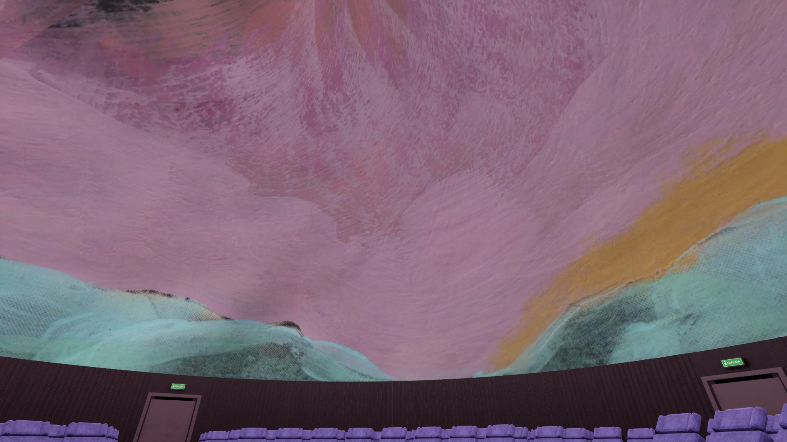
3gracias, de David Vega: pintura a mano fotograma a fotograma, montada en un formato nuevo para domo y vista desde una butaca de la sala virtual (captura del ejecutable).
#Novedades
Lo último que cambió, del más reciente al más antiguo. La bitácora completa está en el CHANGELOG.
| Fecha | Qué |
|---|---|
| 29 sep 2026 | TouchDesigner: montajes 16:9 corregidos (cilindro, túnel y recorte), efectos IN_FX, objetos 3D IN_3D, master de imagen y panel de control de Unreal por UDP. Las plantillas del ejecutable se generan desde las de TouchDesigner. |
| 29 sep 2026 | Sala y render: paredes negras, piso con menos reflejo, fondo desenfocado detrás de las pantallas 16:9, perfiles de render según la pantalla y la tarjeta, y ajustes.json que recuerda todo. |
| 29 sep 2026 | Video en la GPU: el ejecutable decodifica con Electra (D3D12 Video y NVDEC) sin salir de DirectX 12. Un video HEVC de 4096 × 4096 pasó de 6,5 a 1,5 núcleos de CPU. |
| 29 sep 2026 | AMD e Intel: investigación, decisiones y un plan de verificación en 07_GPUs_AMD_e_Intel.md. |
| 28 sep 2026 | Sala 180 rehecha contra fotos del Planetario de Bogotá: cuatro grupos de butacas, cuatro pasillos a las salidas, cabina de control cerrada. |
#Galería
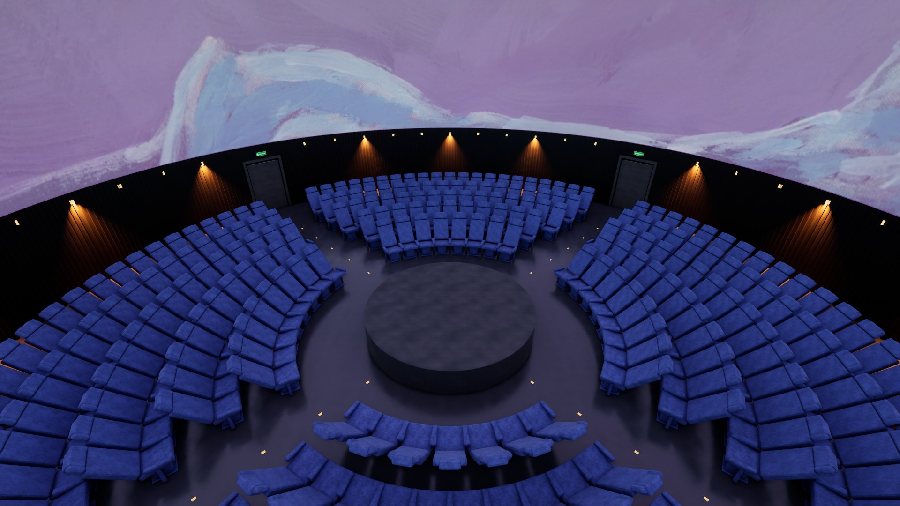
Sala 180, luces encendidas: 265 butacas, tarima de 3 m y muro negro con luces en lo alto.
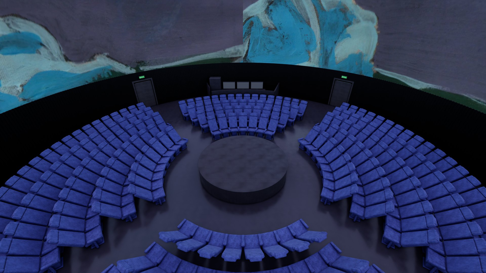
Con señal: la cúpula ilumina la sala y las luces se apagan solas.
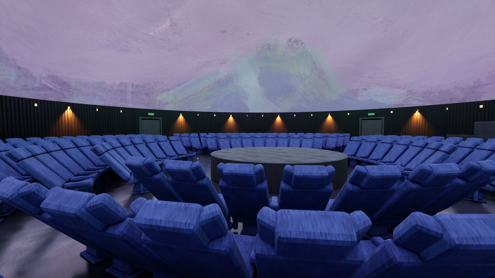
Pasillos que terminan en las cuatro salidas de emergencia.
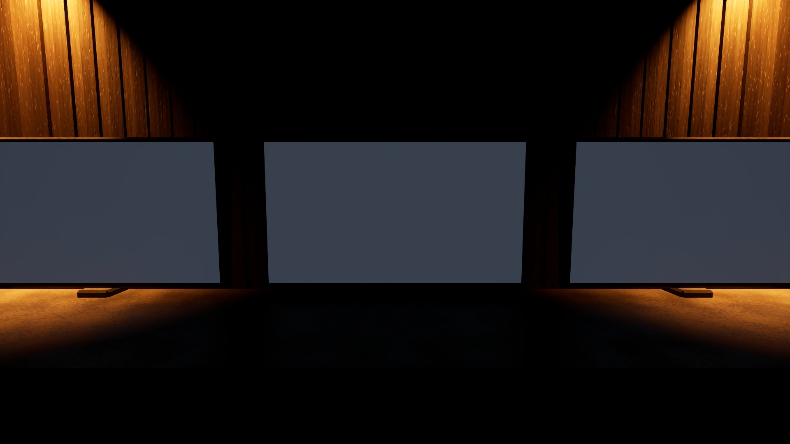
Cabina de control: cerrada, detrás del grupo de butacas de atrás; el operador no ve al público.
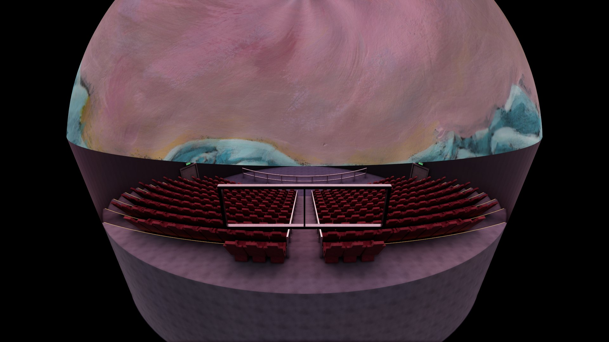
Sala 45, tipo Maloka: público sentado frente a una media esfera inclinada.
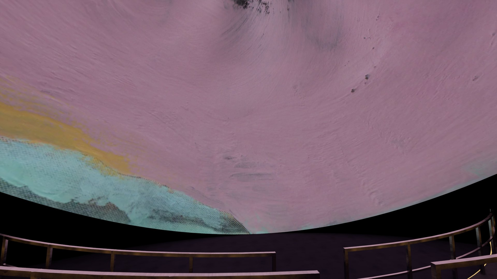
Sala 90, de pie con barandas, como en los museos.
#Ver más: la señal de TouchDesigner y el patrón de prueba
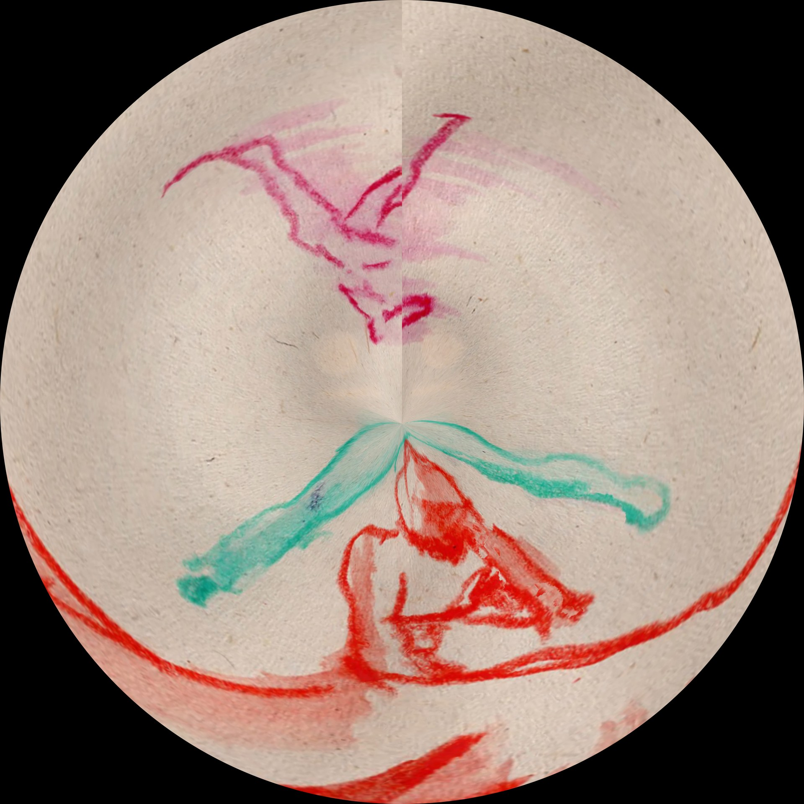 | 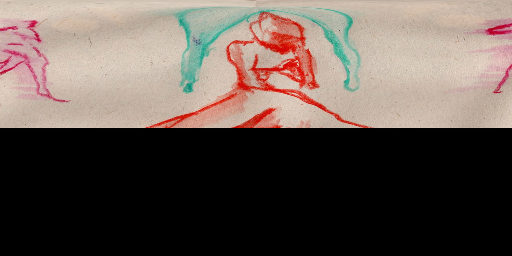 |
| Domemaster de 3gracias: lo que sale hacia el proyector | El lienzo equirectangular que recibe la sala VR |
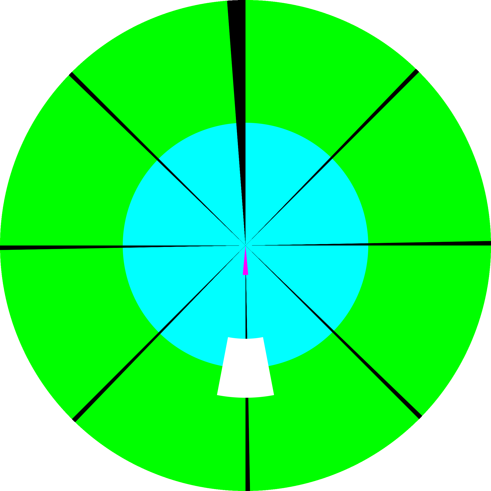 | 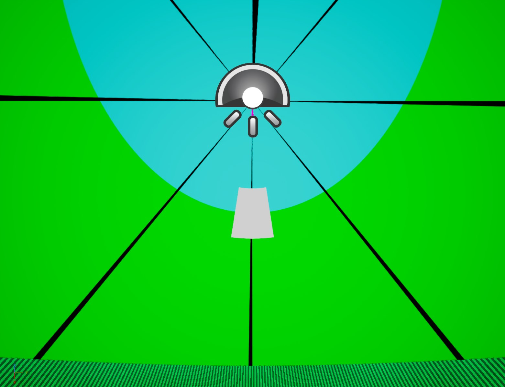 |
| El patrón de prueba con el que se midió todo | El mismo patrón en la cúpula virtual |
#Qué hace
- TouchDesigner toma video 360, 180 (domemaster o VR180) o plano 16:9 y lo convierte en la señal de una cúpula: un domemaster fisheye para el proyector y un equirectangular para la sala virtual.
- Unreal Engine 5.8 recibe esa señal por Spout y la proyecta en una sala de planetario en realidad virtual, para ver el contenido desde una butaca, con visor o en pantalla.
- Un ejecutable de Windows sin TouchDesigner reproduce los videos de una lista directamente en la cúpula, con menú en pantalla, jugador que camina o vuela, montajes de pantallas 16:9 editables en vivo, control por UDP y decodificación de video en la GPU.
- Tres modelos de sala (180 horizontal, 45 tipo Maloka con público sentado, 90 de pie con barandas) y las fichas de los domos de Colombia, para repetir el proceso con otra sala cambiando datos y no código.
Todo se regenera por script: la sala sale de Blender, el nivel de Unreal de un importador que no borra tus ajustes y la red de TouchDesigner de un constructor. Lo que se afirma sobre orientaciones y ángulos se midió con un patrón de prueba, y las capturas están en el repositorio.
#Arquitectura
#Inicio rápido
Requisitos: Windows 10 u 11, tarjeta gráfica con DirectX 12, TouchDesigner 2025 (alcanza la licencia Non-Commercial), Unreal Engine 5.8 con Visual Studio (el proyecto compila un módulo en C++) y Blender 5.2 solo si se quiere regenerar la sala.
#A. Con TouchDesigner: la señal en vivo
- Abre
00_TouchDesigner/domo_lab.toe. En/project1/DOMO, página Domo, dejaFuenteen Patrón de prueba para calibrar, o elige un módulo (360, 180, 16:9,IN_FXoIN_3D) y pon el archivo en su página. Solo suena el audio del video que está al aire. - Abre la sala con
03_Unreal/abrir_proyecto.ps1. En el editor, los niveles muestran lo que llegue por Spout con el nombreTD_Domo_Lab. Si la cúpula se queda negra, revisa la lista de comprobación de 03_Puente_Spout.md. - Para VR, OpenXR está habilitado: con SteamVR o Virtual Desktop corriendo, Play → VR Preview.
#B. Sin TouchDesigner: el ejecutable
- Cierra el editor y corre
03_Unreal/empaquetar.ps1. Deja el programa en03_Unreal/Build/Windows/DomoVR.exe. - Pon tus videos y la lista (
playlist.json) enContent/Movies/, junto al ejecutable. - Abre
DomoVR.exey pulsa F2 para el menú. Con F3 cambias entre la señal de Spout y los videos. - Los videos H.264 y HEVC de hasta 4096 × 4096 se decodifican en la GPU. Ver 06_Unreal_standalone.md.
#C. Otra sala o regenerar el modelo
# Blender, sin interfaz (la sala 180 hornea texturas: unos 10 minutos; 45 y 90, unos 20 segundos)
blender.exe -b -P 01_Blender\generar_sala_domo.py
blender.exe -b -P 01_Blender\generar_sala_domo.py -- --fov 45
blender.exe -b -P 01_Blender\generar_sala_domo.py -- --fov 90Después, el importador actualiza el nivel de Unreal sin borrar tus ajustes (03_Unreal/importar_sala.ps1). El detalle está en 05_Modelos_de_sala.md.
#El ejecutable sin TouchDesigner
DomoVR.exe es la sala empaquetada como programa suelto. Lleva todo lo necesario para ensayar un show sin salir de una sola máquina.
| Función | Cómo se usa |
|---|---|
| Menú en pantalla | F2 o M: fuente, videos, formato, luces, puntos de vista, calidad y sala |
| Playlist | playlist.json con cues; formato 360, domemaster, VR180 o 16:9 |
| Montajes 16:9 | 21 plantillas (corona, salas de 2 y 4 pantallas, anillo, cilindro, túnel…) editables en vivo |
| Fondo desenfocado | tres modos detrás de las pantallas: sin fondo, lavado y envolvente |
| Jugador | camina, vuela o atraviesa; teclas remapeables (controles.json) |
| Control por UDP | 127.0.0.1:7000, líneas domo.* desde TouchDesigner, Resolume, QLab o un script |
| Perfiles de render | automático, visor VR, monitor, proyector o domo, y ligero |
| Ajustes guardados | ajustes.json recuerda perfil, paredes, piso, velo, luces y decodificador |
| Video en la GPU | Electra con D3D12 Video y NVDEC; respaldo por etapas hasta la CPU |
| Optimizar video | copia H.264 liviana con ffmpeg (NVENC, AMF o Quick Sync según la tarjeta) |
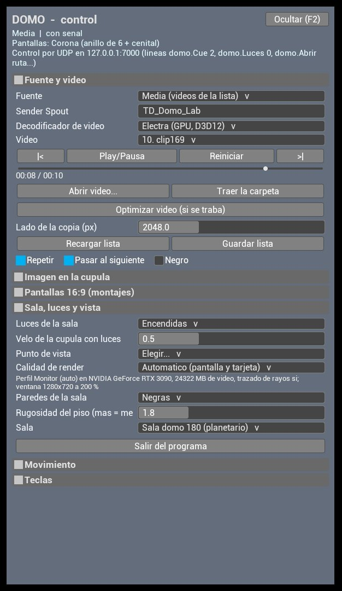
El menú (F2): calidad de render, paredes, piso, decodificador y montajes.
#Montajes 16:9
Un video plano se reparte en pantallas que rodean al público. Las plantillas son las mismas en TouchDesigner y en Unreal: salen de 00_TouchDesigner/video_dome/plantillas_ue.json, y 03_Unreal/generar_plantillas.py las lleva al ejecutable, así que las cifras no se desfasan.
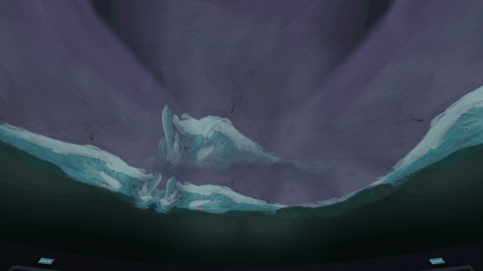
Seis de las 21 plantillas, vistas desde la sala: corona, sala de cuatro pantallas, anillo, cilindro, túnel y cine.
#Comandos de consola y UDP más usados
| Comando | Qué hace |
|---|---|
domo.Abrir RutaCompleta | agrega el video a la lista y lo pone en la cúpula |
domo.Cue N, domo.Siguiente, domo.Anterior | cambia de cue |
domo.Plantilla id | montaje 16:9 (cine, sala_2, sala_4, sala_corona, tunel, anillo, cilindro…) |
domo.Param Nombre Valor | cualquier parámetro: Yaw, Pitch, Horizonte, Brillo, S_Fondo_Desenfoque… |
domo.Perfil auto\|vr\|monitor\|proyector\|ligero | perfil de render |
domo.Paredes 0\|1 | paredes negras o con la madera original |
domo.Reproductor auto\|electra\|protron\|wmf | decodificador de video |
domo.Luces 0\|1\|auto | luces de la sala; auto las hace seguir a la señal |
domo.Optimizar | copia H.264 liviana del video actual |
domo.Guardar | escribe la lista y los ajustes |
La lista completa está en 06_Unreal_standalone.md.
#TouchDesigner
El sistema de señal vive en /project1/DOMO. Cada módulo de entrada entrega el mismo lienzo equirectangular; de ahí salen el domemaster para el proyector y el equirectangular para la sala virtual.
| Módulo | Para qué |
|---|---|
| 360, 180 y 16:9 | video de cada formato; el 16:9 trae las plantillas de pantallas y 34 valores con rango para ajustarlas |
| IN_FX | ocho efectos GLSL reactivos al audio |
| IN_3D | objetos 3D animados con cámara orbital, sin importar modelos (hay una ranura para uno propio) |
| Master | brillo, contraste, gamma y negro de toda la salida |
| Panel UDP | manda comandos domo.* al ejecutable de Unreal |
| Patrón | lienzo de bandas y marcas para verificar orientaciones |
#Efectos e imágenes de IN_FX e IN_3D
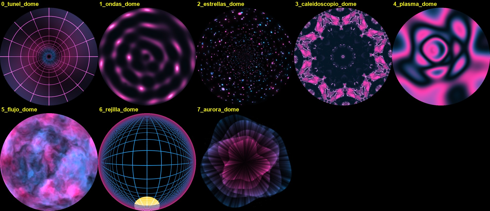 | 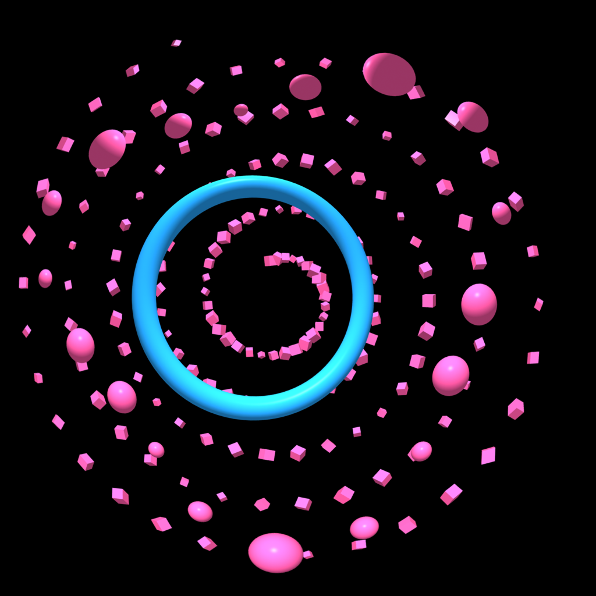 |
| Efectos reactivos al audio | Objetos 3D animados |
#El abismo: Unreal como fuente
El sentido inverso: en vez de recibir video, Unreal genera el domo y lo manda por NDI. Una escena en tiempo real (fondo marino con partículas y brillo, criaturas que cruzan la Colombia actual con el mar del Cretácico de Villa de Leyva, y basura plástica con la que dialogan) se renderiza como domemaster con una cámara que recorre el espacio. Medido: 2048 × 2048 a 30 fps estables por NDI en la RTX 3090, en el editor y en el programa empaquetado. Falta recibirlo dentro de TouchDesigner.
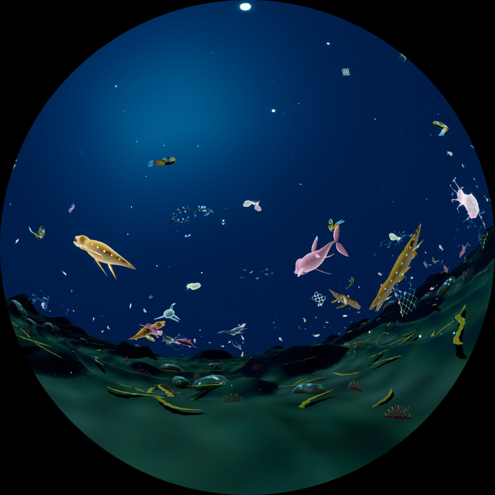
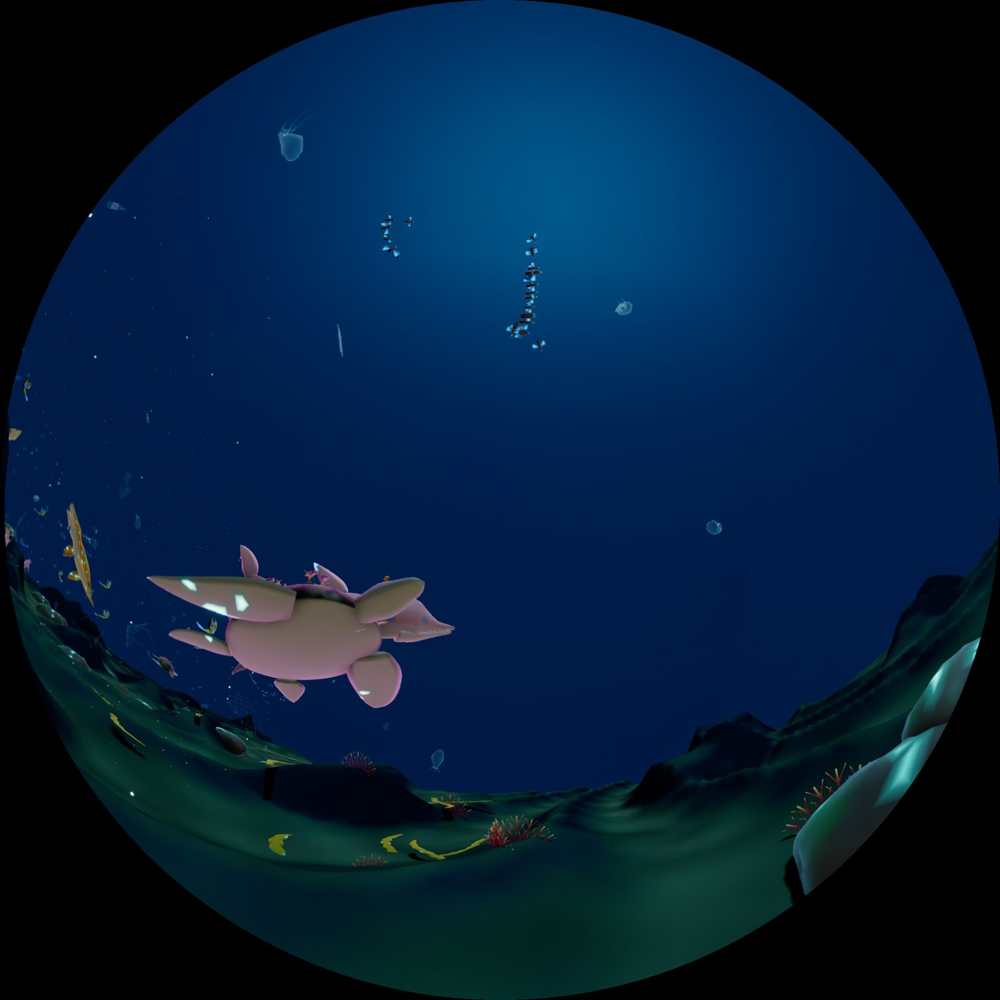
El domemaster que sale de Unreal por NDI: el diálogo con la basura, y una tortuga que cruza por delante de la cámara.
Detalles, parámetros y trampas en 09_Abismo_Unreal_a_NDI.md; las criaturas, en 08_Criaturas_abismo.md.
#Tarjetas gráficas
El ejecutable usa DirectX 12 y no depende del fabricante. Solo se probó en NVIDIA; para AMD e Intel están escritas las decisiones y el plan de verificación, y lo pendiente queda a la vista.
| Tema | NVIDIA | AMD | Intel |
|---|---|---|---|
| Render (Lumen, Nanite, TSR) | ✅ verificado (RTX 3090) | 🟡 previsto | 🟡 previsto |
| Video H.264 y HEVC en la GPU | ✅ NVDEC y D3D12 Video | 🟡 D3D12 Video y Media Foundation | 🟡 D3D12 Video y Media Foundation |
| Optimizar video (ffmpeg) | ✅ h264_nvenc | 🟡 h264_amf | 🟡 h264_qsv |
| Perfil de render automático | ✅ | 🟡 detecta el fabricante | 🟡 detecta el fabricante |
✅ verificado con la tarjeta · 🟡 implementado o decidido, sin verificar en esa tarjeta. Quien tenga una tarjeta AMD o Intel puede ayudar siguiendo la sección Sin verificar de 07_GPUs_AMD_e_Intel.md.
#Lo que se midió y conviene saber
- El lienzo común es equirectangular 2:1:
u0,5 es el frente,v0,5 el horizonte,v1 el cénit. La cúpula de Unreal lee solo la mitad superior y el frente cae en +X, el lado opuesto a la zona de control. - En el Projection TOP, el giro en azimut no se hace con las rotaciones: es un corrimiento horizontal del lienzo. La inclinación va como
rx = 90 − Pitch. - La costura de un 360 es un meridiano de polo a polo: girar en azimut solo la cambia de lugar y siempre sube hasta el cénit. Para sacarla de la cúpula hay que girar la esfera (página 360:
Rpitch90, oRroll90 conRpitch30). - El receptor Spout de Unreal solo lee texturas de 8 bits. Con 16-bit float se queda con el último frame que pudo leer y no avisa.
- Unreal en segundo plano frena el editor; para ver la señal en vivo hay que tenerlo al frente.
- En el motor, el decodificador D3D12 Video de Electra viene apagado en Windows; el controlador lo enciende al arrancar. En NVIDIA decodifica NVDEC, que tiene prioridad.
- Desde TouchDesigner se mueve el cénit, se escala, se rota y se elige cuántos grados de contenido caben en la cúpula (230 sobre una cúpula de 180 verificado con el patrón), sin tocar Unreal.
La lista completa, con fechas, está en la sección 5 de 01_Proceso_y_matematica.md.
#El proceso en cuatro pasos
- Sala real → modelo.
01_Blender/generar_sala_domo.pyconstruye la sala (cúpula de 23 m como la del Planetario de Bogotá, 265 butacas reclinadas en 4 grupos separados por 4 pasillos que terminan en las 4 salidas de emergencia, tarima de 3 m, cabina de control cerrada detrás del grupo de atrás y luces en lo alto del muro) y exporta FBX y un manifiesto JSON a02_Export/. - Modelo → Unreal.
03_Unreal/importar_sala.pyarma el nivelDomoVR: materiales PBR con texturas generadas por script, Nanite, Lumen con trazado de rayos por hardware, TSR, y una cúpula emisiva marcada como cielo más un SkyLight en tiempo real, para que la cúpula ilumine la sala. Volver a correrlo actualiza el nivel sin borrar tus ajustes. - TouchDesigner → Spout.
00_TouchDesigner/build_domo.pyconstruye/project1/DOMOy entrega el domemaster con el FOV de la sala (180, 90, 45) por Spout, NDI o disco, y el equirectangular que espera la sala VR (senderTD_Domo_Lab). - Verificación con patrón. El módulo
patronmanda un lienzo de bandas y marcas; con él se comprobó dónde cae cada parte del lienzo en la cúpula virtual. Capturas en05_Preview/pruebas/.
#Hoja de ruta
Lo que ya funciona está en el CHANGELOG. Esto es lo que sigue; nada está prometido para una fecha.
| Ahora | Después | Más adelante |
|---|---|---|
| Cerrar la cadena en vivo | Más control del show | Más alcance |
Recibir el abismo dentro de TouchDesigner (módulo IN_UE) y devolverle un Spout In a VIDEO_DOME sin errores | Audio del abismo por NDI y control por UDP | El abismo como textura de la cúpula de la sala virtual |
| Probar el panel UDP de TouchDesigner contra el ejecutable abierto | Fundido entre cues y un segundo reproductor para mezclar dos videos | Más salas de Colombia, con medidas en sitio |
Llevar los arreglos del shader de pantallas a estudio_pantallas.html | Remote Control en el build (-RCWebControlEnable) como segundo camino de control | Una sala armada desde una ficha de domos_colombia.json, sin editar código |
| Probar el ejecutable en un visor (SteamVR, Virtual Desktop) | Costura fundida del 360 dentro del material de la cúpula | Códec HAP cuando el disco sea más barato que la GPU |
| Verificar video y render en AMD e Intel | Textura de la cúpula en 16 bits o HDR (hoy 8 bits, igual que Spout) | Un paquete descargable (release) con el build y los videos de prueba |
| Medir los cuadros por segundo con Unreal y TouchDesigner abiertos a la vez | Enchufar un modelo 3D propio en IN_3D | Documentación traducida a inglés y portugués (hoy solo lo está este README) |
Hecho en septiembre de 2026
- [x] Sala 180 fiel al Planetario de Bogotá, salas 45 y 90, importador que no borra ajustes.
- [x] Ejecutable sin TouchDesigner: menú, playlist, control por UDP, jugador y teclas remapeables.
- [x] Montajes 16:9 (21 plantillas) editables en vivo, con fondo desenfocado y brillo por pantalla.
- [x] Decodificación de video en la GPU con DirectX 12 y respaldo a CPU.
- [x] Paredes negras, piso menos reflectante, perfiles de render y ajustes guardados.
- [x] TouchDesigner: montajes corregidos,
IN_FX,IN_3D, master y panel UDP. - [x] Investigación de AMD e Intel.
- [x] El abismo: Unreal genera un domo en tiempo real y lo manda por NDI (escena, criaturas y diálogo con la basura).
- [x] README en español, inglés y portugués.
Las propuestas se abren como issue o pull request; ver Contribuir.
#Documentación
| Quiero… | Abre |
|---|---|
| entender el proceso completo y la matemática | 01_Proceso_y_matematica.md |
| mandar un video a la cúpula desde TouchDesigner | 04_Senal_TouchDesigner.md |
| abrir o regenerar la sala en Unreal | 02_Sala_Unreal.md |
| conectar TouchDesigner con Unreal (Spout) | 03_Puente_Spout.md |
| usar el ejecutable sin TouchDesigner y empaquetarlo | 06_Unreal_standalone.md |
| usarlo con una tarjeta AMD o Intel | 07_GPUs_AMD_e_Intel.md |
| que Unreal genere el domo y lo mande por NDI (el abismo) | 09_Abismo_Unreal_a_NDI.md |
| las criaturas y la basura plástica del abismo | 08_Criaturas_abismo.md |
| los otros modelos de sala (45 y 90) | 05_Modelos_de_sala.md |
| las cúpulas de Colombia y cómo corregir sus datos | 06_Modelos/Domos_de_Colombia.md |
| probar montajes de pantallas en el navegador | estudio_pantallas.html |
| qué cambió y cuándo | CHANGELOG.md |
| la bitácora completa de cómo se construyó la sala | Unreal_sala_domo.md |
Toda la documentación está también como una sola página con buscador en docs/index.html; se regenera con python 04_Docs/build_docs.py. Los documentos están en español; este README existe también en inglés y portugués.
#Qué hay adentro
00_TouchDesigner/ el sistema de señal
build_domo.py constructor de /project1/DOMO (idempotente, conserva la configuración)
domo_lab.toe, DOMO.tox el resultado guardado; abrir y usar
modulos/ IN_FX, IN_3D, master y panel UDP
shaders/ costura del 360, giro esférico, patrón de prueba, pantalla plana, efectos
video_dome/ el sistema de pantallas para video plano (corona, salas, anillos, cilindro)
web/estudio_pantallas.html estudio WebGL para mover pantallas con el mouse
01_Blender/ generar_sala_domo.py y los .blend
02_Export/ FBX y manifiestos JSON de las tres salas
03_Unreal/ DomoVR (proyecto UE 5.8), importar_sala.py, conectar_spout.py, empaquetar.ps1,
crear_media_domo.py (material de la cúpula), generar_plantillas.py
04_Docs/ la documentación, numerada en orden de lectura
05_Preview/ renders, capturas de Unreal y las pruebas del patrón
06_Modelos/ domos_colombia.json y su documento
CHANGELOG.md bitácora de cambios#Contribuir
- Corregir o agregar una sala de Colombia: edita
06_Modelos/domos_colombia.json, un pull request por sala, con la fuente de cada dato o diciendo que es medida en sitio. - Probar en una tarjeta AMD o Intel: sigue la sección Sin verificar de 07_GPUs_AMD_e_Intel.md y abre un issue con el resultado.
- Un modelo de sala nuevo: ver 05_Modelos_de_sala.md.
- Un módulo de entrada nuevo en TouchDesigner: ver la sección 9 de 04_Senal_TouchDesigner.md.
- Traducir la documentación: los documentos de
04_Docs/están solo en español. - Si cambias una afirmación sobre ángulos u orientaciones, acompáñala de la captura del patrón que la demuestra en
05_Preview/pruebas/.
Al contribuir aceptas que tu aporte se publique bajo las mismas licencias del repo (MIT para código, CC BY 4.0 para contenido).
#Créditos
- Sala, scripts, documentación y renders: David Vega (@Danvegamo), 2026.
- 3gracias: video de David Vega, pintado a mano fotograma a fotograma.
- Sistema de pantallas para video plano: viene del sistema de pantallas de un proyecto anterior del autor, probado entonces con un video plano de prueba.
- Plugin Spout para Unreal: kessoning/Spout-UE5, rama
5.8_fix; su README declara licencia MIT. - Las notas de referencia citan a Paul Bourke y el material Fulldome 101; ver la sección 4 del documento del proceso.
#Licencia
| Qué | Licencia |
|---|---|
| Código (scripts de Python, shaders, C++, redes de TouchDesigner, HTML) | MIT |
| Documentación, imágenes, renders, capturas y modelos 3D | CC BY 4.0 |
| Video 3gracias y sus fotogramas | Todos los derechos reservados; ver LICENSE-CONTENT |
Plugin 03_Unreal/DomoVR/Plugins/SpoutPlugin | MIT de su autor (kessoning/Spout-UE5) |
Las dos licencias piden crédito. Para el contenido, la atribución es:
#Cómo citar
GitHub muestra el botón Cite this repository a partir de CITATION.cff. En texto:
@software{vega_domo_lab_2026,
author = {Vega, David},
title = {domo-lab: laboratorio abierto de domo con TouchDesigner y Unreal Engine},
year = {2026},
url = {https://github.com/Danvegamo/domo-lab}
}README.en.md
Overview in English
The project in English: what it does, quick start, the standalone player, graphics cards and roadmap
Test a dome video from the seat, in virtual reality, before you step into the real dome.
3gracias by David Vega: a hand-painted, frame-by-frame film, mounted in a new format for domes and seen from a seat in the virtual room (capture of the standalone player).
#What's new
Latest changes, newest first. The full log is in the CHANGELOG (Spanish).
| Date | What |
|---|---|
| 29 Sep 2026 | TouchDesigner: fixed 16:9 layouts (cylinder, tunnel and crop), IN_FX effects, IN_3D objects, an image master and a UDP control panel for Unreal. The player's templates are now generated from TouchDesigner's. |
| 29 Sep 2026 | Room and rendering: black walls, a less reflective floor, a blurred background behind the 16:9 screens, render profiles that adapt to the display and the graphics card, and an ajustes.json file that remembers the settings. |
| 29 Sep 2026 | GPU video decoding: the player decodes with Electra (D3D12 Video and NVDEC) without leaving DirectX 12. A 4096 × 4096 HEVC video went from 6.5 to 1.5 CPU cores. |
| 29 Sep 2026 | AMD and Intel: research, decisions and a verification plan in 07_GPUs_AMD_e_Intel.md. |
| 28 Sep 2026 | Room 180 rebuilt from photos of the Bogotá Planetarium: four seating groups, four aisles to the exits, a closed control booth. |
#Gallery
Room 180, lights on: 265 seats, a 3 m stage and a black wall with lights high up.
With signal: the dome lights the room and the room lights switch off on their own.
Aisles that end at the four emergency exits.
Control booth: closed, behind the rear seating group; the operator cannot see the audience.
Room 45, Maloka style: seated audience facing a tilted half sphere.
Room 90, standing with railings, as in museums.
#More: the TouchDesigner signal and the test pattern
| Domemaster of 3gracias: what goes to the projector | The equirectangular canvas the VR room receives |
| The test pattern used to measure everything | The same pattern on the virtual dome |
#What it does
- TouchDesigner takes 360, 180 (domemaster or VR180) or flat 16:9 video and turns it into a dome signal: a fisheye domemaster for the projector and an equirectangular canvas for the virtual room.
- Unreal Engine 5.8 receives that signal through Spout and projects it in a virtual-reality planetarium room, so you can watch the content from a seat, with a headset or on a screen.
- A Windows executable that does not need TouchDesigner plays the videos of a list straight onto the dome, with an on-screen menu, a player that walks or flies, 16:9 screen layouts editable live, UDP control and GPU video decoding.
- Three room models (180 horizontal, 45 Maloka style with seated audience, 90 standing with railings) and the data sheets of Colombia's domes, so the process can be repeated for another room by changing data, not code.
Everything is regenerated by script: the room comes out of Blender, the Unreal level from an importer that keeps your edits, and the TouchDesigner network from a builder. Every claim about orientations and angles was measured with a test pattern, and the captures are in the repository.
#Architecture
#Quick start
Requirements: Windows 10 or 11, a DirectX 12 graphics card, TouchDesigner 2025 (the Non-Commercial license is enough), Unreal Engine 5.8 with Visual Studio (the project builds a C++ module) and Blender 5.2 only if you want to regenerate the room.
#A. With TouchDesigner: the live signal
- Open
00_TouchDesigner/domo_lab.toe. In/project1/DOMO, page Domo, leaveFuente(source) on the test pattern to calibrate, or pick a module (360, 180, 16:9,IN_FXorIN_3D) and set its file on its page. Only the audio of the video that is on air is heard. - Open the room with
03_Unreal/abrir_proyecto.ps1. In the editor, the levels show whatever arrives through Spout under the nameTD_Domo_Lab. If the dome stays black, go through the checklist in 03_Puente_Spout.md. - For VR, OpenXR is enabled: with SteamVR or Virtual Desktop running, Play → VR Preview.
#B. Without TouchDesigner: the standalone player
- Close the editor and run
03_Unreal/empaquetar.ps1. It leaves the program at03_Unreal/Build/Windows/DomoVR.exe. - Put your videos and the list (
playlist.json) inContent/Movies/, next to the executable. - Open
DomoVR.exeand press F2 for the menu. F3 switches between the Spout signal and the videos. - H.264 and HEVC videos up to 4096 × 4096 are decoded on the GPU. See 06_Unreal_standalone.md (Spanish).
#C. Another room, or regenerating the model
# Blender, headless (room 180 bakes textures: about 10 minutes; 45 and 90, about 20 seconds)
blender.exe -b -P 01_Blender\generar_sala_domo.py
blender.exe -b -P 01_Blender\generar_sala_domo.py -- --fov 45
blender.exe -b -P 01_Blender\generar_sala_domo.py -- --fov 90Then the importer updates the Unreal level without deleting your edits (03_Unreal/importar_sala.ps1). Details in 05_Modelos_de_sala.md (Spanish).
#The standalone player (no TouchDesigner)
DomoVR.exe is the room packaged as a stand-alone program. It carries everything needed to rehearse a show on a single machine.
| Feature | How it works |
|---|---|
| On-screen menu | F2 or M: source, videos, format, lights, viewpoints, quality and room |
| Playlist | playlist.json with cues; format 360, domemaster, VR180 or 16:9 |
| 16:9 layouts | 21 templates (crown, 2- and 4-screen rooms, ring, cylinder, tunnel…) editable live |
| Blurred background | three modes behind the screens: none, wash and wrap-around |
| Player | walks, flies or goes through walls; remappable keys (controles.json) |
| UDP control | 127.0.0.1:7000, domo.* lines from TouchDesigner, Resolume, QLab or a script |
| Render profiles | automatic, VR headset, monitor, projector or dome, and light |
| Saved settings | ajustes.json remembers profile, walls, floor, veil, lights and decoder |
| GPU video | Electra with D3D12 Video and NVDEC; staged fallback all the way to the CPU |
| Optimize video | lightweight H.264 copy with ffmpeg (NVENC, AMF or Quick Sync depending on the card) |
The menu (F2): render quality, walls, floor, decoder and layouts.
#16:9 layouts
A flat video is split into screens that surround the audience. The templates are the same in TouchDesigner and in Unreal: they come from 00_TouchDesigner/video_dome/plantillas_ue.json, and 03_Unreal/generar_plantillas.py carries them into the player, so the numbers never drift apart.
Six of the 21 templates, seen from the room: crown, four-screen room, ring, cylinder, tunnel and cinema.
#Most used console and UDP commands
| Command | What it does |
|---|---|
domo.Abrir FullPath | adds the video to the list and puts it on the dome |
domo.Cue N, domo.Siguiente, domo.Anterior | changes cue |
domo.Plantilla id | 16:9 layout (cine, sala_2, sala_4, sala_corona, tunel, anillo, cilindro…) |
domo.Param Name Value | any parameter: Yaw, Pitch, Horizonte, Brillo, S_Fondo_Desenfoque… |
domo.Perfil auto\|vr\|monitor\|proyector\|ligero | render profile |
domo.Paredes 0\|1 | black walls or the original wood |
domo.Reproductor auto\|electra\|protron\|wmf | video decoder |
domo.Luces 0\|1\|auto | room lights; auto makes them follow the signal |
domo.Optimizar | lightweight H.264 copy of the current video |
domo.Guardar | writes the list and the settings |
The full list is in 06_Unreal_standalone.md (Spanish). Command names are Spanish.
#TouchDesigner
The signal system lives in /project1/DOMO. Every input module delivers the same equirectangular canvas; from it come the domemaster for the projector and the equirectangular for the virtual room.
| Module | Purpose |
|---|---|
| 360, 180 and 16:9 | video of each format; the 16:9 module ships the screen templates and 34 ranged values to tune them |
| IN_FX | eight audio-reactive GLSL effects |
| IN_3D | animated 3D objects with an orbiting camera, no model import needed (there is a slot for your own) |
| Master | brightness, contrast, gamma and black for the whole output |
| UDP panel | sends domo.* commands to the Unreal player |
| Pattern | canvas of bands and marks to check orientations |
#IN_FX and IN_3D images
| Audio-reactive effects | Animated 3D objects |
#The abyss: Unreal as the source
The reverse direction: instead of receiving video, Unreal generates the dome and sends it over NDI. A real-time scene (a deep seabed with particles and glow, creatures that cross today's Colombia with the Cretaceous sea of Villa de Leyva, and plastic waste they talk to) is rendered as a domemaster by a camera that travels through the space. Measured: 2048 × 2048 at a steady 30 fps over NDI on the RTX 3090, in the editor and in the packaged player. Receiving it inside TouchDesigner is still to do.
The domemaster that leaves Unreal over NDI: the dialogue with the waste, and a turtle crossing in front of the camera.
Details, parameters and pitfalls in 09_Abismo_Unreal_a_NDI.md (Spanish); the creatures in 08_Criaturas_abismo.md (Spanish).
#Graphics cards
The player uses DirectX 12 and does not depend on the vendor. It has only been tested on NVIDIA; for AMD and Intel the decisions and a verification plan are written down, and what is still pending stays in plain sight.
| Topic | NVIDIA | AMD | Intel |
|---|---|---|---|
| Rendering (Lumen, Nanite, TSR) | ✅ verified (RTX 3090) | 🟡 expected | 🟡 expected |
| H.264 and HEVC on the GPU | ✅ NVDEC and D3D12 Video | 🟡 D3D12 Video and Media Foundation | 🟡 D3D12 Video and Media Foundation |
| Optimize video (ffmpeg) | ✅ h264_nvenc | 🟡 h264_amf | 🟡 h264_qsv |
| Automatic render profile | ✅ | 🟡 detects the vendor | 🟡 detects the vendor |
✅ verified on the card · 🟡 implemented or decided, not yet verified on that card. If you own an AMD or Intel card, you can help by following the Sin verificar (unverified) section of 07_GPUs_AMD_e_Intel.md (Spanish).
#What was measured and is worth knowing
- The common canvas is equirectangular 2:1:
u0.5 is the front,v0.5 the horizon,v1 the zenith. Unreal's dome reads only the upper half, and the front lies at +X, opposite the control area. - In the Projection TOP, azimuth spin is not done with the rotations: it is a horizontal shift of the canvas. Tilt goes as
rx = 90 − Pitch. - The seam of a 360 video is a pole-to-pole meridian: spinning in azimuth only moves it and it always climbs to the zenith. To get it out of the dome the sphere itself has to be rotated (page 360:
Rpitch90, orRroll90 withRpitch30). - Unreal's Spout receiver only reads 8-bit textures. With 16-bit float it keeps the last frame it could read and does not warn you.
- Unreal in the background throttles the editor; to see the live signal it has to be in front.
- In the engine, Electra's D3D12 Video decoder is switched off on Windows; the controller turns it on at start-up. On NVIDIA, NVDEC decodes, and it has priority.
- From TouchDesigner you move the zenith, scale, rotate and choose how many degrees of content fit on the dome (230 on a 180 dome, verified with the pattern), without touching Unreal.
The full list, with dates, is in section 5 of 01_Proceso_y_matematica.md.
#The process in four steps
- Real room → model.
01_Blender/generar_sala_domo.pybuilds the room (a 23 m dome like the Bogotá Planetarium's, 265 reclined seats in 4 groups separated by 4 aisles that end at the 4 emergency exits, a 3 m stage, a closed control booth behind the rear group and lights high on the wall) and exports FBX files and a JSON manifest to02_Export/. - Model → Unreal.
03_Unreal/importar_sala.pybuilds theDomoVRlevel: PBR materials with script-generated textures, Nanite, Lumen with hardware ray tracing, TSR, and an emissive dome marked as sky plus a real-time SkyLight so the dome lights the room. Running it again updates the level without deleting your edits. - TouchDesigner → Spout.
00_TouchDesigner/build_domo.pybuilds/project1/DOMOand delivers the domemaster with the room's FOV (180, 90, 45) over Spout, NDI or to disk, and the equirectangular the VR room expects (senderTD_Domo_Lab). - Verification with a pattern. The
patronmodule sends a canvas of bands and marks; with it we checked where every part of the canvas lands on the virtual dome. Captures are in05_Preview/pruebas/.
#Roadmap
What already works is in the CHANGELOG. This is what comes next; nothing is promised for a date.
| Now | Next | Later |
|---|---|---|
| Close the live chain | More show control | More reach |
Receive the abyss inside TouchDesigner (an IN_UE module) and give VIDEO_DOME a Spout In again without errors | Abyss audio over NDI and UDP control | The abyss as the dome texture of the virtual room |
| Test TouchDesigner's UDP panel against the running player | Cross-fade between cues and a second player to mix two videos | More Colombian rooms, measured on site |
Port the screen-shader fixes to estudio_pantallas.html | Remote Control in the build (-RCWebControlEnable) as a second way to control it | A room built from a domos_colombia.json entry, without editing code |
| Test the player in a headset (SteamVR, Virtual Desktop) | Feathered 360 seam inside the dome material | HAP codec for when disk is cheaper than GPU |
| Verify video and rendering on AMD and Intel | Dome texture in 16 bits or HDR (8 bits today, same as Spout) | A downloadable package (a release) with the build and test videos |
| Measure frames per second with Unreal and TouchDesigner open together | Plug your own 3D model into IN_3D | Documentation translated into English and Portuguese (only this README is today) |
Done in September 2026
- [x] Room 180 faithful to the Bogotá Planetarium, rooms 45 and 90, importer that keeps your edits.
- [x] Player without TouchDesigner: menu, playlist, UDP control, walking player and remappable keys.
- [x] 16:9 layouts (21 templates) editable live, with a blurred background and per-screen brightness.
- [x] GPU video decoding on DirectX 12 with CPU fallback.
- [x] Black walls, a less reflective floor, render profiles and saved settings.
- [x] TouchDesigner: fixed layouts,
IN_FX,IN_3D, master and UDP panel. - [x] AMD and Intel research.
- [x] The abyss: Unreal generates a real-time dome and sends it over NDI (scene, creatures and a dialogue with the waste).
- [x] README in Spanish, English and Portuguese.
Proposals are opened as an issue or a pull request; see Contributing.
#Documentation
| I want to… | Open |
|---|---|
| understand the whole process and the maths | 01_Proceso_y_matematica.md |
| send a video to the dome from TouchDesigner | 04_Senal_TouchDesigner.md |
| open or regenerate the room in Unreal | 02_Sala_Unreal.md |
| connect TouchDesigner to Unreal (Spout) | 03_Puente_Spout.md |
| use the player without TouchDesigner and package it | 06_Unreal_standalone.md |
| use it with an AMD or Intel card | 07_GPUs_AMD_e_Intel.md |
| have Unreal generate the dome and send it over NDI (the abyss) | 09_Abismo_Unreal_a_NDI.md |
| the creatures and plastic waste of the abyss | 08_Criaturas_abismo.md |
| the other room models (45 and 90) | 05_Modelos_de_sala.md |
| Colombia's domes and how to fix their data | 06_Modelos/Domos_de_Colombia.md |
| try screen layouts in the browser | estudio_pantallas.html |
| what changed and when | CHANGELOG.md |
| the full log of how the room was built | Unreal_sala_domo.md |
All the documentation is also a single searchable page at docs/index.html; regenerate it with python 04_Docs/build_docs.py. The documents are in Spanish; this README is also available in Spanish and Portuguese.
#What is inside
00_TouchDesigner/ the signal system
build_domo.py builder of /project1/DOMO (idempotent, keeps the configuration)
domo_lab.toe, DOMO.tox the saved result; open and use
modulos/ IN_FX, IN_3D, master and UDP panel
shaders/ 360 seam, spherical spin, test pattern, flat screen, effects
video_dome/ the screen system for flat video (crown, rooms, rings, cylinder)
web/estudio_pantallas.html WebGL studio to move screens with the mouse
01_Blender/ generar_sala_domo.py and the .blend files
02_Export/ FBX files and JSON manifests of the three rooms
03_Unreal/ DomoVR (UE 5.8 project), importar_sala.py, conectar_spout.py, empaquetar.ps1,
crear_media_domo.py (dome material), generar_plantillas.py
04_Docs/ the documentation, numbered in reading order
05_Preview/ renders, Unreal captures and the pattern tests
06_Modelos/ domos_colombia.json and its document
CHANGELOG.md change log#Contributing
- Fix or add a Colombian room: edit
06_Modelos/domos_colombia.json, one pull request per room, giving the source of each figure or saying it was measured on site. - Test on an AMD or Intel card: follow the Sin verificar section of 07_GPUs_AMD_e_Intel.md and open an issue with the result.
- A new room model: see 05_Modelos_de_sala.md.
- A new input module in TouchDesigner: see section 9 of 04_Senal_TouchDesigner.md.
- Translate the documentation: the documents in
04_Docs/are Spanish only. - If you change a claim about angles or orientations, back it with the pattern capture that proves it in
05_Preview/pruebas/.
By contributing you agree that your work is published under the same licenses as the repo (MIT for code, CC BY 4.0 for content).
#Credits
- Room, scripts, documentation and renders: David Vega (@Danvegamo), 2026.
- 3gracias: a video by David Vega, hand-painted frame by frame.
- Screen system for flat video: it comes from the screen system of an earlier project by the author, tested then with a flat test video.
- Spout plugin for Unreal: kessoning/Spout-UE5, branch
5.8_fix; its README declares the MIT license. - The reference notes cite Paul Bourke and the Fulldome 101 material; see section 4 of the process document.
#License
| What | License |
|---|---|
| Code (Python scripts, shaders, C++, TouchDesigner networks, HTML) | MIT |
| Documentation, images, renders, captures and 3D models | CC BY 4.0 |
| The video 3gracias and its frames | All rights reserved; see LICENSE-CONTENT |
Plugin 03_Unreal/DomoVR/Plugins/SpoutPlugin | MIT by its author (kessoning/Spout-UE5) |
Both licenses ask for credit. For content, the attribution is:
#How to cite
GitHub shows the Cite this repository button from CITATION.cff. As text:
@software{vega_domo_lab_2026,
author = {Vega, David},
title = {domo-lab: laboratorio abierto de domo con TouchDesigner y Unreal Engine},
year = {2026},
url = {https://github.com/Danvegamo/domo-lab}
}README.pt-BR.md
Visao geral em portugues
O projeto em portugues: o que faz, inicio rapido, o executavel, placas de video e roteiro
Testar um vídeo de domo a partir da poltrona, em realidade virtual, antes de entrar na cúpula real.
3gracias, de David Vega: pintura à mão quadro a quadro, montada em um formato novo para domo e vista de uma poltrona da sala virtual (captura do executável).
#Novidades
Últimas mudanças, da mais recente para a mais antiga. O registro completo está no CHANGELOG (em espanhol).
| Data | O quê |
|---|---|
| 29 set 2026 | TouchDesigner: montagens 16:9 corrigidas (cilindro, túnel e corte), efeitos IN_FX, objetos 3D IN_3D, um master de imagem e um painel de controle do Unreal por UDP. Os modelos do executável passam a ser gerados a partir dos do TouchDesigner. |
| 29 set 2026 | Sala e renderização: paredes pretas, piso menos reflexivo, fundo desfocado atrás das telas 16:9, perfis de renderização que se adaptam à tela e à placa de vídeo, e um ajustes.json que lembra as configurações. |
| 29 set 2026 | Vídeo na GPU: o executável decodifica com o Electra (D3D12 Video e NVDEC) sem sair do DirectX 12. Um vídeo HEVC de 4096 × 4096 passou de 6,5 para 1,5 núcleos de CPU. |
| 29 set 2026 | AMD e Intel: pesquisa, decisões e um plano de verificação em 07_GPUs_AMD_e_Intel.md. |
| 28 set 2026 | Sala 180 refeita a partir de fotos do Planetário de Bogotá: quatro grupos de poltronas, quatro corredores até as saídas, cabine de controle fechada. |
#Galeria
Sala 180, luzes acesas: 265 poltronas, palco de 3 m e parede preta com luzes no alto.
Com sinal: a cúpula ilumina a sala e as luzes da sala se apagam sozinhas.
Corredores que terminam nas quatro saídas de emergência.
Cabine de controle: fechada, atrás do grupo de poltronas do fundo; o operador não vê o público.
Sala 45, estilo Maloka: público sentado diante de uma meia esfera inclinada.
Sala 90, em pé com grades, como nos museus.
#Ver mais: o sinal do TouchDesigner e o padrão de teste
| Domemaster de 3gracias: o que sai para o projetor | A tela equirretangular que a sala VR recebe |
| O padrão de teste com o qual tudo foi medido | O mesmo padrão na cúpula virtual |
#O que faz
- O TouchDesigner recebe vídeo 360, 180 (domemaster ou VR180) ou plano 16:9 e o transforma no sinal de uma cúpula: um domemaster fisheye para o projetor e um equirretangular para a sala virtual.
- O Unreal Engine 5.8 recebe esse sinal por Spout e o projeta em uma sala de planetário em realidade virtual, para ver o conteúdo de uma poltrona, com óculos VR ou em uma tela.
- Um executável para Windows que dispensa o TouchDesigner reproduz os vídeos de uma lista direto na cúpula, com menu na tela, jogador que anda ou voa, montagens de telas 16:9 editáveis ao vivo, controle por UDP e decodificação de vídeo na GPU.
- Três modelos de sala (180 horizontal, 45 estilo Maloka com público sentado, 90 em pé com grades) e as fichas dos domos da Colômbia, para repetir o processo com outra sala trocando dados e não código.
Tudo se regenera por script: a sala sai do Blender, o nível do Unreal de um importador que não apaga os seus ajustes e a rede do TouchDesigner de um construtor. O que se afirma sobre orientações e ângulos foi medido com um padrão de teste, e as capturas estão no repositório.
#Arquitetura
#Início rápido
Requisitos: Windows 10 ou 11, placa de vídeo com DirectX 12, TouchDesigner 2025 (a licença Non-Commercial basta), Unreal Engine 5.8 com Visual Studio (o projeto compila um módulo em C++) e Blender 5.2 só se quiser regenerar a sala.
#A. Com o TouchDesigner: o sinal ao vivo
- Abra
00_TouchDesigner/domo_lab.toe. Em/project1/DOMO, página Domo, deixeFuente(fonte) no padrão de teste para calibrar, ou escolha um módulo (360, 180, 16:9,IN_FXouIN_3D) e coloque o arquivo na página dele. Só se ouve o áudio do vídeo que está no ar. - Abra a sala com
03_Unreal/abrir_proyecto.ps1. No editor, os níveis mostram o que chegar por Spout com o nomeTD_Domo_Lab. Se a cúpula ficar preta, revise a lista de verificação de 03_Puente_Spout.md. - Para VR, o OpenXR está habilitado: com o SteamVR ou o Virtual Desktop rodando, Play → VR Preview.
#B. Sem o TouchDesigner: o executável
- Feche o editor e rode
03_Unreal/empaquetar.ps1. Ele deixa o programa em03_Unreal/Build/Windows/DomoVR.exe. - Coloque os seus vídeos e a lista (
playlist.json) emContent/Movies/, ao lado do executável. - Abra o
DomoVR.exee pressione F2 para o menu. F3 alterna entre o sinal do Spout e os vídeos. - Vídeos H.264 e HEVC de até 4096 × 4096 são decodificados na GPU. Veja 06_Unreal_standalone.md (em espanhol).
#C. Outra sala ou regenerar o modelo
# Blender, sem interface (a sala 180 assa texturas: uns 10 minutos; a 45 e a 90, uns 20 segundos)
blender.exe -b -P 01_Blender\generar_sala_domo.py
blender.exe -b -P 01_Blender\generar_sala_domo.py -- --fov 45
blender.exe -b -P 01_Blender\generar_sala_domo.py -- --fov 90Depois, o importador atualiza o nível do Unreal sem apagar os seus ajustes (03_Unreal/importar_sala.ps1). Os detalhes estão em 05_Modelos_de_sala.md (em espanhol).
#O executável sem TouchDesigner
O DomoVR.exe é a sala empacotada como programa independente. Traz tudo o que é preciso para ensaiar um show em uma única máquina.
| Função | Como se usa |
|---|---|
| Menu na tela | F2 ou M: fonte, vídeos, formato, luzes, pontos de vista, qualidade e sala |
| Playlist | playlist.json com cues; formato 360, domemaster, VR180 ou 16:9 |
| Montagens 16:9 | 21 modelos (coroa, salas de 2 e 4 telas, anel, cilindro, túnel…) editáveis ao vivo |
| Fundo desfocado | três modos atrás das telas: sem fundo, lavado e envolvente |
| Jogador | anda, voa ou atravessa paredes; teclas remapeáveis (controles.json) |
| Controle por UDP | 127.0.0.1:7000, linhas domo.* do TouchDesigner, Resolume, QLab ou de um script |
| Perfis de renderização | automático, óculos VR, monitor, projetor ou domo, e leve |
| Ajustes salvos | o ajustes.json lembra perfil, paredes, piso, véu, luzes e decodificador |
| Vídeo na GPU | Electra com D3D12 Video e NVDEC; reserva em etapas até a CPU |
| Otimizar vídeo | cópia H.264 leve com ffmpeg (NVENC, AMF ou Quick Sync conforme a placa) |
O menu (F2): qualidade de renderização, paredes, piso, decodificador e montagens.
#Montagens 16:9
Um vídeo plano é dividido em telas que cercam o público. Os modelos são os mesmos no TouchDesigner e no Unreal: saem de 00_TouchDesigner/video_dome/plantillas_ue.json, e o 03_Unreal/generar_plantillas.py os leva ao executável; assim os números não se desencontram.
Seis dos 21 modelos, vistos da sala: coroa, sala de quatro telas, anel, cilindro, túnel e cinema.
#Comandos de console e UDP mais usados
| Comando | O que faz |
|---|---|
domo.Abrir CaminhoCompleto | adiciona o vídeo à lista e o coloca na cúpula |
domo.Cue N, domo.Siguiente, domo.Anterior | muda de cue |
domo.Plantilla id | montagem 16:9 (cine, sala_2, sala_4, sala_corona, tunel, anillo, cilindro…) |
domo.Param Nome Valor | qualquer parâmetro: Yaw, Pitch, Horizonte, Brillo, S_Fondo_Desenfoque… |
domo.Perfil auto\|vr\|monitor\|proyector\|ligero | perfil de renderização |
domo.Paredes 0\|1 | paredes pretas ou com a madeira original |
domo.Reproductor auto\|electra\|protron\|wmf | decodificador de vídeo |
domo.Luces 0\|1\|auto | luzes da sala; auto faz com que sigam o sinal |
domo.Optimizar | cópia H.264 leve do vídeo atual |
domo.Guardar | grava a lista e os ajustes |
A lista completa está em 06_Unreal_standalone.md (em espanhol). Os nomes dos comandos são em espanhol.
#TouchDesigner
O sistema de sinal vive em /project1/DOMO. Cada módulo de entrada entrega a mesma tela equirretangular; dela saem o domemaster para o projetor e o equirretangular para a sala virtual.
| Módulo | Para quê |
|---|---|
| 360, 180 e 16:9 | vídeo de cada formato; o 16:9 traz os modelos de telas e 34 valores com faixa para ajustá-los |
| IN_FX | oito efeitos GLSL reativos ao áudio |
| IN_3D | objetos 3D animados com câmera orbital, sem importar modelos (há um encaixe para o seu) |
| Master | brilho, contraste, gama e preto de toda a saída |
| Painel UDP | envia comandos domo.* ao executável do Unreal |
| Padrão | tela de faixas e marcas para verificar orientações |
#Imagens do IN_FX e do IN_3D
| Efeitos reativos ao áudio | Objetos 3D animados |
#O abismo: o Unreal como fonte
O sentido inverso: em vez de receber vídeo, o Unreal gera o domo e o envia por NDI. Uma cena em tempo real (fundo marinho com partículas e brilho, criaturas que cruzam a Colômbia de hoje com o mar do Cretáceo de Villa de Leyva, e lixo plástico com o qual dialogam) é renderizada como domemaster por uma câmera que percorre o espaço. Medido: 2048 × 2048 a 30 fps estáveis por NDI na RTX 3090, no editor e no executável empacotado. Falta recebê-lo dentro do TouchDesigner.
O domemaster que sai do Unreal por NDI: o diálogo com o lixo, e uma tartaruga que cruza diante da câmera.
Detalhes, parâmetros e armadilhas em 09_Abismo_Unreal_a_NDI.md (em espanhol); as criaturas em 08_Criaturas_abismo.md (em espanhol).
#Placas de vídeo
O executável usa DirectX 12 e não depende do fabricante. Só foi testado em NVIDIA; para AMD e Intel estão escritas as decisões e o plano de verificação, e o que falta fica à vista.
| Tema | NVIDIA | AMD | Intel |
|---|---|---|---|
| Renderização (Lumen, Nanite, TSR) | ✅ verificado (RTX 3090) | 🟡 previsto | 🟡 previsto |
| Vídeo H.264 e HEVC na GPU | ✅ NVDEC e D3D12 Video | 🟡 D3D12 Video e Media Foundation | 🟡 D3D12 Video e Media Foundation |
| Otimizar vídeo (ffmpeg) | ✅ h264_nvenc | 🟡 h264_amf | 🟡 h264_qsv |
| Perfil de renderização automático | ✅ | 🟡 detecta o fabricante | 🟡 detecta o fabricante |
✅ verificado com a placa · 🟡 implementado ou decidido, ainda sem verificar nessa placa. Quem tiver uma placa AMD ou Intel pode ajudar seguindo a seção Sin verificar (sem verificar) de 07_GPUs_AMD_e_Intel.md (em espanhol).
#O que foi medido e vale saber
- A tela comum é equirretangular 2:1:
u0,5 é a frente,v0,5 o horizonte,v1 o zênite. A cúpula do Unreal lê só a metade superior e a frente cai em +X, o lado oposto à área de controle. - No Projection TOP, o giro em azimute não se faz com as rotações: é um deslocamento horizontal da tela. A inclinação vai como
rx = 90 − Pitch. - A costura de um 360 é um meridiano de polo a polo: girar em azimute só a muda de lugar e ela sempre sobe até o zênite. Para tirá-la da cúpula é preciso girar a esfera (página 360:
Rpitch90, ouRroll90 comRpitch30). - O receptor Spout do Unreal só lê texturas de 8 bits. Com 16-bit float ele fica com o último quadro que conseguiu ler e não avisa.
- O Unreal em segundo plano reduz o ritmo do editor; para ver o sinal ao vivo é preciso deixá-lo à frente.
- No motor, o decodificador D3D12 Video do Electra vem desligado no Windows; o controlador o liga ao iniciar. Em NVIDIA, quem decodifica é o NVDEC, que tem prioridade.
- No TouchDesigner se move o zênite, se escala, se gira e se escolhe quantos graus de conteúdo cabem na cúpula (230 sobre uma cúpula de 180, verificado com o padrão), sem tocar no Unreal.
A lista completa, com datas, está na seção 5 de 01_Proceso_y_matematica.md.
#O processo em quatro passos
- Sala real → modelo. O
01_Blender/generar_sala_domo.pyconstrói a sala (cúpula de 23 m como a do Planetário de Bogotá, 265 poltronas reclinadas em 4 grupos separados por 4 corredores que terminam nas 4 saídas de emergência, palco de 3 m, cabine de controle fechada atrás do grupo do fundo e luzes no alto da parede) e exporta FBX e um manifesto JSON para02_Export/. - Modelo → Unreal. O
03_Unreal/importar_sala.pymonta o nívelDomoVR: materiais PBR com texturas geradas por script, Nanite, Lumen com ray tracing por hardware, TSR, e uma cúpula emissiva marcada como céu mais um SkyLight em tempo real, para que a cúpula ilumine a sala. Rodá-lo de novo atualiza o nível sem apagar os seus ajustes. - TouchDesigner → Spout. O
00_TouchDesigner/build_domo.pyconstrói/project1/DOMOe entrega o domemaster com o FOV da sala (180, 90, 45) por Spout, NDI ou disco, e o equirretangular que a sala VR espera (senderTD_Domo_Lab). - Verificação com padrão. O módulo
patronenvia uma tela de faixas e marcas; com ele se comprovou onde cai cada parte da tela na cúpula virtual. Capturas em05_Preview/pruebas/.
#Roteiro
O que já funciona está no CHANGELOG. Isto é o que vem a seguir; nada está prometido para uma data.
| Agora | Depois | Mais adiante |
|---|---|---|
| Fechar a cadeia ao vivo | Mais controle do show | Mais alcance |
Receber o abismo dentro do TouchDesigner (módulo IN_UE) e devolver um Spout In ao VIDEO_DOME sem erros | Áudio do abismo por NDI e controle por UDP | O abismo como textura da cúpula da sala virtual |
| Testar o painel UDP do TouchDesigner contra o executável aberto | Transição entre cues e um segundo reprodutor para misturar dois vídeos | Mais salas da Colômbia, com medidas no local |
Levar as correções do shader de telas para o estudio_pantallas.html | Remote Control no build (-RCWebControlEnable) como segundo caminho de controle | Uma sala montada a partir de uma ficha do domos_colombia.json, sem editar código |
| Testar o executável em óculos VR (SteamVR, Virtual Desktop) | Costura suavizada do 360 dentro do material da cúpula | Codec HAP para quando o disco for mais barato que a GPU |
| Verificar vídeo e renderização em AMD e Intel | Textura da cúpula em 16 bits ou HDR (hoje 8 bits, igual ao Spout) | Um pacote para baixar (uma release) com o build e os vídeos de teste |
| Medir os quadros por segundo com Unreal e TouchDesigner abertos ao mesmo tempo | Encaixar um modelo 3D próprio no IN_3D | Documentação traduzida para inglês e português (hoje só este README) |
Feito em setembro de 2026
- [x] Sala 180 fiel ao Planetário de Bogotá, salas 45 e 90, importador que não apaga ajustes.
- [x] Executável sem TouchDesigner: menu, playlist, controle por UDP, jogador e teclas remapeáveis.
- [x] Montagens 16:9 (21 modelos) editáveis ao vivo, com fundo desfocado e brilho por tela.
- [x] Decodificação de vídeo na GPU com DirectX 12 e reserva na CPU.
- [x] Paredes pretas, piso menos reflexivo, perfis de renderização e ajustes salvos.
- [x] TouchDesigner: montagens corrigidas,
IN_FX,IN_3D, master e painel UDP. - [x] Pesquisa sobre AMD e Intel.
- [x] O abismo: o Unreal gera um domo em tempo real e o envia por NDI (cena, criaturas e diálogo com o lixo).
- [x] README em espanhol, inglês e português.
As propostas são abertas como issue ou pull request; veja Contribuir.
#Documentação
| Quero… | Abra |
|---|---|
| entender o processo completo e a matemática | 01_Proceso_y_matematica.md |
| enviar um vídeo à cúpula pelo TouchDesigner | 04_Senal_TouchDesigner.md |
| abrir ou regenerar a sala no Unreal | 02_Sala_Unreal.md |
| conectar o TouchDesigner ao Unreal (Spout) | 03_Puente_Spout.md |
| usar o executável sem TouchDesigner e empacotá-lo | 06_Unreal_standalone.md |
| usá-lo com uma placa AMD ou Intel | 07_GPUs_AMD_e_Intel.md |
| fazer o Unreal gerar o domo e enviá-lo por NDI (o abismo) | 09_Abismo_Unreal_a_NDI.md |
| as criaturas e o lixo plástico do abismo | 08_Criaturas_abismo.md |
| os outros modelos de sala (45 e 90) | 05_Modelos_de_sala.md |
| as cúpulas da Colômbia e como corrigir seus dados | 06_Modelos/Domos_de_Colombia.md |
| testar montagens de telas no navegador | estudio_pantallas.html |
| o que mudou e quando | CHANGELOG.md |
| o registro completo de como a sala foi construída | Unreal_sala_domo.md |
Toda a documentação também está em uma única página com busca em docs/index.html; ela se regenera com python 04_Docs/build_docs.py. Os documentos estão em espanhol; este README também existe em espanhol e inglês.
#O que há dentro
00_TouchDesigner/ o sistema de sinal
build_domo.py construtor de /project1/DOMO (idempotente, conserva a configuração)
domo_lab.toe, DOMO.tox o resultado salvo; abrir e usar
modulos/ IN_FX, IN_3D, master e painel UDP
shaders/ costura do 360, giro esférico, padrão de teste, tela plana, efeitos
video_dome/ o sistema de telas para vídeo plano (coroa, salas, anéis, cilindro)
web/estudio_pantallas.html estúdio WebGL para mover telas com o mouse
01_Blender/ generar_sala_domo.py e os arquivos .blend
02_Export/ FBX e manifestos JSON das três salas
03_Unreal/ DomoVR (projeto UE 5.8), importar_sala.py, conectar_spout.py, empaquetar.ps1,
crear_media_domo.py (material da cúpula), generar_plantillas.py
04_Docs/ a documentação, numerada em ordem de leitura
05_Preview/ renders, capturas do Unreal e os testes do padrão
06_Modelos/ domos_colombia.json e seu documento
CHANGELOG.md registro de mudanças#Contribuir
- Corrigir ou adicionar uma sala da Colômbia: edite
06_Modelos/domos_colombia.json, um pull request por sala, com a fonte de cada dado ou dizendo que foi medido no local. - Testar em uma placa AMD ou Intel: siga a seção Sin verificar de 07_GPUs_AMD_e_Intel.md e abra uma issue com o resultado.
- Um modelo de sala novo: veja 05_Modelos_de_sala.md.
- Um módulo de entrada novo no TouchDesigner: veja a seção 9 de 04_Senal_TouchDesigner.md.
- Traduzir a documentação: os documentos de
04_Docs/estão só em espanhol. - Se você mudar uma afirmação sobre ângulos ou orientações, acompanhe-a da captura do padrão que a comprova em
05_Preview/pruebas/.
Ao contribuir, você aceita que a sua contribuição seja publicada sob as mesmas licenças do repositório (MIT para código, CC BY 4.0 para conteúdo).
#Créditos
- Sala, scripts, documentação e renders: David Vega (@Danvegamo), 2026.
- 3gracias: vídeo de David Vega, pintado à mão quadro a quadro.
- Sistema de telas para vídeo plano: vem do sistema de telas de um projeto anterior do autor, testado então com um vídeo plano de teste.
- Plugin Spout para o Unreal: kessoning/Spout-UE5, ramo
5.8_fix; o README dele declara a licença MIT. - As notas de referência citam Paul Bourke e o material Fulldome 101; veja a seção 4 do documento do processo.
#Licença
| O quê | Licença |
|---|---|
| Código (scripts Python, shaders, C++, redes do TouchDesigner, HTML) | MIT |
| Documentação, imagens, renders, capturas e modelos 3D | CC BY 4.0 |
| O vídeo 3gracias e seus quadros | Todos os direitos reservados; veja LICENSE-CONTENT |
Plugin 03_Unreal/DomoVR/Plugins/SpoutPlugin | MIT do seu autor (kessoning/Spout-UE5) |
As duas licenças pedem crédito. Para o conteúdo, a atribuição é:
#Como citar
O GitHub mostra o botão Cite this repository a partir do CITATION.cff. Em texto:
@software{vega_domo_lab_2026,
author = {Vega, David},
title = {domo-lab: laboratorio abierto de domo con TouchDesigner y Unreal Engine},
year = {2026},
url = {https://github.com/Danvegamo/domo-lab}
}04_Docs/01_Proceso_y_matematica.md
El proceso y la matematica
Que es esto, la matematica del domo paso a paso y las decisiones ya medidas
Este es el documento que abre la documentación del laboratorio. Cuenta el proceso completo de punta a punta, la matemática que lo sostiene y lo que se aprendió de las referencias y de la cúpula real. Lo que ya tiene documento propio no se repite aquí, se enlaza:
- 02_Sala_Unreal.md — la sala en Unreal Engine 5.8 y el contrato de geometría.
- 03_Puente_Spout.md — cómo llega la señal de TouchDesigner a la cúpula virtual.
- 04_Senal_TouchDesigner.md — el sistema de señal
DOMO, sus módulos y su calibración. - ../06_Modelos/Domos_de_Colombia.md — las salas de domo del país y cómo corregir sus datos.
#1. Qué es esto y para quién
Es un laboratorio abierto de domo. Tiene tres piezas que se pueden usar juntas o por separado:
- La señal. Un sistema en TouchDesigner que toma video 360, domemasters, VR180 o video plano y entrega un domemaster fisheye con el FOV de la sala, más una versión equirectangular para la sala virtual. Sale por Spout, NDI o a disco.
- La sala VR. Un modelo de planetario a escala del Planetario de Bogotá, generado por script en Blender y visualizado en Unreal con la cúpula como única fuente de luz. Sirve para ver en realidad virtual, desde una butaca, lo que se está produciendo, antes de pisar la cúpula real.
- Los modelos de salas de Colombia. Una tabla y un JSON con las cúpulas del país (diámetro, inclinación, FOV, aforo, proyección), para que el mismo proceso se pueda repetir con otra sala cambiando constantes y no código.
Está pensado para quien produce contenido fulldome (artistas, estudiantes, mediadores de planetario) y no tiene acceso diario a una cúpula, y para quien quiera montar el mismo flujo con otra sala u otro motor.
#2. El proceso en una página
sala real ──medidas──► Blender ──FBX──► Unreal (sala VR, cúpula emisiva)
▲
│ Spout, lienzo equirectangular
TouchDesigner: IN_360 / IN_180 / IN_169 ──► equi ──► domo (fisheye) ──► out_domo
│
├─► Spout / NDI ─► servidor de la cúpula real
└─► grabar (HAP)
patrón de prueba ──► se mira en la cúpula real y en la VR ──► Yaw, Pitch, FOV- Sala real → modelo. Las cotas de la sala entran como constantes de
01_Blender/generar_sala_domo.py: radio de 11,5 m (23 m de diámetro), ecuador de la cúpula a 3 m, tarima central, sector de control de 7 m de arco contra el muro, 265 butacas en 4 grupos con 4 pasillos (la consola queda detrás del grupo de atrás), 4 puertas. El script corre en headless, borra la escena y la reconstruye entera y exporta dos FBX (la estructura horneada y las piezas sueltas con su pivote), un manifiesto JSON con la posición de cada pieza y un glTF. Las texturas PBR solo se hornean con--hornear: Unreal usa las suyas, tileables. Los renders de control están en05_Preview/.
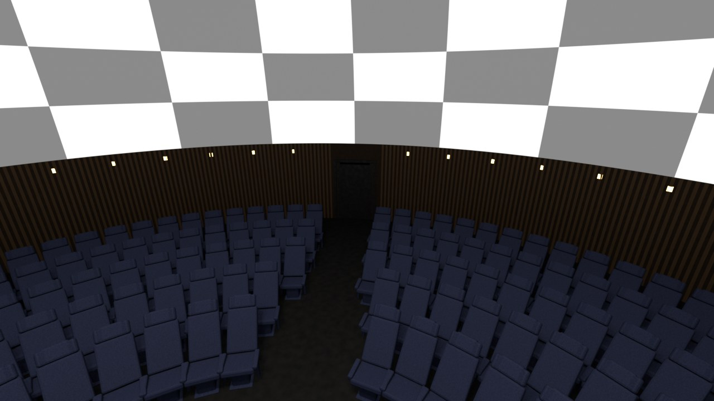
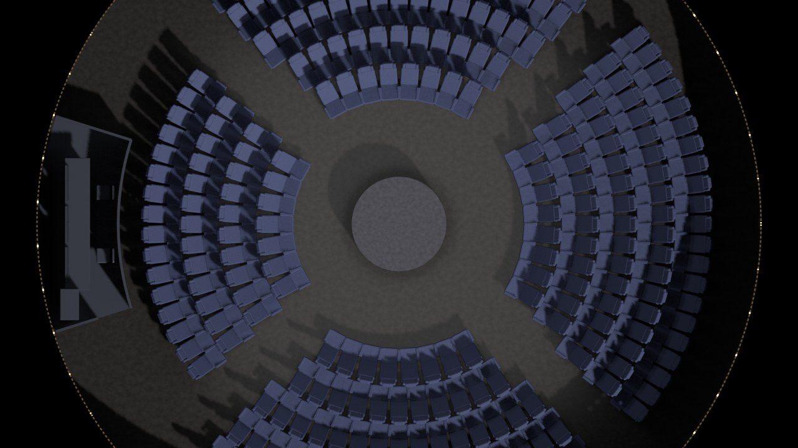
- Modelo → Unreal.
importar_sala.pyimporta el FBX, crea los materiales y arma el nivel. La cúpula (SM_Domo) lleva las normales hacia adentro y un UV con U = azimut y V = elevación: la textura que reciba se lee como lienzo equirectangular; la única corrección del lado de Unreal es voltear la U (EspejoU, porque la U de la cúpula crece hacia la izquierda de quien mira desde adentro). El material de la cúpula es Unlit y emisivo; con Lumen, esa emisión ilumina butacas y muro. Detalle en 02_Sala_Unreal.md.
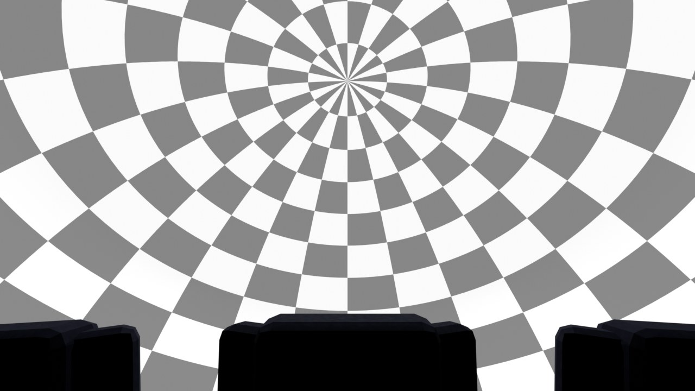
- TouchDesigner manda por Spout. El sistema
DOMOproduce el lienzo equirectangular común y lo publica con el senderTD_Domo_Lab. En Unreal,ASpoutDomeReceiverlo recibe cada tick y lo pone en el parámetroSpoutTexturedeMI_Domo. Detalle en 03_Puente_Spout.md.
- Verificación con patrón.
shaders/patron.fragpinta el lienzo con franjas de color, meridianos, un cuadro blanco al frente y una marca en el cénit. Se mira en el domemaster y en la sala VR y se corrigenYaw,Pitchy el modelo de sala hasta que el frente, el cénit y la costura caen donde deben. Con ese patrón se midieron todas las orientaciones de la sección 3.9.
#3. La matemática
Todo lo que sigue está implementado en 00_TouchDesigner/build_domo.py, 00_TouchDesigner/shaders/*.frag y 00_TouchDesigner/video_dome/dome_map.frag. Los ángulos van en radianes dentro de los shaders y en grados en los parámetros; las fórmulas se escriben tal como las calcula el código.
#3.1 Coordenadas del domo
Una dirección en la cúpula se describe con dos ángulos: el azimut a, medido alrededor del cénit con a = 0 en el frente de la sala, y la elevación e, con e = 0 en el horizonte (la springline, donde arranca la cúpula) y e = 90° en el cénit. La base es (derecha, frente, cénit), y la dirección unitaria es:
\vec P(a, e) = (\sin a \cos e,\; \cos a \cos e,\; \sin e)Al revés, de una dirección a los ángulos: a = \operatorname{atan2}(P_x, P_y) y e = \arcsin P_z. Esta es la función dirFrom del shader y es la única convención de dirección que usa todo el sistema.
El ángulo cenital \theta (medido desde el cénit hacia abajo) es el complemento: \theta = 90° - e. Un domo de 180° cubre 0 \le \theta \le 90°.
#3.2 Equirectangular ↔ dirección
El lienzo equirectangular es un rectángulo 2:1 donde las dos coordenadas son los dos ángulos, lineales. Con la convención del sistema (u = 0.5 frente, v = 0.5 horizonte, v = 1 cénit):
u = \tfrac12 + \frac{a}{360°}, \qquad v = \tfrac12 + \frac{e}{180°}y por tanto a = (u - \tfrac12)\cdot 360°, e = (v - \tfrac12)\cdot 180°. La mitad superior del lienzo (v > 0.5) es la cúpula; la inferior queda bajo el horizonte y en un domo de 180° no se ve. El lienzo se cierra sobre sí mismo en u = 0 y u = 1, que es el azimut 180°, detrás del público.
Dos consecuencias prácticas salen de esa linealidad:
- Un corrimiento horizontal del lienzo es un giro puro en azimut. Por eso el
Yawse aplica comoTransform TOPcontx = Yaw / 360y extensiónrepeat, no como rotación delProjection TOP. - Un rectángulo dibujado en el lienzo no es un rectángulo en la cúpula: su ancho en grados de azimut se comprime por
\cos eal subir. Esta es la razón por la que las pantallas de video plano no se dibujan sobre el lienzo, sino por dirección (sección 3.5).
#3.3 El domemaster: fisheye azimutal equidistante
El domemaster es una imagen cuadrada con un círculo adentro. El estándar fulldome es la proyección azimutal equidistante (angular fisheye): el radio en la imagen es lineal con el ángulo cenital. Con coordenadas normalizadas nc \in [-1, 1]^2 del cuadro:
r = |nc|, \qquad \theta = r \cdot \frac{FOV}{2}, \qquad \varphi = \operatorname{atan2}(nc_x, -nc_y)y la dirección en la cúpula:
\vec P = (\sin\theta \sin\varphi,\; \sin\theta \cos\varphi,\; \cos\theta)Con FOV = 180° la mitad del radio son exactamente 45°, el centro del círculo es el cénit, el borde es el horizonte y fuera del círculo (r > 1) va negro puro. El signo de -nc_y pone el frente del domo abajo del cuadro, que es la convención de entrega. Al revés, de una dirección al domemaster:
r = \frac{\theta}{FOV/2}, \qquad nc = r\,(\sin\varphi,\; -\cos\varphi)Esta inversa es la que usa el editor con el mouse: como el radio es el ángulo, pasar de un clic en el panel a azimut y elevación no necesita ninguna proyección rara.
El "modelo de sala" del sistema es sencillamente este FOV: 180° para media esfera, 90° y 45° para casquetes, o un valor propio. Un domemaster de 210° (como el de la SATosphere de Montreal) es la misma fórmula con otro divisor. Los fisheye fotográficos (equisolid, estereográfico, ortográfico) tienen otra relación entre r y \theta y hay que remapearlos; la clasificación completa está en Paul Bourke, paulbourke.net/dome/fisheyetypes/.
#3.4 Por qué el mapeo se hace por píxel y no por geometría
El antecedente de este sistema (documentado en el repositorio Domo_TouchDesigner, 04_Docs/Material_360_y_16-9.md) lo resolvía con geometría: una esfera con el video pegado por dentro, una cámara en el centro, un Render TOP y un Projection TOP hacia el simulador. Se dejó por tres cosas medidas el 17 de septiembre de 2026:
- Los modos
fisheye180ydualparaboloiddelRender TOPdeforman en el vértice, no en el píxel. Con poca teselación las rectas se ven rectas cuando deberían curvarse, y el dual paraboloid deja grietas negras radiales en la costura entre los dos paraboloides. - La ruta correcta con geometría,
cubemap→Projection TOP(cubemap → fisheye, FOV 180), sí resuelve por píxel, pero cuesta seis caras de render por cuadro para mostrar un video que ya venía equirectangular. - Una pantalla curva para el 16:9 exigía un
Script SOPcon malla teselada y una segunda esfera de fondo, todo dentro de la misma escena.
El sistema actual no tiene geometría ni cámara. Un 360 ya está en el formato del lienzo; un domemaster se convierte con un Projection TOP; y el video plano se resuelve al revés que un render: el shader recorre cada píxel del domemaster, calcula su dirección \vec P con la fórmula de 3.3 y pregunta qué pantalla la cubre. No hay teselado que pueda romperse porque no hay vértices.
#3.5 Las pantallas de video plano
Cada pantalla se define por dónde apunta (yaw, pitch, roll), cuánto abarca (hfov, vfov) y su forma (mode). Su centro y sus ejes son:
\vec C = \vec P(\text{yaw}, \text{pitch}), \quad
\vec R = (\cos\text{yaw},\; -\sin\text{yaw},\; 0), \quad
\vec U = (-\sin\text{yaw}\sin\text{pitch},\; -\cos\text{yaw}\sin\text{pitch},\; \cos\text{pitch})y con roll los ejes giran: \vec R' = \vec R\cos\rho + \vec U\sin\rho, \vec U' = \vec U\cos\rho - \vec R\sin\rho. Para cada píxel del domemaster se proyecta su dirección sobre esa base: x = \vec P\cdot\vec R, y = \vec P\cdot\vec U, z = \vec P\cdot\vec C, y se descarta si z \le 0.001 (la dirección mira al lado contrario de la pantalla).
Plana (gnomónica). Es una pantalla de cine de verdad: las rectas del video siguen rectas en el espacio.
u = \tfrac12 + \frac{x/z}{2\tan(hfov/2)}, \qquad v = \tfrac12 + \frac{y/z}{2\tan(vfov/2)}Hasta unos 100° de ancho es la que no se ve deformada; más allá estira las esquinas.
Curva (ángulos iguales). Cada píxel ocupa los mismos grados de cúpula:
u = \tfrac12 + \frac{\operatorname{atan2}(x, z)}{hfov}, \qquad v = \tfrac12 + \frac{\arcsin y}{vfov}Banda. Un rectángulo directo en azimut y elevación, sin marco propio, con \Delta a = a - \text{yaw} envuelto a [-\pi, \pi]:
u = \tfrac12 + \frac{\Delta a}{hfov}, \qquad v = \tfrac12 + \frac{e - \text{pitch}}{vfov}Es la única que puede dar la vuelta entera (hfov = 360) sin deformarse en los costados.
Túnel. Coordenadas polares alrededor del centro de la pantalla:
q = \left(\frac{\operatorname{atan2}(x, z)}{hfov/2},\; \frac{\arcsin y}{vfov/2}\right), \quad
u = \frac{\operatorname{atan2}(q_y, q_x)}{2\pi} + \tfrac12, \quad
v = \operatorname{fract}\big((1 - |q|)\cdot \text{tile} - \text{travel}\big)con |q| \le 1. El video se enrosca hacia el centro y con tile arma anillos que se alejan. Con material figurativo se lee como un remolino: es para material abstracto.
En todas, la pantalla acepta el píxel solo si 0 \le u, v \le 1; después se aplica el espejo, el recorte (cropx, cropy, cropw, croph) y la opacidad.
#3.6 El cilindro
El video en una pared cilíndrica alrededor del público, no pegado a la cúpula. Un rayo que sale del centro con elevación e golpea una pared de radio 1 a altura \tan e, así que:
h = \tan e, \qquad h_0 = \tan(\text{pitch}), \qquad h_1 = \tan(\text{pitch} + vfov)u = \tfrac12 + \frac{\Delta a}{hfov}, \qquad v = \frac{h - h_0}{h_1 - h_0} - \text{travel}Solo existe sobre el horizonte (e > 0) y dentro de |\Delta a| \le hfov/2. La tangente comprime la imagen sola hacia el cénit: esa es la fuga, lo que hace sentir que la ciudad sigue para arriba. Cerca del cénit \tan e se va al infinito, por eso el shader corta en e = 89{,}1° (EL_MAX = 1.5551); más arriba aparecían artefactos de precisión justo en el centro del domemaster. Regla práctica: si la textura tiene horizonte o rectas, cilindro; el túnel es para lo abstracto.
#3.7 El anillo y la costura normalizada
Una sola pantalla al frente sirve a quien mira hacia ahí. En un planetario el público está repartido y no hay un frente, así que una fila de la tabla puede repetirse en anillo: rep copias sobre un arco repspan. El giro que recibe la copia k de n es:
\delta_k =
\begin{cases}
k \cdot \dfrac{span}{n} & \text{si } span \ge 359° \text{ (vuelta completa)}\\[2ex]
\left(k - \dfrac{n-1}{2}\right)\cdot \dfrac{span}{n-1} & \text{si es un abanico parcial}
\end{cases}Con la vuelta entera la copia 0 se queda donde el usuario puso la pantalla; con un arco parcial las copias se centran sobre esa dirección.
Pegadas una al lado de la otra las copias se leen como un collage; la costura (blend, en grados) las une. Cada copia se ensancha esos grados y el borde suave ocupa exactamente el solape:
hfov_c = hfov + blend, \qquad feather = \frac{blend}{hfov_c}El peso de un píxel dentro del marco es un producto de smoothstep en los bordes que se degradan (edges: los cuatro, solo los costados, o solo arriba y abajo). Lo decisivo es cómo se mezclan las copias de una misma fila: se suman los aportes y se dividen por el peso total,
\text{col} = \frac{\sum_k w_k\, T(uv_k)}{\sum_k w_k}, \qquad
\alpha = \min\Big(\sum_k w_k,\, 1\Big)\cdot \text{opacity}Con la mezcla secuencial que había antes, dos bordes suaves encimados sumaban 0,75 de cobertura y dejaban una banda oscura en cada costura. Las filas distintas sí se apilan una sobre otra en el orden de la tabla (la última queda arriba), que es lo que uno espera al poner un túnel debajo de una pantalla.
La cuenta de si el anillo cierra: el paso entre copias es repspan / rep y cada copia cubre hfov + blend. Si cubre menos que el paso queda hueco; si cubre bastante más, la imagen se repite encima de sí misma.
#3.8 La costura de un video 360
Un 360 mal cosido deja una línea vertical donde el borde izquierdo se encuentra con el derecho, o en cualquier azimut si la costura del stitching quedó dentro del cuadro. shaders/costura.frag funde una franja alrededor de esa columna. Con s la posición de la costura en u y w el ancho de la franja:
d = u - s - \lfloor u - s + \tfrac12 \rfloor \in [-\tfrac12, \tfrac12), \qquad
m = 1 - \operatorname{smoothstep}(0, w, |d|)d es la distancia a la costura con vuelta, así funciona igual en u = 0. Dentro de la franja (m > 0) se desenfoca en horizontal con un núcleo triangular de 33 muestras:
\text{blur}(p) = \frac{\sum_{i=-16}^{16} (1 - |t_i|)\; T\big(p + (t_i\, \rho\, m,\; 0)\big)}{\sum_i (1 - |t_i|)}, \qquad t_i = \frac{i}{16}con \rho el radio del desenfoque, y el resultado se mezcla con el original por m. Si además el lado derecho de la costura quedó desplazado o más oscuro que el izquierdo, hay dos correcciones que actúan solo sobre ese lado, con un peso lado = \operatorname{step}(0, d)\,(1 - \operatorname{smoothstep}(0, 3w, |d|)): un corrimiento vertical v' = v + \Delta y \cdot lado antes de muestrear, y una ganancia rgb \cdot \operatorname{mix}(1, g, lado). Una guía pinta la costura en rojo (|d| < 0.0006) para encontrarla; luego se apaga.
#3.9 Las mediciones de orientación con el patrón
El Projection TOP de TouchDesigner tiene un orden de rotaciones que no conviene deducir de memoria. Con el patrón (shaders/patron.frag: verde y cian en la cúpula, rojo y amarillo bajo el horizonte, meridianos negros cada 45°, columna gruesa en u = 0, cuadro blanco en u = 0.5, v = 0.75, marca magenta en v = 0.97) se midió el 17 de septiembre de 2026:
| Operación | Ajuste medido | Qué hace |
|---|---|---|
| equirectangular → fisheye, sin rotar | — | deja el centro del fisheye en el horizonte del frente |
rx = 90 | sube el cénit al centro del círculo | la marca magenta queda en el centro |
ry = 90 | gira el domemaster | el frente (cuadro blanco) queda abajo, la costura arriba |
rx = 90 - Pitch | inclina el contenido | Pitch positivo lleva el frente hacia el cénit |
fisheye → equirectangular, rx = -90 | reconstruye el lienzo | el cénit vuelve a v = 1 |
Transform TOP tx = -0.25 | deshace el ry = 90 | el cuadro blanco vuelve a (0.5, 0.75); sin esto el frente queda a 90° |

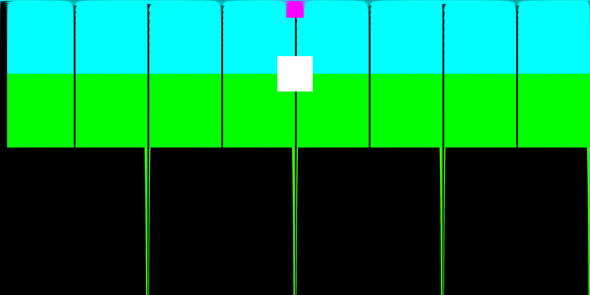
En la sala VR se verificó con las mismas capturas que la cúpula lee solo la mitad superior del lienzo (verde abajo, cian arriba, nada de rojo ni amarillo), que el frente u = 0.5 cae en +X del nivel y que la costura va a parar detrás del público.
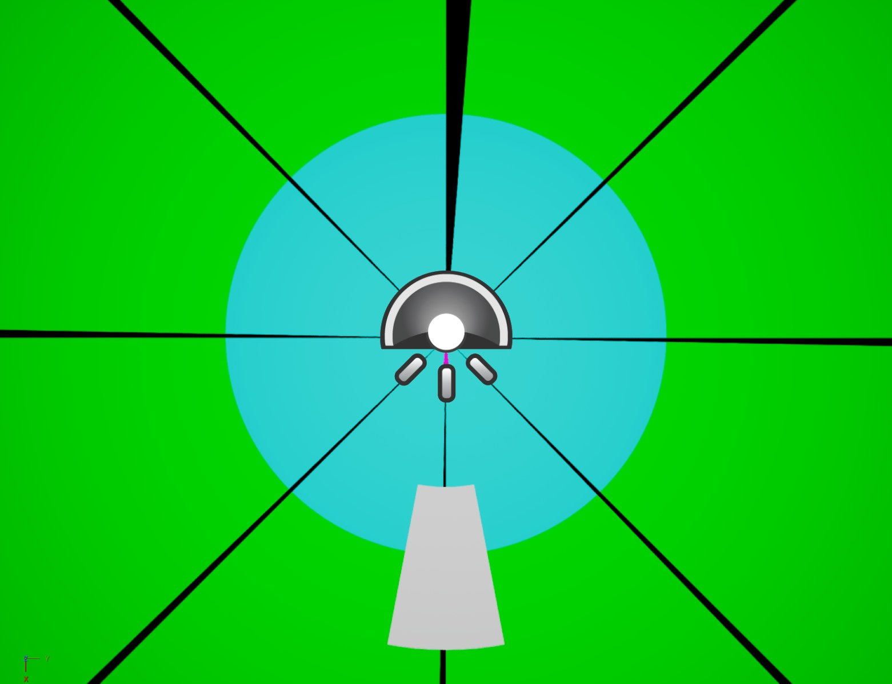
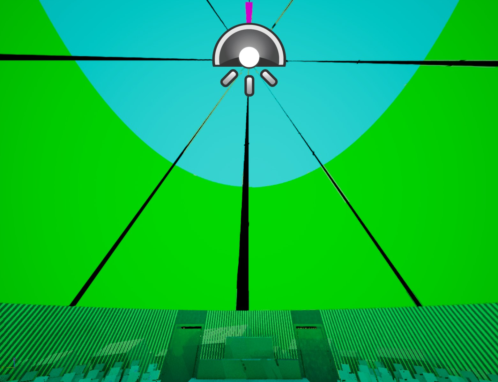
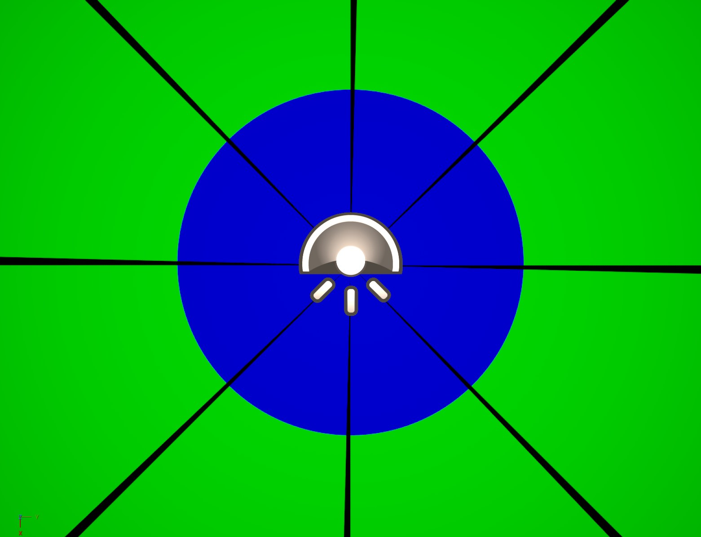
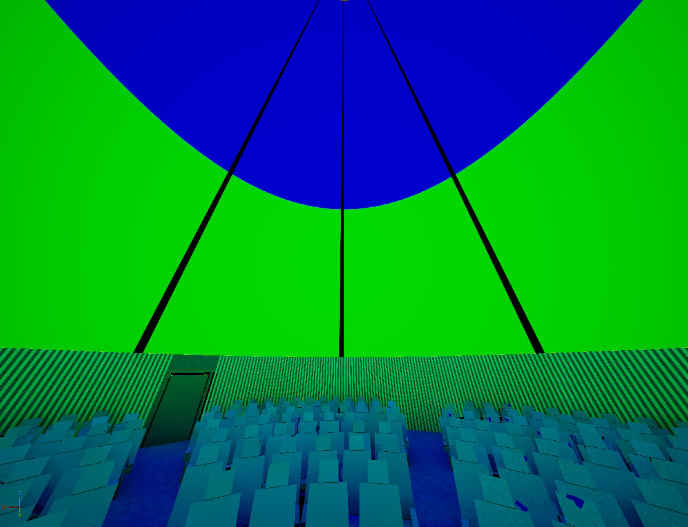
El procedimiento paso a paso para calibrar una sala nueva está en 04_Senal_TouchDesigner.md, sección 7.
#4. Notas de las referencias
Lo que sigue es paráfrasis con atribución de las notas del vault de conocimiento, que a su vez resumen Fulldome 101 (Meisam Nemati, Interactive & Immersive HQ, mayo de 2021) y el archivo de Paul Bourke (paulbourke.net/dome/), más la experiencia directa en el Planetario de Bogotá.
#4.1 Anatomía del domo
- Azimut siempre 360°; FOV vertical 180° es lo normal. Hay excepciones: la SATosphere de Montreal tiene 210° y la pantalla baja por debajo del horizonte. Renderizar a 180° en una sala de 210° deja pantalla sobrante; al revés se pierde el borde. Preguntar el FOV antes de renderizar.
- Inclinación. Muchos planetarios tienen la cúpula inclinada, típicamente 45°, para que el público sentado mire cómodo. En un domo inclinado el sweet spot se desplaza. Bourke documenta cómo inclinar y rotar un fisheye para compensarlo (
/dome/fishtilt/). - Orientación. El domo tiene frente y espalda; la entrada suele estar en el lado Back, así que el público entra por atrás y mira al Front. Esa convención es la que pone el frente abajo en el domemaster.
- Postura del público. Acostado es lo normal en fulldome y permite usar el cénit; de pie cabe más gente pero el cénit se pierde como zona útil. No lo decide el artista, lo decide la sala. La sala de este repositorio tiene las butacas reclinadas 40° hacia atrás, con el espectador casi acostado.
- El iDome es la versión pequeña, vertical e individual: el espectador mira al centro de la pantalla, no hacia arriba (
/dome/iDome/). - Sistemas de proyección. Un solo proyector (lente fisheye, espejo esférico o doble fisheye) es simple pero corto de resolución; varios proyectores con solape y blending dan más resolución a cambio de calibración constante. El espejo esférico (mirrordome) lo desarrolló Bourke en 2003 y sigue siendo la vía barata para un domo propio (
/dome/faq/).
#4.2 Zonas del domo
La cúpula tiene 360° pero la atención no. Sweet spot: abajo, hacia el frente, donde el público está orientado; en el domemaster cae en el tercio inferior del círculo y ahí va la idea principal. Cénit: segunda prioridad, funciona si el público está acostado. Atrás: mínima prioridad, no se deja vacío porque sostiene la envolvente, pero ahí no va información que haya que leer. El error típico es importar un HDRI con el interés en el medio: en la cúpula queda sobre la cabeza. Los dos arreglos son desplazar el contenido hacia abajo o rotar la cámara unos 45°. Para una obra interactiva la consecuencia es directa: toda respuesta perceptible cae en el sweet spot o cerca del cénit, porque lo que aparece atrás el público no lo atribuye a lo que hizo.
#4.3 Dome master
- Formato de entrega estándar: imagen circular dentro de un cuadro, azimutal equidistante. Centro = cénit; borde = springline; tercio inferior = frente; esquinas no se proyectan y ahí van los créditos (título y copyright abajo-izquierda, timecode arriba-izquierda).
- Si el material viene de cámara, la lente tiene que ser fisheye circular (180° en horizontal, vertical y diagonal), no diagonal. Bourke publicó las pruebas del círculo de imagen de la Lumix GH5 con la Sigma 4.5 (
/dome/gh5_sigma/). - Tamaños: secuencia de imágenes cuadradas sin pérdida (PNG o TGA con RLE). Pre-renderizado: 2048², 3200², 3600², 4096² o mayor. Tiempo real e interactivo: 2048² salvo que la máquina sea muy holgada. La interactividad se paga en resolución.
- Antes de entregar: exportar el nodo anterior al simulador de cúpula, no su salida; timeline con el número exacto de cuadros a 30 o 60 fps; negro puro fuera del círculo. Bourke publicó un patrón de prueba fulldome para medir la resolución real de una sala (
/dome/testpattern/). - Dentro de TouchDesigner,
Render TOPen Fish-Eye,Projection TOPcon salida fisheye ySphere SOPcon textura equiazimuth usan el mismo mapeo. ElProjection TOPtiene cuatro parámetros y nada más: entrada, salida, FOV y rotación; el FOV es lo que permite salir a 210° cuando la sala lo pide.
#4.4 Lo aprendido en cúpula con público real
Experiencia directa en el Planetario de Bogotá, recogida el 12 de septiembre de 2026. No está en ninguna fuente publicada.
- Sí entra señal en vivo, por NDI, desde TouchDesigner o Resolume según el contenido. Eso convierte la interactividad en producción, no en investigación.
- La restricción es el ancho de banda. La red es de 1 Gb y con cuatro o cinco fuentes NDI simultáneas se satura. Queda pendiente evaluar el salto a 2,5 GbE y volver a medir.
- Seguridad de la red. Un canal de entrada abierto al público es también una superficie de ataque, aunque nadie tenga mala intención: la gente mandó mensajes que no se controlaban y se conectaron desde fuera de la sala hasta saturar el servidor. Red aislada, límite de clientes y moderación de lo que entra, desde el diseño.
- Videos de respaldo. Dejar videos corriendo en segundo plano: si la parte interactiva se cae o el servidor se satura, la sala nunca queda en negro.
- Reglas de un verbo. No hay obra que se enseñe sola, pero las reglas funcionan si son muy simples: mueve, toca, grita, gira. Una instrucción, un verbo, un resultado.
- Otras cosas probadas: biométrica con electrónica propia (EEG, EMG, ECG), que obliga a cumplir el régimen de datos personales antes de capturar nada; Unity con cámara equirectangular pasada a cubemap; Leap Motion, que depende de la luz de la sala; OSC desde tableta para el operador. Lo que falla en montaje: saturación del servidor (a veces toca reiniciar en mitad del montaje), calibración constante en multiproyector, luces que afectan toda visión por cámara, y latencia que se nota más en cúpula que en pantalla.
#4.5 La sala de destino
La ficha del Planetario de Bogotá que hay en el vault viene de prensa, no de una ficha técnica: 23 m de diámetro, 375 personas, pantalla Nanoseam de 420 paneles, proyección digital 4K con dos proyectores. Lo que decide el render sigue sin confirmar en sala: FOV vertical, inclinación, resolución real del domemaster que acepta el servidor y formato exigido. Los datos estructurados y sus pendientes están en ../06_Modelos/Domos_de_Colombia.md.
#5. Decisiones y trampas medidas
- 17 sep 2026 · Mapeo por píxel, no por geometría. Se abandonó la esfera con cubemap y los modos
fisheye180/dualparaboloiddelRender TOP(deforman en el vértice, grietas radiales). Ver 3.4. - 17 sep 2026 ·
Yawcomo corrimiento del lienzo.ryorzsobre un fisheye producen cosas distintas segúnrx; elTransform TOPcontx = Yaw/360es un giro puro. Ver 3.9. - 17 sep 2026 ·
rx = 90,ry = 90,tx = -0.25. Los tres números de la orientación se midieron con el patrón, no se dedujeron. Ver 3.9. - 17 sep 2026 · Domemaster a 2048 por defecto. Con todas las capas de
VIDEO_DOMEencendidas a 4096² × 16 bit se llena la memoria de video y TouchDesigner se cae. SubirRessolo para grabar. - 17 sep 2026 ·
convert_scene_unit = Trueen el importador FBX de Unreal. Sin esa bandera la sala entraba como una maqueta de 23 cm y se veía negra por el plano de recorte. Se corrigió del lado de Unreal, no en Blender, porque el mismo FBX produce el glTF. - 17 sep 2026 · Nanite apagado (revertido el 18 de septiembre, ver abajo). La sala son unos 43 000 triángulos; Nanite no aporta y su indicador de uso en los materiales dio avisos.
USAR_NANITEes la única constante que hay que voltear si entra fotogrametría. - 17 sep 2026 · Spout en vez de NDI hacia Unreal. Obliga a un módulo C++ mínimo, pero el receptor en C++ evita crear una Dynamic Material Instance por cuadro (el pin
OutMatdeSpoutReceiverva por referencia). Ver 03_Puente_Spout.md. - 17 sep 2026 · El receptor Spout de Unreal solo lee texturas de 8 bits. Con 16-bit float (lo que sale de
VIDEO_DOMEy de toda la cadena que lo hereda)SpoutReceiverdevuelve falso y la cúpula se queda con el último cuadro que pudo leer, sin avisar en pantalla: parece congelada. Se destapó mandando unConstant TOProjo de 8 bits, que sí llegaba.alfa_unreal(unReorder TOPcon formatorgba8fixed) fija el formato antes del sender. - 17 sep 2026 · Annotate COMP que se autodestruye en TD 2025.32460 si se crea con nombre o con el flag
utility. Se crea sin nombre y se renombra al final. - 17 sep 2026 · Dos TouchDesigner abiertos no pueden compartir nombre de sender, ni Spout ni NDI. El de la sala VR se llama
TD_Domo_Lab. - 18 sep 2026 · Por qué Unreal leía la mitad superior del equirectangular aunque el generador escribía
V = elevación / 90. La cúpula se creaba conprimitive_uv_sphere_add, que ya traía una capaUVMap(canal 0) conU = azimut/360 + 0,5yV = 0,5 + elevación/180; el script escribía su fórmula en una segunda capa (UVMap.001, canal 1), y Unreal muestrea el canal 0. Ahora la cúpula se construye a mano con una sola capa y esa misma fórmula (V = 0,5 + elevación/180) en los tres modelos de sala (180, 90 y 45), sin normalizar al casquete. Ver 05_Modelos_de_sala.md, sección 3. - 18 sep 2026 · Nanite encendido, salvo la cúpula. Con materiales PBR que llevan el indicador de uso (un solo material base triplanar) el aviso desapareció; la cúpula queda sin Nanite porque el SkyLight la captura como cielo. Lumen pasó a trazado de rayos por hardware y el anti-aliasing a TSR. Ver 02_Sala_Unreal.md, sección 11.
- 18 sep 2026 · La sala seguía verde con otro contenido en la cúpula. El editor en segundo plano tickeaba a 3 cuadros por segundo y el SkyLight recapturaba repartido en unos 12 cuadros. Ver 02_Sala_Unreal.md, sección 12.
- 18 sep 2026 · La imagen de Spout se veía espejada en la cúpula. La U de la cúpula crece hacia la izquierda de quien mira desde adentro;
M_Domola voltea conEspejoU. Medido con un lienzo con texto. Ver 02_Sala_Unreal.md, sección 13. - Sector de control: 7 m de arco. La constante
ANCHO_CONTROLvale 7,0 m (unos 35° con radio 11,5 m), pero la cabecera del script de Blender y el documento antiguoUnreal_sala_domo.mdtodavía hablan de 5 m y 25°. Manda la constante; las butacas se reparten el arco que sobra por programa. - Costura normalizada en el anillo (medido en el sistema de pantallas de un proyecto anterior del autor, sin fecha en la fuente). La mezcla secuencial dejaba 0,75 de cobertura y una banda oscura en cada costura. Ver 3.7.
DAT to CHOPde la tabla de pantallas. NecesitaOutput = chanpercolyFirst Column = values; unTrueen la celdaonse lee como 0 y la pantalla desaparece sin avisar. El orden de columnas es el ordenx, y, z, wde cada array del shader.- Cilindro cortado en 89,1° (
EL_MAX). Ver 3.6. Bgzoommínimo 1,78 (el aspecto del archivo) en el fondo lavado, o aparecen bandas rectas de borde estirado.
#6. Qué falta y cómo contribuir
#Pendientes conocidos
- Confirmar en sala el FOV vertical, la inclinación y la resolución real del domemaster del Planetario de Bogotá; sin eso el modelo
domo180es un supuesto razonable, no un dato. - El sentido del azimut en el lienzo (si
u > 0.5queda a la derecha o a la izquierda del espectador) no se midió con el patrón, que es simétrico. Hace falta una marca asimétrica para cerrarlo. - La altura y posición del
PlayerStarten Unreal (70 cm, a 4 m del centro) son aproximaciones de trabajo, no cotas medidas sobre las butacas. - Subir la red a 2,5 GbE y volver a medir con cuatro o cinco fuentes NDI.
- Tipografía en cúpula: tamaño mínimo legible y en qué zona.
- Videos distintos por pantalla: hoy todas las pantallas leen el mismo archivo en el mismo instante; fragmentos distintos sí, tiempos distintos no.
- La mayoría de las salas de Colombia tienen
nullen inclinación y FOV.
#Cómo contribuir
- Datos de una sala. Edita
06_Modelos/domos_colombia.json(es la fuente de verdad, la tabla del Markdown se ajusta a él), un PR por sala, todo número con URL de fuente o nota explícita de medida en sitio, y valida conpython -m json.tool 06_Modelos/domos_colombia.json. Las reglas completas están al final de ../06_Modelos/Domos_de_Colombia.md. - Un modelo de sala nuevo. Copia
01_Blender/generar_sala_domo.py, cambia las constantes de la cabecera (radio, altura del ecuador, aforo, sector de control, puertas) y deja el resto por programa; el FBX resultante entra porimportar_sala.pysin tocarlo mientras se respeten los nombresSM_*del contrato de 02_Sala_Unreal.md. Si la cúpula es inclinada o de más de 180°, el UV deSM_Domo(U = azimut, V = elevación) y el FOV del modelo enDOMOtienen que cambiar juntos. - Un módulo de TouchDesigner. Cada módulo de entrada es un COMP con su parámetro
Activoque entrega el mismo lienzo equirectangular 2:1 y se conecta amezcla. El procedimiento está en 04_Senal_TouchDesigner.md, sección 9. Si el módulo trae un shader, ponlo en00_TouchDesigner/shaders/con un comentario de cabecera que explique sus uniforms, como los que ya están. - Mediciones. Cualquier número nuevo de orientación, resolución o red vale más con el patrón o la captura que lo respalda: déjala en
05_Preview/pruebas/y cítala en el documento que corresponda, con fecha.
04_Docs/04_Senal_TouchDesigner.md
La senal en TouchDesigner
Como se arma la red que manda video 360, domemaster o pantallas planas a la cupula
Este documento describe /project1/DOMO, el sistema de señal que construye 00_TouchDesigner/build_domo.py: recibe video 360, video 180 (domemaster o VR180) o video plano, lo lleva a un lienzo equirectangular común, lo convierte al domemaster del modelo de sala y lo entrega por Spout, NDI o grabación. La sala de realidad virtual que lo recibe está en 02_Sala_Unreal.md y el puente entre los dos programas en 03_Puente_Spout.md. Todo lo que se afirma aquí sobre orientaciones y ángulos se midió el 17 de septiembre de 2026 en TouchDesigner 2025.32460 con el patrón de prueba de la sección 3.
#1. Qué es y cómo se abre
El sistema no se arma a mano: lo escribe un script de Python que corre dentro de TouchDesigner. El repositorio trae el constructor, los shaders y el módulo de pantallas; el archivo .toe es el resultado de correrlo y de guardar.
00_TouchDesigner/build_domo.py el constructor de DOMO
00_TouchDesigner/shaders/costura.frag fundido de la costura de un 360
00_TouchDesigner/shaders/orientar.frag giro esférico del lienzo (Yaw, Pitch, Roll) y altura del horizonte, antes del domemaster
00_TouchDesigner/shaders/domo_mapping.frag el domemaster y el lienzo de la sala VR, con FOV, Pitch y mapping, en un solo paso
00_TouchDesigner/shaders/patron.frag el patrón de prueba del lienzo
00_TouchDesigner/shaders/pantalla169.frag una pantalla plana sobre el lienzo (disponible, ya no está en la red)
00_TouchDesigner/shaders/efectos.frag las ocho visualizaciones de IN_FX, pintadas sobre la esfera
00_TouchDesigner/modulos/in_fx.py el módulo IN_FX (efectos generativos), sección 5.5
00_TouchDesigner/modulos/in_3d.py el módulo IN_3D (objetos 3D con render cubemap), sección 5.6
00_TouchDesigner/modulos/master.py brillo, contraste, gamma y negro con fundido, sección 6
00_TouchDesigner/modulos/unreal_udp.py el panel de control del ejecutable de Unreal por UDP, sección 10
00_TouchDesigner/conservar_layout.py conserva la disposición de la red al regenerar (posiciones, notas, nodos borrados)
00_TouchDesigner/layout_domo.json la disposición guardada: un nodo por línea, más la lista de omitidos
00_TouchDesigner/video_dome/ el sistema de pantallas (VIDEO_DOME), ver sección 5.3
00_TouchDesigner/video_dome/plantillas_ue.json la tabla final de las 21 plantillas, para el port de Unreal
05_Preview/pruebas/ capturas del patrón en TouchDesigner y en UnrealPara construirlo, en el Textport, en un Execute DAT o por MCP:
BUILD_DIR = r'C:/ruta/al/repo/00_TouchDesigner'
exec(open(BUILD_DIR + '/build_domo.py', encoding='utf-8').read())BUILD_DIR es la carpeta donde viven el script y sus shaders; si no se define, el constructor usa project.folder + '/00_TouchDesigner'. Al terminar imprime [DOMO] construido: /project1/DOMO, N operadores.
El constructor es idempotente. Si /project1/DOMO ya existe, guarda el valor de todos los parámetros personalizados (rutas de video, ángulos, nombres de sender), destruye el COMP, lo vuelve a crear y reescribe esos valores al final. El montaje de VIDEO_DOME (sus parámetros y las tablas screens y moments) se conserva por la misma vía. Por eso se puede editar build_domo.py y volver a correrlo sin perder la configuración de la sesión.
La disposición de la red también se conserva (desde la versión 1.5 del constructor, conservar_layout.py). Regenerar por MCP ya no deshace lo que acomodaste a mano:
- La posición, el tamaño y el color de cada nodo, y la caja de cada nota, vuelven a su sitio. Se leen de la red que está viva en TouchDesigner (manda esa) y, si falta algo, de
00_TouchDesigner/layout_domo.json, que el constructor reescribe al terminar con un nodo por línea, así que se lee bien en un diff de git. - Los nodos que borraste a mano no se vuelven a crear. Quedan en la lista
omitidosdel mismo archivo. Solo se deduce que borraste uno cuando la red viva se construyó con la misma versión del constructor que dejó el archivo (parámetroVersionde DOMO); con otra versión no se puede saber si falta porque lo borraste o porque el constructor todavía no lo creaba. Para recuperar un nodo omitido, quítalo de esa lista y regenera. Hoy hay uno:IN_169/VIDEO_DOME/spout_in. - Antes de destruir la red vieja se guarda una copia en
00_TouchDesigner/respaldo/DOMO_AAAAMMDD_HHMMSS.tox(las últimas ocho; la carpeta no va a git). Lo que agregaste a mano y el constructor no crea se pierde de la red nueva, pero está en esa copia, y el constructor lo lista en el Textport al terminar. - Los nodos nuevos que trae una versión del constructor entran en la posición que el constructor les da.
- No se conserva lo que no está en esta lista: los valores de parámetros no personalizados que hayas cambiado a mano en un nodo generado (por ejemplo, la resolución de un GLSL) se pierden al regenerar; los personalizados sí se guardan, como antes.
Si acomodas la red y quieres dejarla en el repositorio sin regenerar, guarda el .toe; el archivo de disposición se actualiza la próxima vez que corra el constructor.
La otra forma de abrirlo es la obvia: un .toe guardado después de correr el constructor ya trae /project1/DOMO armado y no necesita el script para funcionar. El script solo hace falta para reconstruirlo o cambiarlo.
#2. Estructura
DOMO COMP raíz, atajo parent.DOMO, páginas Domo, 360, 180, 16:9, FX, 3D, Master, Mapping, Salidas y Unreal
IN_360 video 360 equirectangular (+ costura opcional, + giro esférico)
IN_180 domemaster fisheye, VR180 mono o VR180 lado a lado (+ giro esférico)
IN_169 video plano sobre pantallas en la cúpula (VIDEO_DOME adentro, + Pitch y Roll)
IN_FX ocho visualizaciones generativas en GLSL, reactivas al audio (+ giro esférico)
IN_3D objetos 3D animados alrededor del público, render cubemap (+ giro esférico)
AUDIO sigue a la fuente al aire (solo suena ese video), o un archivo, o la entrada;
además saca los niveles (nivel, graves, medios, agudos) para IN_FX e IN_3D
patron el patrón de prueba, cuarta entrada de la mezcla
mezcla -> equi la fuente elegida, como lienzo equirectangular 2:1
master brillo, contraste, gamma y negro con fundido (página Master)
giro Yaw, como corrimiento horizontal del lienzo
domo -> out_domo el domemaster fisheye (GLSL): FOV, Pitch y mapping antes de recortar
spout_domo / ndi_domo salidas del domemaster
grabar Movie File Out del domemaster (HAP)
para_unreal -> alfa_unreal -> spout_unreal el equirectangular que espera la sala VR (mismo shader que domo)
udp_unreal panel de control del ejecutable de Unreal (página Unreal)El constructor ejecuta los archivos de modulos/ en su propio espacio de nombres con la función modulo(), así que los módulos nuevos usan las mismas utilidades (mk, wire, caja, lienzo, orientador, negro_y_salida) y se regeneran con el mismo build_domo.py. La versión del constructor es la 1.4 (29 de septiembre de 2026).
Cada módulo de entrada es un Base COMP con su parámetro Activo, su out1 y una caja de comentario (Annotate COMP) que explica qué hace. Solo el módulo elegido en DOMO.Fuente llega a la salida: mezcla es un Switch TOP y un Switch solo cocina la entrada que usa, así que los demás módulos no gastan GPU aunque estén activos.
#3. El lienzo equirectangular común
Todos los módulos entregan lo mismo: un lienzo equirectangular 2:1 de Ancho × Ancho/2 píxeles (4096 × 2048 por defecto) con esta convención:
u = 0.5es el frente de la sala;u = 0yu = 1son la parte de atrás, donde el lienzo se cierra sobre sí mismo.v = 0.5es el horizonte yv = 1el cénit.- La mitad superior del lienzo ES la cúpula. La mitad inferior queda bajo el horizonte y no se ve en un domo de 180 grados.
Es el mismo formato que espera la cúpula de la sala VR en Unreal, que lo lee tal cual, sin corrección de su lado: el frente u = 0.5 cae en +X del nivel.
El patrón de prueba (shaders/patron.frag, entrada patron de la mezcla) pinta esa convención para poder verla en cualquier pantalla:
| Color | Dónde | Qué marca |
|---|---|---|
| verde | v > 0.5 | la cúpula, del horizonte al cénit |
| rojo | v < 0.5 | bajo el horizonte; no debería verse en un domo 180 |
| negro | columna en u < 0.02 | la costura del lienzo, azimut 180, detrás del público |
| blanco | cuadro en u 0.5, v 0.75 | el frente, a 45 grados de elevación |
| azul | marca en u 0.5, v 0.97 | casi el cénit |
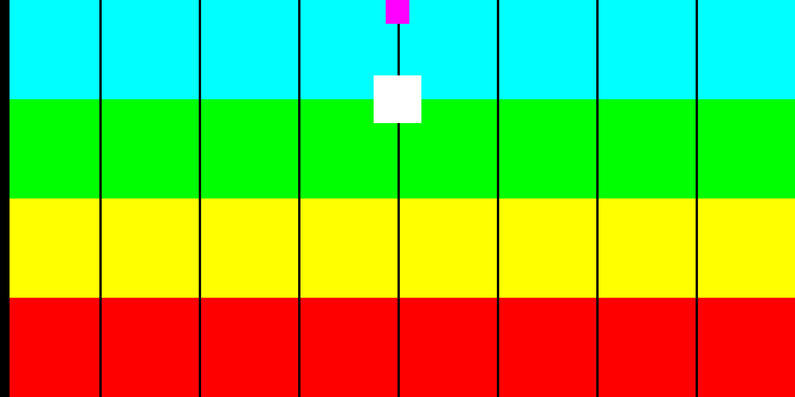
El mismo patrón convertido a domemaster muestra la convención de salida: el cénit (azul) en el centro del círculo, el frente (cuadro blanco) abajo y la costura (negro) arriba.
#4. Por qué ya no se hace con una esfera
El antecedente de este sistema, documentado en Domo_TouchDesigner/04_Docs/Material_360_y_16-9.md (otro repositorio), resolvía lo mismo con geometría: una esfera con el video pegado por dentro (Texture Coordinates = equirectangularin), una cámara en el centro, un Render TOP en modo cubemap y un Projection TOP cubemap → fisheye con FOV 180. El material plano iba sobre una malla de pantalla curva generada por un Script SOP, con una segunda esfera de fondo desenfocado.
Funcionaba, pero cada cosa costaba un render: seis caras de cubemap por cuadro para mostrar un video que ya venía equirectangular, una malla que había que teselar para que la pantalla no se rompiera en el vértice, y modos de render (fisheye180, dualparaboloid) que deforman en el vértice y dejan grietas en la costura. Además la escena 3D y el banco de pantallas convivían en la misma red con un solo Switch al final.
Aquí no hay geometría ni cámara. Todo son TOPs 2D sobre un lienzo equirectangular: un 360 ya está en ese formato, un domemaster se convierte con un Projection TOP, y el video plano se resuelve por píxel con un shader que recorre el domemaster y pregunta qué pantalla cubre cada dirección (sección 5.3). El paso intermedio entre las dos épocas, shaders/pantalla169.frag, ponía una sola pantalla plana o curva directamente sobre el lienzo equirectangular; se conserva como shader disponible pero la red ya no lo usa, porque el sistema de pantallas hace eso mismo con N pantallas, templates y editor.
#5. Los módulos de entrada
#5.1 IN_360: video 360 equirectangular
El archivo ya viene en el formato del lienzo (2:1, el frente en el centro), así que solo se ajusta al tamaño con un Fit TOP. Antes de eso pasa, si se enciende Costura, por el GLSL TOP costura con shaders/costura.frag, que funde una franja vertical alrededor de una columna del lienzo: desenfoca en horizontal con un núcleo triangular y, si hace falta, corrige un salto vertical y de brillo entre los dos lados. Sirve para la línea que deja un stitching imperfecto, esté en u = 0 o en cualquier otro azimut.
Para encontrarla: encender Costura y Costuraguia, mover Costurapos hasta que la línea roja caiga sobre la costura del video, ajustar ancho y desenfoque, y apagar la guía.
Sacar la costura de la cúpula. Fundirla no siempre alcanza, y la otra salida es no mostrarla. La costura de un 360 es la columna u = 0 del lienzo, es decir, un meridiano que va del nadir al cénit por detrás. Un corrimiento en u (el Yaw de siempre) solo la cambia de azimut: sigue subiendo hasta el cénit y en un domo de 180 grados se ve siempre, desde el borde hasta el centro del domemaster. Para sacarla hay que girar la esfera entera. Eso hace el GLSL TOP orientar (shaders/orientar.frag), justo antes de negro_y_salida: cada píxel de salida calcula su dirección, la devuelve con la rotación inversa y lee el lienzo de entrada en esa dirección. Es un remapeo equirectangular → equirectangular, no un corrimiento. Yaw gira alrededor del eje vertical, Pitch alrededor del eje izquierda-derecha (positivo lleva el frente hacia el cénit, igual que el Pitch de la página Domo) y Roll alrededor del eje del frente; el orden es Roll, luego Pitch, luego Yaw. Con los tres en cero, el Switch orientado deja pasar el lienzo sin tocarlo y el GLSL no cocina. Lee con textureLod en el nivel 0, porque con mipmaps el salto de u de 1 a 0 dejaría una línea gris de un píxel.
Medido el 18 de septiembre de 2026 con el patrón como video del 360 (Patron encendido) y Vercostura pintando la costura en rojo, contando los píxeles de costura que llegan al domemaster de 2048 × 2048:
| Orientación | Píxeles de costura en la cúpula |
|---|---|
| sin girar | 40 669 |
Yaw 90 | 40 669 (solo cambia de azimut) |
Pitch 45, Yaw 180 | 13 218 |
Pitch 60 | 6 362 |
Pitch 90 | 0 |
Roll 90, Pitch 30 | 0 |
Con Pitch 90 el frente del video sube al cénit y la costura queda entera bajo el horizonte, del horizonte de atrás al de adelante pasando por el nadir. Con Roll 90 y Pitch 30 los polos del video quedan a los lados, sobre el horizonte, y la costura cuelga por detrás, bajo la cúpula. Las dos opciones cambian lo que es "arriba" en el video; sirven sobre todo para material sin horizonte marcado (pintura, abstracto, partículas). Para una grabación con horizonte, lo que se puede hacer es llevarla lo más atrás posible con Yaw y, si hace falta, fundirla con Costura.
Subir el horizonte y meter el piso. Un domo de 180 grados muestra solo lo que está sobre el horizonte del lienzo, así que un video pintado o filmado con el motivo cruzando el horizonte se ve cortado a la mitad. orientar tiene, además del giro, un remapeo de la elevación con el cénit fijo, que se maneja con Horizonte y Curva (en la raíz, Rhorizonte y Rcurva). Horizonte es la elevación a la que queda el horizonte del video dentro de la cúpula: con 20, el horizonte sube a 20 grados y lo que había debajo se comprime entre ahí y el borde, de modo que en el borde de la cúpula se ve lo que estaba 26 grados bajo el horizonte. Negativo hace lo contrario: baja el horizonte y deja fuera la parte baja del cielo. Curva reparte esa compresión: 1 es pareja; mayor que 1 aprieta el piso contra el borde y deja el cielo más natural; menor que 1 aprieta el cielo. La fórmula, con t la distancia al cénit (0 en el cénit, 1 en el borde) y th = (90 − Horizonte) / 90, es elevación leída = 90 − 90 · (t / th)^Curva, y en el borde entran 90 · (th^−Curva − 1) grados de piso. La página 360 lo muestra en el campo de solo lectura Rpiso. El remapeo va después del giro: primero se orienta la esfera y después se comprime la elevación respecto de la cúpula, así que las dos cosas se combinan sin pisarse.
Medido el 18 de septiembre de 2026 con el patrón (la banda amarilla es la franja de 0 a 45 grados bajo el horizonte, y no debería verse sin ajuste): con Horizonte 20 aparecen 1 254 842 píxeles amarillos en el domemaster de 2048 y 899 601 en la mitad superior del lienzo que recibe Unreal; con Horizonte 20 y Curva 2 entra también la franja roja (más de 45 grados bajo el horizonte), y Rpiso marca 58,8.
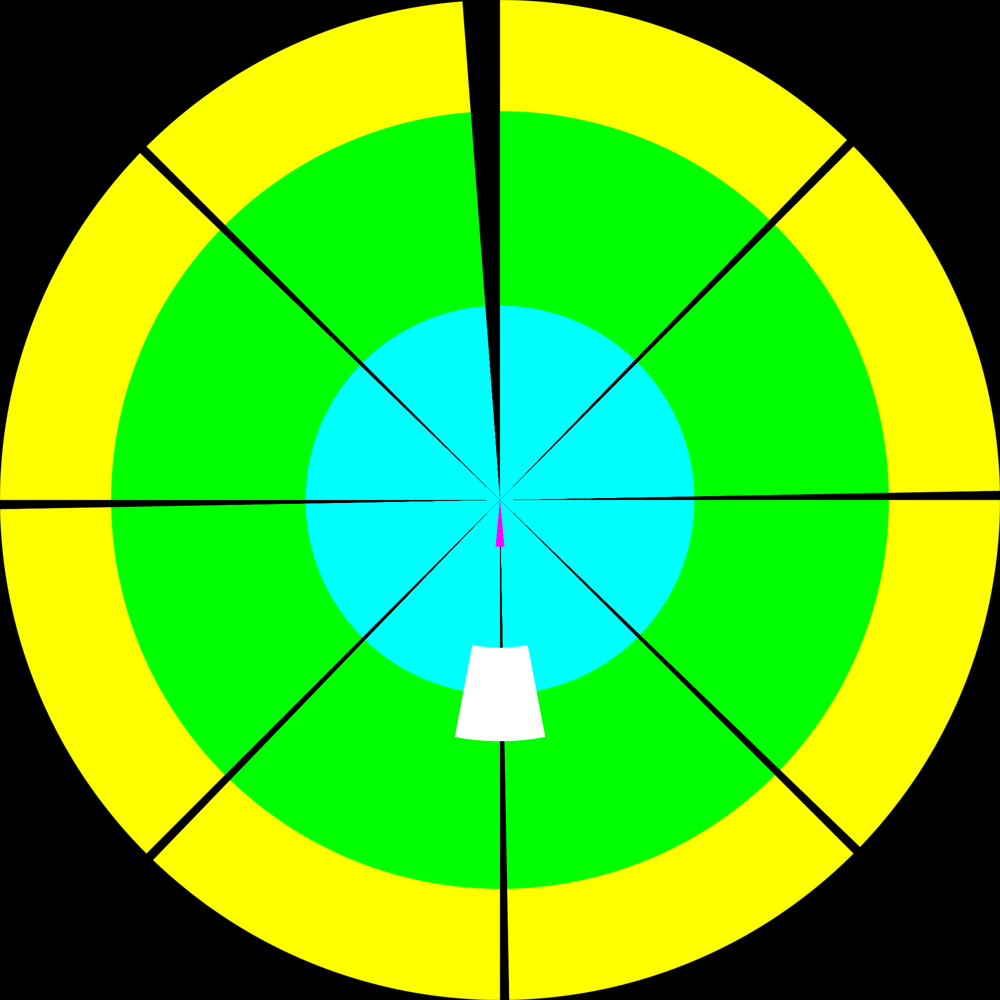
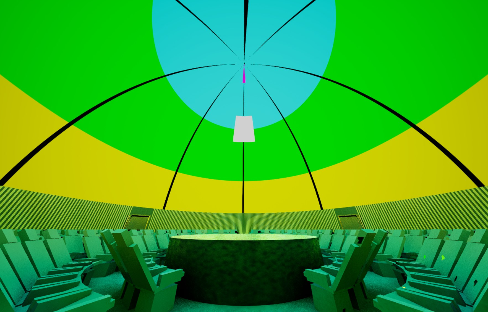
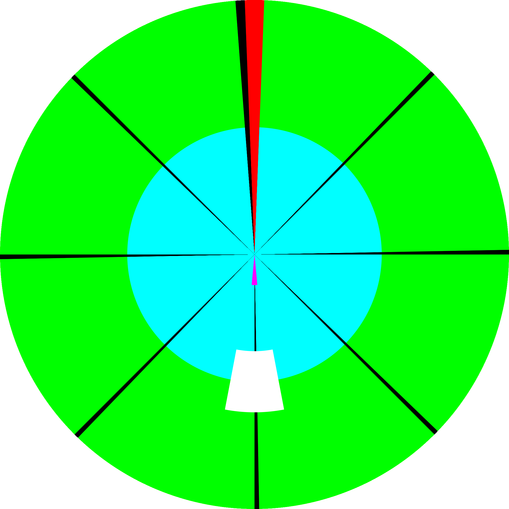
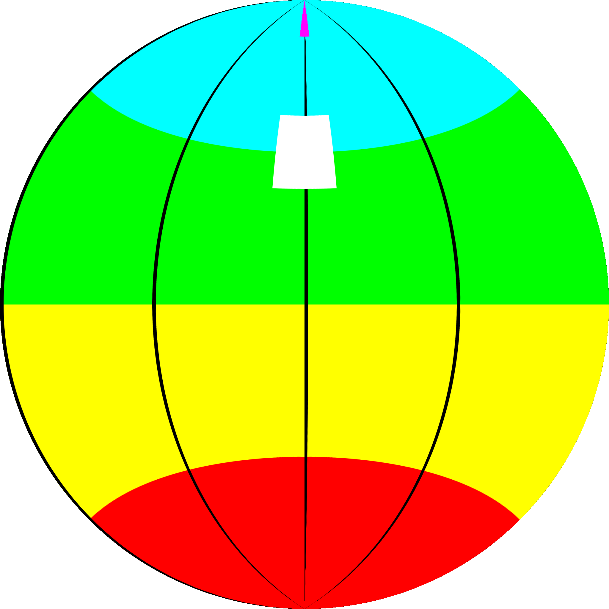
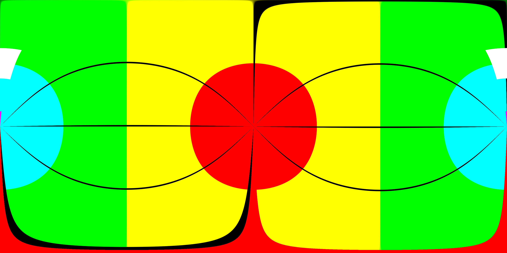
| Parámetro (página Video360) | Qué hace |
|---|---|
Activo | apagado, el módulo entrega negro y no cocina |
Archivo | archivo 360 equirectangular (2:1) |
Play, Velocidad | reproducir y velocidad (0 a 4) |
Costura | enciende el fundido de la costura |
Costurapos | posición de la costura en u (0 a 1) |
Costuraancho | ancho de la franja fundida (fracción del ancho, hasta 0.2) |
Costurablur | radio del desenfoque horizontal (hasta 0.1) |
Costuraoffsety | corrimiento vertical del lado derecho (±0.05) |
Costuraganancia | ganancia del lado derecho (0.5 a 1.5) |
Costuraguia | pinta la costura en rojo para ubicarla (dentro del fundido) |
Yaw, Pitch, Roll | página Orientacion: giro esférico del lienzo, en grados |
Horizonte, Curva | página Orientacion: altura del horizonte en la cúpula (grados, cénit fijo) y reparto de la compresión |
Patron | reemplaza el video por el patrón de prueba de DOMO, para apuntar sin video |
Vercostura | pinta de rojo la costura del archivo (Costurapos) donde cae después de girar |
Todo esto se maneja desde la página 360 de la raíz (ver la sección 6); los parámetros del módulo quedan en modo Bind contra ella.
#5.2 IN_180: domemaster o VR180
Tres formatos de archivo, elegidos con Formato:
- domemaster (fisheye 180, cuadrado): el Projection TOP
domemaster_a_equilo convierte a equirectangular confisheye → equirectangular, fov 180 yrx = -90, que deja el cénit arriba, en la mitad superior del lienzo. - vr180 (media equirectangular, cuadrado): el Fit TOP
al_centrolo centra en el lienzo con bandas negras a los lados. Ocupa el frente, del horizonte al cénit y hacia abajo; para llevarlo a la cúpula se subePitchen DOMO. - vr180sbs (VR180 lado a lado): el Crop TOP
ojo_izquierdose queda con la mitad izquierda del cuadro y sigue el camino del vr180 mono.
| Parámetro (página Video180) | Qué hace |
|---|---|
Activo | apagado, entrega negro y no cocina |
Archivo | archivo 180 (domemaster o VR180) |
Play, Velocidad | reproducir y velocidad |
Formato | domemaster, vr180, vr180sbs |
Yaw, Pitch, Roll, Horizonte, Curva | página Orientacion: el mismo giro esférico y la misma altura del horizonte que el 360, con su propio orientar |
Se maneja desde la página 180 de la raíz. Para llevar un VR180 a la cúpula, Mpitch en esa página lo inclina solo a él, mientras que el Pitch de la página Domo mueve todas las fuentes.
#5.3 IN_169: video plano sobre pantallas en la cúpula (VIDEO_DOME)
El video plano no va sobre una sola pantalla. Adentro de IN_169 se construye VIDEO_DOME, el sistema de pantallas de un proyecto anterior del autor, con su propio constructor video_dome/build_video_dome.py (recibe TEMPLATE_TARGET, VIDEO_DOME_DIR y RESET_DEFAULTS = True desde build_domo.py). Su documentación completa está en el repositorio de ese proyecto; esto es lo esencial.
El mapeo va al revés que un render. video_dome/dome_map.frag recorre los píxeles del domemaster, calcula la dirección de cada uno en la cúpula (azimut y elevación, con el frente abajo del cuadro) y pregunta qué pantalla la cubre. Sin geometría, sin cámara, sin teselado.
Las pantallas viven en una tabla. screens, una fila por pantalla, se convierte a CHOP y el shader la lee como seis arrays de vec4. Las columnas, en el orden que espera el shader (video_dome/screens_module.py, COLS): yaw pitch roll mode, hfov vfov mirror opacity, cropx cropy cropw croph, on feather tile blend, rep repspan repmir repofs, travel spin edges spare y name. Cambiar ese orden sin tocar el shader rompe el mapeo en silencio, y toda celda que no sea name tiene que ser un número.
Las formas (mode): plana (gnomónica, las rectas siguen rectas, hasta unos 100 grados de ancho), curva (ángulos iguales, para pantallas muy anchas), banda (rectángulo en azimut y elevación, la única que cierra los 360), túnel (polares alrededor del centro; el video se enrosca y tile hace anillos) y cilindro (una pared alrededor del público; la imagen se comprime sola hacia el cénit y con travel la pared se lleva hacia arriba).
Una fila puede repetirse en anillo: rep = 4 pone la misma pantalla enfrente de cada cuarto de la sala y todas se mueven como una. blend es la costura entre copias: los grados de solape, que el shader reparte entre las dos para que no quede una banda oscura. repmir espeja las copias alternas, repofs corre el recorte en cada copia (cada sector ve un pedazo distinto del cuadro) y edges decide qué bordes se degradan (los cuatro, solo los costados, o solo arriba y abajo).
Los templates viven en screens_module.py como texto plano: cine, grande, bajo, cenital (un punto de vista); sala_2, sala_4, sala_6, sala_4_espejo, sala_6_mosaico, sala_corona (anillo de seis cosido más una cenital, el que mejor funciona), sala_corona_panorama (sala llena); tres, espejo, anillo, anillo_doble, tunel, tunel_con_sala, cilindro, cilindro_doble, cilindro_con_sala, fragmentos (composición). La página Montaje los aplica con Template y el pulse Applytemplate, que pisa la tabla entera. Las versiones con nombre (video_dome/versiones/*.json: corona_cosida, planetario_tres, sala_cuatro) guardan todos los parámetros más la tabla. Los momentos (página Momentos) atan un punto de la película a un montaje y funden entre ellos mientras corre.
Se maneja desde la página 16:9 de DOMO. Lo que importa del video plano está en la raíz, al mismo nivel que los selectores de 360 y 180, y no hace falta entrar a IN_169/VIDEO_DOME para el trabajo de todos los días. La página tiene seis bloques:
| Bloque | Parámetros de DOMO | Van a |
|---|---|---|
| Fuente | Vactivo, Vfuente (archivo / ndi / spout), Vmoviefile, Vndinombre, Vspoutnombre, Vplay | IN_169.Activo y Fuente, Moviefile, Ndinombre, Spoutnombre, Play de VIDEO_DOME |
| Montaje | Vtemplate | Template |
| Domo interno | Vyawglobal, Vdpitch, Vdroll, Vdomefov, Vflipx | Yawglobal, IN_169.Pitch y IN_169.Roll, Domefov, Flipx |
| Ajuste de todo el montaje | Vgancho, Vgalto, Vgelev, Vgsep, Vgcopias, Vgsolape, Vgborde, Vgopacidad, Vgbrillo | página Ajuste de VIDEO_DOME (ver arriba) |
| Pantalla elegida | Vscreen, Vsmode (forma: plana, curva, banda, túnel, cilindro), Vsyaw, Vspitch, Vshfov, Vsautovfov, Vsvfov, Vsrep, Vsrepspan, Vsblend | Screen, Smode, Syaw, Spitch, Shfov, Sautovfov, Svfov, Srep, Srepspan, Sblend |
| Pantalla elegida: detalle | Vsrepmir, Vsrepofs, Vson, Vsroll, Vsmirror, Vsopacity, Vsbrillo, Vsfeather, Vsedges, Vstile | Srepmir, Srepofs, Son, Sroll, Smirror, Sopacity, Sbrillo (columna spare), Sfeather, Sedges, Stile |
| Recorte del cuadro | Vscropx, Vscropy, Vscropw, Vscroph | Scropx, Scropy, Scropw, Scroph |
| Animación | Vstravel, Vsspin, Vanimtravel, Vanimspin | Stravel, Sspin, Animtravel, Animspin |
| Look | Vopacity | Opacity |
| Fondo | Vbg, Vbgblur, Vbgbright, Vbgsat, Vbgzoom, Vbgtile, Vbgyaw, Vbgfollow | Bg, Bgblur, Bgbright, Bgsat, Bgzoom, Bgtile, Bgyaw, Bgfollow |
| Guías | Vguides, Vguidealpha, Vviewfov, Vviewpitch, Vviewyaw, Vviews, Vpreview | Guides, Guidealpha, Viewfov, Viewpitch, Viewyaw, Views, Preview |
El domo interno, desde afuera. VIDEO_DOME dibuja su propio domemaster, con su propia orientación, y esa vista ahora se sigue y se ajusta desde la página 16:9 sin entrar al COMP. Vyawglobal gira todo el montaje en azimut (el shader dome_map lo recibe en uView.w, y el fondo lo sigue con Vbgfollow). Vdpitch y Vdroll inclinan y ruedan el domo interno entero: dome_map no tiene inclinación propia, así que se aplican en IN_169 con el mismo orientar del 360, sobre el lienzo que sale de VIDEO_DOME y antes de domo. Vdomefov es el FOV con el que VIDEO_DOME dibuja (180 es media esfera); con Fovauto apagado y Fovcontenido en 230 en la página Mapping, subirlo a 230 hace que las pantallas bajo el horizonte también lleguen. orientar corta a negro lo que queda por debajo de 90 − Domefov/2 de elevación, porque ahí el Projection TOP estiraba el borde del círculo en rayas. Vguides pinta sobre la salida la rejilla de VIDEO_DOME: anillos de elevación, radios de azimut, el contorno de cada pantalla y los círculos de mirada del público (Vviewfov es el campo de una mirada, Vviewpitch su elevación, Vviewyaw su azimut y Vviews cuántos puntos de vista se reparten en la vuelta). Como la rejilla va dentro del domemaster de VIDEO_DOME, gira y se inclina con él: es la manera de ver dónde quedó el domo interno respecto de la sala. Probado el 18 de septiembre de 2026: con Vdpitch 20 y la rejilla encendida, el círculo del domo interno se ve inclinado en out_domo; mover Viewpitch dentro de VIDEO_DOME actualiza Vviewpitch arriba, y los valores sobreviven a una reconstrucción.
Los parámetros de abajo están en modo Bind contra los de arriba (parent.DOMO.par.Vtemplate, etc.), y el bind funciona en los dos sentidos: mover un valor en la página 16:9 lo mueve en VIDEO_DOME, y cuando VIDEO_DOME escribe sus propios parámetros (al aplicar un template o al elegir otra fila con Vscreen) la página 16:9 se pone al día sola. El watcher de VIDEO_DOME ve el cambio de Template aunque llegue por el bind, así que elegir un template en Vtemplate lo aplica de inmediato, sin el pulse Applytemplate. Hay que tenerlo presente: un template pisa la tabla screens entera, y las ediciones de pantalla que no se hayan guardado como versión se pierden.
Los parámetros de pantalla editan una sola fila, la que dice Vscreen. En un template de varias filas (por ejemplo sala_corona: la corona de seis copias y la cenital) se elige la fila y se ajustan su azimut, su elevación, su ancho, su forma, cuántas copias hace en anillo y el arco que ocupan, que es lo que controla la separación entre copias. Lo fino (recortes, espejo, opacidad, animación, momentos, versiones, el editor con el mouse, las guías) sigue en las páginas de VIDEO_DOME. La caja nota_169 en la red de DOMO resume todo esto.
Reconstruir DOMO conserva la página 16:9 y el montaje. El constructor restaura primero VIDEO_DOME, copia sus valores hacia arriba y solo entonces pone los binds, para que al enlazar no cambie nada. Como el watcher de VIDEO_DOME reacciona unos frames después de un cambio, restaurar Template alcanzaba a reaplicar el template sobre la tabla recién restaurada y se perdían las ediciones de pantalla; por eso el constructor vuelve a escribir la tabla screens con un run() diferido (15 frames) y relee la fila elegida. Probado el 18 de septiembre de 2026: una elevación editada a mano sobrevive a dos reconstrucciones seguidas, y después Vtemplate sigue aplicando templates. Las capturas 05_Preview/pruebas/td_169_sala_corona.png y td_169_anillo_doble.png son out_domo con cada template elegido desde la página 16:9 y una imagen de prueba 16:9 como archivo.
#Plantillas revisadas y ajuste en vivo (29 de septiembre de 2026)
Se renderizaron las 21 plantillas con una carta de prueba 16:9 asimétrica (rejilla, colores, "ARRIBA", "1" a la izquierda, "2" a la derecha) en un VIDEO_DOME de prueba con el mismo dome_map.frag, y se miró cada domemaster. Sirvió para encontrar tres fallas del shader y varias plantillas mal dimensionadas. La tabla final de todas las plantillas, con todos sus campos, está en video_dome/plantillas_ue.json para sincronizar el port de Unreal.
Fallas del shader, corregidas en dome_map.frag (el layout de uniforms no cambió; dome_guides.frag sigue la misma geometría):
- El cilindro desaparecía. En banda y cilindro el desplazamiento (
travel) se restaba sin dar la vuelta: conAnimtravelen 0,05, a los 20 segundos la imagen ya estaba fuera del marco y no volvía nunca. Por esocilindro,cilindro_dobleycilindro_con_salase veían vacíos o como un anillo suelto cerca del cénit. Ahora el marco se comprueba sin desplazar y la imagen corre adentro confract(); el borde suave usa la coordenada del marco, así que los bordes se quedan quietos mientras la imagen sube. - El túnel era un ojo con una costura. Las polares se armaban con
atan(x, z)yasin(y)por separado, que no miden lo mismo: a 170 grados salía una forma de ojo con puntas a los costados y un corte duro donde el ángulo salta. Ahora la distancia es angular (acos(z)), el túnel es redondo, y el ángulo va espejado (0 → 1 → 0): la imagen da la vuelta dos veces, simétrica, sin costura. - Brillo por pantalla. La columna
spare(antes reservada, siempre 0) es ahora el brillo extra de la pantalla:col.rgb *= 1 + spare. Las tablas viejas se ven igual.
Plantillas cambiadas (valores en screens_module.py):
| Plantilla | Antes | Ahora | Por qué |
|---|---|---|---|
cine | plana 70 × 39 a 45° | plana 80 × 45 a 40°, borde 0,06 | se leía como una estampilla |
grande | plana 95 × 53 a 48° | curva 120 × 68 a 42°, borde 0,08 | la plana estira las esquinas pasados ~100° |
bajo | plana 80 × 45 a 28° | plana 90 × 51 a 30°, borde 0,06 | más presencia |
cenital | plana 90 × 51 a 70° | curva 100 × 56 a 68°, borde 0,08 | más grande, sin esquinas estiradas |
sala_6 | 54 × 30, costura 6 | 58 × 33, costura 8 | quedaban cuñas negras entre copias |
sala_6_mosaico | cropx −0,01, 54 × 54 plana | cropx 0,004, recorte de alto 0,15–0,85, curva 58 × 50 | el cropx negativo daba la vuelta a 0,99 y la primera copia mostraba el borde del cuadro estirado |
sala_corona_panorama | cropx −0,012 | cropx 0,004, recorte de alto 0,1–0,9 | la misma muesca |
tres | tres planas 34 × 19 | tres bandas 70 × 30 a 40°, laterales espejadas | eran diminutas y en plana se cruzaban en V |
espejo | dos filas planas 60 × 34 | una fila banda 93 × 40 con dos copias espejadas y costura 6 | la V desaparece y la costura del frente se cose |
cilindro_doble | paredes 6–56° y 40–80° encimadas | 6–48° y 50–80° | se pisaban |
fragmentos | planas 42 × 42 | bandas 45,6 × 56 | cada tercio salía estirado 1,7 veces |
La banda aprieta el ancho por cos(elevación); para que un 16:9 conserve su aspecto en banda, el ancho es alto × 1,78 / cos(elevación). Las plantillas que ya se veían bien (sala_2, sala_4, sala_corona, anillo) no se tocaron; anillo_doble, tunel, tunel_con_sala, cilindro y cilindro_con_sala mejoran solo por el arreglo del shader. sala_6_mosaico y sala_corona_panorama siguen pensadas para material panorámico: con un 16:9 cada sexto del cuadro sale estirado, menos que antes.
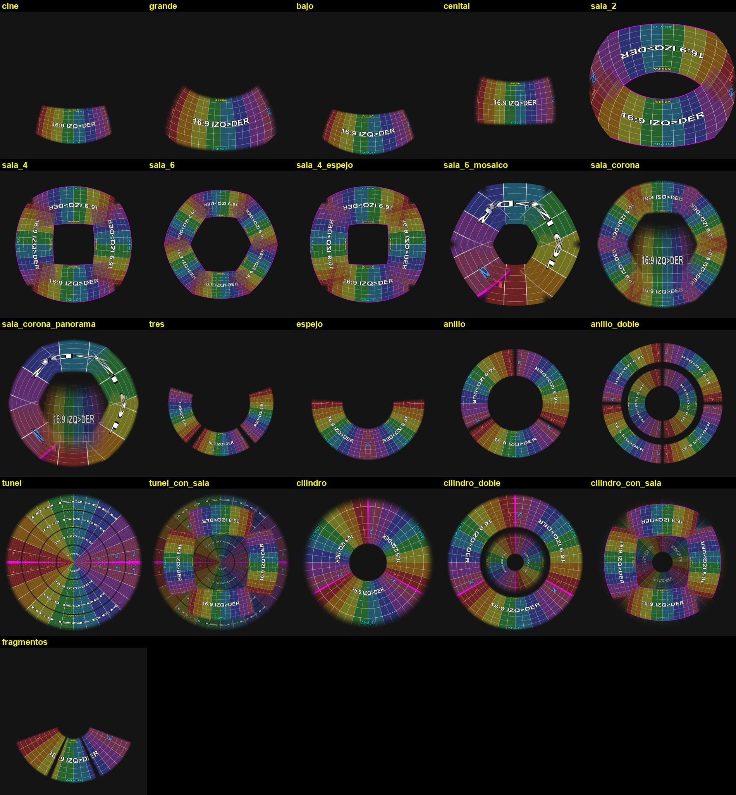
Ajuste de todo el montaje sin tocar la tabla. VIDEO_DOME tiene una página nueva, Ajuste, y un Script DAT, screens_vivo, entre la tabla screens y el DAT to CHOP. screens sigue siendo la fuente de verdad (la editan los parámetros de pantalla, los templates y las versiones); screens_vivo le aplica los factores de Ajuste antes de mandarla al shader. Con todo en su valor por defecto la tabla pasa igual, así que se puede probar en vivo otra separación o un anillo más alto y volver con un clic, y lo que ve Unreal por domo.Plantilla sigue siendo la plantilla limpia. La capa B de los momentos tiene su gemelo screens_b_vivo.
| Parámetro (Ajuste) | En DOMO | Qué hace | Rango del slider |
|---|---|---|---|
Gancho | Vgancho | multiplica el ancho de todas las pantallas (lo que ya da la vuelta, 360, no se toca) | 0,5 a 1,5 |
Galto | Vgalto | multiplica el alto | 0,5 a 1,5 |
Gelev | Vgelev | suma grados de elevación a todas (menos al túnel, que va centrado) | −25 a 25 |
Gsep | Vgsep | separación: abre el azimut de las filas sueltas (tres, fragmentos) y el arco de los abanicos | 0,5 a 1,5 |
Gcopias | Vgcopias | fuerza el número de copias de los anillos; el ancho se reparte para que el anillo siga igual de lleno, y una plana de más de 110° pasa a curva. 0 = las del template | 0 a 8 |
Gsolape | Vgsolape | grados que se suman a la costura entre copias | −8 a 16 |
Gborde | Vgborde | multiplica el borde suave | 0 a 3 |
Gopacidad | Vgopacidad | multiplica la opacidad | 0 a 1 |
Gbrillo | Vgbrillo | multiplica el brillo de todas | 0 a 2 |
Greset | (solo en VIDEO_DOME) | vuelve todo a 1 y 0 | pulso |
Además, todos los parámetros de pantalla tienen topes duros (no se puede escribir un ancho de 0 ni una opacidad de 3) y su valor por defecto es el de fábrica, así que Reset to Default vuelve a algo que funciona. En TouchDesigner los flotantes no tienen paso propio: el paso lo da el rango del slider.
video_dome/web/estudio_pantallas.html es un estudio en WebGL2, un solo archivo sin dependencias, que dibuja el domemaster con el mismo mapeo del shader: se mueven las pantallas con el mouse, se comparan montajes y se copia la tabla lista para pegar en screens. Sirve para diseñar un montaje sin abrir TouchDesigner.
La fuente. El parámetro Fuente de VIDEO_DOME (página Video, o Vfuente en la página 16:9 de DOMO) elige entre un archivo (Moviefile), una fuente NDI de la red (Ndinombre) o un sender Spout de la misma máquina (Spoutnombre). Así el video plano puede venir de otro programa, de otro equipo o de un archivo.
De vuelta al lienzo. VIDEO_DOME entrega en out_dome un domemaster con el frente ABAJO, la misma convención que domo. IN_169 lo lee con un Select TOP y lo pasa al lienzo equirectangular con la misma receta que para_unreal: Projection TOP fisheye → equirectangular con rx = -90 y el fov que diga VIDEO_DOME.Domefov, seguido de un Transform TOP con tx = -0.25 y extensión repeat para deshacer el giro de 90 grados del domemaster. Ese lienzo pasa luego por domo como cualquier otra fuente.
| Parámetro (página Video169) | Qué hace |
|---|---|
Activo | apagado, entrega negro y no cocina; en modo Bind contra DOMO.Vactivo |
Donde | solo lectura: recuerda que lo principal se edita en la página 16:9 de DOMO y el resto en IN_169/VIDEO_DOME |
Páginas de VIDEO_DOME, con sus parámetros tal como los crea build_video_dome.py (los que aparecen en la página 16:9 de DOMO quedan en modo Bind):
| Página | Parámetros |
|---|---|
| Video | Moviefile, Fuente (archivo / ndi / spout), Ndinombre, Spoutnombre, Play, Cue, Speed, Loopvideo, Audio, Volume |
| Montaje | Template, Applytemplate, Yawglobal, Domefov, Res, Flipx |
| Pantalla | Screen (la fila), Sname, Son, Smode, Syaw, Spitch, Sroll, Shfov, Svfov, Sautovfov, Smirror, Sopacity, Sfeather, Stile, Scropx, Scropy, Scropw, Scroph, Sblend, Sedges, Stravel, Sspin, Sbrillo, Srep, Srepspan, Srepmir, Srepofs; pulses Addscreen, Dupscreen, Delscreen, Readscreen |
| Ajuste | Gancho, Galto, Gelev, Gsep, Gcopias, Gsolape, Gborde, Gopacidad, Gbrillo, Greset |
| Espacio | Viewfov, Viewpitch, Viewyaw, Views, Animtravel, Animspin |
| Editor | Openeditor, Edit, Editwhat (mover / tamaño / girar), Editsnap, Editstep |
| Fondo | Bg (off / wash / wrap / custom), Bgblur, Bgbright, Bgsat, Bgzoom, Bgtile, Bgyaw, Bgfollow |
| Look | Opacity, Vignette, K1 |
| Guias | Guides, Guidealpha, Guidewidth, Guidering, Guideray, Preview |
| Versiones | Versionname, Saveversion, Version, Loadversion, Refreshversions |
| Momentos | Moments, Momentname, Momentfade, Addmoment, Moment, Gotomoment, Delmoment, Refreshmoments, Fade |
| Grabar | Recfile, Record, Recres |
El Preview de la página Guias enciende un simulador de domo que es un .tox externo (theinfranet/TouchDesigner-Fulldome-Simulator) y no viene en el repositorio; si no está, la red se construye sin él.
#5.4 AUDIO: la cadena de sonido
Por defecto (Fuente = video) el sonido sigue a la fuente al aire y solo suena el video que está en DOMO.Fuente. Hay un Audio Movie CHOP por módulo, atado a su Movie File In para que el audio vaya sincronizado con ese video aunque cambie la velocidad: de_360 (IN_360/video), de_180 (IN_180/video) y de_169, que es un Select CHOP de VIDEO_DOME/audio_gain (el Audio Movie de movie1 por Volume y Audio de VIDEO_DOME). El Switch CHOP al_aire elige uno de los tres o silencio (un Constant CHOP en cero); como un Switch solo cocina la entrada que usa, los módulos que no están al aire no decodifican audio. Da silencio con el patrón al aire, con el módulo al aire apagado (Activo) o con el 16:9 recibiendo por NDI o Spout, porque en ese caso movie1 no es lo que se ve.
Antes sonaban dos cosas a la vez: AUDIO y el audio_out propio de VIDEO_DOME, que tocaba la película del 16:9 aunque la fuente al aire fuera el patrón o el 360. El constructor ahora deja ese audio_out apagado (su active en constante False); audio_movie y audio_gain siguen vivos para alimentar a de_169. Probado el 18 de septiembre de 2026 recorriendo las cuatro fuentes: solo el CHOP del módulo al aire cocina en cada cuadro, salida solo tiene señal con el 16:9 al aire (el 360 de prueba no traía audio), y con el patrón es silencio.
La otra opción de Fuente sigue igual: un archivo aparte (Audio File In) o la entrada de audio del equipo (Audio Device In). Luego ganancia (Math CHOP), EQ paramétrico de tres bandas (100 Hz, 1 kHz, 8 kHz), retardo en milisegundos para cuadrar con la imagen y un limitador (Audio Dynamics con umbral -1 dB, sin compresor). Sale por el dispositivo de audio por defecto y por out1, que es lo que graban grabar y ndi_domo.
| Parámetro (página Audio) | Qué hace |
|---|---|
Activo | apaga la salida al dispositivo y las fuentes de archivo y entrada |
Fuente | video (sigue a la fuente al aire), archivo, entrada |
Archivo | archivo de audio |
Ganancia | 0 a 4 |
Graves, Medios, Agudos | ±12 dB en 100 Hz, 1 kHz y 8 kHz |
Retardo | 0 a 2000 ms |
Limitador | limitador de picos |
Sensibilidad | ganancia de los niveles para los visuales (4 por defecto) |
Suavizado | caída de los niveles: 0 seca, 0,95 lenta (0,85 por defecto) |
Niveles para los visuales. Tres Audio Filter CHOP (pasa bajos 160 Hz, pasa banda 1 kHz, pasa altos 4 kHz) salen de la cadena ya limitada, y el Script CHOP niveles calcula el RMS de la cadena y de cada banda, lo multiplica por Sensibilidad (las bandas altas llevan más ganancia porque su RMS es menor) y entrega cuatro canales de una muestra, nivel, graves, medios y agudos, con ataque inmediato y caída suave. IN_FX e IN_3D los leen con un Select CHOP. Lo que suena es lo que se ve: con el 360, el 180 o el 16:9 al aire es el audio de su video (medido con la película al aire: nivel 0,08, graves 0,10, medios 0,12). Con FX o 3D al aire, Fuente = video da silencio, así que para que reaccionen hay que poner Fuente en archivo (una pista) o entrada (la mezcla de la sala).
#5.5 IN_FX: visualizaciones generativas
modulos/in_fx.py y shaders/efectos.frag. Un GLSL TOP, efectos, escribe directamente el lienzo equirectangular 2:1: cada píxel calcula su dirección en la esfera y el efecto se evalúa sobre esa dirección, no sobre (u, v). Así no hay costura detrás del público ni un pellizco en el cénit, que es lo que más se mira en un domo. Se eligió equirectangular y no una salida 16:9 hacia VIDEO_DOME porque un efecto generativo no tiene cuadro, tiene espacio: pintado sobre la esfera llena la cúpula entera y pasa por la misma orientación (Yaw, Pitch, Roll, Horizonte, Curva) y el mismo domemaster que un 360. Si hiciera falta un efecto dentro de una pantalla, el TOP efectos se puede usar como fondo custom de VIDEO_DOME.
| Efecto | Qué es |
|---|---|
tunel | un tubo cuyo eje es la vertical: el público vuela hacia el cénit, con líneas de neón y niebla al fondo |
ondas | anillos que bajan del cénit y dos focos que pasean; la interferencia dibuja la figura |
estrellas | campo de estrellas en coordenadas log-polares alrededor del cénit: acercarse es correr el radio, así el vuelo no termina |
caleidoscopio | ruido fractal plegado en espejo en 4 a 12 sectores alrededor del cénit |
plasma | suma de senos sobre la dirección, clásico |
flujo | ruido deformado por ruido sobre la esfera; se lee como tinta en agua |
rejilla | techo y piso en perspectiva, estilo synthwave, con un sol al frente |
aurora | cinco cortinas que ondulan en azimut con rayos verticales y cielo estrellado |
Cadena: velocidad (Constant CHOP) → reloj (Speed CHOP, integra el tiempo: cambiar la velocidad no da un salto, y el audio lo empuja con Empuje) → efectos → lienzo (Fit TOP al ancho de DOMO) → orientar → activo → out1. audio lee AUDIO/niveles.
| Parámetro (página Efectos; en DOMO, página FX) | Qué hace | Por defecto |
|---|---|---|
Activo (Factivo) | apagado, negro y no cocina | encendido |
Efecto (Fefecto) | uno de los ocho | tunel |
Velocidad (Fvelocidad) | multiplica el reloj (0 a 3) | 1 |
Giro (Fgiro) | giro continuo en azimut, grados por segundo (±30) | 0 |
Escala (Fescala) | tamaño del patrón: más es más fino (0,25 a 3) | 1 |
Detalle (Fdetalle) | octavas del ruido, grosor de líneas, sectores del caleidoscopio (0 a 1) | 0,5 |
Intensidad (Fintensidad) | brillo del efecto (0 a 2) | 1 |
Color1, Color2 (Fcolor1, Fcolor2) | los dos colores con que se arma todo | celeste y magenta |
Reactividad (Freactividad) | cuánto pesan los niveles de audio (0 = nada) | 0,5 |
Empuje (Fempuje) | cuánto aceleran los graves el reloj | 0,5 |
Resfx (Fresfx) | resolución propia del efecto: 1024 × 512, 2048 × 1024 o 4096 × 2048 | 2048 |
Yaw, Pitch, Roll, Horizonte, Curva (Fyaw...) | página Orientacion, el mismo orientar del 360 | 0 y 1 |
Verificado el 29 de septiembre de 2026: los ocho efectos renderizados y convertidos a domemaster sin costura atrás ni pellizco en el cénit; aurora llega a Unreal por para_unreal con las cortinas en la mitad superior del lienzo.
#5.6 IN_3D: objetos 3D alrededor del público
modulos/in_3d.py. La cámara está en el centro de la sala y el Render TOP render dibuja un cubemap (seis caras, todas las direcciones); cubo_a_equi (Projection TOP cubemap → equirectangular) lo pasa al lienzo y al_frente (Transform TOP, tx = −0.25, repeat) deja el frente de la escena en u = 0.5. Esa corrección se midió con dos esferas marcadoras: el Projection TOP deja el frente de la escena (−Z) en u = 0.75 y la derecha (+X) en u = 1.0; la derecha queda un cuarto de vuelta después del frente, como en el lienzo, así que no hay espejo. Se usa cubemap y no el modo fisheye del Render TOP porque el fisheye deforma en el vértice (los polígonos grandes se rompen si no se teselan) y porque el Line MAT no funciona con fisheye.
La escena usa la convención de TouchDesigner: Y arriba, el frente de la sala en −Z, X a la derecha. Todo sale de SOPs primitivos: un toro sobre el público (centrado en el eje del cénit, a 7,5 m de altura, cabeceando), cinco anillos concéntricos que giran en sentidos opuestos, esferas en órbita y cajas en espiral hasta el cénit. Anillos, esferas y cajas se instancian desde tres Script CHOP (inst_anillos, inst_esferas, inst_cajas) con un solo archivo de callbacks, instancias_py, en numpy. Los graves inflan esferas y cajas; el nivel estira los anillos. No hay fbxCOMP ni fileinSOP: crearlos desde el MCP colgó el servidor de TouchDesigner.
| Parámetro (páginas Objetos3D y Camara; en DOMO, página 3D) | Qué hace | Por defecto |
|---|---|---|
Activo (Tactivo) | apagado, negro y no cocina | encendido |
Velocidad (Tvelocidad) | velocidad de la animación (0 a 3) | 1 |
Toro, Anillos, Esferas, Cajas, Modelo | qué grupos se dibujan | todos menos Modelo |
Ncajas, Nesferas | cantidad de instancias | 160 y 18 |
Tamano, Distancia | escala de los objetos y de sus distancias al público | 1 y 1 |
Color1, Color2 | color A (toro y anillos) y B (esferas, cajas, modelo) | celeste y rosa |
Emision | brillo propio del material (0 = solo la luz) | 0,35 |
Alambre | wireframe | apagado |
Reactividad | cuánto pesan los niveles de audio | 0,5 |
Orbitaradio, Orbitavel, Orbitaalto | la cámara orbita el centro: radio en metros, grados por segundo, altura | 1,5 m, 8°/s, 0 |
Mirarcentro | la cámara gira para mirar siempre al centro (el frente de la sala gira con ella) | apagado |
Cubo | resolución de cada cara: 512, 1024 o 2048 | 1024 |
Fondo | color de fondo | negro |
Yaw, Pitch, Roll, Horizonte, Curva | página Orientacion | 0 y 1 |
Enchufar un modelo propio. IN_3D/modelo es una geometría vacía (un Add SOP sin puntos) que ya está en la lista del render, con el material B, la escala de Tamano y un giro lento, apagada por el parámetro Modelo. Para usarla: entrar a modelo, reemplazar aqui_el_modelo por un File In SOP (.obj, .fbx, .bgeo) o arrastrar el archivo a esa red, activar display y render en ese SOP y encender Modelo (o Tmodelo en DOMO). Hacerlo a mano en la interfaz, no por MCP. Un FBX con varias piezas va mejor como un FBX COMP dentro de IN_3D, agregado al parámetro Geometry de render. El modelo se ve desde adentro: conviene ponerlo entre 5 y 15 metros del centro (ty de modelo y Distancia).
#6. Mezcla, modelo de sala y salidas
mezcla (Switch TOP) elige entre IN_360, IN_180, IN_169, patron, IN_FX e IN_3D según DOMO.Fuente (en ese orden, que es el de las entradas); equi es el lienzo común. Después viene el master (página Master, modulos/master.py): un Level TOP entre equi y giro, así que toca todas las fuentes y todas las salidas por igual (domemaster, Spout, NDI, grabación y el lienzo de Unreal). Brillo, Contraste y Gamma, y Negro, que no corta sino que funde en Fundido segundos: negro_rampa es un Speed CHOP que sube o baja a 1/Fundido por segundo entre 0 y 1, así el fundido dura exactamente eso y se puede revertir a mitad de camino. Negroactual muestra dónde va. Con todo en neutro, master_on deja pasar equi y el Level TOP no cocina. Negrounreal manda además domo.Negro al ejecutable. Verificado: con Negro encendido el máximo de out_domo es 0,0; con Brillo 0,5 la imagen baja a la mitad. De ahí:
giro(Transform TOP,tx = Yaw / 360, unidades en fracción, extensiónrepeat) aplica el Yaw como corrimiento horizontal del lienzo. Es un giro puro en azimut, independiente del orden de rotaciones del Projection TOP. Por eso el Yaw NO va en el Projection TOP.domo(GLSL TOP conshaders/domo_mapping.frag) hace el domemaster en un solo paso: el cénit al centro, el frente ABAJO del cuadro (la convención domemaster), elPitchde la página Domo (positivo inclina el contenido del frente hacia el cénit), el FOV del contenido y el mapping. Cada píxel de salida deshace el mapping, calcula su dirección con el FOV del contenido y va a buscarla al lienzo completo. El FOV del contenido es el del modelo de sala conFovautoencendido (por defecto): 180 paradomo180(media esfera, planetario) y también 180 paradomo90ydomo45, que son pantallas de media esfera inclinadas, yFovcustomparacustom; conFovautoapagado esFovcontenido. La resolución es la deRes, cuadrada. Fuera del círculo de la sala queda negro.- El mapping (página Mapping) es el ajuste que en una sala real se hace en vivo sobre el servidor del domo:
CentroxyCentroycorren el cénit,Escalaagranda o encoge la imagen yRotarla gira (positivo, en sentido antihorario). Como se aplica antes de recortar al círculo de la sala, lo que aparece en el borde al encoger o al correr el cénit es contenido del video (el piso), no negro. out_domoes el domemaster terminado y el visor del COMP.
Por qué antes no se podía ver el piso. Hasta la versión 1.2 del constructor, domo era un Projection TOP equirectangular → fisheye seguido de un Transform TOP mapping. El Projection TOP solo dibujaba los grados del FOV del contenido y dejaba negro todo lo demás, así que el mapping movía un círculo ya recortado: Escala menor que 1 encogía la imagen y dejaba un anillo negro, Centroy dejaba una media luna negra, y el piso del video no aparecía nunca. Fovcontenido tampoco hacía nada mientras Fovauto estuviera encendido, que es lo que viene por defecto. Lo único que metía algo de piso era el Pitch (de la página Domo o del 360), que inclina la esfera y por lo tanto sube el piso de un lado a costa del otro. Además, Rotar deformaba el círculo en una elipse, porque el Transform TOP no conservaba el aspecto al girar. Desde la versión 1.3 el shader domo_mapping resuelve las cuatro cosas en un solo paso, y el 360 suma Horizonte y Curva (sección 5.1), que son la forma pareja de meter el piso en toda la vuelta sin inclinar nada.
Medido el 18 de septiembre de 2026 con el patrón, contando la banda amarilla (de 0 a 45 grados bajo el horizonte) en el domemaster y en la mitad superior del lienzo de Unreal:
| Ajuste | Amarillo en el domemaster | Amarillo en Unreal | Grados de piso en el borde |
|---|---|---|---|
| nada | 0 | 0 | 0 |
Rhorizonte 20 | 1 254 842 | 899 601 | 25,7 (Rpiso) |
Rhorizonte 30, Rcurva 0,6 | 1 766 292 | 1 351 383 | 24,8 |
Escala 0,8 | 1 144 214 | 812 415 | 22,5 (Pisoborde) |
Fovauto apagado, Fovcontenido 230 | 1 231 924 | 879 786 | 25 |
Centroy 0,1 | 407 330 | 282 192 | solo adelante |
Rpitch −30 | 593 155 | 435 645 | solo adelante |
Con Escala 0,8 el negro del domemaster es el mismo que sin ajuste (el de fuera del círculo): ya no aparece un anillo. Con todo en cero, el nuevo domo y el anterior dan la misma imagen (diferencia media de 0,0006 por canal) y en para_unreal el cuadro blanco del frente cae en u 0.500, v 0.750, igual que antes.
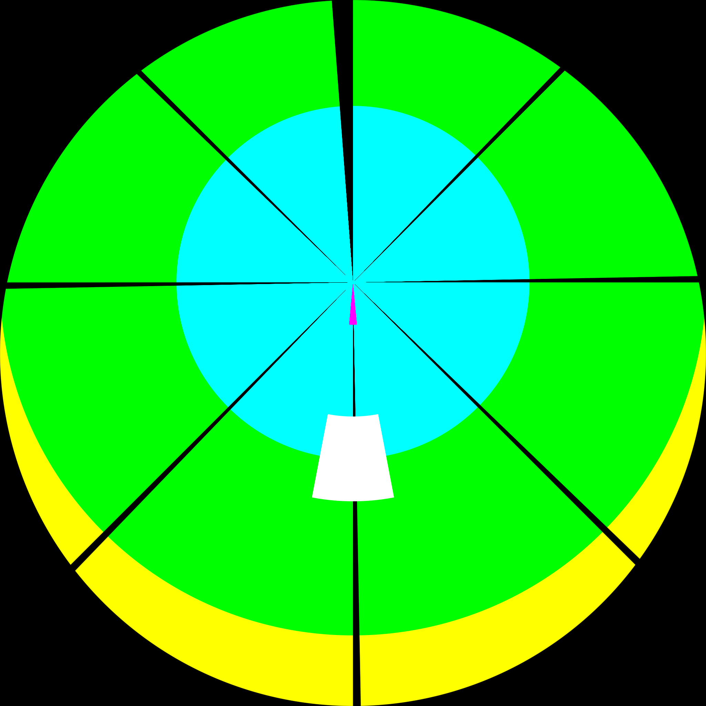
El truco del FOV. domo usa el FOV del contenido, pero la sala (y el servidor de un domo real, que solo recibe) leen el domemaster con el FOV de la sala. Con Fovauto apagado y Fovcontenido = 230, el domemaster mete 230 grados de contenido en el mismo círculo, y la cúpula de 180 muestra también lo que estaba hasta 25 grados bajo el horizonte: más espacio para lo que se creó. Es lo mismo que pasa con un servidor de domo en vivo: el domo recibe y desde TouchDesigner se mueve, se gira y se ajusta. Verificado el 18 de septiembre de 2026 con el patrón: la banda amarilla (v 0.25–0.5, bajo el horizonte) aparece sobre la línea de arranque de la cúpula.
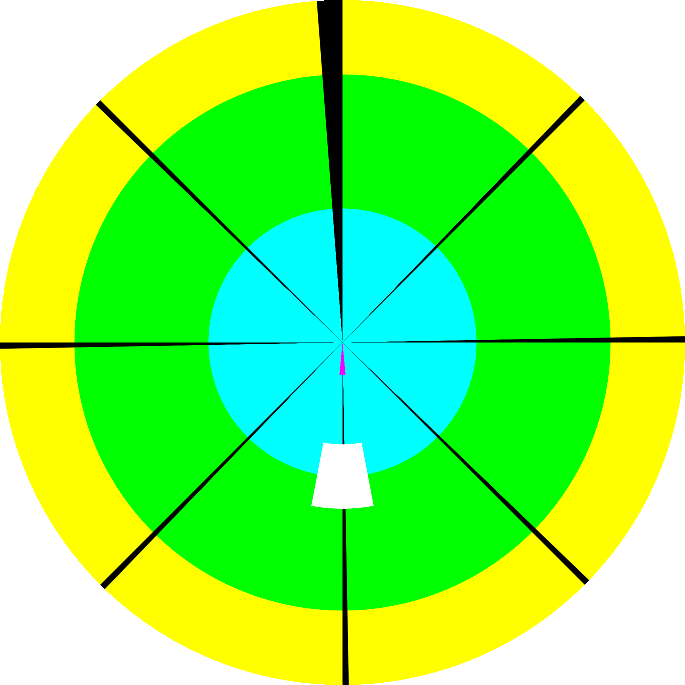
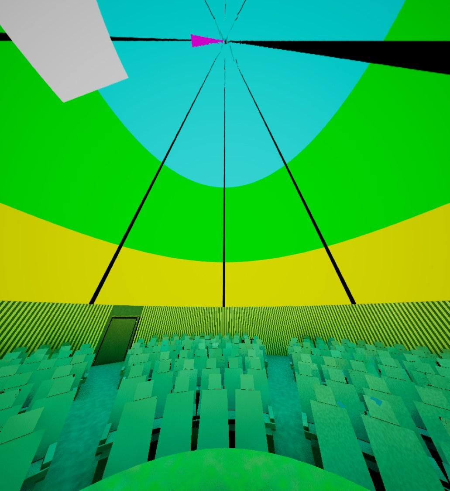
Del domemaster salen spout_domo (Syphon Spout Out), ndi_domo (NDI Out, con el audio de AUDIO/out1) y grabar (Movie File Out en HAP, con sufijo único, a Grabarcarpeta/domemaster.mov, también con el audio). Los tres están apagados por defecto salvo lo que diga la página Salidas.
La sala VR no quiere el domemaster sino el lienzo equirectangular con la cúpula en la mitad superior, ya con Yaw, Pitch, FOV y mapping aplicados. para_unreal es el mismo shader que domo en su segundo modo: cada píxel del lienzo de la sala calcula su punto en el domemaster con el FOV de la sala (no el del contenido) y sigue desde ahí el mismo camino hasta el lienzo de entrada. Así Unreal ve exactamente lo que vería el domo, y sin pasar por el domemaster intermedio de 2048, que antes se volvía a estirar a 4096 (hasta la versión 1.2 eran un Projection TOP fisheye → equirectangular con rx = -90 y el Transform giro_unreal con tx = -0.25). Después vienen alfa_unreal (Reorder TOP, alfa en uno y formato fijado a rgba8fixed, porque el receptor de Unreal solo lee 8 bits por canal; ver la sección 8) y spout_unreal, que lo manda con el nombre que lee el SpoutDomeReceiver del nivel de Unreal. Medido con el patrón: el cuadro blanco del frente cae en u 0.5, v 0.75. La mitad inferior del lienzo queda sin imagen, que es lo que corresponde a un domo de 180.
Parámetros del COMP raíz:
| Página Domo | Qué hace |
|---|---|
Fuente | v360, v180, v169, patron, fx, 3d |
Modelo | domo180 (planetario), domo90 (sala de pie con barandas, pantalla de 180 inclinada 45°), domo45 (tipo Maloka, pantalla de 180 inclinada 27°), custom; los tres primeros usan FOV 180 |
Fovcustom | FOV en grados si el modelo es custom (10 a 360) |
Yaw | girar el contenido en azimut (±180) |
Pitch | inclinar el contenido hacia el cénit (±90) |
Res | lado del domemaster: r1024 (ensayo), r2048 (tiempo real, por defecto), r4096 (grabar) |
Ancho | ancho del lienzo equirectangular (4096 por defecto; el alto es la mitad) |
Version | solo lectura, la versión del constructor (1.3, 18 sep 2026) |
| Página 360 | Van a (modo Bind en IN_360) |
|---|---|
Ractivo, Rarchivo, Rplay, Rvelocidad | Activo, Archivo, Play, Velocidad |
Ryaw, Rpitch, Rroll | Yaw, Pitch, Roll: el giro esférico del lienzo (sección 5.1) |
Rhorizonte, Rcurva | Horizonte, Curva: subir el horizonte con el cénit fijo y meter el piso (sección 5.1) |
Rpiso | solo lectura, en la raíz: grados de piso que llegan al borde de la cúpula |
Rpatron, Rvercostura, Rcosturapos, Rcostura | Patron, Vercostura, Costurapos, Costura |
| Página 180 | Van a (modo Bind en IN_180) |
|---|---|
Mactivo, Marchivo, Mplay, Mformato | Activo, Archivo, Play, Formato |
Myaw, Mpitch, Mroll | Yaw, Pitch, Roll |
Mhorizonte, Mcurva | Horizonte, Curva |
La página 16:9 está en la sección 5.3. El Yaw y el Pitch de la página Domo siguen existiendo y se aplican después, a todas las fuentes por igual.
| Página Mapping | Qué hace |
|---|---|
Fovauto | encendido por defecto: el FOV del contenido es el del modelo de sala |
Fovcontenido | FOV del contenido en grados (230 por defecto); solo cuenta con Fovauto apagado |
Centrox, Centroy | correr el cénit, en fracción del domemaster; Centroy positivo lo lleva hacia atrás y mete piso adelante |
Escala | menor que 1 mete más grados en el círculo (el piso entra parejo por el borde); mayor que 1 acerca |
Rotar | girar el domemaster en grados (positivo, antihorario) |
Pisoborde | solo lectura: grados de piso que llegan al borde con el cénit centrado |
| Página Master | Qué hace | Por defecto |
|---|---|---|
Brillo | multiplica la imagen (0 a 2, tope 4) | 1 |
Contraste | contraste (0,5 a 2) | 1 |
Gamma | gamma (0,5 a 2) | 1 |
Negro | fundido a negro | apagado |
Fundido | duración del fundido en segundos (0 a 10) | 2 |
Negrounreal | manda también domo.Negro 0/1 al ejecutable | apagado |
Negroactual | solo lectura: 0 imagen, 1 negro |
| Página Salidas | Qué hace |
|---|---|
Spoutunreal | Spout del equirectangular a la sala VR (encendido por defecto) |
Spoutunrealnombre | nombre del sender: TD_Domo_Lab |
Spoutdomo | Spout del domemaster (apagado) |
Spoutdomonombre | TD_Domemaster |
Ndi | NDI del domemaster (apagado) |
Ndinombre | TD_Domemaster |
Grabar | grabar el domemaster en HAP |
Grabarcarpeta | carpeta de grabación, 05_Media por defecto |
#7. Cómo calibrar una sala nueva con el patrón
El patrón existe para que la orientación no se discuta de memoria. Con una sala nueva, sea física o virtual:
- Poner
Fuente = patrony elegir elModeloque corresponda a la cúpula (media esfera o casquete). Si es un casquete de otro ángulo,customyFovcustom. - Mirar el domemaster en
out_domo(o en el proyector): la marca azul tiene que estar en el centro, el cuadro blanco abajo, la columna negra arriba. Si el frente de la sala no coincide con el cuadro blanco, corregir conYawhasta que quede enfrente del público; con eso la costura negra cae detrás. - Si el contenido tiene que subir o bajar (una sala en la que el público mira más alto), tocar
Pitch: positivo lleva el frente hacia el cénit. - Si aparece rojo en la cúpula, la sala está leyendo bajo el horizonte: el modelo tiene más FOV del que la cúpula cubre, o el lienzo que llega no es el de la mitad superior.
- Si la cúpula real corta la imagen o le sobra borde, ajustar
Centrox,Centroy,EscalayRotar(página Mapping) mirando el patrón, hasta que el círculo del domemaster coincida con la cúpula. Si se quiere que entre más contenido del que cubre la sala, bajarEscala, o apagarFovautoy subirFovcontenido(230 sobre 180 está verificado). Para un 360 con el motivo cruzando el horizonte, lo más limpio esRhorizonteen la página 360: el amarillo del patrón tiene que aparecer como un anillo parejo en el borde. - En la sala VR, con
Spoutunrealencendido, comprobar las tres vistas: el frente (cuadro blanco y, arriba, la marca azul del cénit), el cénit y la parte de atrás con la columna negra de la costura.
Lo que se verificó con estas capturas: en la sala VR solo se ve el verde (la cúpula lee la mitad superior del lienzo), el frente u 0.5 cae en +X, el cénit queda en el centro del domemaster y la costura del lienzo va a parar detrás.
#Un caso real: 3gracias
loop entrando acuarela test.mp4 (4096 × 2048, 24 cuadros por segundo, 18,6 segundos) es pintura a mano cuadro a cuadro en formato 360. La figura principal está al frente y ocupa del cénit hasta casi el nadir, así que sin ajuste la cúpula la corta a la cintura: es exactamente el caso que no se podía resolver antes de la versión 1.3. Con Rhorizonte 35, Rcurva 1 y Rpitch −8 (un poco de inclinación para bajar el frente) entra la figura entera; Rpiso marca 57 grados de piso en el borde. Costura queda apagada: el papel no casa en u = 0 y el fundido emborrona la figura de atrás, mientras que sin fundir queda solo una línea fina detrás del público.
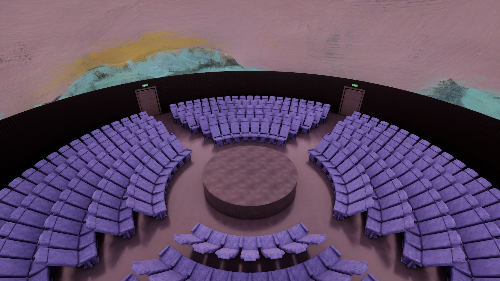
Las dos capturas de la sala VR de arriba son del 29 de septiembre de 2026 y salen del ejecutable, no de esta red (ver 02_Sala_Unreal.md, sección 14). Las de TouchDesigner son del 18 de septiembre de 2026 y usan otro video del mismo trabajo, test roto pintura.mp4, con los ajustes de David: Rhorizonte 26,1, Rcurva 0,8, Rpitch 0 (Rpiso marca 28 grados de piso en el borde). Van en el cuadro 30, fijo (playmode en specify index mientras se captura): el papel beige con la figura azul sobre la cabeza y las figuras rojas y amarillas al frente. 3gracias_domemaster.png es out_domo a 4096 (Res en r4096) y 3gracias_equirect.png es para_unreal, el lienzo que recibe Unreal, con la cúpula en la mitad superior. Una nota de composición: con estos ajustes la figura azul queda casi toda sobre la cabeza del público y las figuras del frente salen chicas; subir Rhorizonte unos grados más las agrandaría, a costa de meter más piso del video en el borde.
#8. Trampas medidas
- Yaw en el Projection TOP no es un giro en azimut. El orden de rotaciones del Projection TOP hace que
ryorzsobre un fisheye produzcan cosas distintas según lo que haya enrx. Un corrimiento horizontal del lienzo equirectangular (Transform TOP,tx = Yaw/360,repeat) es un giro puro y no depende de nada más. Por eso el Yaw vive antes dedomo, engiro. equirectangular → fisheyesin rotación mira al horizonte. Hay que ponerrx = 90para que el cénit quede en el centro, yry = 90para que el frente quede abajo. Pitch resta derx.- Reconstruir el equirectangular desde un domemaster requiere las dos operaciones inversas:
fisheye → equirectangularconrx = -90y el fov del modelo, más un corrimiento detx = -0.25para deshacer elry = 90. Sin el corrimiento el frente queda a 90 grados. La receta es la misma enpara_unrealy enIN_169. - El modelo de sala es el FOV del fisheye.
domo180es media esfera;domo90ydomo45también son pantallas de media esfera (180°), solo que inclinadas 45° y 27°; la inclinación está en la geometría de la sala, así que los tres usan FOV 180 y no hace falta tocarPitch(ver05_Modelos_de_sala.md). Concustom, lo que pase deFovcustomno entra en el círculo.para_unrealusa siempre el fov de la sala, así que la sala VR recibe exactamente lo que cubre el modelo; sidomotrabaja con más grados (Fovautoapagado), ese contenido extra entra en la cúpula por el borde. - Annotate COMP que se autodestruye. En TD 2025.32460, si el Annotate COMP se crea con nombre (
create(annotateCOMP, 'x')) o se le enciende el flagutility, desaparece unos frames después. La funcióncaja()lo crea sin nombre, lo configura y lo renombra al final. El aviso "Invalid path for node .../annotate/annotation" en subackinterno lo trae de fábrica y no afecta. - Dos TouchDesigner abiertos no pueden compartir nombre de sender. Ni de Spout ni de NDI: el segundo no publica o pisa al primero. Si hay dos instancias (por ejemplo el proyecto viejo y este), cambiar
Spoutunrealnombre,SpoutdomonombreoNdinombreen una de ellas, y ajustar el receptor de Unreal al nombre que corresponda. - El sender de la sala VR se llama
TD_Domo_Lab. ElSpoutDomeReceiverdel nivel tiene que leer ese nombre; si se cambia en la página Salidas hay que cambiarlo también en el actor (ver 03_Puente_Spout.md). - El receptor de Unreal no lee 16-bit float.
ASpoutDomeReceiversolo acepta texturas de 8 bits por canal.VIDEO_DOME, y cualquier cadena que herede de él, entrega 16-bit float; con ese formatoSpoutReceiverdevuelve falso y la cúpula se queda congelada en el último frame que pudo leer, sin aviso en pantalla (solo "no disponible todavia" cada ~5 s en el log de Unreal). Por esoalfa_unrealfija el formato argba8fixedjusto antes despout_unreal. Lo destapó unconstantrojo de 8 bits, que sí llegaba mientras la cadena completa no (medido el 17 de septiembre de 2026). - VIDEO_DOME termina en un Null, no en un Out TOP.
IN_169lo lee con un Select TOP apuntado aVIDEO_DOME/out_dome; no está cableado por conector. - VIDEO_DOME no conserva solo su montaje cuando corre
build_domo.py, porque DOMO entero se destruye antes; esbuild_domo.pyel que copia sus parámetros y sus tablas y los reescribe al final. La tablascreensse escribe dos veces: en el momento y de nuevo unos frames después, porque el watcher reaplica el template restaurado con retraso (ver 5.3). - Los Annotate COMP de VIDEO_DOME se perdían.
build_video_dome.pylos creaba con nombre y conutilityencendido, y desaparecían solos. Ahora se crean sin nombre, sinutility, y se renombran al final, como encaja(). - El mapping tiene que ir antes del recorte. Un Transform TOP detrás de un Projection TOP mueve una imagen que ya perdió todo lo que pasaba del FOV: encoger o correr el cénit muestra negro, nunca el piso. Por eso desde la versión 1.3 el mapping vive dentro del shader
domo_mapping, que lee el lienzo completo.Fovcontenidosolo cuenta conFovautoapagado. - Un TouchDesigner minimizado no atiende el MCP. Con la ventana minimizada, el servidor de ejecución del MCP deja de contestar ("exec_server unreachable: timed out") aunque el proceso esté vivo. Se arregla restaurando la ventana.
- Unreal en segundo plano no refresca la cúpula en el editor. El receptor tickea en el editor solo con el viewport en tiempo real y el editor al frente. Para capturar sin tocar el foco sirve Simulate (
StartPIEconbSimulate), que tickea el mundo;CaptureViewportconcaptureTransformfunciona igual. - La costura de un 360 no se saca con Yaw. Es un meridiano de polo a polo: en azimut solo se mueve, y siempre llega al cénit. Hace falta un giro esférico (
Rpitch,Rroll; sección 5.1). - VIDEO_DOME tenía su propia salida de audio. Su
audio_outsonaba siempre, esté o no el 16:9 al aire. Dentro de DOMO queda apagado y el único sonido sale deAUDIO/salida(sección 5.4). - Qué lado manda al reconstruir. Un parámetro en modo Bind no se guarda como constante, así que el módulo renace con su valor por defecto. Para los de VIDEO_DOME manda abajo (el constructor guarda y restaura VIDEO_DOME aparte); para los de IN_360, IN_180 e IN_169 manda la página de la raíz, y solo la primera vez se sube el valor del módulo. Los parámetros de solo lectura (
Version,Donde) ya no se restauran, para que muestren la versión del constructor que corrió. - Los slots nuevos de un GLSL TOP nacen en 1, no en 0. Al subir
veca 3,vec2valuex..wvalen 1. En el VIDEO_DOME de prueba eso metíatravel = 1y corría la pared del cilindro entera: parecía que la plantilla estaba mal. Escribir siempre los cuatro componentes. - Pulsos sin Parameter Execute. Un Parameter CHOP incluye los pulsos como un 1 de un cuadro y un CHOP Execute los recibe en
onOffToOn(probado conpar.pulse()y con un Momentary). Es lo que usa el panel Unreal, y no crea la dependencia cíclica que colgaba el MCP. scriptOp.store()dentro deonCookhace un ciclo. Guardar en el propio operador mientras cocina da "Cook dependency loop detected". El estado va en una variable del módulo de callbacks.- Un Script CHOP con entradas de audio es time slice. Para sacar una sola muestra hay que poner
scriptOp.isTimeSlice = Falseantes denumSamples. - En un parámetro del propio COMP,
op('x')no busca adentro. Una expresión en un parámetro de DOMO que mire a un hijo va conme.op('x'). - En un parámetro OP de un COMP el nombre pelado es un hermano. El material de una geometría dentro de IN_3D es
mat_a, no../mat_a: con../TD lo busca en DOMO y dibuja con el material por defecto, blanco, sin error. - El Script CHOP y el Script DAT nacen con su propio DAT de callbacks. Si se apunta
callbacksa otro, el que trae de fábrica sobra y el constructor lo borra. - Resolución. El domemaster viene en 2048 porque 4096 con todas las capas de VIDEO_DOME encendidas llena la memoria de la GPU. Subir
Ressolo para grabar.
#9. Cómo agregar un módulo nuevo
Desde la versión 1.4 lo más limpio es un archivo en modulos/ que build_domo.py ejecuta con modulo('nombre.py'), como in_fx.py e in_3d.py; el patrón es el mismo de abajo.
Un módulo es un Base COMP hijo de DOMO que entrega el lienzo equirectangular por out1. El patrón que siguen los tres existentes:
- Crear el COMP con
D.create(baseCOMP, 'IN_NUEVO'), ubicarlo connodeXynodeY(los módulos van en la columnax = -600) y darle una página personalizada con al menos el toggleActivo. Las utilidadesmenu(),flotante(),toggle()ytexto()crean parámetros con valor y valor por defecto;appendFilepara rutas. - Construir la cadena que produce el lienzo. Lo último que entregue debe estar en la convención común (
u 0.5frente,v 0.5horizonte, cúpula arriba) y a la resolución del lienzo: llamar alienzo(op)sobre el TOP que fija la resolución, que la ata por expresión aparent.DOMO.par.Ancho. Si la fuente entrega un domemaster con el frente abajo, la receta de vuelta es la de IN_169: Projection TOPfisheye → equirectangularconrx = -90y su fov, más un Transform TOP contx = -0.25yrepeat. - Cerrarlo con
negro_y_salida(comp, resultado, x): crea un Constant TOP negro a la resolución del lienzo, un Switch TOPactivogobernado porint(parent().par.Activo)y el Out TOPout1. Apagado, el módulo entrega negro y deja de cocinar. - Ponerle su
caja(comp, 'nota', titulo, cuerpo, nodos, color): el Annotate COMP que encierra los nodos y explica el módulo. Pasarle la lista de nodos que debe abarcar, incluidosnegro,activoyout1. - Conectarlo a la mezcla: una entrada más en
mezcla(wire(D.op('IN_NUEVO'), mez, n)) y una opción más en el menúFuentede la página Domo, en el mismo índice. Si el módulo trae audio de un video, sumarle un Audio Movie CHOP enAUDIO, conectarlo aal_aireen ese índice (el silencio va último) y agregar el caso a la expresión deal_aire.index. - Agregar el nuevo COMP a la lista de la caja
nota_modulosy volver a correr el constructor: la configuración de los módulos existentes se conserva sola.
#10. Panel Unreal: el ejecutable desde TouchDesigner
El ejecutable de la sala VR (ADomeMediaController) escucha en 127.0.0.1:7000 líneas de texto que empiezan con domo., las mismas que su consola. La página Unreal de DOMO las manda con un UDP Out DAT, udp_unreal, sin salir de TouchDesigner (modulos/unreal_udp.py).
No hay Parameter Execute DAT, a propósito: uno mirando los parámetros de su propio COMP colgó el MCP. unreal_pars (Parameter CHOP) lee los parámetros U*, Vtemplate y Negro, y unreal_exec (CHOP Execute) reacciona: los pulsos llegan por onOffToOn y los menús y toggles por onValueChange. Todo lo enviado queda en la tabla unreal_log (las últimas 60 líneas) y en el campo de solo lectura Uultimo. Desde Python se puede mandar cualquier línea con op('/project1/DOMO/unreal_exec').module.mandar('domo.Estado').
| Parámetro | Manda |
|---|---|
Uactivo, Uhost, Upuerto | encender el envío, IP y puerto (127.0.0.1:7000) |
Ucue + Uircue | domo.Cue N (desde 1) |
Uanterior, Usiguiente | domo.Anterior, domo.Siguiente (y mueven Ucue) |
Upausa | domo.Pausa |
Uluces | al cambiar: domo.Luces auto, domo.Luces 0, domo.Luces 1 |
Unegro | al cambiar: domo.Negro 1 o 0 |
Umodo | al cambiar: domo.Modo caminar, volar o fantasma |
Ufuente | al cambiar: domo.Fuente Spout o Media |
Uplantilla + Uenviarplantilla | domo.Plantilla id (las 21 plantillas de VIDEO_DOME) |
Useguir | cada vez que cambia Vtemplate, manda domo.Plantilla con esa plantilla |
Uabrir + Uabrirenviar | domo.Abrir ruta (ruta completa con barras normales) |
Uparam, Uvalor + Uparamenviar | domo.Param Nombre Valor (por ejemplo Resplandor 0.5) |
Ucomando + Uenviar | la línea libre; si no empieza con domo. se le agrega |
Probado el 29 de septiembre de 2026 contra un receptor UDP de prueba en el puerto 7001: llegaron domo.Siguiente, domo.Luces 0, domo.Modo volar, domo.Plantilla sala_4, domo.Param Resplandor 0.5, domo.Abrir C:/ruta/video.mp4, domo.Estado, domo.Plantilla sala_corona (por Useguir) y domo.Negro 1 (por el master con Negrounreal). No se probó contra el ejecutable abierto.
#11. Rendimiento medido
29 de septiembre de 2026, RTX 3090, TouchDesigner 2025.32460, con la salida a Unreal encendida: 60 fps (el tope de la timeline) con Res en 4096 y al aire el 16:9 (plantilla anillo), IN_FX (tunel, y también flujo y aurora con Resfx en 4096 y Detalle 1), IN_3D (Cubo 2048 y 600 cajas) o el patrón. Ninguna combinación bajó de 59,9 fps. Con la GPU compartida con Unreal abierto no se midió.
04_Docs/02_Sala_Unreal.md
La sala en Unreal
La sala VR en Unreal Engine 5.8: geometria, materiales, VR y como regenerarla
Este documento describe el proyecto 03_Unreal/DomoVR: una sala de planetario (cúpula, muro cilíndrico, 265 butacas) que se recorre en realidad virtual y cuya cúpula muestra en vivo lo que TouchDesigner envía por Spout. Aquí está la geometría, el contrato de unidades, cómo regenerar todo desde cero, los materiales, la iluminación, el post proceso y la ruta de VR. El puente con TouchDesigner tiene su propio documento: 03_Puente_Spout.md. La bitácora cronológica completa, con los callejones sin salida, está en Unreal_sala_domo.md.
#1. Qué es
Un proyecto de Unreal 5.8 con Lumen, DX12 y OpenXR que carga un solo nivel, /Game/Maps/DomoVR, con la sala entera. Toda la sala (mallas, materiales, nivel, luces, post proceso, punto de partida) se construye por script; nada se arma a mano en el editor. La lógica en tiempo de ejecución es mínima: un único actor en C++ (ASpoutDomeReceiver) que recibe la señal de Spout y la aplica a la cúpula. El resto del proyecto no tiene código propio.
#2. Dónde vive cada cosa
01_Blender/generar_sala_domo.py genera la sala en Blender y exporta FBX, glTF y texturas
02_Export/sala_domo.fbx la geometría que consume Unreal
02_Export/texturas/ mapas horneados por Blender (ya no los usa Unreal; ver sección 11)
03_Unreal/generar_texturas_pbr.py genera las texturas PBR tileables de la sala (numpy -> PNG de 512)
03_Unreal/Texturas_PBR/ esas texturas: tela, madera, alfombra, fieltro, metal cepillado, tarima, pintura, señal de salida
03_Unreal/importar_sala.py importa el FBX, crea materiales y arma el nivel
03_Unreal/realismo_sala.py materiales PBR, Nanite, detalles, post proceso y SkyLight; lo usa el importador y corre suelto
03_Unreal/conectar_spout.py coloca el receptor de Spout (ver 03_Puente_Spout.md)
03_Unreal/abrir_proyecto.ps1 abre el editor gráfico
03_Unreal/importar_sala.ps1 corre importar_sala.py sin interfaz (headless)
03_Unreal/crear_media_domo.py la version sin TouchDesigner: video en la cupula (ver 06_Unreal_standalone.md)
03_Unreal/empaquetar.ps1 empaqueta la sala como DomoVR.exe (Win64, Development)
03_Unreal/DomoVR/ el proyecto de Unreal (uproject, Config, Source, Plugins, Content)Dentro del proyecto, el contenido queda en Content/Sala/ (mallas, y las subcarpetas Materials/ y Textures/) y el nivel en Content/Maps/DomoVR.umap. Binaries/, Intermediate/, Saved/ y DerivedDataCache/ los regenera el editor y están fuera del control de versiones.
#3. Geometría y contrato de unidades
La sala es un cilindro cerrado de 11,5 m de radio con piso plano (sin grada), muro de 3 m de alto y una cúpula hemisférica que arranca a esa altura. No hay ningún volumen exterior: el puesto de control es un sector dentro del mismo cilindro. Todo se genera desde las constantes de 01_Blender/generar_sala_domo.py.
| Parámetro | Valor | Nota |
|---|---|---|
| Radio del domo y del muro | 11,5 m | escala del Planetario de Bogotá |
| Altura del ecuador de la cúpula | 3 m | el muro cilíndrico va del piso a esa altura |
| Teselado de la cúpula | 128 × 64 | segmentos de azimut × elevación (media esfera) |
| Tarima central | 3 m de diámetro × 1 m de alto | en el origen; el PlayerStart no puede caer ahí |
| Sector de control | 7 m de arco sobre el muro, desde 6,5 m de radio | lado −X, sin butacas; consola y marca en el piso |
| Butacas | 265 = 3 grupos de 73 + el de atrás de 46 | reclinadas 40° hacia atrás; espectador casi acostado. El total sale de la geometría (aforo publicado: 375); 4 pasillos de 1,3 m con ancho constante |
| Filas por grupo | 5 (4 en el de atrás); los grupos del frente y laterales van de 4,2 a 9,0 m y el de atrás de 3,6 a 7,2 m | paso radial 1,2 m; paso entre butacas 0,6 m; se calculan, no se escriben |
| Espacio hacia las salidas | de las últimas filas (a 10 m) al muro | cada pasillo llega libre a su salida |
| Cabina de control | contra el muro de atrás, detrás del grupo de atrás | partición curva de 1,3 m (la altura real del Planetario: el operador ve la cúpula por encima) concéntrica al muro y dos paneles radiales; el operador mira al muro y las pantallas quedan de espaldas a la sala |
| Puertas | 4, de 1,4 × 2,3 m | una al final de cada pasillo (salidas de emergencia), a 45°, 135°, 225° y 315° |
| Luces de muro | focos en lo alto (a 2,75 m) que alumbran hacia el piso | se apagan con la señal, ver la sección 15 |
| Listones de madera | ancho 7 cm, paso 14 cm | revestimiento vertical del muro, material M_Madera |
Mallas que trae el FBX y material que recibe cada una:
| Malla | Material | Comentario |
|---|---|---|
SM_Domo | MI_Domo (instancia de M_Domo) | normales hacia adentro; UV con U = azimut, V = elevación |
SM_Muro | MI_Muro | fieltro acústico gris oscuro |
SM_Piso | MI_Piso | alfombra de bucle gris azulada |
SM_Tarima | MI_Tarima | tablas pintadas de negro con rayones |
SM_Listones | MI_Madera | nogal barnizado, veta vertical |
SM_LucesMuro | MI_LuzMuro | franja emisiva ámbar en lo alto del muro |
SM_Butaca | MI_Butaca | una butaca (sillón acolchado con orejas, ~930 triángulos); se coloca 265 veces como actores sueltos |
SM_Puerta | MI_Puerta | una puerta; se coloca 4 veces |
SM_Consola, SM_Monitores, SM_Rack, SM_Cabina, SM_ControlPiso, SM_SillaOperador | MI_Control | la cabina de control, cada pieza con su pivote: se mueve, gira o borra sola |
Todas las MI_* son instancias de un solo material triplanar, M_SalaPBR (sección 11). En total son unos 43 000 triángulos. Desde el 18 de septiembre de 2026 todas las mallas llevan Nanite, salvo la cúpula (sección 11).
#Unidades: Blender → FBX → Unreal
Blender trabaja en metros y Unreal en centímetros. El FBX declara su unidad, y la conversión la hace el importador de Unreal: importar_sala.py fija convert_scene_unit = True en FbxStaticMeshImportData, cuyo valor de fábrica es False. Sin esa bandera la sala entraba como una maqueta de 23 cm de diámetro (el domo medía ±11,5 uu) y se veía negra porque todo quedaba dentro del plano de recorte cercano de la cámara. Se corrigió del lado de Unreal, no en el export de Blender, porque el mismo FBX también produce el .glb y cambiar la escala de origen afectaría a todos sus consumidores.
Cotas verificadas en el nivel después de la corrección (get_actor_bounds):
| Actor | Mínimo (uu) | Máximo (uu) |
|---|---|---|
Domo_Actor | (−1150, −1150, 300) | (1150, 1150, 1450) |
Muro_Actor | (−1150, −1150, 0) | (1150, 1150, 300) |
Piso_Actor | (−1150, −1150, 0) | (1150, 1150, 0) |
Tarima_Actor | (−150, −150, 0) | (150, 150, 100) |
Un detalle del importador: cuando el nodo de origen no tiene nombre único, los Static Mesh llegan con el nombre del archivo antepuesto (sala_domo_SM_Domo). El script resuelve los nombres por sufijo, así que acepta ambas formas.
#4. Cómo regenerar la sala
La cadena completa, en orden:
- Blender (sin interfaz):
blender.exe --background --python 01_Blender/generar_sala_domo.py. Borra la escena, la reconstruye desde las constantes, hornea las texturas PBR con Cycles, exporta02_Export/sala_domo.fbxy.glb, y renderiza vistas de comprobación en05_Preview/. - Importar en Unreal:
03_Unreal/importar_sala.ps1(headless, escribe03_Unreal/Saved_Logs/importar_sala.log) o, si el editor ya está abierto, pegarimportar_sala.pyen su consola de Python. Nunca las dos cosas a la vez: dos procesos de Unreal sobre el mismo.uprojectse pelean porSaved/,Intermediate/y el.umap. - Conectar Spout:
conectar_spout.py, después del anterior, porque reimportar reconstruye el nivel desde cero y borra el receptor.
importar_sala.py hace, en este orden: importa el FBX a /Game/Sala/ con combine_meshes = False (una malla por objeto); importa las texturas de 03_Unreal/Texturas_PBR/ (BaseColor como color sRGB, Roughness en escala de grises sin sRGB, Normal como TC_Normalmap sin sRGB) y crea los materiales, las dos cosas con realismo_sala.py; prende Nanite malla por malla; carga o crea el nivel y lo vacía de actores; coloca un StaticMeshActor por malla; crea el PostProcessVolume, el SkyLight_Domo y el PlayerStart; coloca los detalles (señales de salida, luces de pasillo, monitores; sección 11); guarda todo e imprime un resumen. Los mensajes salen como Warning con prefijo [importar_sala] porque en modo -run=pythonscript los Display no siempre llegan al log.
Es idempotente: cada material, textura e instancia se borra y se recrea; el nivel se conserva pero se limpia. Ningún None sigue de largo: si un asset no se crea o una malla no se coloca, el script para con una excepción que nombra el asset. Si el FBX no existe todavía, no falla: construye el resto del nivel y lo deja anotado. Las mallas se colocan con spawn_actor_from_class más set_static_mesh, no con spawn_actor_from_object: esa última depende de un viewport de editor vivo y en headless devuelve None en silencio.
#5. Materiales y por qué la cúpula ilumina la sala
La única fuente de luz de la sala es la propia cúpula. importar_sala.py quita del nivel cualquier DirectionalLight, ExponentialHeightFog o SkyAtmosphere, y arma la cadena así:
| Pieza | Configuración | Para qué |
|---|---|---|
M_Domo | shading model Unlit, two_sided, is_sky | mostrar solo su emisión; verse desde adentro sin depender de las normales; contar como cielo |
Grafo de M_Domo | UV con EspejoU → SpoutTexture (TextureSampleParameter2D) × EmissiveIntensity (escalar) → Emissive Color | la textura la sustituye Spout en vivo; la intensidad se ajusta sin recompilar; EspejoU = 1 voltea la U para que la imagen de TouchDesigner no salga espejada (sección 13) |
EmissiveIntensity | parámetro escalar de M_Domo, valor inicial 1,0 (importar_sala.py, línea 185); expuesto en MI_Domo | multiplica el frame de Spout antes del pin Emissive Color; se ajusta en vivo desde MI_Domo sin recompilar. El valor que se ve bien no está confirmado visualmente |
| Textura de arranque | /Engine/EngineResources/DefaultTexture | marcador de posición sRGB; con la grilla lineal el material no compilaba y el domo salía negro |
MI_Domo | instancia de M_Domo | es la que lleva la malla y de la que el receptor crea su instancia dinámica |
SkyLight_Domo | en (0, 0, 400), movable, real_time_capture, lower_hemisphere_is_black (solo en el 180), intensidad 2,5, cubemap de 256 | captura la cúpula cada frame y la reparte como luz sobre butacas, piso y listones |
El punto clave es is_sky más el SkyLight con captura en tiempo real. Lumen por sí solo casi no recoge la emisión de una malla enorme y delgada como la cúpula: sin esas dos piezas la sala queda negra aunque la cúpula se vea encendida. Marcada como cielo, el SkyLight_Domo la lee cada frame y con ella tiñe la sala con los colores de lo que se proyecta.
Los demás materiales son instancias de M_SalaPBR y M_SalaEmisivo; se describen en la sección 11.
#6. Post proceso
Un PostProcessVolume sin límites (Unbound), etiquetado PPV_ExposicionFija. La exposición es manual y fija: con exposición automática la cámara reaccionaría a la propia imagen proyectada y arruinaría la lectura del contenido.
| Ajuste | Valor |
|---|---|
| Método de exposición | Manual |
| Exposición física de cámara | apagada (con ella la emisión del domo quedaba hundida en negro) |
| Exposure bias | −0,8 (antes −0,5; el papel blanco de 3gracias se quemaba) |
| Brillo mínimo y máximo | 1,0 / 1,0 |
| Indirect lighting intensity | 1 (antes 8: la sala salía saturada del color del contenido) |
| Lumen: scene lighting quality, scene detail, final gather quality, reflection quality | 2 |
| Reflejos de Lumen: rebotes | 2 |
| Bloom intensity | 0,25 |
| Viñeta | 0,15 (suave) |
| Grano y aberración cromática | 0 |
La oclusión ambiental la da Lumen (su AO de corto alcance, con trazado de rayos por hardware); el SSAO clásico no se usa con Lumen. Estos valores los pone realismo_sala.ajustar_post_proceso.
En Config/DefaultEngine.ini acompañan: Lumen para GI y reflejos (r.DynamicGlobalIlluminationMethod=1, r.ReflectionMethod=1) con trazado de rayos por hardware (r.RayTracing=True, r.Lumen.HardwareRayTracing=True, r.SkinCache.CompileShaders=True), TSR como anti-aliasing (r.AntiAliasingMethod=4), la captura del SkyLight sin repartir en cuadros (r.SkyLight.RealTimeReflectionCapture.TimeSlice=0, sección 12), campos de distancia activos, exposición automática apagada por defecto, DX12 como RHI (DefaultGraphicsRHI_DX12, SM6), sin iluminación estática y con EditorStartupMap/GameDefaultMap apuntando a /Game/Maps/DomoVR.
#7. VR (OpenXR)
En Unreal 5.8 no existe un plugin aparte de SteamVR: SteamVR actúa como runtime OpenXR del sistema y el motor habla con él por el plugin OpenXR estándar. El proyecto lleva bStartInVR=True y vr.InstancedStereo=1.
- Encender el visor y conectarlo al PC con Virtual Desktop Streamer (por red).
- Arrancar SteamVR y confirmar que su runtime OpenXR es el activo del sistema.
- Abrir el proyecto y el mapa
/Game/Maps/DomoVR. - Play → VR Preview (no el Play normal en el viewport).
En cada arranque el log muestra xrCreateInstance called with invalid API version 1.1. Max supported version is 1.0, impreso por el loader de OpenXR. No impide cargar el editor; si la sesión de VR no arranca, lo primero es revisar que SteamVR esté corriendo y sea el runtime activo, antes de tocar el proyecto.
El PlayerStart_Butaca queda a 400 cm del centro hacia +X (fuera de la tarima, lado opuesto al control) y a 70 cm de altura, mirando al centro. Es una aproximación de la altura de ojo de alguien casi acostado, no un dato medido.
#8. Cómo abrir
- El proyecto tiene un módulo C++ (
Source/DomoVR/) y un plugin con código, así que la primera vez, o después de tocar código, hay que compilar con el editor cerrado:UnrealBuildTool.exe DomoVREditor Win64 Development -Project="<ruta>\DomoVR.uproject" -WaitMutex(Visual Studio 2022). Salen dos avisosC4996deRHIUpdateTexture2Den el plugin de Spout; son esperables. 03_Unreal/abrir_proyecto.ps1abre el editor (-culture=en). La primera apertura compila shaders y puede tardar varios minutos con la GPU al 100 %.- Al abrir arranca solo un servidor MCP en
http://127.0.0.1:8090/mcp(pluginsModelContextProtocolyEditorToolset, sin autenticación, solo localhost). El puerto se fija enConfig/DefaultEditorPerProjectUserSettings.iniporque el 8000 de fábrica cae en un rango que Windows reserva en esta máquina. - Unreal en segundo plano se frena a unos 3 fps. Para que siga a velocidad completa mientras se trabaja en TouchDesigner hay que apagar
bThrottleCPUWhenNotForegrounden la configuración del editor del usuario (%LOCALAPPDATA%\UnrealEngine\5.8\Saved\Config\WindowsEditor\EditorSettings.ini), que no viaja con el repositorio. El 18 de septiembre de 2026 estaba otra vez enTruey era la mitad del "bug verde" (sección 12); se volvió a poner enFalse. Si la sala del editor deja de seguir al contenido, es lo primero que hay que mirar. - La primera apertura después de encender el trazado de rayos recompila todos los shaders (globales y de materiales); queda en caché.
#9. Cómo verificar
- El editor abre directo en
/Game/Maps/DomoVRcon la sala visible (no en un nivelUntitled). - El Outliner tiene
Domo_Actor,Muro_Actor,Piso_Actor,Listones_Actor,Tarima_Actor,Control_Actor, seisButacas_XX_Actor, cuatroPuerta_XX_Actor,PPV_ExposicionFija,SkyLight_Domo,PlayerStart_Butaca,SpoutDomeReceiver,DomeMediaController(enFuente = Spout) y la carpetaDetallescon 122 actores (señales de salida, luces de pasillo, anillo de la tarima, monitores). - El viewport está en modo Lit y en Realtime (
Ctrl+R). En modo Unlit los materiales sin iluminación se dibujan como un gris plano y la cúpula parece muerta; en un viewport pausado no tickea ningún actor. - La cúpula muestra la imagen de TouchDesigner y las butacas cambian de tono con ella. Eso confirma que la luz de la sala viene del domo.
Saved/Logs/DomoVR.logsin errores deLogSpoutPlugin. Los bloquesLogAutomationTest: Error: Condition failedconUnifiedErrorTestson pruebas internas del plugin MCP, no fallos del proyecto.
#10. Pendiente de confirmar
- Rango V de la UV de la cúpula: resuelto en la práctica. Verificado el 17 de septiembre de 2026 con un patrón de bandas enviado por Spout (capturas en
05_Preview/pruebas/unreal_bandas_lateral.pngyunreal_bandas_cenit.png): la cúpula muestra solo la mitad superior del equirectangular. V = 0,5 cae en el horizonte (la línea de arranque de la cúpula sobre los listones), V = 0,75 en 45° de elevación y V = 1 en el cénit. U = 0,5 cae en +X (el frente del público, opuesto a la zona de control en −X), y los meridianos dibujados cada 45° salieron equiespaciados. Lo que sigue sin explicación es el código:crear_domo()en01_Blender/generar_sala_domo.pyescribíav = elevación / 90°y no se veía dónde se remapeaba a la mitad superior. Resuelto también en el código (misma noche):primitive_uv_sphere_addya traía una capaUVMapy el script escribía en una segunda capa (UVMap.001); Unreal leía el canal 0, la UV por defecto de la esfera (U = azimut/360 + 0,5,V = 0,5 + elevación/180). Ahora la cúpula se construye a mano con una sola capa y esa fórmula explícita, igual para los tres modelos de sala. Detalle en 05_Modelos_de_sala.md, sección 3. EmissiveIntensity: confirmado a ojo. 1,0 con la exposición de −0,8 (sección 6) deja el papel de 3gracias claro sin quemarse y la sala iluminada por la cúpula (capturas del 18 de septiembre de 2026).- El preset VR en el visor. No se midió el rendimiento con el trazado de rayos por hardware en estéreo; si el visor pierde cuadros, lo primero es
r.Lumen.HardwareRayTracing=False(Lumen vuelve a los campos de distancia) antes que tocar Nanite o los materiales. - Ancho del sector de control: cerrado. Son 7 m:
ANCHO_CONTROL = 7.0enimportar_sala.py(línea 32) y en el script de Blender. - Altura del PlayerStart (70 cm): aproximación pendiente de ajustar con las coordenadas reales de las butacas.
#11. Realismo: materiales, Nanite, trazado de rayos y detalles
Desde el 18 de septiembre de 2026. Todo sale de 03_Unreal/realismo_sala.py, que importar_sala.py llama en cada importación y que también se corre suelto sobre los tres niveles ya armados, sin reimportar ni vaciar nada (el receptor de Spout y el controlador de video quedan como estaban):
python 03_Unreal/generar_texturas_pbr.py # solo si se cambian las texturas
03_Unreal\importar_sala.ps1 -ScriptName realismo_sala.py # headless, editor cerradoTexturas. generar_texturas_pbr.py las fabrica con numpy, sin librería de materiales: ruido filtrado en el dominio de Fourier (periódico por construcción, así que cada textura es tileable), 512 × 512, tres mapas por material (color sRGB, rugosidad lineal, normal) y 3,2 MB en total en 03_Unreal/Texturas_PBR/. Es determinista (semilla fija).
| Textura | Qué imita | Escala en la sala | Dónde va |
|---|---|---|---|
| Tela | tapiz de sarga fina, pelusa, motas de uso | 0,30 m por mosaico | butacas |
| Madera | nogal barnizado, veta vertical, poros | 0,60 m | listones del 180 |
| Alfombra | bucle fino con hileras y manchas de desgaste | 0,70 m | pisos, gradas y plataformas |
| Fieltro | panel acústico forrado en tela | 0,80 m | muros |
| MetalCepillado | acero inoxidable cepillado (metálico) | 0,50 m | barandas y pasamanos, marco de la cabina |
| Tarima | tablas pintadas de negro, rayones, zonas pulidas | 1,00 m | tarima central del 180 |
| Pintura | pintura satinada con piel de naranja | 0,60 m | puertas, consola, cajas de las señales |
M_SalaPBR. Un solo material para todas las superficies, con proyección triplanar en coordenadas de mundo: la escala se da en metros por mosaico (EscalaM) y es la misma en las tres salas, sin depender de la UV que traiga cada malla de Blender (la del 180 es de horneado; las de las salas frontales no tienen una escala útil). Tres nodos Custom leen color, rugosidad y normal; la normal sale en espacio de mundo (tangent_space_normal = False): cada proyección suma su relieve sobre los ejes de mundo en los que corren su u y su v. En las caras que miran a X o a Y la v de la textura baja con la altura, así que la veta de la madera queda vertical. Una variación macro (ruido de valor 3D de 1,9 m, parámetro Macro) rompe la repetición a la distancia. El color final es textura × Tinte × 2: las texturas neutras rondan el gris medio y el color lo pone cada instancia (Tinte). Otros parámetros: RugMul, RugAdd, NormalFuerza, Metallic y Nitidez (de la mezcla triplanar).
| Instancia | Superficie | Tinte |
|---|---|---|
MI_Butaca (180) | Tela | azul profundo (0,055; 0,07; 0,15) |
MI_Butaca (45) | Tela | rojo de cine (0,16; 0,018; 0,022), algo menos saturado que el color de trabajo de Blender |
MI_Piso, MI_Grada | Alfombra | gris azulado oscuro; el piso de la 45 y la 90 toma el color del JSON |
MI_Muro | Fieltro | casi negro |
MI_Madera | Madera | la textura tal cual |
MI_Baranda | MetalCepillado | metálico 1 |
MI_Puerta, MI_Control | Pintura | gris oscuro cálido |
Las instancias del 180 viven en /Game/Sala/Materials; las de las salas frontales, en /Game/Sala/Domo_45/Materials y /Game/Sala/Domo_90/Materials. Los M_Muro, M_Piso, … de antes (Materials con los mapas horneados o con color plano) y las texturas de /Game/Sala/Textures se borran.
M_SalaEmisivo. Color × Intensidad × TexturaEmisiva en la emisión, con BaseColor y Roughness propios. De él salen MI_LedAmbar (luces de pasillo, 2), MI_LedTarima (anillo azulado del borde de la tarima, 1,2), MI_Salida (la señal verde, 1,6, con la textura SenalSalida), MI_Monitor (0,2) y MI_VidrioCabina (vidrio casi negro y pulido con un resplandor cálido de 0,035). En las salas frontales, MI_LedPaso reemplaza al M_LedPaso del JSON, con la misma intensidad que las luces del 180.
Nanite. Encendido en todas las mallas estáticas salvo SM_Domo (realismo_sala.aplicar_nanite, que el importador llama después de importar; el FBX se importa sin Nanite). La cúpula se queda sin Nanite porque su material es de cielo (is_sky) y el SkyLight la captura por la ruta clásica. Cada malla Nanite lleva fallback_relative_error = 0, para que el trazado de rayos use la malla completa (son mallas livianas). M_SalaPBR, M_SalaEmisivo, M_Domo y M_DomoMedia llevan el indicador de uso Nanite: el aviso missing usage flag Nanite de M_Muro, M_Piso, … ya no aparece (cero veces en los logs de -game de las tres salas).
Trazado de rayos. Lumen usa el trazado por hardware (RTX 3090) para GI y reflejos; el log lo confirma con Ray tracing is enabled. Los reflejos se ven sobre todo en las barandas de metal, que reflejan la cúpula.
Detalles (actores con la etiqueta domo_detalle, en la carpeta Detalles del Outliner, rehechos en cada corrida):
- Señal de salida sobre cada puerta: caja de pintura oscura de 44 × 19 cm y una cara emisiva con figura, flecha y la palabra SALIDA, a 22 cm sobre el marco, mirando hacia adentro. La cara es un plano del motor girado con
roll 90, pitch 0, yaw = dirección − 90; con esa rotación el texto se lee derecho (05_Preview/pruebas/unreal_senal_salida.png). - En el 180: un LED ámbar en el piso cada 1,2 m a lo largo del eje de cada uno de los siete pasillos entre cuñas (los dos que bordean el control llegan solo hasta su antepecho), 72 segmentos de luz azulada en el borde superior de la tarima y tres monitores tenues en la consola del control. Los ángulos de los pasillos se calculan como en el generador de Blender.
- En las salas 45 y 90: la ventana de la cabina de proyección en la pared del fondo, 2,3 m por encima de la última fila o plataforma, de 4 × 1,1 m, con marco y parteluz de metal.
Lo que no se tocó: la geometría de Blender. Las butacas siguen siendo cajas sin biselar; biselarlas en el generador sería el siguiente paso para que atrapen luz en los cantos.
#12. La luz de la sala sigue al contenido (el "bug verde")
Síntoma: con 3gracias ya en la cúpula, la sala seguía teñida de verde, el color del patrón que había antes (las capturas del 17 de septiembre). Dos causas, las dos corregidas el 18 de septiembre de 2026:
bThrottleCPUWhenNotForeground=Trueen elEditorSettings.inidel usuario: con el editor en segundo plano el mundo tickea a unos 3 cuadros por segundo, así que la recaptura del SkyLight y Lumen tardaban decenas de segundos en alcanzar al contenido. Se puso enFalse(sección 8).- El SkyLight recaptura en unos 12 cuadros repartidos (timesliced) y Lumen necesita más cuadros para asentarse.
r.SkyLight.RealTimeReflectionCapture.TimeSlice=0enDefaultEngine.inihace la recaptura entera cada cuadro, y antes de cada captura se dejan correr unos segundos (cientos de cuadros), no uno solo.
Cómo se comprobó: con TouchDesigner en el patrón (verde) se abrió la sala 180 en -game, y a los pocos segundos se pasó TouchDesigner a 3gracias. La captura tomada 19 segundos después muestra la sala con el tono del papel, sin verde: el promedio de la zona de butacas es (33; 34; 42) en 8 bits, verde sobre rojo 1,02, contra la sala claramente verde con el patrón (05_Preview/vista_general_perspectiva.png).
#13. El espejo de la U en la ruta de Spout
06_Unreal_standalone.md (sección 1) encontró que la U de la cúpula corre al revés que la de TouchDesigner, y que el patrón simétrico no lo delataba. Se comprobó en la ruta de Spout con un lienzo asimétrico (05_Preview/pruebas/marca_espejo_lienzo.png: FRENTE en u 0,5, IZQUIERDA en u 0,37, DERECHA en u 0,63, CENIT arriba) mandado desde el módulo 360 de TouchDesigner. Antes de corregir, desde el centro de la sala mirando a +X, las palabras se leían al revés e IZQUIERDA caía a la derecha (05_Preview/pruebas/unreal_espejo_antes.png). La corrección está en M_Domo, no en TouchDesigner ni en la UV de Blender: un parámetro EspejoU (1 por defecto, ESPEJO_U_INICIAL en importar_sala.py) que usa 1 − U. Después, las tres palabras se leen derechas, IZQUIERDA a la izquierda y FRENTE en +X (05_Preview/pruebas/unreal_espejo_despues.png). El frente y la costura no se mueven, así que nada de lo medido antes con el patrón cambia. MI_Domo lo comparten las tres salas.
#14. Presets VR y Render, y cómo capturar
Los valores de fábrica del proyecto (DefaultEngine.ini) son el preset VR, el liviano. El preset Render es para capturas y renders:
| CVar | VR | Render |
|---|---|---|
r.ScreenPercentage | 100 | 200 (TSR reconstruye a la salida) |
r.TSR.History.ScreenPercentage | 100 | 200 |
r.Lumen.HardwareRayTracing.LightingMode | 0 (caché de superficie) | 2 (hit lighting) |
r.Lumen.Reflections.DownsampleFactor | 2 | 1 |
r.Lumen.Reflections.MaxRoughnessToTrace | 0,4 | 0,6 |
r.Lumen.ScreenProbeGather.DownsampleFactor | 16 | 8 |
r.Lumen.ScreenProbeGather.TracingOctahedronResolution | 8 | 12 |
Se cambia con domo.Preset VR|Render en la consola, con -DomoPreset=Render en la línea de comandos o desde Blueprint (AplicarPreset, en ADomeMediaController). En el visor conviene quedarse en VR: el preset Render a 200 % no es para tiempo real en estéreo.
Las capturas de 05_Preview/renders/ y las vistas 05_Preview/vista_* (salvo las plantas cenitales, que siguen siendo de Blender) se hicieron así, sin ventana ni foco, con TouchDesigner mandando por Spout:
UnrealEditor.exe <ruta>\DomoVR.uproject /Game/Maps/DomoVR -game -RenderOffscreen -nohmd ^
-ResX=1920 -ResY=1080 -windowed -DomoFuente=Spout -DomoGuion=<guion> -abslog=<log>con un guion como:
esperar 15
domo.Preset Render
domo.Camara -800 0 700 -30 0 100
esperar 6
HighResShot 1920x1080 filename=C:/tmp/general.png
quit-DomoFuente=Spout hace falta porque fuera del editor el controlador arranca en Media (06_Unreal_standalone.md, sección 5). Las esperar después de mover la cámara son el calentamiento de Lumen y del SkyLight. Las rutas del guion y del log tienen que ser absolutas. Si el mapa se pasa desde Git Bash, hace falta MSYS_NO_PATHCONV=1: si no, /Game/Maps/DomoVR_45 llega convertido en una ruta de Windows y el juego abre el mapa por defecto. Y TouchDesigner tiene que estar a la vista (no minimizado), o no cocina y la cúpula se queda con el último cuadro que recibió.
Las capturas del 29 de septiembre de 2026 se sacaron con el ejecutable empaquetado (Build/Windows/DomoVR.exe, -RenderOffscreen -nohmd), sin TouchDesigner: el video va con domo.Abrir y, para los montajes, domo.Param Formato 4 seguido de domo.Plantilla id. El video es un tramo de diez segundos de 3gracias, sin sonido, en bucle. Las luces se apagan con domo.Luces 0 para ver la cúpula y se encienden con domo.Luces 1 para ver la sala.
| Captura | Cámara (domo.Camara X Y Z Pitch Yaw FOV) |
|---|---|
hero_butacas.jpg | 250 300 90 32 −105 95 |
sala180_cupula_general.jpg | −800 0 700 −30 0 100 |
sala180_cupula_control.jpg (hacia la cabina) | 820 0 720 −32 180 100 |
sala180_luces_general.jpg (luces encendidas) | −800 0 700 −30 0 100 |
sala180_pasillo.jpg (luces encendidas) | 100 −720 160 −3 90 100 |
sala180_cabina_por_dentro.jpg | −880 0 130 −6 180 90 |
sala180_cabina_no_se_ve.jpg | −450 0 175 2 180 95 |
sala45_general.jpg (mapa DomoVR_45) | −1500 0 1100 −25 0 100 |
sala90_general.jpg (mapa DomoVR_90, el ojo de la plataforma 3) | −93 −145 270 6 7,5 100 |
#15. Actualizar sin borrar: piezas sueltas y manifiesto
Desde el 28 de septiembre de 2026 la sala 180 no se importa como un bloque horneado sino como piezas: 01_Blender/generar_sala_domo.py escribe
02_Export/sala_domo.fbx: la estructura horneada en el mundo (SM_Domo,SM_Muro,SM_Listones,SM_LucesMuro,SM_Piso,SM_Tarima).02_Export/sala_domo_piezas.fbx: las piezas con pivote propio (unaSM_Butaca, unaSM_Puerta,SM_SillaOperadory la consola en partes:SM_Consola,SM_Monitores,SM_Rack,SM_Cabina,SM_ControlPiso). Sale de Blender en centímetros y con los ejes de Blender (Z arriba, Y adelante), porque una malla local no pasa por la conversión de ejes de la escena: sin eso llegaba de 1 cm y tumbada de lado.02_Export/sala_domo.json: el manifiesto. Dice dónde va cada pieza y cada instancia (265 butacas, 4 puertas, 2 sillas de operador), los pasillos, las luces de muro y el ojo del espectador, más unlayout_id(huella del reparto). Posiciones en metros y giro en grados en el marco de Blender; Unreal lleva la misma x, la y invertida y el giro invertido.
03_Unreal/importar_sala.py lee el manifiesto y actualiza el nivel en vez de vaciarlo (DOMO_MODO=actualizar, el modo por defecto; importar_sala.ps1 -Modo actualizar|reconstruir):
| Qué hay en el nivel | Qué hace el importador |
|---|---|
Un actor con la misma etiqueta, la misma malla y el mismo layout_id | lo conserva tal cual: posición, giro, escala y lo que hayas cambiado a mano. La malla se actualiza sola porque se reimporta sobre el mismo asset |
El mismo actor pero con otro layout_id (Blender cambió la planta) | lo rehace en la posición del manifiesto: ya no estaría donde toca |
| Un actor que falta | lo crea en la posición del manifiesto |
Actores generados (domo_generado) que el reparto ya no tiene | los retira |
| Actores del modelo viejo (butacas y consola horneadas, puertas viejas) | los retira, con sus assets |
PostProcessVolume, SkyLight, PlayerStart | solo los crea si no hay |
SpoutDomeReceiver, DomeMediaController y todo lo que el script no creó | no los toca nunca |
Detalles (domo_detalle: luces de pasillo, pantallas de los monitores, señales de salida, luces de muro) | se rehacen; las pantallas quedan ancladas a Monitores_Actor, así que siguen a la consola si la mueves |
Cada actor generado lleva la etiqueta domo_generado y vive en una carpeta del Outliner (Sala/Butacas/Cuna1, Sala/Control, Sala/Puertas...), así que se selecciona y se ajusta por grupos. Una butaca es un actor: mover una fila, girar un asiento o quitar una es tocar actores, no regenerar la sala. -Modo reconstruir vuelve al comportamiento de antes (vaciar el nivel y armarlo de cero).
Con el editor abierto no corras el importador headless (dos procesos de Unreal sobre el mismo proyecto se pelean): ciérralo, o corre el script desde dentro.
#Luces de la sala: se apagan con la señal
Las luces de la sala (focos y franja en lo alto del muro y luces de pasillo) son los actores con la etiqueta domo_luz. En una sala real solo están encendidas cuando no hay proyección, así que ADomeMediaController las sigue a la señal (bLucesAutomaticas, encendido por defecto): se apagan con un fundido de 1,5 s en cuanto el Spout entrega cuadros o el reproductor de Media está en marcha, y vuelven al perderla. Las señales de salida no llevan la etiqueta y nunca se apagan.
- Consola:
domo.Luces 0(apaga),domo.Luces 1(enciende),domo.Luces auto(vuelve a seguir la señal). Manual = deja de seguir la señal. - Blueprint / Remote Control:
SetLuces(bool),LucesAutomaticas(bool),HaySenal(); propiedadesSegundosFundidoLucesyEtiquetaLuces. ASpoutDomeReceiver::HayCuadros()dice si el sender está entregando cuadros (visto en el último segundo y medio).- Hace falta recompilar (el editor lo hace solo al abrir) y, para la versión empaquetada, volver a correr
empaquetar.ps1.
#Colisiones, inicio del jugador y velo de la cúpula (29 de septiembre de 2026)
realismo_sala.ajustar_colisiondeja con colisión (malla completa)SM_Piso,SM_Tarima,SM_Muro,SM_ControlPiso,SM_Cabina,SM_ConsolaySM_Rack, y sin colisión todo lo demás, y borra las formas simples que genera el importador de FBX (get_simple_collision_countdevuelve -1 en el commandlet: se limpia el agregado a mano).- El
PlayerStartse reubica en cada importación al pasillo 1, de pie, mirando a la tarima. Los puntos de vista (domo_vista) siguen siendo alturas de ojos. resplandor_de_la_cupulacrea el actorResplandor_Domo(ver06_Unreal_standalone.md).
04_Docs/03_Puente_Spout.md
El puente Spout
Como TouchDesigner le manda la senal a la cupula de Unreal por Spout
Cómo llega en vivo la imagen de TouchDesigner a la cúpula de la sala descrita en 02_Sala_Unreal.md: el plugin, la clase que recibe la señal, el script que la deja montada, el formato que debe mandar TouchDesigner, el crash que hubo que arreglar y cómo comprobar que la señal llega. Todo corre en el mismo equipo Windows; Spout comparte texturas por GPU, no por red. El receptor del plugin tiene dos caminos (SpoutReceiver.cpp:457-466): el principal toma la textura compartida de DirectX directamente en la GPU, y el de respaldo copia los píxeles por CPU. Cuál se usa lo decide lo que devuelva la librería de Spout en cada recepción, no una opción del proyecto.
#1. Por qué Spout y no NDI
Unreal 5.8 trae de fábrica un plugin NDIMedia de Epic, ya compilado, que no exige C++. Se evaluó primero, pero la decisión fue ir por Spout: TouchDesigner y Unreal están en la misma máquina y Spout comparte la textura directamente en la GPU, sin codificar ni pasar por la red. El costo es que un plugin con código obliga a que DomoVR tenga su propio módulo C++ (Source/DomoVR/) y a compilar antes de abrir el editor. NDI no quedó habilitado ni deja rastro; sigue disponible en el motor si algún día se prefiere la ruta sin compilar, igual que el kit comercial de Off World Live (Fab), con binarios para Spout y NDI.
#2. El plugin
| Dato | Valor |
|---|---|
| Repositorio | https://github.com/kessoning/Spout-UE5, fork del original de zuyi53 |
| Rama y commit | 5.8_fix, commit ac7f9fb ("Added 5.8 support"); no la rama main |
| Versión | 0.0.5 según CHANGELOG.md: corrige la firma de FSlateRenderer::OnBackBufferReadyToPresent que cambió en 5.8 |
| Ubicación en el repo | 03_Unreal/DomoVR/Plugins/SpoutPlugin/ (vendorizado, con ThirdParty/Spout/ y Spout.dll) |
| Requisito | RHI D3D12 (el plugin usa interoperabilidad D3D11 sobre DX12); solo Win64 |
| Licencia | el README.md dice "MIT License. See the LICENSE file", pero la rama clonada no trae archivo LICENSE |
Sobre la licencia: la única evidencia hoy es esa frase del README, no un archivo versionado. Antes de usar esto en trabajo de cliente conviene confirmarlo con el autor o revisar otra rama o tag.
El plugin vendorizado no es idéntico al del repositorio: trae el arreglo de la sección 7 en Source/SpoutPlugin/Public/SpoutModule.h, Private/SpoutModule.cpp y Private/SpoutD3DContext.cpp. Además, FindSpoutDllPath() en Private/SpoutModule.cpp busca Spout.dll también junto al .exe, que es donde queda en un build empaquetado (ver 06_Unreal_standalone.md, sección 6). Si se actualiza el plugin desde el origen hay que volver a aplicar ese cambio.
La compilación (comando de UnrealBuildTool con el editor cerrado) está en 02_Sala_Unreal.md, sección 8. Genera UnrealEditor-SpoutPlugin.dll y copia Spout.dll a Plugins/SpoutPlugin/Binaries/Win64/. Los dos avisos C4996 por RHIUpdateTexture2D (obsoleto en 5.8, todavía funcional) salen de SpoutReceiver.cpp del plugin, no de DomoVR.
#3. La clase ASpoutDomeReceiver
Vive en 03_Unreal/DomoVR/Source/DomoVR/SpoutDomeReceiver.{h,cpp} y es la única clase de juego del módulo. Se resolvió en C++ y no en Blueprint por una razón técnica, además de que nadie quería cablear nodos a mano: la función del plugin USpoutBPFunctionLibrary::SpoutReceiver recibe el material dinámico (OutMat) por referencia y solo crea uno nuevo si llega nulo. Desde Blueprint ese pin no tiene memoria entre llamadas y, sin promoverlo a variable y pasarlo de vuelta, se crea una Dynamic Material Instance nueva por frame. En C++ se guarda en un UPROPERTY() y se reutiliza. (El parámetro OptionalOutputRenderTarget sí se usa en la implementación aunque el comentario del plugin diga "reserved for future"; esta clase no lo necesita.)
Propiedades editables en el panel de detalles, sin recompilar:
| Propiedad | Valor por defecto | Qué es |
|---|---|---|
Spout Sender Name | TD_Domo_Lab (constante de conectar_spout.py, línea 60, y valor en el nivel) | nombre exacto del sender de TouchDesigner. Los nombres anteriores fueron TD_Domo_Final (un proyecto anterior del autor) y TDSyphonSpoutOut (dosis.45, sigue como valor por defecto en el código C++). Se lee en cada Tick, así que se cambia en vivo |
Target Material | MI_Domo | material del que se crea la instancia dinámica |
Texture Parameter Name | SpoutTexture | parámetro de textura de M_Domo que recibe el frame |
Target Mesh Component | el StaticMeshComponent de Domo_Actor | malla a la que se aplica el material |
Target Material Slot | 0 | ranura de material de esa malla |
Comportamiento:
Tick()llama aSpoutReceivercon el material y la textura guardados y aplica el material a la malla solo la primera vez que cambia de puntero, no cada frame. LeeSpoutSenderNameen cada Tick, así que el nombre del sender se cambia en vivo desde el panel de detalles.- Tickea también en el editor sin darle a Play: sobreescribe
ShouldTickIfViewportsOnly()para devolvertrue, que es el mecanismo real del motor para eso. - Si el sender no existe todavía (TouchDesigner cerrado), no hace nada salvo un aviso en el log cada 5 segundos como máximo.
- Si
Spout.dllno cargó, se apaga solo (SetActorTickEnabled(false)) y lo dice una vez. Ver la sección 7.
#4. conectar_spout.py
Se corre igual que importar_sala.py (headless con el editor cerrado, o pegado en la consola de Python del editor abierto), siempre después de importar_sala.py, porque la reimportación reconstruye el nivel y borra el receptor. Pasos:
- Confirma que
SpoutPlugincargó (unreal.SpoutBPFunctionLibraryexiste). - Borra el Blueprint antiguo
BP_SpoutDomoReceiversi quedaba alguno. - Asegura que
Domo_ActorlleveMI_Domoen su ranura 0. - Coloca una instancia de
ASpoutDomeReceiver(borrando las previas) conSPOUT_SENDER_NAME = "TD_Domo_Lab",MI_Domo,SpoutTexturey la malla deDomo_Actor. - Vuelve a pasar el indicador de uso Nanite sobre los materiales de la sala.
- Guarda el nivel y los assets, y genera
.mcp.json(sección 9).
#5. Lo que debe mandar TouchDesigner
| Dato | Valor |
|---|---|
| Nombre del sender | TD_Domo_Lab (actual, conectar_spout.py línea 60). Nombres anteriores: TD_Domo_Final (un proyecto anterior del autor) y TDSyphonSpoutOut (proyecto dosis.45). El receptor lee el nombre en cada Tick: se cambia en vivo desde el panel de detalles |
| Formato | equirectangular 2:1 completo, 4096 × 2048 |
| Contenido útil | la mitad superior: horizonte en V = 0,5, 45° de elevación en V = 0,75, cénit en V = 1,0; la mitad inferior no se ve en la cúpula (verificado el 17 de septiembre de 2026, ver sección 10) |
| Origen | fisheye 180 (domemaster) convertido a equirectangular con un Projection TOP, fov 180, rx = −90 |
| Girar el azimut | con rz, no con ry |
La cúpula tiene UV con U = azimut (vuelta completa) y V = elevación, así que un equirectangular se envuelve sobre ella sin corrección del lado de Unreal. Si el sender cambia de nombre, basta con editar Spout Sender Name en el actor SpoutDomeReceiver del nivel (o la constante de conectar_spout.py).
#6. Espacio de color
La textura transitoria que crea el receptor no toca la bandera SRGB, así que queda en el valor por defecto de cualquier textura nueva de Unreal: SRGB = true. Es lo correcto: TouchDesigner emite gráficos convencionales codificados en gamma sRGB (el propio README del plugin recomienda RTF RGBA8 sRGB como formato más confiable), y con esa bandera la GPU los decodifica a lineal al muestrear, que es lo que espera el pin de Emissive Color. No hay que configurar nada. Si la cúpula se ve lavada o apagada, el lugar a revisar es la cadena de TouchDesigner (formato de salida del Syphon Spout Out), no el sRGB de Unreal.
El receptor solo lee texturas de 8 bits por canal (medido el 17 de septiembre de 2026). Si TouchDesigner manda una textura de 16-bit float, que es lo que sale del sistema de pantallas VIDEO_DOME y de cualquier cadena que lo herede, SpoutReceiver devuelve falso y ASpoutDomeReceiver se queda mostrando el último frame que pudo leer, sin avisar en pantalla: solo aparece el aviso "no disponible todavia" cada unos 5 segundos en el log. El síntoma es una cúpula que parece congelada en un cuadro viejo aunque TouchDesigner muestre otra cosa. El arreglo va del lado de TouchDesigner: un Reorder TOP (o cualquier TOP) con formato rgba8fixed justo antes del Syphon Spout Out; en build_domo.py ese nodo es alfa_unreal. La prueba que lo destapó fue un constant rojo de 8 bits, que sí llegaba mientras la cadena completa no.
#7. El crash ERROR_MOD_NOT_FOUND (0xC06D007E) y su arreglo
Es un fallo del plugin original en la rama 5.8_fix, no de este proyecto.
Síntoma: el editor se cerraba solo, de forma repetible, con volcados en Saved/Crashes/ y esta pila en Saved/Logs/DomoVR.log:
Unhandled Exception: 0xc06d007e
UnrealEditor-SpoutPlugin.dll!__delayLoadHelper2() [delayhlp.cpp:346]
UnrealEditor-SpoutPlugin.dll!FSpoutD3DContext::Initialize() [SpoutD3DContext.cpp:90]
UnrealEditor-SpoutPlugin.dll!FSpoutReceiver::Receive() [SpoutReceiver.cpp:405]
UnrealEditor-DomoVR.dll!ASpoutDomeReceiver::Tick() [SpoutDomeReceiver.cpp:81]Causa: 0xC06D007E es ERROR_MOD_NOT_FOUND envuelto por el ayudante de carga diferida del CRT. El plugin declara Spout.dll como PublicDelayLoadDLLs y la copia a Plugins/SpoutPlugin/Binaries/Win64/, pero su StartupModule() solo comprobaba que el archivo existiera; nunca lo cargaba. La primera llamada a la DLL dispara la carga diferida, que busca Spout.dll por nombre pelado con el orden de búsqueda de Windows, que no incluye la carpeta del plugin. Falla como excepción estructurada, que un catch(...) no detiene, y tumba el proceso.
Arreglo, en el plugin vendorizado:
FSpoutModule::StartupModule()cargaSpout.dllexplícitamente conFPlatformProcess::GetDllHandle()desde su ruta absoluta y libera el handle enShutdownModule(). Con el módulo ya cargado bajo ese nombre, la carga diferida lo resuelve sin buscar.- Blindaje en tres capas:
FSpoutModule::IsSpoutRuntimeAvailable()queda enfalsesi la carga falla (un error en el log, una sola vez);FSpoutD3DContext::Initialize()lo comprueba antes de tocar la biblioteca; yASpoutDomeReceiver::Tick()lo comprueba antes de llamar aSpoutReceivery se apaga solo si no está. Cúpula sin señal en vez de editor caído.
Verificado: con Spout.dll renombrada, una llamada headless a spout_receiver ya no crashea (el log dice Spout.dll no esta disponible en este proceso, código de salida 0); con la DLL repuesta, el editor quedó estable con y sin TouchDesigner, sin volcados nuevos.
#8. Cómo comprobar que llega señal
- TouchDesigner abierto con el
Syphon Spout Outactivo y el nombre de sender que espera el receptor (TD_Domo_Lab). - Abrir el proyecto; el mapa
/Game/Maps/DomoVRya traeSpoutDomeReceiver. Desde el 18 de septiembre de 2026 los niveles arrancan con la fuente Media (los videos de la playlist, ver 06_Unreal_standalone.md), que apaga el receptor: ponerFuente = Spouten el actorDomeMediaControllero correrdomo.Fuente Spouten la consola. - Viewport en Realtime (
Ctrl+R) o en Play. Un viewport pausado, que es el estado al abrir el editor o al lanzarlo sin foco, no tickea ningún actor. - Viewport en modo Lit: en Unlit los materiales sin iluminación se dibujan como un gris plano uniforme, con cualquier intensidad.
- La cúpula muestra la imagen en vivo y las butacas cambian de tono con ella. Si se ve la textura de marcador de posición, revisar en
Saved/Logs/DomoVR.loglos avisos deASpoutDomeReceiver(LogTemp) yLogSpoutPlugin. Si la cúpula muestra un cuadro viejo que no cambia aunque TouchDesigner sí cambie, y el log repite "no disponible todavia" cada ~5 s, el sender está mandando 16-bit float: el receptor solo lee 8 bits por canal (sección 6). Confirmar que el TOP anterior alSyphon Spout Out(alfa_unreal) tenga formatorgba8fixed; unconstantrojo de 8 bits sirve como prueba de que el camino funciona. - Sin depender del render: por MCP,
CaptureAssetImagesobre la textura del parámetroSpoutTexturede la instancia dinámica (MID_MI_Domo_0) muestra el frame real de TouchDesigner. Así se confirmó que la señal llega al material.
#9. Control por MCP
Unreal 5.8 trae de fábrica un servidor MCP. Están habilitados ModelContextProtocol (el servidor) y EditorToolset (actores, propiedades y assets); otros toolsets (UMG, Sequencer) no se prendieron porque el proyecto no los usa.
- Escucha en
http://127.0.0.1:8090/mcp, sin autenticación, solo localhost. El puerto se fija enConfig/DefaultEditorPerProjectUserSettings.ini(bAutoStartServer=True,ServerPortNumber=8090,ServerUrlPath=/mcp). El 8000 de fábrica no liga en esta máquina porque Windows reserva el rango 7929–8028 (NAT de Hyper-V). En otra máquina puede volver a 8000 si está libre. - Arranca solo al abrir el editor. A mano, desde la consola del editor:
ModelContextProtocol.StartServer 8090yModelContextProtocol.StopServer. - La configuración del cliente la genera
ModelContextProtocol.GenerateClientConfig ClaudeCode(lo disparaconectar_spout.py) y queda en03_Unreal/DomoVR/.mcp.jsoncon la URL de arriba. - Con el editor en segundo plano, Unreal baja a unos 3 fps y el receptor tickea a esa velocidad. Se apagó
bThrottleCPUWhenNotForegrounden la configuración del editor del usuario (%LOCALAPPDATA%\UnrealEngine\5.8\Saved\Config\WindowsEditor\EditorSettings.ini), que no está en el repositorio. - Las herramientas de
EditorToolsetpiden parámetros que su esquema marca como opcionales (CaptureViewportexigecaptureTransformyannotations: []); conviene mandar el objeto completo con valores vacíos.
#10. Pendiente de confirmar
- Mitad superior del equirectangular: resuelto en la práctica. Verificado el 17 de septiembre de 2026 con un patrón de bandas enviado por Spout (capturas en
05_Preview/pruebas/unreal_bandas_lateral.pngyunreal_bandas_cenit.png): la cúpula muestra solo la mitad superior del equirectangular. V = 0,5 cae en el horizonte (la línea de arranque de la cúpula sobre los listones), V = 0,75 en 45° de elevación y V = 1 en el cénit. U = 0,5 cae en +X (el frente del público, opuesto a la zona de control en −X), y los meridianos dibujados cada 45° salieron equiespaciados. Es decir, TouchDesigner debe seguir mandando el equirectangular 2:1 completo con el horizonte en V = 0,5, tal como hace hoy. Resuelto también en el código (18 de septiembre de 2026): la cúpula se creaba conprimitive_uv_sphere_add, que ya traía una capaUVMap(canal 0) conU = azimut/360 + 0,5yV = 0,5 + elevación/180; el script de01_Blender/generar_sala_domo.pyescribía su fórmulaV = elevación / 90en una segunda capa (UVMap.001, canal 1), y Unreal muestrea el canal 0. Por eso la cúpula leía la mitad superior. Ahora la cúpula se construye a mano con una sola capa y esa misma fórmula (V = 0,5 + elevación/180) en los tres modelos de sala (180, 90 y 45), sin normalizar al casquete. Detalle en 05_Modelos_de_sala.md, sección 3. - Verificación visual final. Con datos duros quedó demostrado que el frame de Spout llega hasta la instancia dinámica de
MI_Domo. Las notas del 17 de septiembre de 2026 indican que conis_skyySkyLight_Domola sala deja de quedar negra, pero no hay captura archivada en el repositorio que lo muestre. RHIUpdateTexture2Dobsoleto en el plugin (compila en 5.8, puede romper en 5.9) y licencia sin archivoLICENSEen la rama usada.
04_Docs/05_Modelos_de_sala.md
Otros modelos de sala
Domo de 90 y 45 grados
La sala VR existe en tres variantes. Cada una tiene su FBX en 02_Export/ y su nivel en 03_Unreal/DomoVR/Content/Maps/. Las tres salen del mismo generador (01_Blender/generar_sala_domo.py) y del mismo importador (03_Unreal/importar_sala.py), y se eligen con --fov en Blender y con -Fov en el .ps1 de Unreal. La geometría de base del planetario está en 02_Sala_Unreal.md y la señal que llega a la cúpula en 04_Senal_TouchDesigner.md.
#1. Qué es cada modelo
| Modelo | Tipo de sala | Pantalla | Público | Referencia |
|---|---|---|---|---|
| 180 | planetario clásico | media esfera horizontal de 23 m | 265 butacas muy reclinadas en 4 grupos concéntricos separados por 4 pasillos, mirando al cénit | Planetario de Bogotá |
| 45 | cine domo inclinado | media esfera de 22 m inclinada 27° hacia el frente | 314 butacas reclinadas en gradería tipo estadio, mirando al frente | Cine Domo de Maloka (Bogotá), formato IMAX Dome |
| 90 | domo frontal de pie | media esfera de 20 m inclinada 45° hacia el frente | de pie, en 5 plataformas escalonadas con barandas, mirando al frente | domos de museo y de parque temático |
Los números 45 y 90 ya no son el FOV. Hasta el 18 de septiembre de 2026, --fov 45 y --fov 90 generaban casquetes horizontales (la misma sala del planetario con una cúpula recortada que cubría de 67,5° o de 45° de elevación al cénit). Desde esa fecha generan dos salas frontales rediseñadas, y los números se conservan como claves del modelo para no renombrar niveles, carpetas y archivos (DomoVR_45, /Game/Sala/Domo_90, sala_domo_45.fbx). Las dos pantallas frontales son medias esferas de 180°. Cualquier otro --fov (por ejemplo 120) sigue generando el casquete horizontal de antes.
En las tres, el frente del público es +X.
#2. Sala 45: cine domo tipo Maloka
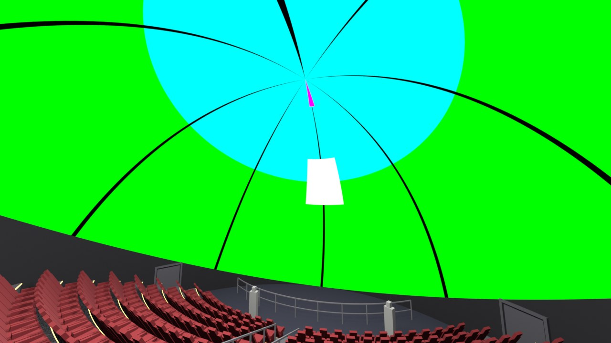
El Cine Domo de Maloka es una pantalla curva semiesférica de 180°, de 22 m de diámetro y 16 m de alto, con 314 butacas (06_Modelos/domos_colombia.json). Fue el primer teatro de formato gigante de Suramérica (tecnología Iwerks), y responde al esquema de los IMAX Dome (antes Omnimax): la cúpula no es horizontal como en un planetario, sino que está echada hacia adelante, y el público se sienta en una gradería empinada, toda mirando en la misma dirección, con la pantalla llenando el campo visual por delante y por encima.
Pantalla. Media esfera de 11 m de radio, inclinada hacia +X. El catálogo no trae la inclinación de Maloka (está en la lista de pendientes), así que se deduce de sus dos medidas: si el borde delantero de la pantalla toca el piso y lo más alto de la cúpula queda a 16 m, entonces 11 · (1 + sin θ) = 16, de donde θ = 27,0°. Es un valor típico de las salas IMAX Dome (entre 25° y 30°) y coincide con los 27° del Planetario de Medellín.
| Medida | Valor |
|---|---|
| Radio / diámetro de la pantalla | 11,00 m / 22,00 m |
| Inclinación | 27,0° hacia el frente (+X) |
| Centro de la esfera | (0, 0, 5,00 m) |
| Borde delantero de la pantalla | a nivel del piso, en x = +9,80 m |
| Borde trasero de la pantalla | a 10,00 m de altura, en x = −9,80 m |
| Punto más alto | 16,00 m |
| Planta (proyección del borde) | elipse de 19,60 m (frente-fondo) × 22,00 m |
| Butacas | 314, en 12 filas curvas con pasillo central de 1,2 m |
| Paso entre filas / contrahuella | 1,05 m / 0,42 m (grada tipo estadio) |
| Primera fila / última fila | x = +3,20 m a nivel 0 / x = −8,35 m a 4,62 m de altura |
| Butaca | 0,56 m de ancho, respaldo 0,85 m echado 30°, asiento 8° |
| Ojo de la cámara | fila 7, primera butaca a la derecha del pasillo, 1,20 m sobre el piso de la grada |
| Triángulos | 54 012 |
| Fila | x (m) | Piso (m) | Butacas |
|---|---|---|---|
| 1 | 3,20 | 0,00 | 24 |
| 2 | 2,15 | 0,42 | 26 |
| 3 | 1,10 | 0,84 | 28 |
| 4 | 0,05 | 1,26 | 30 |
| 5 | −1,00 | 1,68 | 32 |
| 6 | −2,05 | 2,10 | 32 |
| 7 | −3,10 | 2,52 | 32 |
| 8 | −4,15 | 2,94 | 30 |
| 9 | −5,20 | 3,36 | 28 |
| 10 | −6,25 | 3,78 | 26 |
| 11 | −7,30 | 4,20 | 20 |
| 12 | −8,35 | 4,62 | 6 |
Las filas son arcos con centro 16 m delante del centro del domo, así que se curvan suavemente hacia la pantalla. El número de butacas por fila no está escrito a mano: el generador llena cada arco con butacas de 0,60 m de paso hasta el muro (dejando 1 m de pasillo lateral) y agrega filas hacia atrás hasta llegar exactamente a 314. La última fila, contra la pared de fondo, queda con 6.
Además de las butacas: medio escalón por fila en el pasillo central (se sube de grada en dos pasos), pasamanos a 0,90 m a ambos lados del pasillo, una baranda de 1,05 m que separa el pasillo delantero de la pantalla, tiras LED ámbar en la nariz de cada grada y dos puertas en los costados, a la altura del pasillo delantero.
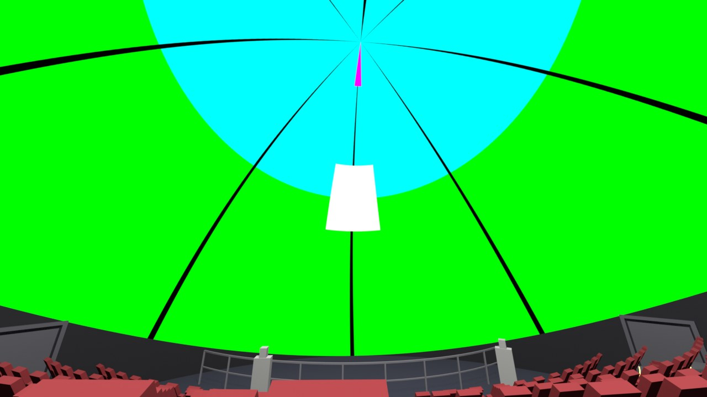
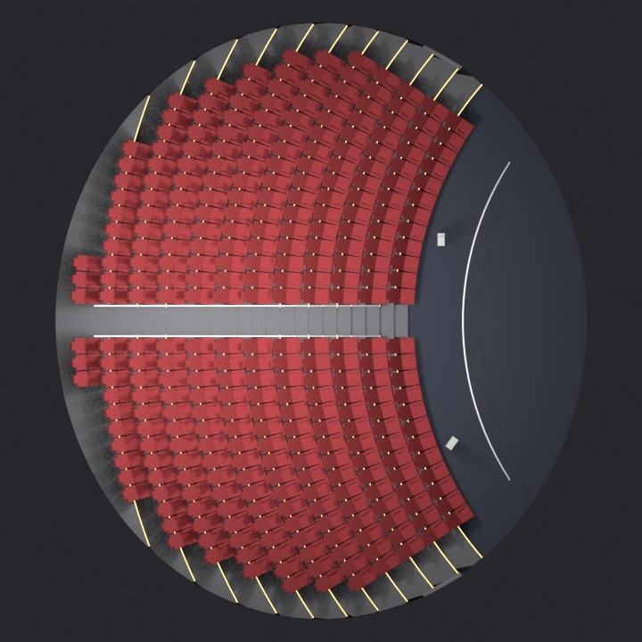
#3. Sala 90: domo frontal de pie
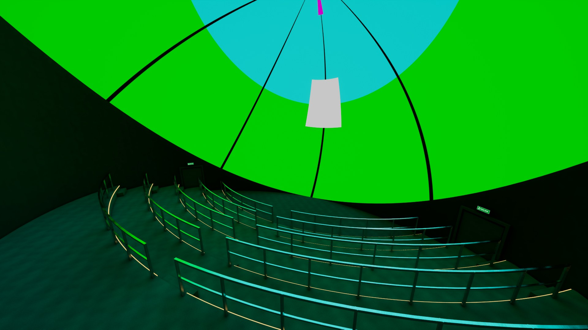
Es el esquema de los domos de museo y de parque temático en los que el público no se sienta: entra, se para frente a la pantalla y mira de frente, apoyado en una baranda. La pantalla está mucho más echada que en un cine domo (45°), de modo que su centro queda delante del público y no sobre su cabeza, y el piso se organiza en plataformas escalonadas para que las filas de atrás vean por encima de las de adelante.
| Medida | Valor |
|---|---|
| Radio / diámetro de la pantalla | 10,00 m / 20,00 m |
| Inclinación | 45° hacia el frente (+X) |
| Centro de la esfera | (0, 0, 7,07 m) |
| Borde delantero de la pantalla | a nivel del piso, en x = +7,07 m |
| Borde trasero de la pantalla | a 14,14 m de altura, en x = −7,07 m |
| Punto más alto | 17,07 m |
| Planta | elipse de 14,14 m (frente-fondo) × 20,00 m |
| Plataformas | 5, de 1,50 m de fondo (dos filas de gente de pie), contrahuella 0,45 m |
| Barandas | en el borde delantero de cada plataforma: pasamanos a 1,05 m, riel medio a 0,55 m, postes cada ~1,5 m |
| Ojo de la cámara | plataforma 3, 0,5 m detrás de su baranda, 1,60 m sobre el piso de la plataforma |
| Aforo de pie | unas 370 personas (estimado a 0,5 m² por persona, holgado) |
| Triángulos | 27 424 |
| Plataforma | Borde delantero x (m) | Piso (m) | Largo del borde (m) |
|---|---|---|---|
| 1 | 2,50 | 0,20 | 15,8 |
| 2 | 1,00 | 0,65 | 17,9 |
| 3 | −0,50 | 1,10 | 19,8 |
| 4 | −2,00 | 1,55 | 21,0 |
| 5 | −3,50 | 2,00 | 21,1 (llega hasta la pared de fondo) |
Cada baranda tiene tres aberturas: una central de 1,2 m y una contra cada muro de 0,9 m, con un medio escalón en cada una para subir de plataforma. Las tiras LED van en la nariz de cada plataforma. Delante de la primera plataforma queda una franja de piso libre, a nivel 0, a la que dan las dos puertas.
Desde el ojo de pie, el cuadro blanco del frente del patrón queda unos 20° por encima de la horizontal: la pantalla se mira de frente, sin levantar la cabeza.
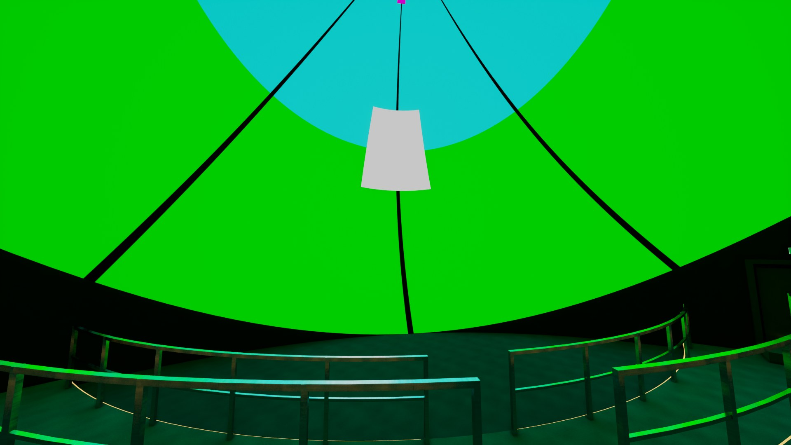
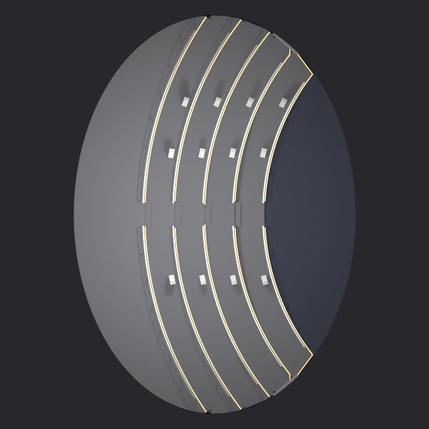
#4. Cómo se construye una sala frontal
Todo se deriva de tres números por sala (radio, inclinación y altura del borde delantero), definidos en SALAS_FRONTALES dentro del generador:
- La pantalla se construye como la media esfera del planetario, en su propio marco (polo en +Z, frente en +X) y con su UV, y después se inclina alrededor del eje Y para que el polo se eche hacia +X. El centro de la esfera queda a
z_borde_frente + radio · sin(inclinación), de modo que el punto más bajo del borde (el delantero) toca el piso. - La planta es la proyección del borde de la pantalla sobre el piso: una elipse de semiejes
radio · cos(inclinación)en X yradioen Y. - El muro (
SM_Muro) baja vertical desde cada punto del borde hasta el piso. Comparte los 128 vértices del borde con la pantalla, así que la sala cierra sin rendijas. En el frente mide casi cero; atrás es la pared alta donde iría la cabina de proyección (10 m en la sala 45, 14 m en la 90). - Gradas y plataformas son franjas en arco, con centro de curvatura delante de la pantalla, recortadas contra la elipse. Son sólidos cerrados desde el piso, así que no quedan huecos debajo.
Mallas del FBX (todas con nombres SM_*, una capa UV):
| Malla | Sala 45 | Sala 90 | Material |
|---|---|---|---|
SM_Domo | sí | sí | MI_Domo (compartido, el que alimenta Spout) |
SM_Muro, SM_Piso | sí | sí | M_Muro, M_Piso |
SM_Graderia / SM_Plataformas | gradería | plataformas | M_Grada |
SM_Butacas_01, SM_Butacas_02 | a cada lado del pasillo | no | M_Butaca |
SM_Barandas | pasamanos y baranda frontal | barandas de plataforma | M_Baranda |
SM_LucesPaso | sí | sí | M_LedPaso (emisivo) |
SM_Puerta_01, SM_Puerta_02 | sí | sí | M_Puerta |
Los materiales que escribe el JSON son colores de trabajo: piso oscuro azulado, grada gris medio, barandas de metal claro, butacas rojo tela, muro casi negro (como la pared de un domo real, que no debe reflejar la proyección) y LED ámbar emisivo. En Unreal, desde el 18 de septiembre de 2026, cada uno se vuelve una instancia del material triplanar M_SalaPBR con textura propia (alfombra en piso y grada, fieltro en el muro, metal cepillado en las barandas, tela en las butacas, pintura en las puertas) y ese color como tinte (02_Sala_Unreal.md, sección 11). Las dos salas llevan además una señal de salida sobre cada puerta y la ventana de la cabina de proyección en la pared del fondo.
En los renders aparecen también unos maniquíes de 1,75 m (objeto REF_Personas) para leer la escala. Están en el .blend pero no se exportan al FBX.
El generador escribe junto al FBX un JSON (02_Export/sala_domo_45.json, sala_domo_90.json) con las medidas de la pantalla, la lista de mallas, el material de cada una, los colores, la posición del ojo, la tabla de filas o plataformas y el resultado de la verificación del FBX. El importador de Unreal arma el nivel a partir de ese archivo.
#5. La UV de la cúpula
TouchDesigner manda por Spout (TD_Domo_Lab) un lienzo equirectangular 2:1 con la cúpula en la mitad superior: u = 0,5 es el frente, u = 0/1 la parte de atrás, v = 0,5 el horizonte y v = 1 el cénit. La cúpula de los tres modelos lleva una sola capa UV (canal 0) con esta fórmula, escrita a mano en uv_equirectangular():
U = azimut / 360 + 0,5 (módulo 1; costura detrás, en −X)
V = 0,5 + elevación / 180 (elevación desde el centro de la esfera)En el domo 180 la elevación se mide desde el horizonte real. En las salas frontales se mide en el marco propio de la pantalla: la UV se escribe antes de inclinarla y viaja con la malla. El "horizonte" de la UV (v = 0,5) es el borde de la pantalla y el "cénit" (v = 1) es su polo, que en la sala 45 está 27° delante de la vertical y en la 90, 45°. Es exactamente lo que recibe un domo inclinado real: un domemaster de 180° con el cénit en el polo de la pantalla y el frente abajo. El frente (u = 0,5) sigue en +X.
Con el patrón de prueba de TouchDesigner (verde v 0,5–0,75, cian v 0,75–1, cuadro blanco en u 0,5, v 0,75, marca magenta cerca del cénit, meridianos negros cada 45°), los renders muestran en las dos salas frontales el verde abajo y a los lados, el cian arriba, centrado en el polo de la pantalla, y el cuadro blanco al frente: a 18° sobre la horizontal en la sala 45 y a la altura del centro de la esfera (7 m) en la 90. No aparece rojo ni amarillo.
verificar_export_frontal() relee el FBX exportado y comprueba, en cada corrida: una sola capa UV, V de 0,500 a 1,000, el borde delantero (u 0,5, v 0,5) en +X y a nivel del piso, y el cuadro blanco (u 0,5, v 0,75) en +X. Si algo falla, el script termina con error. Última medición:
| Sala 45 | Sala 90 | |
|---|---|---|
| Capas UV | UVMap (una) | UVMap (una) |
| V del canal 0 | 0,500 a 1,000 | 0,500 a 1,000 |
Borde delantero u 0,5 v 0,5 | (9,79; 0; 0,00) m | (7,07; 0; 0,01) m |
Cuadro blanco u 0,5 v 0,75 | (10,46; 0; 8,39) m | (9,99; 0; 7,08) m |
La historia de esta fórmula: hasta el 17 de septiembre de 2026 el generador escribía V = elevación / 90 en una segunda capa (UVMap.001) que Unreal no leía; Unreal muestreaba la capa por defecto de primitive_uv_sphere_add, que resultó ser exactamente la fórmula de arriba. Desde entonces la cúpula se construye a mano con bmesh, con una sola capa y la fórmula explícita. La cúpula del domo 180 que genera el código de hoy es idéntica, vértice a vértice y UV a UV, a la de sala_domo.blend.
En TouchDesigner, las dos salas frontales se alimentan con Modelo = domo180: la pantalla es de 180° y la inclinación ya está en la geometría, así que no hace falta Pitch. Las opciones domo45 y domo90 del COMP DOMO siguen existiendo, pero describen los casquetes de antes (fisheye de 45° y 90°) y no corresponden a estas salas.
#6. Cómo regenerar
Blender, sin interfaz (C:\Program Files\Blender Foundation\Blender 5.2\blender.exe):
blender.exe -b -P 01_Blender\generar_sala_domo.py # domo 180, hornea texturas (~10 min)
blender.exe -b -P 01_Blender\generar_sala_domo.py -- --fov 45 # sala 45 (~20 s)
blender.exe -b -P 01_Blender\generar_sala_domo.py -- --fov 90 # sala 90 (~20 s)Cada corrida de una sala frontal deja el .blend, el FBX, el GLB, el JSON y tres renders: vista_planta_cenital_N.png, vista_general_perspectiva_N.png y vista_desde_butaca_45.png o vista_de_pie_90.png. La cúpula de los renders lleva el patrón de prueba (una imagen generada en el script con las mismas reglas que 00_TouchDesigner/shaders/patron.frag), que se aplica después de exportar para que el FBX no arrastre la imagen.
Unreal, headless y con el editor cerrado:
03_Unreal\importar_sala.ps1 -Fov 45
03_Unreal\importar_sala.ps1 -Fov 45 -ScriptName conectar_spout.py
03_Unreal\importar_sala.ps1 -Fov 90
03_Unreal\importar_sala.ps1 -Fov 90 -ScriptName conectar_spout.pyCon DOMO_FOV = 45 o 90, el importador:
- Lee el JSON de la sala (si no existe, se detiene y pide correr Blender).
- Vacía
/Game/Sala/Domo_45(o_90), para que no queden las mallas del casquete anterior, e importa el FBX ahí, sin materiales y sin colisión convexa automática. A cada malla le pone colisión compleja (Use Complex Collision As Simple), para que se pueda caminar por gradas y plataformas sin quedar encerrado en el casco convexo de la cúpula. - Crea los materiales de la sala en
/Game/Sala/Domo_45/Materials(recreados en cada corrida desde el JSON) y le pone a la cúpula elMI_Domocompartido de/Game/Sala/Materials. - Limpia el nivel
/Game/Maps/DomoVR_45, coloca las mallas, el Post Process Volume, el SkyLight de captura (en estas salas sin negro en el hemisferio inferior, porque la pantalla baja hasta el piso), un PlayerStart y una CameraActorCamara_Ojoen el ojo del espectador, mirando al frente. El PlayerStart sigue la convención del 180: su ubicación es la altura de ojo. - Guarda solo la carpeta del modelo y su propio mapa.
DomoVR.umapno se toca.
El paso de coordenadas de Blender a Unreal invierte el eje Y (Unreal es de mano izquierda). El importador no lo supone: lo mide con la puerta 1, que en Blender está en +Y, y lo registra en el log. Medido el 18 de septiembre de 2026: signo −1. Con eso, el ojo quedó en (−363, −92, 372) cm en la sala 45 y en (−93, −145, 270) cm en la 90.
conectar_spout.py vuelve a correr la importación completa (importa el módulo importar_sala) y después coloca el SpoutDomeReceiver del nivel apuntando a MI_Domo y a Domo_Actor. Cada pasada de las dos salas tardó unos pocos minutos con el editor cerrado, y el commandlet terminó con código 0.
#7. Cómo agregar una sala nueva
Una sala frontal nueva es una entrada más en SALAS_FRONTALES (radio, inclinación o altura de pantalla, tipo butacas o de_pie, parámetros de gradería o plataformas, fila o plataforma del ojo) y su clave numérica en la comprobación ES_SALA_FRONTAL del importador. Para un domo real del catálogo 06_Modelos/domos_colombia.json:
diametro_m / 2es el radio.inclinacion_deg, si el catálogo la trae (Medellín, 27°), va directo; si no, se puede deducir de la altura de la pantalla como se hizo con Maloka.aforoestotal_butacas. El generador se detiene con un mensaje claro si la gradería llega a la pared del fondo sin completar el aforo; en ese caso hay que bajar el paso entre filas, estrechar el pasillo o subir el radio.
Para un casquete horizontal de otro ángulo sigue valiendo --fov N, que genera la sala del planetario con la cúpula recortada.
#8. Qué falta
- Verificación visual en Unreal: hecha el 18 de septiembre de 2026, con TouchDesigner en
domo180, el patrón y 3gracias por Spout. Las vistasvista_general_perspectiva_45.png,vista_desde_butaca_45.png,vista_general_perspectiva_90.pngyvista_de_pie_90.pngson desde esa fecha capturas de Unreal con el patrón (antes eran renders de Blender; si se vuelve a correr el generador de Blender, las sobrescribe con los suyos). El cuadro blanco del frente queda al frente en las dos salas y la marca magenta del cénit, hacia el frente, como en los renders de Blender. - Datos de Maloka sin confirmar: la inclinación (27° es deducida), el tipo de butaca, el paso entre filas y la posición de la cabina. La gradería es la típica de una sala IMAX Dome, no un levantamiento de la sala real.
- Cabina de proyección: solo está la ventana, en Unreal (
realismo_sala.py); el volumen de la cabina detrás de la pared no se modeló. - Menú de TouchDesigner:
domo45ydomo90siguen describiendo los casquetes viejos. Habría que renombrarlos o agregar una nota en el COMP para que no se usen con estas salas. - Radio y aforo del domo 180 siguen siendo constantes del generador (ver la sección anterior para las salas frontales).
04_Docs/06_Unreal_standalone.md
La sala sin TouchDesigner
Unreal reproduce los videos en la cupula y se empaqueta como programa suelto
Hasta aquí la cúpula de la sala VR mostraba lo que TouchDesigner le mandaba por Spout (03_Puente_Spout.md). Esta página describe la otra forma de usarla, pensada para producción virtual y para llevar la sala a otra máquina: Unreal abre los videos él mismo, los pone en la cúpula con la misma matemática que usa TouchDesigner y se empaqueta como un programa suelto (DomoVR.exe) que no necesita ni el editor ni TouchDesigner. Las dos formas conviven en los mismos niveles: un parámetro, Fuente, elige entre Spout y Media.
#1. Qué es
| Pieza | Dónde | Qué hace |
|---|---|---|
MP_Domo | /Game/Media | el reproductor de Media Framework; abre los archivos con Electra (ElectraPlayer, decodifica en la GPU) y, si no puede, con Windows Media Foundation (WmfMedia, CPU) |
MT_Domo | /Game/Media | la textura donde cae cada cuadro: sRGB, sin mips, salida new style (se lee como una textura 2D común) |
M_DomoMedia / MI_DomoMedia | /Game/Media | el material de la cúpula para video. M_Domo, el de Spout, no se toca |
ADomeMediaController | Source/DomoVR/DomeMediaController.{h,cpp} | lee la playlist, abre cada cue, pasa sus parámetros al material, maneja el audio, el fundido a negro, el teclado y los comandos domo.* |
DomeMediaController | un actor en DomoVR, DomoVR_45 y DomoVR_90 | la instancia de esa clase en cada nivel, ya cableada a la cúpula y al SpoutDomeReceiver |
RC_Domo | /Game/Media | preset de Remote Control con las funciones del controlador (nivel DomoVR) |
Movies/playlist.json | 03_Unreal/DomoVR/Content/Movies/ | la lista de cues; los videos van en la misma carpeta |
El material hace por píxel, al revés, la misma cadena que en TouchDesigner llevaba el video al lienzo de la sala (04_Senal_TouchDesigner.md, sección 6). Cada píxel de la cúpula:
- Calcula su punto en el domemaster de la sala con el FOV de la sala (
domo_mapping.frag, modo 1, lo que antes hacíapara_unreal). - Deshace el mapping (
CentroX,CentroY,Escala,Rotar) y pasa por el fisheye del contenido con el FOV del contenido (FovContenido; 0 es el de la sala, comoFovauto). - Aplica
HorizonteyCurvacon el cénit fijo y el giro esférico inversoYaw,Pitch,Roll(orientar.frag). - Lee el video según su formato: 360 equirectangular, domemaster fisheye de 180, VR180 (mono o lado a lado, el ojo izquierdo) o un video plano sobre una pantalla en la cúpula (
pantalla169.frag, una pantalla).
Todo va en un nodo Custom de HLSL que escribe 03_Unreal/crear_media_domo.py (constante HLSL); el material no se arma a mano. La lectura usa Tex.SampleLevel(TexSampler, uv, 0): sin derivadas, el salto de u de 1 a 0 en la costura del 360 no dispara un mip chico ni deja una línea gris, el mismo cuidado que tienen los shaders de TouchDesigner con textureLod.
La UV de la cúpula es la de siempre (canal 0, U = azimut/360 + 0,5, V = 0,5 + elevación/180, frente en +X; ver 05_Modelos_de_sala.md, sección 5), así que el mismo material sirve para las tres salas.
El espejo de la U. Con el contador de cuadros del patrón a la vista, la primera prueba mostró el número al revés: la U de la cúpula crece hacia la izquierda de quien mira desde adentro (azimut antihorario visto desde arriba), y en TouchDesigner u crece hacia la derecha (x = sin(az)). El frente (u = 0,5) y la costura (u = 0 = 1) caen bien, por eso el patrón simétrico no lo delataba. M_DomoMedia lo corrige con el parámetro EspejoU (1 por defecto). El camino de Spout tenía el mismo espejo: se comprobó el 18 de septiembre de 2026 con un lienzo con texto mandado desde TouchDesigner, y M_Domo lleva desde entonces su propio EspejoU (02_Sala_Unreal.md, sección 13).
#2. Cómo se arma
Con el editor cerrado, después de importar_sala.ps1 y de conectar Spout para cada modelo (reimportar un nivel lo vacía y se lleva el controlador):
03_Unreal\crear_media_domo.ps1 # assets, material y controlador en los tres niveles
03_Unreal\crear_media_domo.ps1 -SoloRC # el preset de Remote ControlLa primera línea genera los videos de prueba si faltan (sección 3), corre crear_media_domo.py sin interfaz y copia la playlist de ejemplo (03_Unreal/Movies_ejemplo/playlist.json) a Content/Movies/ si ahí no hay una; nunca pisa la que exista. Es idempotente: reutiliza MP_Domo y MT_Domo, rehace el grafo de M_DomoMedia y cambia el controlador de cada nivel por uno nuevo. Log en 03_Unreal/Saved_Logs/crear_media_domo.log.
El preset va aparte porque exponer una función en Remote Control necesita el buffer de transacciones del editor, que no existe en -run=pythonscript: ahí el proceso se cae con Cast of nullptr to TransBuffer failed. -SoloRC abre el editor completo sin render en pantalla (-RenderOffscreen), arma el preset y lo cierra. El 18 de septiembre de 2026 dejó RC_Domo guardado con 16 campos y luego el editor terminó con un acceso inválido después de LogExit: Exiting (código -1073741819); el asset ya estaba escrito, así que no tiene consecuencias, pero el código de salida no es 0.
El módulo C++ tiene que estar compilado (UnrealBuildTool DomoVREditor Win64 Development, 02_Sala_Unreal.md, sección 8). La clase depende de MediaAssets, AudioMixer y Json, y el proyecto habilita los plugins RemoteControl y RemoteControlWebInterface, más ElectraPlayer, ElectraCodecs, D3D12VideoDecodersElectra y NVDECElectra para decodificar el video en la GPU (sección 5).
#3. Cómo preparar los videos
El ejecutable decodifica el video en la GPU con el reproductor Electra de Unreal, sin salir de DirectX 12 (sección 5, «Video que se traba: qué pasaba y cómo se arregló»). Por eso casi cualquier .mp4 de H.264 o HEVC abre tal cual, sin transcodificar, incluso HEVC de 4096 × 4096:
| Dato | Valor |
|---|---|
| Contenedor | .mp4; con faststart (el átomo moov al principio) abre más rápido |
| Video | H.264 (High, Main) o HEVC (Main o Main10), 4:2:0. Verificado hasta 4096 × 4096 |
| Cuadros | verificado 30 y 60 por segundo a 4096 × 2048 |
| Audio | AAC (estéreo o 5.1) |
Cuando Electra no acepta un archivo (MPEG-4 parte 2, por ejemplo, o un perfil HEVC 4:4:4) el ejecutable lo reintenta solo por etapas: Electra con su decodificador de Media Foundation (sin D3D12 Video) y, si tampoco, WmfMedia, que decodifica en CPU; cada reintento queda escrito en el log. Para convertir un video a una receta segura de H.264:
ffmpeg -i entrada.mov -vf "scale=4096:2048:flags=lanczos,format=yuv420p" ^
-c:v libx264 -profile:v high -level:v 5.1 -preset slow -crf 18 -g 30 ^
-c:a aac -b:a 192k -ac 2 -ar 48000 -movflags +faststart salida.mp4Para un domemaster o un VR180 cambia solo el scale (2048:2048). Con NVENC (-c:v h264_nvenc -preset p5 -cq 19 -profile:v high) el encode es mucho más rápido.
Lo que no conviene: ProRes (ni Electra ni Media Foundation lo abren) y anchos de
- La textura de la cúpula es de 8 bits por canal, como el receptor de Spout,
así que un video de 10 bits se ve, pero sin la precisión extra.
Videos de prueba. python 03_Unreal/generar_video_patron.py escribe el patrón de shaders/patron.frag como H.264 de 4096 × 2048, con un contador de cuadros al frente (para ver que el video corre y que no está espejado) y un pitido por segundo (para ver que el audio sigue al cue). Con --formato domemaster sale el mismo patrón como domemaster de 2048 (la cuenta de domo_mapping.frag en su modo 0) y con --formato vr180 la mitad del frente. En la cúpula los tres tienen que verse iguales (el VR180, solo la mitad del frente): así se prueban los formatos. No van al repositorio; se regeneran.
Derechos. Los videos de Content/Movies/ están fuera de git (.gitignore). 3gracias tiene todos los derechos reservados: se prueba desde su carpeta original o desde una copia fuera del repositorio, nunca desde Content/Movies/ si se va a publicar un build.
#4. La playlist
Content/Movies/playlist.json. Las rutas de archivo son relativas a la carpeta de la playlist (o absolutas, solo para probar en una máquina). Un ejemplo con todos los campos:
{
"cues": [
{ "nombre": "Apertura", "archivo": "apertura_360.mp4", "formato": "360",
"yaw": 0, "pitch": -8, "roll": 0, "horizonte": 35, "curva": 1,
"volumen": 1, "loop": false },
{ "nombre": "Cielo", "archivo": "cielo_domemaster.mp4", "formato": "domemaster",
"fovContenido": 230, "mapping": { "centroX": 0, "centroY": 0.05, "escala": 1, "rotar": 0 } },
{ "nombre": "Créditos", "archivo": "creditos_16x9.mp4", "formato": "169",
"pantalla": { "azimut": 0, "elevacion": 30, "ancho": 100, "alto": 56, "curva": false, "borde": 0.02 } }
]
}| Campo | Por defecto | Qué es |
|---|---|---|
nombre | el nombre del archivo | lo que se muestra al cambiar de cue |
archivo | (obligatorio) | el video |
formato | "360" | "360", "domemaster", "vr180", "vr180sbs" o "169"; también el número 0 a 4 |
yaw, pitch, roll | 0 | giro esférico, grados. pitch positivo lleva el frente hacia el cénit; 90 saca la costura de un 360 |
horizonte, curva | 0, 1 | la altura del horizonte con el cénit fijo (máximo 80) y el reparto de la compresión; igual que Rhorizonte y Rcurva |
fovContenido | 0 | FOV del contenido; 0 es el de la sala. 230 mete 25 grados de piso en una cúpula de 180 |
mapping | 0, 0, 1, 0 | centroX, centroY, escala, rotar: la página Mapping de TouchDesigner |
pantalla | 0, 30, 100, 56, false, 0,02 | solo para "169": azimut y elevación del centro, ancho y alto en grados, curva (ángulos iguales) o plana, borde suave |
volumen | 1 | volumen del audio del video |
loop | true | con false, al terminar pasa solo al siguiente cue |
Un "carpeta" en la raíz del JSON cambia la carpeta base de los archivos. Los valores de TouchDesigner se copian tal cual: por ejemplo 3gracias, que en TouchDesigner iba con Rhorizonte 35 y Rpitch −8, aquí es "horizonte": 35, "pitch": -8.
Qué playlist se carga, en este orden: -DomoPlaylist=<ruta> en la línea de comandos; en el editor, RutaPlaylistEditor si está puesta ([/Script/DomoVR.DomeMediaController] en Config/DefaultGame.ini o en el Game.ini del usuario, ruta absoluta); y si no, PlaylistPath del actor, relativa a Content/ (Movies/playlist.json), que en el build es <build>/DomoVR/Content/Movies/playlist.json.
#5. Operación
Teclado, en Play, en -game y en el build:
| Tecla | Acción |
|---|---|
| → o Av Pág | siguiente cue |
| ← o Re Pág | cue anterior |
| 1 a 9 | ir a ese cue |
| B o punto | fundido a negro (imagen y audio) y de vuelta |
| Espacio | pausa y play |
| Inicio | volver al principio del cue |
| F3 | alternar la fuente entre Media y Spout (antes era S) |
| F1 | ayuda y estado en pantalla |
| F2 o M | mostrar u ocultar el menú en pantalla (ver abajo) |
| W A S D | moverse; Q / E bajan y suben en vuelo, Mayús corre |
| F | alterna Caminar, Volar y Fantasma |
Todas estas teclas se pueden cambiar desde el menú (sección Teclas) y se guardan en controles.json, junto a playlist.json. Los números 1 a 9 van siempre al video 1 a 9.
Av Pág, Re Pág, B y punto son las teclas que mandan los presentadores inalámbricos, así que uno de esos sirve de control de cabina. El controlador habilita su entrada sobre el PlayerController, que la procesa antes que la del DefaultPawn, así que las flechas deberían cambiar de cue sin mover al jugador. El teclado no se probó con teclas reales: las pruebas del 18 de septiembre de 2026 fueron por consola (sección 7), porque no se podían mandar pulsaciones a la máquina mientras se usaba para otra cosa.
Consola (tecla ~; en el build Development está disponible): domo.Cue N, domo.Siguiente, domo.Anterior, domo.Negro [0|1], domo.Pausa, domo.Param Nombre Valor (cualquier campo del cue, más Brillo, FovSala y EspejoU), domo.Fuente Spout|Media, domo.Recargar (vuelve a leer la playlist), domo.Estado (escribe en el log el reproductor, el tiempo, el tamaño de la textura, las pistas de audio y el nivel del audio) y domo.Camara X Y Z Pitch Yaw [FOV] (mueve al jugador; para capturas) y domo.Preset VR|Render (calidad de imagen; 02_Sala_Unreal.md, sección 14).
Remote Control. RC_Domo expone Play, Pause, TogglePause, Next, Prev, GoToCue, Reiniciar, SetParam, Blackout, ToggleBlackout, SetFuente, ToggleFuente, RecargarPlaylist y las propiedades Fuente, Brillo y bNegro del controlador del nivel DomoVR. Con el editor abierto, la API HTTP escucha en el puerto 30010 y el WebSocket en el 30020, por ejemplo PUT http://localhost:30010/remote/preset/RC_Domo/function/Next. La interfaz web (puerto 30000) se construye sola con Node la primera vez que se abre el editor con conexión a internet y tarda unos minutos; en la corrida de -SoloRC no llegó a terminar porque el editor se cierra enseguida (Failed to Launch the Remote Control Web Interface - WebApp exited en el log, esperable). En un build empaquetado Remote Control se enciende con -RCWebControlEnable; no se probó.
En el editor, sin Play, el controlador también corre (como el receptor de Spout): el viewport en Realtime muestra el video en la cúpula, sin sonido. El audio solo suena en Play, -game o el build, para que el editor no suene mientras se trabaja. bReproducirEnEditor lo apaga. Durante una sesión de Play manda la copia de juego; al salir, la del editor vuelve a abrir el cue.
Spout o Media. Desde el 18 de septiembre de 2026 los tres niveles se guardan en Spout (FUENTE_INICIAL en crear_media_domo.py): el editor, y Play dentro del editor, arrancan con TouchDesigner en vivo, como antes de la versión standalone. Fuera del editor (el build empaquetado y -game) el controlador arranca en Media: lo decide FuenteFueraDelEditor, una propiedad de configuración del controlador (Media por defecto; se cambia con [/Script/DomoVR.DomeMediaController] FuenteFueraDelEditor=Spout en Config/DefaultGame.ini o en el Game.ini del build). -DomoFuente=Spout o -DomoFuente=Media en la línea de comandos pisa a las dos. El log lo dice al arrancar: Fuente al arrancar: Media. Para cambiar en vivo: Fuente en el panel de detalles del actor DomeMediaController, domo.Fuente Spout|Media en la consola, o la tecla S en Play. Con Media, el controlador apaga el tick del SpoutDomeReceiver (así no le devuelve su material a la cúpula ni llena el log de "no disponible todavia"); con Spout, cierra el video y el receptor vuelve a poner su material (ASpoutDomeReceiver::ReaplicarMaterial, que se agregó para esto).
Audio. Sale del mismo reproductor que la imagen, por un MediaSoundComponent no espacial (suena igual en toda la sala), así que cambia con el cue sin nada más. El fundido a negro también baja el audio.
#Menú en pantalla (sin teclado ni consola)
Desde el 29 de septiembre de 2026 el ejecutable trae un menú en pantalla para operar la cúpula con el mouse, sin TouchDesigner. Sale del código (DomeMenu.cpp, Slate), no de un asset, así que viaja dentro del build sin pasos manuales. En el ejecutable arranca visible; F2 o M lo muestran y lo ocultan (también el botón Ocultar). En el editor arranca oculto (-DomoMenu=0|1 pisa las dos cosas). Con el menú abierto aparece el cursor.
| Sección | Qué hace |
|---|---|
| Fuente y video | Desplegable de fuente (Spout o Media); nombre del sender de Spout (Enter para aplicar); desplegable con los videos de la lista; anterior, play/pausa, reiniciar, siguiente; barra de tiempo; Abrir video… (diálogo de Windows, uno o varios archivos de cualquier carpeta), Traer la carpeta (agrega los videos de la carpeta de la lista que no estén), Recargar lista, Guardar lista (escribe playlist.json, con una copia .bak la primera vez); Repetir, Pasar al siguiente, Negro |
| Imagen en la cúpula | Formato del video (360, domemaster, VR180, VR180 lado a lado, plano 16:9) y deslizadores de Brillo, Volumen, Giro, Inclinar, Rodar, Horizonte, Curva, FOV del contenido y el mapping del domemaster (Centro X e Y, Escala, Rotar). Valen para el cue actual y se guardan con Guardar lista |
| Pantalla 16:9 | Azimut, elevación, ancho, alto, borde y curvatura de la pantalla del formato plano |
| Pantallas 16:9 (montajes) | Los montajes de pantallas de TouchDesigner: una pantalla, grande, baja, cenital, 2 pantallas que ocupan el domo, 4 pantallas, 6, espejadas, mosaico, corona, corona panorámica, tres, anillo, anillo doble, túnel, túnel con pantallas, cilindro (pared que sube), cilindro doble y fragmentos. Hasta 3 filas; cada una se elige (Pantalla 1, 2, 3), se agrega o se quita y se ajusta en submenús: Forma y tamaño (forma plana, curva, banda, túnel o cilindro; azimut, elevación, rodar, ancho, alto, opacidad, borde), Copias en anillo (copias, arco, solape, espejar de a una, corrimiento del recorte, repeticiones), Recorte, espejo y bordes y Movimiento del montaje (girar todo, giro continuo, recorrido continuo). Se guardan con cada video en playlist.json |
| Sala, luces y vista | Luces (automáticas, encendidas, apagadas), velo de la cúpula con luces, punto de vista (espectador, cabina mirando la cúpula o las pantallas, tarima, cada pasillo hacia su salida), calidad (VR o Render), sala (180, 90, 45) y salir |
| Movimiento | Modo (caminar, volar, fantasma), velocidades, correr, altura de ojos, sensibilidad del mouse, gravedad, volver al inicio |
| Teclas | Cada acción con dos teclas: clic, pulsar la tecla nueva (Esc cancela, Supr borra) |
Un video que se agrega desde el menú toma el formato del nombre del archivo (domemaster, 360, vr180, 16x9…) o, si el nombre no dice nada, de sus proporciones al abrirlo (cuadrado = domemaster, 2:1 = 360, lo demás = plano). Se puede cambiar en la sección de imagen. Los puntos de vista son actores TargetPoint con la etiqueta domo_vista que crea realismo_sala.py a partir del manifiesto, así que siguen a la planta si Blender la cambia.
Verificación. El menú se dibujó en un PNG dentro del build empaquetado con domo.MenuFoto <ruta.png> [ancho alto] (con -DomoMenuTodo salen abiertas todas las secciones). Los clics del mouse no se probaron con un mouse real: los desplegables, el diálogo de archivos y los deslizadores se revisaron por construcción y por sus efectos (los mismos métodos que los comandos domo.*, que sí se probaron), no pulsándolos.
#El jugador: caminar, volar o atravesar
El jugador es un Character (ADomePawn, con ADomeGameMode como modo de juego del proyecto) y no el DefaultPawn del motor, que volaba en la dirección de la mirada y sin colisiones: al mirar abajo y avanzar se caía uno del piso. Aparece de pie en el pasillo 1, mirando a la tarima. Tres modos (tecla F o el menú): Caminar (gravedad y colisiones con el piso, la tarima, el muro y la cabina; las butacas no chocan, para no quedar atorado), Volar (sin gravedad, con colisiones) y Fantasma (atraviesa todo). Los puntos de vista del menú ponen los ojos en el lugar de la butaca (o la cabina) y pasan a Volar, para que la gravedad no lo baje de ahí; F vuelve a Caminar. Con el menú abierto el mouse solo gira la vista con el clic derecho apretado (se puede cambiar). Consola: domo.Modo caminar|volar|fantasma, domo.Inicio, domo.Posicion.
La colisión sale de mallas con Use Complex Collision As Simple (realismo_sala.ajustar_colision, que corre en cada importación): el importador de FBX les generaba un casco convexo sólido a la cúpula y al muro, y eso expulsaba al jugador por el techo.
#Video que se traba: qué pasaba y cómo se arregló
Medido el 29 de septiembre de 2026 con el video de Dan (Programme DomoArte - short _5.1_h265.mp4: HEVC Main nivel 6.0 de 4096×4096, 30 fps, 60 Mbps, audio 5.1, 13,5 GB). Con el reproductor de Windows (WmfMedia) el juego seguía a más de 100 fps y el reloj del video avanzaba bien, pero el proceso gastaba unos 6,5 núcleos de CPU (3 más que con un video de 2K): WmfMedia decodifica HEVC en CPU porque el proyecto usa DX12 (su decodificación por hardware solo existe con DX11), y 16 megapíxeles por cuadro a 30 fps no le alcanzan.
Solución (sin cambiar a DX11): el ejecutable usa ahora Electra, el reproductor propio de Unreal, con dos decodificadores de GPU que sí trabajan con DX12:
NVDECElectra: el decodificador de NVIDIA (NVDEC). Es experimental en UE 5.8 y solo existe con tarjetas NVIDIA. En una NVIDIA es el que decodifica (prioridad 100 frente a 5 del de D3D12).D3D12VideoDecodersElectra: decodificación por hardware con la API D3D12 Video de Windows, para cualquier fabricante. Viene apagado de fábrica en el motor (ElectraDecoders.bDoNotUseD3D12Videoarranca en 1); el controlador lo enciende al arrancar y antes de abrir cada video. En la RTX 3090, con NVDEC apagado, abrió los cuatro clips de prueba, incluido HEVC 4096×4096 nivel 6.0; en AMD e Intel es el camino previsto y no está verificado (07_GPUs_AMD_e_Intel.md).
Ambos van habilitados en DomoVR.uproject junto a ElectraPlayer y ElectraCodecs. Electra elige el mejor decodificador disponible para cada archivo. Con el mismo video de Dan:
| Reproductor | CPU (núcleos) | Decodificador de la GPU |
|---|---|---|
WmfMedia (antes) | 6,5 | 0 % |
ElectraPlayer (ahora) | 1,5 | 15 % |
El reloj del video avanza en tiempo real (44,8 s de video tras 45 s) y el audio 5.1 suena. Más pruebas con clips generados con ffmpeg (todas con GPU, entre 1,4 y 2,0 núcleos): HEVC 2048² nivel 5.0, HEVC 4096² nivel 6.0 (hvc1 y hev1), HEVC Main10 4096×2048 a 60 fps y H.264 4096×2048 a 60 fps con audio. Un MPEG-4 parte 2 de 1080p cae a WmfMedia, como se espera.
- El decodificador se elige en Menú > Fuente y video > Decodificador de video (Automático, Electra, Protron, Windows Media Foundation) o con
domo.Reproductor auto|electra|protron|wmf.domo.Estadoescribe el reproductor en uso. - Optimizar video (más abajo) sigue existiendo para los casos en que se cae a
WmfMedia, o para una GPU sin NVDEC. Ahora el aviso de «video pesado» solo sale si el reproductor esWmfMedia.
Otras opciones que existen en UE 5.8 para decodificar en GPU con DX12 (y por qué no son la primaria):
| Opción | Estado | Nota |
|---|---|---|
Electra + D3D12VideoDecodersElectra | usada (respaldo en NVIDIA, primera opción en AMD e Intel) | H.264 y HEVC hasta nivel 6.3; apagado de fábrica en el motor, el controlador lo enciende |
Electra + NVDECElectra | usada en NVIDIA | H.264, HEVC, AV1 y VP9 según la tarjeta; experimental; solo NVIDIA; prioridad sobre D3D12 |
Protron (ElectraProtron) | disponible en el menú | reproductor de .mp4 locales sobre los mismos decodificadores; en las pruebas no mejoró a Electra |
WmfMedia con DX11 | descartada | Media Foundation solo decodifica en GPU con el RHI de DX11 |
HAP (HAPMedia) | no probada | códec que la GPU descomprime sin decodificar; archivos de 10 a 20 veces más grandes; exige convertir |
Secuencia de imágenes (ImgMedia) | no probada | EXR o PNG por cuadro; ancho de disco enorme |
| Copia liviana con ffmpeg | disponible | Optimizar video: H.264 de 2048 con NVENC |
Optimizar video (domo.Optimizar [lado]): hace con ffmpeg una copia H.264 del video actual (2048 de lado por defecto; el control «Lado de la copia» lo cambia) en Movies/optimizados/, la agrega a la lista con los mismos ajustes de imagen y pasa a ella. Sigue reproduciendo mientras convierte y muestra el avance. Usa la GPU (NVIDIA: decodifica, escala y codifica con NVENC, casi sin CPU; AMD: decodifica con d3d11va y codifica con AMF; Intel: Quick Sync completo) y, si falla, la CPU decodificando y, si falla, x264 (más lento). Solo el camino NVIDIA está probado. Un clip de 40 s tardó unos 20 s; el video de 29 min, unos 9. Necesita ffmpeg: junto al ejecutable, en la carpeta de los videos o en el PATH.
domo.Estado escribe también los cuadros por segundo y el cuadro más lento.
#La sala 45 (y la 90) en el ejecutable
Con el jugador nuevo la sala 45 no mostraba nada: el nivel tiene un solo PlayerStart, a la altura de los ojos, y el motor lo descartaba porque el jugador no cabía ahí (FindPlayerStart: NO PLAYERSTART with positive rating, SpawnActor failed because of collision), así que no aparecía ningún jugador ni cámara. Además la cúpula de esas salas tenía colisión y la gradería/plataformas no. Ahora ADomeGameMode usa siempre el primer PlayerStart, el jugador aparece aunque haya colisión y camina sobre la gradería (paso de hasta 55 cm), y las mallas de las salas 45 y 90 tienen la misma colisión que las de la 180 (SM_Graderia, SM_Plataformas y SM_Barandas chocan; la cúpula y las butacas no).
#El velo de la cúpula al encender las luces
Con las luces de la sala encendidas (sin señal, o a mano) la cúpula recibe un velo tenue de blanco en el cenit a morado en el borde, que acompaña a las luces de las paredes. Es una copia de la cúpula un poco más chica con un material aditivo (M_DomoResplandor, actor Resplandor_Domo con la etiqueta domo_resplandor) que el controlador sube y baja con el mismo fundido de las luces. Se regula en el menú (Velo de la cúpula con luces), con domo.Param Resplandor 0.5 o IntensidadResplandor en la config; 0 lo apaga.
#Perfiles de render según la pantalla y la tarjeta
Menú > Sala, luces y vista > Calidad de render, o domo.Perfil auto|vr|monitor|proyector|ligero (domo.Perfil sin argumento describe el que está activo). Cada perfil fija cuántos píxeles internos renderiza el juego y qué tan pesado es Lumen; el porcentaje de pantalla se calcula con la resolución real de la ventana, así el mismo perfil sirve en un monitor 1080p, en uno 4K o en un proyector, y se recalcula solo si la ventana cambia de tamaño.
| Perfil | Píxeles internos | Lumen | Para qué |
|---|---|---|---|
vr | nativos (100 %) | reflejos a mitad de resolución, sondas de 16 px | visor de realidad virtual: el visor ya pide su propia resolución |
monitor | 3,7 millones (≈1440p) | reflejos a resolución completa, sondas de 12 px | monitor o pantalla común; es el que elige auto en una tarjeta capaz |
proyector | 8,3 millones (≈4K) | hit lighting (reflejos con el material real), sondas de 8 px | capturas y proyección en cúpula o pared; es el antiguo preset Render |
ligero | 1,6 millones | reflejos a un cuarto, sin trazado de rayos por hardware | tarjetas modestas, gráficas integradas |
auto elige por: visor conectado (vr); gráfica integrada o menos de 3 GB de video (ligero); trazado de rayos por hardware con 8 GB o más (monitor); en cualquier otro caso ligero. El fabricante (NVIDIA, AMD, Intel), la memoria y la resolución interna quedan escritos en el menú y en el log. Los presets VR y Render (domo.Preset, -DomoPreset=) siguen funcionando y equivalen a vr y proyector. Para AMD e Intel ver 07_GPUs_AMD_e_Intel.md.
#Ajustes que se guardan (ajustes.json)
Junto a playlist.json y controles.json el ejecutable escribe ajustes.json (un segundo después de cada cambio): perfil de render, paredes, rugosidad del piso, velo de la cúpula, luces (automáticas, encendidas o apagadas), decodificador de video y lado de la copia liviana. Al abrir el programa se leen y se aplican; -DomoPreset= pisa el perfil. Los montajes de pantallas, el fondo y los formatos de cada video van en playlist.json (botón Guardar lista o domo.Guardar, que guarda las dos cosas). empaquetar.ps1 conserva los tres archivos del build al reempaquetar.
#Paredes y piso de la sala
- Paredes de la sala (menú,
domo.Paredes 0|1): Negras (por defecto) o Madera original. Cambia el tinte del muro y de los listones de la sala de 180; en las salas 45 y 90 el muro ya era casi negro. - Rugosidad del piso (menú,
domo.Param RugosidadPiso 1.8): multiplica la rugosidad del material del piso; 1 es el original de la sala, más alto refleja menos. Por defecto 1,8 (el piso pulido de la sala 180 reflejaba demasiado las luces del muro).
Los cambios son de ejecución (instancias dinámicas de material); los materiales del proyecto no se modifican.
#Fondo desenfocado detrás de las pantallas
En los montajes de pantallas 16:9 el espacio entre pantallas ya no queda negro: el propio video, desenfocado, llena la cúpula, como la página Fondo de VIDEO_DOME en TouchDesigner. Menú > Pantallas 16:9 > Fondo desenfocado detrás de las pantallas:
| Control | Qué hace |
|---|---|
| Fondo | Sin fondo (negro), Lavado (copia agrandada del cuadro, que llena el círculo) o Envolvente (el cuadro da la vuelta al domo, espejado para que no se vea la costura) |
| Desenfoque | tamaño del desenfoque (equivale al Blur de TouchDesigner sobre 1080 px; por defecto 60) |
| Brillo, Saturación | 0,35 y 0,7 por defecto |
| Zoom del lavado | mínimo 1,78 en un video 16:9, o aparecen bandas rectas |
| Repeticiones del envolvente | cuántas veces da la vuelta el cuadro (2 por defecto) |
| Girar el fondo | grados; se suma al giro de todo el montaje |
El desenfoque se lee de un nivel alto de mipmaps de la textura del video (MT_Domo genera mips) con cinco muestras que lo suavizan; cuesta menos que un desenfoque real. Se guarda por cue en playlist.json (objeto fondo).
#Control por UDP (TouchDesigner, Resolume, QLab, un script)
El ejecutable escucha líneas de texto en 127.0.0.1:7000. Cada línea es un comando de consola domo.*; cualquier otra cosa se ignora (no se puede mandar quit ni otros comandos del motor). Ejemplos: domo.Cue 2, domo.Luces 0, domo.Negro 1, domo.Param Yaw 45, domo.Sender TD_Domo_Lab, domo.Abrir C:/videos/domemaster.mp4 (lo agrega a la lista y lo pone), domo.Guardar, domo.Menu 0, domo.Plantilla sala_corona (o sala_2, sala_4, tunel, anillo, cilindro…), domo.Param S_Yaw 45 (cualquier campo de la pantalla elegida con el prefijo S_), domo.Modo volar. Un mensaje puede traer varias líneas.
- El puerto se cambia con
PuertoUdp(config del controlador) o-DomoUdp=<puerto>;0lo apaga. - Por defecto solo escucha en este equipo. Para recibir desde otro computador de la red:
bUdpEnRed=Trueo-DomoUdpRed. No hay autenticación: úsese en una red de confianza. - El menú muestra en qué puerto escucha. Se probó mandando un datagrama desde PowerShell (
domo.Luces 0,domo.Cue 3,domo.Abrir …se ejecutaron yquitse rechazó).
#6. Empaquetado
03_Unreal\empaquetar.ps1Corre RunUAT BuildCookRun (Win64, Development, -build -cook -stage -pak -archive) con los tres niveles y deja el build en 03_Unreal\Build\Windows\ (fuera de git). Config/DefaultGame.ini agrega +DirectoriesToAlwaysStageAsNonUFS=(Path="Movies"): los videos y la playlist no entran al .pak, porque el reproductor necesita un archivo real, y quedan sueltos en Build\Windows\DomoVR\Content\Movies\, donde se pueden cambiar sin volver a empaquetar. También agrega los tres mapas a MapsToCook y /Game/Media a DirectoriesToAlwaysCook (el preset no lo referencia ningún nivel). Al final el script comprueba que estén la playlist y cada video que nombra, y copia lo que falte. Log en 03_Unreal/Saved_Logs/empaquetar.log.
Medido el 18 de septiembre de 2026: la primera corrida tardó 6,2 minutos (cocina completa con los shaders ya en caché del editor) y la segunda 1,1; el build pesa 1,1 GB. Spout.dll se copia junto al .exe (Binaries/Win64/, por el RuntimeDependencies del plugin), no a la carpeta del plugin, y el plugin no la buscaba ahí: el primer build arrancó con Spout.dll not found y Spout apagado. Se agregó esa ruta a FindSpoutDllPath() en Plugins/SpoutPlugin/Source/SpoutPlugin/Private/SpoutModule.cpp, otro cambio local sobre el plugin vendorizado (ver 03_Puente_Spout.md, sección 2). Con eso el build carga Spout y la tecla S sirve también ahí.
Para abrirlo:
Build\Windows\DomoVR.exe sala 180 (el mapa por defecto)
Build\Windows\DomoVR.exe /Game/Maps/DomoVR_45 sala 45
Build\Windows\DomoVR.exe /Game/Maps/DomoVR_90 sala 90El proyecto arranca en VR (bStartInVR): con SteamVR o Virtual Desktop corriendo entra directo al visor; sin visor conviene -nohmd -windowed -ResX=1920 -ResY=1080. Para llevarlo a otra máquina basta la carpeta Build\Windows entera (con el instalador de prerequisitos incluido por -prereqs).
#7. Cómo se verificó
Todo con -RenderOffscreen (sin ventana ni foco) y un guion de prueba: el controlador lee -DomoGuion=<archivo>, un comando de consola por línea con esperar N para las pausas, y los ejecuta en orden. Las capturas salen con HighResShot 1600x900 filename=<ruta> después de domo.Camara 0 0 300 … (el centro de la esfera en la sala 180). Ejemplo de guion:
esperar 6
domo.Estado
domo.Camara 0 0 300 35 0 100
esperar 1
HighResShot 1600x900 filename=C:/tmp/frente.png
esperar 1.5
domo.Cue 2
esperar 4
domo.Estado
quitUnrealEditor.exe <ruta>\DomoVR.uproject /Game/Maps/DomoVR -game -RenderOffscreen -nohmd ^
-ResX=1600 -ResY=900 -DomoPlaylist=<playlist> -DomoGuion=<guion> -abslog=<log>Resultados del 18 de septiembre de 2026, en -game con los binarios del editor:
| Prueba | Resultado |
|---|---|
Patrón 360, frente (Yaw 0 de la cámara, +X) | cuadro blanco al frente a 45°, verde abajo, cian arriba, sin rojo ni amarillo |
| Cénit | disco cian con los ocho meridianos y la marca magenta junto al centro, hacia el frente |
| Atrás | la columna negra gruesa de la costura |
pitch 90 | la costura no aparece en la cúpula; atrás, cerca del horizonte, queda el cénit del video |
horizonte 20 | la banda amarilla entra por el borde de la cúpula |
| domemaster y VR180 del mismo patrón | el frente idéntico al del 360 (con el contador legible) |
"169" | el patrón entero como pantalla plana al frente, negro alrededor |
3gracias (test roto pintura.mp4, H.264 Main 4096 × 2048, 76 Mb/s, nivel 5.1) | abre sin transcodificar (verificado con WmfMedia, antes de pasar a Electra); textura 4096 × 2048, tasa=1.00 |
Video de Dan (HEVC 4096×4096 nivel 6, 60 Mbps, 5.1) con ElectraPlayer | textura 4096 × 4096, reloj en tiempo real, audio; 1,5 núcleos de CPU y 15 % del decodificador de la GPU (con WmfMedia: 6,5 núcleos y 0 %) |
| Clips de prueba con Electra (HEVC 2048² nivel 5, HEVC 4096² nivel 6, Main10 a 60 fps, H.264 4096 × 2048 a 60 fps) | los cinco abren con la GPU, de 1,4 a 2,0 núcleos |
| MPEG-4 parte 2 de 1080p | Electra lo rechaza; el ejecutable lo reintenta con WmfMedia y lo reproduce |
Sala 45 (DomoVR_45) | desde el ojo del PlayerStart, el patrón y 3gracias sobre la pantalla inclinada, frente al público |
| Audio | pistas_audio=1 y nivel 0,077 con el patrón (el pitido); 0,000 con 3gracias, cuya pista de audio es silencio (−91 dB medido con ffmpeg); de vuelta al patrón, 0,077 otra vez |
| Negro | cúpula negra y nivel del audio a cero; al quitarlo vuelve |
| Fuente Spout y de vuelta | el receptor toma la cúpula; al volver a Media se reabre el cue actual |
Cue sin loop | al terminar pasa solo al siguiente |
| Log | sin errores de LogWmfMedia ni de LogMediaUtils |
Build empaquetado (DomoVR.exe -RenderOffscreen -nohmd) | las mismas capturas que en -game (frente, cénit, atrás, pitch 90, horizonte 20, "169", 3gracias), los videos leídos desde Build\Windows\DomoVR\Content\Movies\, Spout cargado y el cambio Media → Spout → Media funcionando |
El build escribe al arrancar seis LogD3D12RHI: Error: Failed to create pipeline state ... error 80070057, antes de cargar el nivel y sin efecto visible en las capturas; no se investigaron (probablemente estados de trazado de rayos del motor, no del material de la cúpula). También sale una vez el aviso "no disponible todavia" del receptor de Spout: tickea en el primer cuadro, antes de que el controlador lo apague.
En -game con los binarios del editor aparecen dos errores de Python de los plugins del motor EditorToolset y ToolsetRegistry (module 'unreal' has no attribute 'AgentSkill'): son del modo -game, no de este proyecto, y no existen en el build empaquetado.
#8. Límites
- 8 bits.
MT_Domoes de 8 bits por canal, igual que el receptor de Spout. Un video de 10 bits abre (Electra), pero sin la precisión extra. - Códecs. H.264 y HEVC hasta 4096 × 4096 y 60 cuadros a 4096 × 2048 están verificados con Electra. HAP, ProRes y 8K quedan fuera. HEVC de nivel 6 se probó con NVDEC y con D3D12 Video en NVIDIA; en otra GPU, si el decodificador D3D12 no lo acepta, el ejecutable cae a
WmfMedia(CPU) o hay que usar Optimizar video, que ahora usa el codificador de cada fabricante (NVENC, AMF, Quick Sync). - Una pantalla. El formato
"169"es una sola pantalla (pantalla169.frag). Los montajes de muchas pantallas, templates y recorridos deVIDEO_DOMEsiguen siendo cosa de TouchDesigner. - Sin fundido entre cues. El cambio de cue es un corte; para una transición suave,
B(negro), cambiar yBotra vez. - Sin costura fundida. El fundido de
costura.fragno está en el material; para sacar la costura de un 360 queda el giro esférico (pitch,roll). - Un reproductor. Hay un solo
MP_Domo: no se pueden mezclar dos videos.
#9. Pendiente de confirmar
- Espejo en el camino de Spout: resuelto el 18 de septiembre de 2026 (
EspejoUenM_Domo; 02_Sala_Unreal.md, sección 13). - El build en el visor. Se probó sin visor (
-nohmd); falta abrirlo con SteamVR o Virtual Desktop y mirar la cúpula en VR. - Los
Failed to create pipeline statedel arranque del build (sección 7). - Remote Control en el build con
-RCWebControlEnable: no probado. - Otras tarjetas. La decodificación de GPU se probó solo en una RTX 3090; en AMD o Intel el HEVC nivel 6 no está verificado.
- Indicador de uso Nanite: resuelto el 18 de septiembre de 2026. Las superficies de la sala son instancias de
M_SalaPBR, que lleva el indicador; el aviso ya no sale en-game(02_Sala_Unreal.md, sección 11). El build no se volvió a empaquetar después de ese cambio.
04_Docs/08_Criaturas_abismo.md
Criaturas del abismo
Las mallas procedurales de la escena submarina: criaturas de Colombia y del Cretacico, y basura plastica
La escena submarina del domo (fondo marino profundo con partículas y glow) tiene 13 mallas procedurales: cinco animales que cruzan la Colombia actual con el mar epicontinental de Villa de Leyva (Boyacá, Cretácico Inferior, hace unos 130 millones de años), una belemnita que se instancia en cardumen, cuatro piezas de basura plástica y tres piezas de decorado del lecho. La idea es un diálogo del Antropoceno: criaturas orgánicas y bioluminiscentes frente a plástico que flota. Todo sale de un solo script, sin descargar assets y sin texturas externas.
blender.exe -b -P 01_Blender\generar_criaturas.py # todo (unos 15 s)
blender.exe -b -P 01_Blender\generar_criaturas.py -- --solo kelp_tira # solo algunos ids
blender.exe -b -P 01_Blender\generar_criaturas.py -- --vistas C:\carpeta # vistas de depuraciónEscribe 02_Export/criaturas/<id>.fbx (uno por objeto), manifiesto_criaturas.json (ids, triángulos, cajas en m y cm, islas UV) en la misma carpeta, y en 05_Preview/pruebas/ la hoja de contacto criaturas_hoja.jpg y criaturas_hoja_mov.jpg (la misma hoja con el peso de movimiento como mapa de calor: azul rígido, rojo móvil). Cada FBX se reimporta en Blender al terminar y el script se detiene con error si la caja, los triángulos, las UV, la capa de color, el alfa, la orientación de las normales o la unidad de la cabecera no coinciden con lo construido.
#1. Tabla de criaturas y objetos
Dimensiones medidas reimportando el FBX (X largo, Y ancho, Z alto). Los triángulos son los del FBX. Total de la escena: 41 006.
| id | Qué cruza | Dato real | Triángulos | Dimensiones (m) |
|---|---|---|---|---|
kronos_jaguar | pliosaurio de cabeza grande y mandíbula con dientes, cuatro aletas y piel de rosetas | Kronosaurus boyacensis: pliosaurio de Villa de Leyva, Boyacá (Cretácico Inferior). Longitud real sin confirmar. Del jaguar, las rosetas (anillos oscuros con manchas en el centro) | 7 838 | 7,00 × 3,10 × 1,15 |
amonita_rana | concha de amonita en espiral con tentáculos y colores de rana venenosa | amonitas del Cretácico Inferior de Villa de Leyva; los géneros exactos, sin confirmar. De Phyllobates / Oophaga (ranas de Colombia), el color de advertencia; el patrón amarillo, azul y negro es una elección de diseño | 5 228 | 1,20 × 0,30 × 0,81 |
calla_manati | plesiosaurio de cuello largo con hocico ancho y bigotes de manatí | Callawayasaurus colombiensis: plesiosaurio elasmosáurido de Villa de Leyva (cuello largo, cuatro aletas). Longitud real sin confirmar. De Trichechus manatus, el hocico romo con vibrisas (bigotes) | 5 334 | 5,00 × 3,04 × 1,42 |
desma_orquidea | tortuga marina grande con orquídeas y corales hechos de geometría | Desmatochelys padillai: tortuga marina de Villa de Leyva (Cretácico Inferior). Autoría, año y tamaño real, sin confirmar. Las orquídeas y corales son invención del diseño | 9 042 | 3,00 × 3,19 × 0,82 |
kyhy_inia | ictiosaurio esbelto con el melón y el hocico largo del delfín rosado | Kyhytysuka sachicarum: ictiosaurio de Sáchica, Boyacá (Cretácico Inferior). Tamaño real sin confirmar. Inia geoffrensis: delfín rosado del Amazonas, de hocico largo y melón prominente | 5 388 | 3,50 × 1,47 × 1,26 |
belemnita_morpho | belemnita con alas de mariposa Morpho que aletean | las belemnitas son cefalópodos extintos con un rostro (guarda) en forma de bala; su presencia en Villa de Leyva, sin confirmar. En Morpho, el azul intenso viene del color estructural de las escamas, no de un pigmento | 364 | 0,40 × 0,43 × 0,11 |
bolsa_plastica | bolsa que flota como medusa | plástico de un solo uso; la campana arrugada y las cintas por atrás son la asociación visual con una medusa | 1 108 | 0,60 × 0,41 × 0,25 |
botella_pet | botella con tapa y etiqueta | botella PET estándar de agua o gaseosa (cuello y tapa aproximados, no una marca) | 1 078 | 0,30 × 0,07 × 0,07 |
red_fantasma | fragmento de red de pesca rasgada con cuerda de flotación y boyas | las redes abandonadas se llaman "redes fantasma" | 1 098 | 2,00 × 1,26 × 0,32 |
anillo_lata | portalatas de seis anillos | plástico de un solo uso | 1 092 | 0,15 × 0,10 × 0,01 |
roca_lecho | roca irregular con musgo y líquenes | decorado | 816 | 1,00 × 0,74 × 0,50 |
coral_abanico | abanico de coral de un solo plano | decorado (gorgonia) | 1 854 | 0,80 × 0,07 × 0,68 |
kelp_tira | tira de alga con 60 cortes a lo largo | decorado | 766 | 3,00 × 0,21 × 0,15 |
La bioluminiscencia es de diseño en los cinco animales: son los vértices de color cian o azul claro de la capa Col. Nada de eso se toma de los fósiles. Tampoco lo son las proporciones: son estilizadas (por ejemplo, la cabeza del pliosaurio es una interpretación, no una reconstrucción).
Topes de triángulos del encargo: criaturas grandes 12 000, belemnita_morpho 400, decorado 3 000, el resto 1 500. Se contó amonita_rana como criatura (tope de 12 000). Ningún objeto pasa su tope.
#2. Convenciones de malla
- Orientación. Nariz o frente hacia +X, Z arriba, el largo a lo largo de X. Transformaciones aplicadas (rotación cero y escala uno). Origen en el centro del cuerpo: el torso en los animales de cola o cuello largos (Z = 0 es el eje del cuerpo), y el centro de la caja en los objetos flotantes y en el decorado (
kelp_tiraqueda con su base en X = -1,5 m, yroca_lechocon la base plana hacia abajo). - Unidades. Se construye en metros. El FBX sale con la geometría ya en centímetros y la cabecera declarando centímetros (
UnitScaleFactor = 1). Ver la trampa 1. - Normales. Todas las caras son suaves. Cada primitiva se orienta hacia afuera por volumen con signo, y el script comprueba que no queden aristas abiertas ni mal orientadas y que el volumen del FBX reimportado sea positivo.
- UV0. Una sola capa (
UVMap). Cada parte (cuerpo, cabeza, aletas, dientes, ojos...) es una isla en su propia celda de una cuadrícula 0-1, con margen;manifiesto_criaturas.jsondice qué partes hay en cada objeto y en qué orden ocupan las celdas. Por dentro de la isla, U va alrededor y V a lo largo. Los dientes, ojos y boyas comparten celda a propósito (se solapan entre sí, porque son iguales). La etiqueta debotella_petes una isla propia con U alrededor y V a lo largo, para pegarle una imagen. - Color por vértice. Una sola capa,
Col, porque Unreal solo importa una: RGB = patrón y colores base, A = peso de movimiento (antes pensado como capaMov). A = 0 en el cuerpo rígido y sube hacia 1 en las puntas móviles (cola, aletas, tentáculos, alas, cintas, tira de alga, ramas de coral, bigotes). En la reimportación en Blender el alfa se conserva (cuantizado a 8 bits: 0,3 vuelve como 0,302). - Cortes. El cuerpo principal de las criaturas grandes tiene entre 44 y 104 cortes a lo largo (
kelp_tira, 60). Excepciones por presupuesto:belemnita_morphotiene 10 cortes, y sus alas 6, porque el tope es 400 triángulos y se instancia cientos de veces. - Materiales. Un solo slot por malla, con nombre por familia:
M_Criatura,M_Plastico,M_Decorado. Los materiales del FBX son vacíos; el material de Unreal se hace aparte. La translucidez de la bolsa, la botella, la red y el anillo la pone ese material (el alfa deColNO es opacidad).
Convención esperada del shader (no está horneada): el peso A escala el desplazamiento. Ondulación de cola y de cuerpo en Y, aleteo de aletas y alas en Z, oscilación de tentáculos y de la tira de alga en Y y Z, con una fase que dependa de la posición en X.
#3. Trampas
- La unidad del FBX. La sala usa
global_scale=1conapply_unit_scale=TrueyFBX_SCALE_ALL: la geometría queda en metros y el 100 viaja en la unidad del archivo, por lo queimportar_sala.pyfuerzaconvert_scene_unit=True. Para piezas sueltas se probó otra cosa (medido en Blender 5.2 con un cubo de 1 m).apply_unit_scale=FalseconFBX_SCALE_NONEyglobal_scale=1escribe los vértices en centímetros (±50 para un cubo de 1 m), declara centímetros en la cabecera y deja el nodo con escala uno. Es lo que usan las criaturas: el tamaño es correcto conconvert_scene_unitactivo o no. Conglobal_scale=100y la unidad sin aplicar, la geometría salía 100 veces más grande (±5 000). Hay que evitar ese ajuste. - La escala 0,01 al reimportar. Blender importa un FBX en centímetros con el objeto a escala 0,01 y la malla en cm. Para medir en metros hay que aplicar la escala primero (el script lo hace).
- Ejes. Se exporta con
axis_forward='Y'yaxis_up='Z', igual que el FBX de piezas de la sala, para que una malla local no pase por la conversión de ejes. La comparación de la caja reimportada contra la construida verifica que la nariz siga en +X. Unreal es de mano izquierda e invierte Y (como con la sala), pero la nariz sigue en +X. - Color en modo
LINEAR. Los números que escribe el script enColson los del archivo. ConSRGB(el valor por defecto de Blender) el exportador los convertiría y el alfa no. Cómo interpreta Unreal esos números al importar (crudos o con conversión sRGB) no está verificado (el servidor MCP de Unreal estaba caído): los valores se eligieron como colores "de pantalla". - La resolución del patrón la da la densidad de vértices. Las rosetas del jaguar miden unos 0,5 m (celdas de Voronoi de 0,85 m) porque el cuerpo tiene un vértice cada 0,07 m a lo largo y cada 0,13 m alrededor. Un patrón más fino sale como ruido. El detalle fino va por UV en el shader. Los puntos bioluminiscentes se ven como cuadros por lo mismo: es esperado.
- Un solo barrido para cuerpo y cabeza. Con la cabeza como pieza aparte (
kronos_jaguar,kyhy_inia) quedaba un escalón visible en la junta. Ahora cuerpo y cráneo son un solo barrido; la mandíbula sí es pieza aparte. - Curvas de posición con valores negativos. La función
perfil()recorta a cero (sirve para radios). Para la altura de un eje se pasanegativos=True. Sin eso, la mandíbula dekronos_jaguarquedaba metida dentro del cráneo. - Mallas abiertas o mal orientadas. El script cuenta las aristas dirigidas de la malla y falla si hay una abierta o repetida.
- Etiquetas de la hoja. La hoja escala cada objeto para caber en su celda: el tamaño real va en la etiqueta, no en la imagen.
- Sin confirmar todavía. Ningún FBX se importó aún en Unreal 5.8: interpretación del alfa y del color, colisión, y si el nombre del slot (
M_Criatura, ...) llega bien. Los datos de fósiles marcados "sin confirmar" arriba no se verificaron contra una fuente.
04_Docs/09_Abismo_Unreal_a_NDI.md
El abismo por NDI
El sentido inverso: Unreal genera el domo en tiempo real y lo manda por NDI
Hasta ahora la señal iba de TouchDesigner a Unreal: el video se proyectaba en la cúpula de una sala virtual. Esta página documenta el sentido inverso: Unreal es la fuente. Una escena en tiempo real, un fondo marino profundo con partículas y brillo, criaturas que cruzan la Colombia actual con el mar del Cretácico de Villa de Leyva y basura plástica del Antropoceno con la que dialogan, se renderiza como domemaster y sale por NDI, para que TouchDesigner (o un proyector, o cualquier receptor NDI) la reciba. La cámara se mueve por el espacio; lo que se ve es lo que vería el público dentro de la cúpula.
Estado, el 29 de septiembre de 2026: funciona de punta a punta en Unreal (escena, domemaster y NDI, en el editor y en el programa empaquetado, medido con un receptor propio). Falta probarlo dentro de TouchDesigner (sección 7).
#1. Cómo se abre
03_Unreal\crear_abismo.ps1 # una vez, con el editor cerrado: materiales, mallas y el nivel /Game/Maps/Abismo
03_Unreal\empaquetar.ps1 # el programa (ya incluye el nivel Abismo)
03_Unreal\Build\Windows\DomoVR.exe /Game/Maps/AbismoDesde el editor: abrir /Game/Maps/Abismo y Play. La fuente NDI se llama Unreal_Abismo (-AbismoNDI=Nombre la cambia). F4 muestra u oculta el domemaster en la ventana. Antes de crear_abismo.ps1 hay que haber corrido 01_Blender/generar_criaturas.py (las mallas están en 02_Export/criaturas/, ver 08_Criaturas_abismo.md).
Requisitos: los de siempre (Unreal 5.8 y el módulo C++ compilado). NDI no pide instalar nada: el plugin NDIMedia que trae el motor lleva su propia Processing.NDI.Lib.x64.dll, y el empaquetado la copia al programa. NDI® es una marca de Vizrt NDI AB.
#2. Qué hace cada pieza
AAbismoEscena lecho procedural, niebla, luz de la superficie, nieve marina y posproceso con brillo
AAbismoFauna 13 especies (InstancedStaticMesh), el dialogo con la basura y los encuentros con la camara
ADomeEmisorNDI la camara: recorre un camino, captura un cubo, lo convierte en domemaster y lo manda por NDI- La captura.
ADomeEmisorNDIlleva unSceneCaptureComponentCube(bCaptureRotation, para que el cubo gire con la cámara). Cada cuadro captura las seis caras (1024 px cada una) y un material (M_CuboADomemaster) las convierte a un domemaster equidistante de 2048 × 2048: el radio de la imagen es proporcional al ángulo desde el cenit, el cenit queda al centro y el frente abajo, igual que el que saca TouchDesigner. Con 1024 por cara hay 11 px por grado, lo mismo que un domemaster de 2048 (LadoCuboyLadoDomemasterse cambian juntos: para 4096, cubo de 2048). - NDI.
UNDIMediaOutputdel plugin de Epic captura la textura del domemaster (CaptureTextureRenderTarget2D) y la anuncia a 30 fps, en 8 bits. El motor la convierte a YUV antes de mandarla. - La cámara. Un camino suave (una curva de Lissajous alrededor de
Centro, de 240 s por vuelta) con el frente hacia donde avanza y un balanceo lento.InclinacionDomo(50° por defecto) inclina el cenit de la cúpula hacia adelante: una cúpula solo muestra lo que está sobre su horizonte, y con el cenit mirando al cielo el lecho quedaría fuera. Con 50°, el lecho entra por la parte baja del frente y el agua abierta queda arriba. - El lecho. Un
ProceduralMeshComponentde 120 m de lado (dunas, colinas y afloramientos, sacados de una semilla; la misma semilla da el mismo lecho). Niebla exponencial volumétrica azul verdosa, una luz direccional fría y un posproceso con brillo (bloom). Sin Lumen: la escena es emisiva y de niebla, y seis vistas de Lumen por cuadro no caben. - La nieve marina. 9 000 esferas pequeñas en un
InstancedStaticMesh. Un material aditivo las envuelve alrededor de la cámara en el vértice (así son siempre las mismas 9 000, con paralaje real) y las desvanece en el borde de la caja. - La fauna. Cada especie es un
InstancedStaticMesh. Los cuerpos nadan con un shader, sin esqueleto: una onda viaja por el cuerpo y mueve los vértices según el alfa del color por vertice (0 rígido, 1 en cola, aletas, tentáculos y alas). El código solo mueve los cuerpos enteros (rumbo, altura sobre el lecho, quedarse en el área, no pasar sobre la cámara). Las belemnitas van en cardumen; las amonitas, las bolsas, las botellas, los anillos y las redes van a la deriva con una corriente común; las rocas, los corales y las algas se plantan en el lecho.
#3. El diálogo con el Antropoceno
Un ciclo de 75 segundos (DuracionDialogo), cinco momentos:
| Momento | Qué pasa |
|---|---|
| Calma (0–25 %) | Las criaturas nadan; la basura deriva; poca luz propia. |
| Llamada (25–42 %) | Las criaturas laten con luz bioluminiscente y las tres más cercanas a la cámara sueltan ondas de luz que se expanden. |
| Respuesta (38–65 %) | La basura responde con una luz sintética (magenta y verde ácido) en vez del azul orgánico. |
| Acercamiento (42–88 %) | Las criaturas giran hacia la basura más cercana y la rodean a distancia. |
| Calma otra vez | Todo se apaga y vuelve el ciclo. |
Además, cada 18 s una criatura grande cruza por delante de la cámara a unos 6 a 12 m, para que se la vea entera. Curiosidad (0 a 2) dice cuánto se acercan; Densidad multiplica la cantidad de todas las especies.
#4. Parámetros, línea de comandos y consola
| Cómo | Qué |
|---|---|
-AbismoNDI=Nombre | nombre de la fuente NDI |
-AbismoLado=2048 · -AbismoCubo=1024 | domemaster y cara del cubo |
-AbismoSinNDI | dibuja el domemaster pero no lo manda |
-AbismoExposicion=0.9 | brillo fijo de la exposición (más alto = más oscuro) |
-AbismoSemilla=N · -AbismoDensidad=X | lecho y cantidad de fauna |
-AbismoSegundo=S · -AbismoDialogo=S | empezar en el segundo S del recorrido o del diálogo |
-AbismoFoto=a.png;b.png -AbismoFotoCada=8 -AbismoSalir | guardar el domemaster y salir |
-AbismoSinTope | no limitar los cuadros (ver la trampa de la sección 6) |
consola abismo.Foto ruta.png · abismo.Segundo S · abismo.Velocidad V · abismo.Inclinacion G · abismo.Dialogo S | lo mismo, en vivo |
#5. Medido
En la RTX 3090, el domemaster de 2048 con cubo de 1024:
| Configuración | Cuadros por segundo |
|---|---|
| Cubo de 1024, escena completa, sin tope | 40 a 55 |
| Cubo de 1536 | 25 a 30 (baja con el tiempo) |
| Con NDI y tope de 30 fps (lo que se entrega) | 29,8 recibidos durante 60 s (100 s en el editor), sin caídas |
El receptor de esta medida es 03_Unreal/herramientas/ndi_recibir.py, que busca la fuente por nombre, recibe unos segundos, cuenta los cuadros y guarda el último como PNG; usa la DLL de NDI del motor por ctypes y no necesita TouchDesigner ni NDI Tools. Sirve para comprobar a distancia que Unreal está anunciando y a qué cadencia:
python 03_Unreal\herramientas\ndi_recibir.py Unreal_Abismo salida.png --segundos 10#6. Trampas medidas
- El motor se caía a los ~50 s con
Too many residency sets are open concurrently(D3D12). Sin vsync y sin pantalla el juego corría a lo que diera la GPU y las listas de comandos se acumulaban. Cont.MaxFPSigual a los fps de NDI (30) no se cae en 100 s;ADomeEmisorNDIlo pone solo. Apagar la gestión de residencia (D3D12.ResidencyManagement=0) no sirve: en lugar de la caída, la GPU dio fallos de página al leer el cubo. - El domemaster salía negro aunque el dibujo funcionaba (un degradado de prueba se veía bien). No era la captura: la exposición. El modo de exposición Manual usa la cámara física (ISO, diafragma, obturador) y deja a oscuras una escena tenue. Se usa Histogram con el mínimo y el máximo iguales, que da un brillo fijo (
Exposicion; más alto es más oscuro). EnADomeEmisorNDIhay un modo de diagnóstico (ModoDepuracion: 1 degradado, 2 la dirección como color, 3 el cubo amplificado) que permite separar esa causa de una captura vacía. - El cubo de render por defecto del material (
RTC_Default) tiene tamaño 0 al crearse. Se le da tamaño real. CaptureScene()de un cubo se llama a mano cada cuadro, justo antes de dibujar el material; conbCaptureRotationel cubo gira con el actor y el material muestrea con la dirección local (X adelante, Y a la derecha, Z arriba), sin cambiar ejes.- Nada referencia las mallas y los materiales del abismo (se cargan por ruta con
LoadObject), así que el cocinado los dejaba fuera del programa.DefaultGame.inilos cocina a la fuerza conDirectoriesToAlwaysCook=/Game/Abismo. - En Python de Unreal: el pin de coordenadas de
TextureSampleParameterCubese llamaUVs; el color por vertice se conecta con el pin vacío (RGB) oA;PerInstanceCustomDatausaconst_default_value. - Un script suelto llamado
enum.pyen la carpeta temporal del usuario tapa a la biblioteca estándar de Python cuando los scripts se corren desde ahí: correr los parches desde otra carpeta.
#7. Recibirlo en TouchDesigner (pendiente de probar)
TouchDesigner trae NDI In TOP. La fuente aparece como <equipo> (Unreal_Abismo), 2048 × 2048, y es un domemaster, no un equirectangular. Hay dos usos:
- Al proyector de la cúpula real: el domemaster de Unreal ya es lo que el proyector espera; se puede mandar tal cual a las salidas (
out_domo, Spout, NDI o a disco) sin pasar por el lienzo equirectangular. Es lo mejor: no hay conversión de ida y vuelta. - A la sala virtual de Unreal o al resto del sistema: hay que llevarlo al lienzo equirectangular común (un
Projection TOPde fisheye a equirectangular, como haceIN_180). Se pierde algo de nitidez en el borde.
El módulo de TouchDesigner que haría esto (IN_UE, con su página en DOMO, el mismo Activo y la misma orientación que los demás) no está escrito: hace falta TouchDesigner abierto para probarlo por MCP sin arriesgar build_domo.py.
#8. Lo que falta
- Módulo
IN_UEen TouchDesigner y prueba real de NDI hacia él. - Audio: el plugin puede mandar audio por NDI (
bOutputAudio), la escena todavía no tiene sonido. - Control por UDP (
domo.*) para el abismo: velocidad, densidad, dialogo, inclinación. - Verlo dentro de la sala virtual: poner el domemaster como textura de la cúpula de la sala 180, en lugar de un video.
- Probarlo en un proyector y un visor reales; en AMD e Intel, igual que el resto (ver 07_GPUs_AMD_e_Intel.md).
- Un recorrido dirigido (cue a cue, con puntos y tiempos) además del camino automático.
04_Docs/07_GPUs_AMD_e_Intel.md
AMD e Intel
El ejecutable en tarjetas AMD e Intel: video, render y lo que falta verificar
DomoVR.exe se desarrolló y se probó en una sola tarjeta, una NVIDIA RTX 3090. Esta página decide qué sistema usa el ejecutable cuando la tarjeta es AMD o Intel, con qué evidencia, y deja escrito lo que solo se puede confirmar con la tarjeta en la mano (sección 9). Complementa a 06_Unreal_standalone.md (video y ejecutable) y a 02_Sala_Unreal.md (render, secciones 11 y 14).
Todo lo que dice «motor» se leyó en el código de Unreal Engine 5.8 instalado en C:\Program Files\Epic Games\UE_5.8\Engine; las rutas se citan relativas a esa carpeta. Lo que dice «medido» se corrió el 29 de septiembre de 2026 con el build empaquetado, en la RTX 3090, y es la única medición real de esta página.
#1. Resumen y decisión
| Tema | Decisión |
|---|---|
| Sistema de video que vale para todos | H.264 de 8 bits, 4:2:0, hasta 4096 × 2304 y 120 cuadros por segundo (recomendado: 2048 de lado para lo pesado). Lo abre Electra con el decodificador de Media Foundation de Windows, que usa la GPU de cualquier fabricante y no necesita ninguna extensión de códec. |
| HEVC pesado (4096 × 4096 nivel 6.0) en AMD e Intel | Solo lo abre por GPU el decodificador D3D12 Video de Electra, y viene apagado de fábrica (sección 3.3). Hay que encenderlo con ElectraDecoders.bDoNotUseD3D12Video 0. Medido en la RTX 3090: sí abre HEVC 4096 × 4096 nivel 6.0. En AMD e Intel no está verificado. |
| Si no se enciende o falla | Cadena de respaldo: decodificador D3D12 (si se encendió) → decodificador Media Foundation de Electra (HEVC hasta nivel 5.2 y 4096 × 2304) → WmfMedia en CPU. Para archivos que solo caben en CPU: Optimizar video con el codificador de cada fabricante (sección 4). |
| Codificador de ffmpeg | NVIDIA h264_nvenc, AMD h264_amf, Intel h264_qsv, y libx264 como último respaldo. Decodificar con -hwaccel cuda, d3d11va y qsv respectivamente. |
| Render | Tres perfiles: Alta (RTX o AMD RDNA2 o más nuevo, con VRAM de sobra), Media (Lumen; con trazado por hardware si hay DXR 1.1 y 8 GB, si no por software), Baja (iGPU o menos de 4 GB, sin trazado por hardware). Ver la sección 5. |
| Escalador | Quedarse con TSR, que viene en el motor y es igual en los tres fabricantes. FSR y XeSS son plugins de terceros; DLSS también. Ninguno viene en UE 5.8 (solo el plugin Reflex de NVIDIA). |
| Detección | IsRHIDeviceNVIDIA/AMD/Intel(), GRHIVendorId, GRHIAdapterName, GRHIGlobals.GpuInfo.DedicatedVideoMemory y GRHISupportsRayTracing (sección 6). El controlador ya usa varios en DescribirPerfil y ElegirPerfilAuto. |
#2. Hallazgo que cambia el código
El plugin D3D12VideoDecodersElectra se habilitó en DomoVR.uproject con la idea de que cubre H.264 y HEVC en cualquier fabricante. En el motor, esa decodificación está apagada por defecto en Windows:
Plugins/Media/D3D12VideoDecodersElectra/Source/D3D12VideoDecodersElectra.Build.cs:14-19:bIsDefaultIgnoredOnPlatformdevuelvetrue, y la línea 25 lo pasa comoELECTRA_DECODERS_D3D12VIDEO_IGNORED_ON_PLATFORM=1..../Source/Private/VideoDecoder_D3D12.cpp:40-44y:52-55: con ese símbolo, la variableElectraDecoders.bDoNotUseD3D12Videoarranca entrue..../VideoDecoder_D3D12.cpp:455y:472: con la variable entrue,SupportsDecodingdevuelve 0 siempre, o sea que la fábrica se registra pero nunca se elige.
Consecuencias, ya medidas en la 3090 (tres corridas del mismo guion con cuatro clips, sección 8):
| Corrida | Variables | Qué decodificó | Resultado |
|---|---|---|---|
| A, tal como sale hoy | de fábrica | NVDEC en los cuatro clips (Created an NVDEC decoder) | los cuatro abren con ElectraPlayer |
| B | bDoNotUseD3D12Video 0 y bDisableNVDEC 1 | D3D12 Video en los cuatro (Created a D3D12 video decoder) | los cuatro abren con ElectraPlayer, incluido HEVC 4096 × 4096 nivel 6.0 |
| C | las dos apagadas | decodificador de Media Foundation de Electra en tres clips (deducido: es la única fábrica que queda; el log no lo nombra); WmfMedia (CPU) en el HEVC nivel 6.0 | el aviso «Video pesado (4096x4096) decodificado en CPU» sale solo en el HEVC de nivel 6.0 |
Es decir:
- La afirmación de
06_Unreal_standalone.md(sección 5) de que el decodificador de D3D12 «no acepta HEVC nivel 6» no se sostiene. El código lo acepta hasta el nivel 6.3 (VideoDecoder_D3D12.cpp:375,Level > 189) y en la 3090 lo abrió. En el ejecutable de hoy simplemente nunca se probó, porque NVDEC (prioridad 100) le gana y el de D3D12 está apagado. - En AMD e Intel el ejecutable, tal como está, no decodifica HEVC de 4096 × 4096 por GPU: NVDEC no existe, D3D12 está apagado y el decodificador de Media Foundation lo rechaza por nivel y por tamaño (sección 3.5). Cae a
WmfMedia(CPU), exactamente el caso que el 29 de septiembre de 2026 llevaba a 6,5 núcleos y a un video que se traba. - La corrección mínima es encender esa variable cuando la tarjeta no es NVIDIA. Es la decisión central de este documento. La lista de cambios está en la sección 10.
#3. Decodificación de video
#3.1 Quién decodifica y en qué orden
Electra pregunta a todas las fábricas registradas y se queda con la que devuelve el número más alto (Plugins/Media/ElectraCodecs/Source/ElectraCodecFactory/Private/ElectraCodecFactoryModule.cpp:103-110).
| Decodificador | Prioridad | Requisitos | Códecs | Dónde se ve |
|---|---|---|---|---|
NVDEC (NVDECElectra) | 100 | NVIDIA, driver 531.61 o más nuevo, CUDA | H.264, HEVC, AV1, VP9, VP8 (según la tarjeta) | NVDECElectra/.../ElectraMediaNVDEC.cpp:776, :832-845 |
D3D12 Video (D3D12VideoDecodersElectra) | 5 | cualquier fabricante con ID3D12VideoDevice y decode tier 2; apagado de fábrica | H.264 y HEVC | VideoDecoder_D3D12.cpp:467, :455 |
Media Foundation de Electra (ElectraCodecs) | 1 | Windows con el decodificador MF del códec; para HEVC hace falta la extensión de Windows (sección 3.5) | H.264 y HEVC | ElectraDecoders/Private/Windows/h265/H265_VideoDecoder_Windows.cpp:87 |
WmfMedia | fuera de Electra | Windows; con DX12 decodifica en CPU | lo que instale Windows | 06_Unreal_standalone.md, sección 5 |
ElectraPlayer decide por archivo. Si ninguna fábrica lo acepta, el reproductor falla al abrir, y ADomeMediaController::AlFallarApertura (DomeMediaController.cpp:1509-1530) reabre el cue con WmfMedia.
#3.2 Qué acepta el decodificador D3D12 (código)
Todo sale de GetFormatIfSupported (VideoDecoder_D3D12.cpp:333-450) y de la búsqueda de perfiles (:56-200):
| Punto | Lo que hace el código | Línea |
|---|---|---|
| Perfiles que pide al driver | H.264, HEVC Main, HEVC Main10, VP9 y VP9 10 bits; solo se usan formatos de salida NV12, P010 o P016 | :119-160, :187-200 |
| H.264 | Solo perfiles 66 (Baseline), 77 (Main) y 100 (High), 8 bits. No mira el nivel: lo decide el driver | :365 |
| HEVC | Solo Main (1) y Main10 (2), espacio de perfil 0, nivel ≤ 189 (6.3: límite de tiles de la estructura DXVA DXVA_PicParams_HEVC) | :375-395 |
| VP9 y AV1 | No hay decodificador: GetFormatIfSupported devuelve nulo y CreateDecoder solo crea H.264 y H.265 | :403, :535-548 |
| Tamaño, cuadros y bitrate | Los manda tal cual a CheckFeatureSupport(D3D12_FEATURE_VIDEO_DECODE_SUPPORT); el tope real lo pone el driver | :413-420 |
| Decode tier 2 | Exige D3D12_VIDEO_DECODE_TIER_2. Con tier 1 se descarta. Microsoft: el tier 1 obliga a un arreglo de texturas; el 2 permite texturas 2D sueltas, que es lo que el código asigna (una por cuadro del DPB, :960-985) | :424-428 |
| Reference-only | Si el driver marca D3D12_VIDEO_DECODE_CONFIGURATION_FLAG_REFERENCE_ONLY_ALLOCATIONS_REQUIRED, se descarta. El código crea el DPB con D3D12_RESOURCE_FLAG_NONE (:971) y no sabe hacerlo de otra forma | :431-435 |
| Alineación | H.264 alinea ancho y alto a 16 (VideoDecoder_D3D12_H264.cpp:240); HEVC a 64 para el DPB (VideoDecoder_D3D12_H265.h:74) y al tamaño mínimo de CB para el heap (VideoDecoder_D3D12_H265.cpp:277) | |
| Banderas que ignora | HEIGHT_ALIGNMENT_MULTIPLE_32_REQUIRED, POST_PROCESSING_SUPPORTED y ALLOW_RESOLUTION_CHANGE_ON_NON_KEY_FRAME no aparecen en ningún archivo del plugin | (búsqueda) |
| Adaptador | Usa el dispositivo del RHI (RHIGetDevice_NoMGPU) y el nodo 0; no cruza tarjetas | :70-96 |
| Vendor | No hay ninguna comprobación de fabricante | — |
Sobre las banderas ignoradas: un driver que exija alto múltiplo de 32 fallaría con un alto de 720 alineado a 16 (720 no es múltiplo de 32). Los tamaños que usa el proyecto (2048 × 2048, 4096 × 2048, 4096 × 4096) son múltiplos de 32 y no se ven afectados.
Microsoft documenta el tier, las banderas y la asignación de referencias en D3D12_VIDEO_DECODE_TIER y D3D12_VIDEO_DECODE_CONFIGURATION_FLAGS. Qué tier y qué banderas informa cada driver de AMD e Intel no se pudo confirmar sin la tarjeta (sección 9). La 3090 no imprimió ninguno de los avisos Decode tier 2 is needed ni reference only allocations (VideoDecoder_D3D12.cpp:426, :433), así que informa tier 2 sin la bandera.
#3.3 Cómo encender el decodificador D3D12
La variable se lee cada vez que Electra elige decodificador (VideoDecoder_D3D12.cpp:455, :472), así que se puede cambiar en cualquier momento antes de abrir el cue. Se probó por consola, con el juego corriendo, y por guion: ElectraDecoders.bDoNotUseD3D12Video 0 y luego domo.Cue 1 (que reabre el video) usó el decodificador D3D12 (corrida B). En C++:
if (IConsoleVariable* V = IConsoleManager::Get().FindConsoleVariable(
TEXT("ElectraDecoders.bDoNotUseD3D12Video")))
{
V->Set(0, ECVF_SetByConsole);
}Ponerla en DefaultEngine.ini ([SystemSettings]) es la opción más limpia, pero no se probó que se aplique antes de que la fábrica consulte la variable; hacerlo desde el controlador antes del primer OpenSource sí está probado por el equivalente de consola. ElectraDecoders.bDisableD3D12Video (:46-49) es otra variable distinta: solo se lee en Startup() (:1052-1054) y por defecto está en falso, no hay que tocarla.
#3.4 Qué dice el hardware de AMD e Intel
Los tamaños son de fuentes de los fabricantes o de terceros, no del código de Epic. El decodificador D3D12 los ve a través del driver, así que el número final puede ser menor.
| Familia | HEVC Main / Main10 | H.264 | AV1 | VP9 | Fuente |
|---|---|---|---|---|---|
| AMD RDNA2 (VCN 3.0: RX 6800, 6700, 6600) | hasta 7680 × 4320, 8 y 10 bits | hasta 4096 × 2176 | 8192 × 4352 | 7680 × 4320 | rocDecode, tabla VCN 3.x |
| AMD RDNA2 pequeña (Navi 24: RX 6400, 6500 XT) | sí | sí | no | sí | Wikipedia, «Video Core Next» |
| AMD RDNA3 (VCN 4.0: RX 7000) | hasta 7680 × 4320 | hasta 4096 × 2176 | 8192 × 4352 | 7680 × 4320 | rocDecode, tabla VCN 4.0 |
| AMD RDNA4 (VCN 5.0: RX 9000) | no hay cifra publicada en las fuentes revisadas | idem | idem | idem | Wikipedia; sin tabla de tamaños |
| AMD RDNA1 y APU anteriores (VCN 1.0 y 2.x) | «4K»; sin cifra exacta | sí | no | sí | Wikipedia |
| Intel Arc A y B, iGPU Xe (Gen 11 a 13) | 16K (16384), 8 y 10 bits, más 4:2:2 y 4:4:4 | «4K» | 8 y 10 bits (Arc; iGPU según generación) | sí | Intel, «Features and Formats»; «Video Codecs Supported by Intel Arc GPUs» |
| Intel UHD anterior (Gen 9 y 10) | 8K | 4K | no | parcial | Intel, «Features and Formats» |
Lo que sigue para el proyecto:
- HEVC 4096 × 4096 nivel 6.0 a 30 cuadros (503 megapíxeles por segundo) cabe con holgura en RDNA2 o más nuevo y en Arc, por tamaño y por caudal. Es el mismo cálculo que en NVIDIA; falta que el driver de cada fabricante lo acepte por D3D12 (sección 9).
- HEVC 4096 × 2048 a 60 cuadros es nivel 5.1 (534,8 megapíxeles por segundo de tope; el clip hace 503) y lo cubre incluso el decodificador de Media Foundation.
- H.264 de AMD llega a 4096 × 2176, o sea que un H.264 de 4096 × 2304, que el decodificador de Media Foundation de Electra declara aceptable, puede no abrirse por GPU en AMD. Por eso el H.264 recomendado es de 2048 de lado: cabe en todos.
- AV1 y VP9 solo por NVDEC. En AMD e Intel, Electra no tiene decodificador de GPU para ellos y el proyecto no habilita los plugins de software (
AV1DecoderElectra,VPxDecoderElectra). No usar AV1 ni VP9 en estas tarjetas. - 4:2:2, 4:4:4 y 10 bits en H.264 se rechazan en los tres caminos (solo perfiles 66, 77 y 100 en H.264; solo Main y Main10 en HEVC).
#3.5 Si D3D12 Video no lo acepta: el decodificador de Media Foundation de Electra
Es el respaldo de Electra (prioridad 1) y el que quedaría activo en AMD e Intel con el D3D12 apagado. Vive en ElectraCodecs/Source/ElectraDecoders/Private/Windows:
| Códec | Perfiles | Nivel máximo | Tamaño máximo | Cuadros | Línea |
|---|---|---|---|---|---|
| H.264 | 66, 77, 100 | 5.2 (52) | 4096 × 2304 | 120 | h264/H264_VideoDecoder_Windows.cpp:190-194 |
| HEVC | Main (1), Main10 (2) | 5.2 (156) | 4096 × 2304 | 120 | h265/H265_VideoDecoder_Windows.cpp:177-179 |
La comparación de tamaños no depende de la orientación: compara lado largo contra lado largo y corto contra corto (ElectraDecodersUtils.h:59-66), así que 2304 × 4096 se trata igual que 4096 × 2304. Un 4096 × 4096 siempre lo excede, y HEVC de nivel 6.0 (180) supera el 156.
Cómo funciona: crea el decodificador de Media Foundation del sistema y, si es «D3D11 aware», le asocia el dispositivo de la GPU (H265_VideoDecoder_Windows.cpp:245-355). Con DX12 usa el propio dispositivo DX12 si el SDK de Windows es 22621 o más (WindowsPlatformHeaders_Video_DX.h:23) y si no crea uno de D3D11 en el mismo adaptador. Si no puede asociar el dispositivo, cae a decodificación por software dentro de Electra (bIsSW = true, líneas 358 y 370): el archivo abre pero en CPU, y no hay aviso en pantalla porque el reproductor sigue siendo ElectraPlayer. Para H.264 hay además Electra.Win.UseSoftwareDecodingH264 (por defecto 0).
Dos consecuencias para AMD e Intel:
- HEVC en Windows necesita la extensión. El decodificador HEVC de Media Foundation no viene en Windows 10 ni 11 sin más; se instala con «HEVC Video Extensions» (de la Tienda, de pago, o la versión «del fabricante del equipo»). Sin ella fallan el decodificador de Media Foundation de Electra y también
WmfMedia, y el HEVC solo podría abrirse por D3D12 Video o por NVDEC. Es una razón más para encender D3D12 en AMD e Intel. Fuente: documentación de Microsoft sobre el decodificador H.265 y las preguntas sobre la extensión en Microsoft Q&A. En la 3090 de Dan el respaldoWmfMediasí abrió HEVC (corrida C), así que ahí la extensión está instalada. - H.264 no necesita nada extra: el decodificador H.264 viene con Windows. Por eso H.264 es el formato seguro.
#3.6 NVDECElectra sin NVIDIA: se desactiva solo
No hace falta tocar DomoVR.uproject. En el arranque, el módulo hace esto:
NVDECElectraModule.cpp:25-50: si la aplicación puede renderizar y el RHI es D3D12, llama aFElectraMediaNVDECDecoder::Startup(); si no, lo deja.ElectraMediaNVDEC.cpp:832-836:if (!IsRHIDeviceNVIDIA())escribeRHI device is not from NVIDIA, cannot use NVDEC acceleration.y vuelve, sin cargar CUDA ninvcuvid.dll(la carga es posterior,:845) y sin registrar la fábrica.- Con NVIDIA pero sin CUDA o con un driver anterior a 531.61, se apaga con otro mensaje (
:840-844,:877).
Medido en esta máquina forzando el adaptador «Microsoft Basic Render Driver» (-graphicsadapter=1 -AllowSoftwareRendering, identificador de fabricante distinto de NVIDIA): salió exactamente esa línea de LogNVDECElectraDecoder, y LogD3D12VideoDecodersElectra escribió The current RHI device is not a video decoding capable device y D3D12 video decoding will not be used since no supported format was found. Ese adaptador no sirve para nada más: el juego se cayó después por compilación de shaders. No es una prueba en AMD ni en Intel; solo confirma que el módulo de NVDEC no estorba con otro fabricante.
#3.7 Qué pasa con cada video, por fabricante
«Hoy» es el ejecutable tal como está; «con D3D12 encendido» es la propuesta de la sección 10. Los renglones de NVIDIA son los medidos; los de AMD e Intel son lo que el código y las fuentes de la sección 3.4 indican, no verificados.
| Video | NVIDIA (RTX 3090) | AMD o Intel, hoy | AMD o Intel con D3D12 encendido |
|---|---|---|---|
| H.264 4096 × 2048 a 60, nivel 5.2 | NVDEC. Medido | Media Foundation de Electra (GPU vía DXVA) | D3D12 Video |
| H.264 2048 de lado (copia de Optimizar) | NVDEC | Media Foundation de Electra | D3D12 Video |
| HEVC Main 4096 × 2048 a 60, nivel 5.1 | NVDEC. Medido | Media Foundation de Electra; exige la extensión HEVC | D3D12 Video |
| HEVC Main10 4096 × 2048 a 60 | NVDEC. Medido | Media Foundation de Electra; la textura del proyecto es de 8 bits | D3D12 Video |
| HEVC Main 4096 × 4096 nivel 6.0 (video de Dan) | NVDEC. Medido; también D3D12 Video (corrida B) | WmfMedia en CPU con aviso de «video pesado» | D3D12 Video si el driver lo acepta; si no, WmfMedia |
| AV1, VP9 | NVDEC | no abre por GPU | no abre por GPU |
| HEVC 4:4:4, ProRes, MPEG-4 parte 2 | WmfMedia o nada | WmfMedia o nada | WmfMedia o nada |
#4. Videos muy pesados: transcodificar con ffmpeg por fabricante
Optimizar video (ADomeMediaController::LanzarFfmpeg, DomeMediaController.cpp:1912-1940) hoy solo sabe NVIDIA: la fase 0 usa -hwaccel cuda con scale_cuda y h264_nvenc, la fase 1 decodifica en CPU y codifica con NVENC, y la fase 2 usa libx264. En AMD e Intel las fases 0 y 1 fallan siempre (no hay CUDA ni NVENC) y solo la 2 funciona, tras dos intentos inútiles y lentos. La propuesta es elegir la cadena de fases por fabricante y dar a cada uno su codificador de GPU antes de caer a libx264.
El ffmpeg que hay en esta máquina (gyan.dev 9.0.2 «essentials») ya trae los tres codificadores (--enable-amf, --enable-libvpl, --enable-nvenc) y los aceleradores de decodificación cuda, d3d11va, dxva2, qsv, d3d12va y amf. Un ffmpeg incluido junto al ejecutable tiene que traerlos; en un equipo AMD el codificador además necesita amfrt64.dll (viene con el driver) y en Intel el runtime oneVPL del driver.
#4.1 Cadena por fabricante
Sea L el lado destino (2048 por defecto, LadoOptimizado), W×H el tamaño de salida que calcula el controlador (encajado en L × L, con ancho y alto pares) y ENT y SAL los archivos. Se pasan W y H explícitos a todos los filtros; así se evitan las diferencias de opciones entre scale, scale_cuda y vpp_qsv (vpp_qsv no tiene force_original_aspect_ratio).
| Fabricante | Fase 0: decodifica y codifica por GPU | Fase 1: decodifica sin GPU, codifica por GPU | Fase 2 |
|---|---|---|---|
| NVIDIA | igual que hoy | igual que hoy | libx264 |
| AMD | decodificación d3d11va + codificador h264_amf | decodificación por CPU + h264_amf | libx264 |
| Intel | decodificación y filtro qsv + h264_qsv | decodificación d3d11va o por CPU + h264_qsv | libx264 |
| Otro o desconocido | — | — | libx264 |
Líneas de comando (la palabra W:H es el tamaño calculado):
:: NVIDIA, fase 0 (ya en el código, validada en la 3090 con un HEVC 4096 x 4096 nivel 6.0)
ffmpeg -y -hide_banner -loglevel error -nostats -progress PROG ^
-hwaccel cuda -hwaccel_output_format cuda -i ENT -map 0:v:0 -map 0:a:0? ^
-vf "scale_cuda=w=W:h=H" ^
-c:v h264_nvenc -preset p5 -b:v 25M -maxrate 40M -profile:v high ^
-c:a aac -ac 2 -b:a 192k -movflags +faststart SAL
:: AMD, fase 0 (la decodificación d3d11va es de cualquier fabricante; el escalado va en CPU)
ffmpeg -y -hide_banner -loglevel error -nostats -progress PROG ^
-hwaccel d3d11va -i ENT -map 0:v:0 -map 0:a:0? ^
-vf "scale=W:H:flags=bicubic,format=nv12" ^
-c:v h264_amf -usage transcoding -quality quality -rc vbr_peak -b:v 25M -maxrate 40M -profile:v high ^
-c:a aac -ac 2 -b:a 192k -movflags +faststart SAL
:: Intel, fase 0 (decodificación, escalado y codificación en la GPU)
ffmpeg -y -hide_banner -loglevel error -nostats -progress PROG ^
-hwaccel qsv -hwaccel_output_format qsv -i ENT -map 0:v:0 -map 0:a:0? ^
-vf "vpp_qsv=w=W:h=H" ^
-c:v h264_qsv -preset slow -b:v 25M -maxrate 40M -profile:v high ^
-c:a aac -ac 2 -b:a 192k -movflags +faststart SAL
:: Fase 1 (AMD o Intel): quitar -hwaccel y el formato de salida, y usar el filtro de CPU
:: -vf "scale=W:H:flags=bicubic,format=nv12"
:: Fase 2 (todos): CPU
ffmpeg -y -hide_banner -loglevel error -nostats -progress PROG -i ENT -map 0:v:0 -map 0:a:0? ^
-vf "scale=W:H:flags=lanczos,format=yuv420p" ^
-c:v libx264 -preset veryfast -crf 20 -profile:v high ^
-c:a aac -ac 2 -b:a 192k -movflags +faststart SALPara archivos que Dan preparó de antemano (fuera del ejecutable), la receta de 06_Unreal_standalone.md sección 3 sigue valiendo (libx264, 4096 × 2048, -profile:v high -level:v 5.1, -g 30). Con h264_amf el equivalente es -usage high_quality -quality high_quality; con h264_qsv, -preset veryslow o -global_quality 21 (modo ICQ) en vez de -b:v.
#4.2 Qué se validó y qué no
Con el ffmpeg de esta máquina y un HEVC Main 4096 × 4096 nivel 6.0 generado con libx265:
| Cadena | Resultado |
|---|---|
NVIDIA fase 0 (cuda + scale_cuda + h264_nvenc) | funciona: H.264 High 2048 × 2048 nivel 5.0 |
Decodificación d3d11va + scale en CPU + h264_nvenc | funciona: la decodificación de d3d11va es de cualquier fabricante, así que es la base de la cadena AMD |
Decodificación dxva2 + scale en CPU | funciona |
d3d11va con scale_d3d11 y hwdownload | falla en la 3090 (Could not create the texture (80070057) y Unsupported pixel format). No usar el escalado en GPU por D3D11: por eso las cadenas AMD escalan en CPU |
libx264 en CPU | funciona |
h264_amf y h264_qsv | las opciones se aceptan (los mensajes de error son de dispositivo, no de sintaxis): DLL amfrt64.dll failed to open y Error creating a MFX session: -9. La codificación real no se probó, no hay tarjeta AMD ni Intel |
Detalle sobre los fabricantes ante un fallo: el proceso de ffmpeg termina con error, el controlador ya reintenta con la fase siguiente (DomeMediaController.cpp:2043-2045). Basta ampliar ese encadenado a la lista por fabricante.
Sobre un ffmpeg presente pero sin dispositivo del fabricante: comprobar que el binario trae el codificador (ffmpeg -hide_banner -encoders) no prueba que la tarjeta lo tenga. Se puede sondear con un cuadro:
ffmpeg -hide_banner -loglevel error -f lavfi -i nullsrc=s=256x256 -frames:v 1 -c:v h264_amf -f null -(código de salida distinto de cero: sin AMF; igual con h264_qsv). En el controlador es más simple dejar que las fases fallen y se encadenen.
#5. Render: Lumen, Nanite, TSR
#5.1 Requisitos, leídos en el motor
Nivel de funciones. El RHI de D3D12 solo declara el nivel SM6 si la tarjeta cumple: nivel de funciones 12_0, modelo de shader 6.6, binding tier 3 (cuando se comprueba bindless), operaciones de ola y atómicos de 64 bits (Source/Runtime/D3D12RHI/Private/Windows/WindowsD3D12Device.cpp:391-420). El atómico de 64 bits lo da el propio D3D12 (AtomicInt64OnTypedResourceSupported), o un mecanismo del fabricante: en AMD las intrínsecas de la extensión AGS (intrinsics19, :1456-1470) y en Intel la emulación de la extensión INTC (:286-323, :354-382). Sin esto la tarjeta se queda en SM5.
Nanite. Exige el atómico de 64 bits y SM6: Epic lo pide como «DirectX 12 con atómicos de SM6.6» (requisitos de Epic). En el motor, DoesPlatformSupportNanite (Source/Runtime/RenderCore/Private/RenderUtils.cpp:1274-1298) solo mira la plataforma de shader y el ajuste del proyecto: si la tarjeta no llega a SM6, Nanite no está.
Trazado de rayos por hardware. El RHI lo activa solo con DXR 1.1, binding tier 2 o más, bindless y plataforma SM6 (D3D12Adapter.cpp:1296-1330). Si falta algo escribe una línea Ray tracing is disabled because ... (:1332-1342) y GRHISupportsRayTracing queda en falso. Los mínimos de driver por fabricante (r.D3D12.DXR.MinimumDriverVersionNVIDIA/AMD/Intel, WindowsD3D12Device.cpp:72-93) vienen vacíos por defecto: no se impone ninguna versión de driver. Epic lista para Lumen con trazado por hardware «AMD RX 6000 o más nuevas, Intel Arc serie A o más nuevas y NVIDIA RTX 2000 o más nuevas» (mismo documento de requisitos). Por el lado de Intel, su guía de UE5 (capítulo 2) dice que desde UE 5.5 el trazado por hardware es el camino por defecto y recomendado en Arc, y que el de software «no se desarrolla activamente desde hace tiempo».
Lumen sin RT por hardware. Si no hay DXR, Lumen cae solo al trazado por software (r.Lumen.HardwareRayTracing dice «Lumen will fall back to Software Ray Tracing otherwise»; Source/Runtime/Renderer/Private/Lumen/LumenHardwareRayTracingCommon.cpp:16-29 y la decisión en :174-184). El software usa campos de distancia y Epic lo describe como SM6 y «una GeForce GTX 1070 o más» como referencia; el proyecto ya genera campos de distancia (r.GenerateMeshDistanceFields=True en DefaultEngine.ini), así que el respaldo está horneado. Una aclaración de Epic: con RT por hardware disponible, el software puede apagarse con r.DistanceFields.SupportEvenIfHardwareRayTracingSupported=0 para no pagar la memoria dos veces; este proyecto lo tiene encendido, y sirve de respaldo en las tarjetas sin DXR.
Riesgo propio del proyecto. Config/DefaultEngine.ini declara D3D12TargetedShaderFormats=PCD3D_SM6 y solo D3D11TargetedShaderFormats=PCD3D_SM5 como respaldo. Una tarjeta AMD o Intel que no llegue a SM6 (Polaris, Vega, Intel UHD antigua) no tiene shaders de D3D12 en el paquete; qué hace el ejecutable entonces (pasar a DX11, o no arrancar) no se probó (sección 9). Además r.RayTracing=True está fijo para todo el proyecto: con r.RayTracing.EnableOnDemand=1 (el log lo confirma, «Ray tracing is enabled (dynamic)») el RT solo se enciende cuando lo pide una función y la tarjeta lo soporta.
#5.2 Rendimiento esperado
No hay ninguna medición de esta página en AMD ni en Intel. Lo que hay:
- Medido en la RTX 3090 (perfil «Monitor», ventana 1920 × 1080 con 134 % de resolución interna, RT por hardware encendido, HEVC 4096 × 4096 nivel 6.0): unos 88 cuadros por segundo al reproducir, y unos 3,1 GB de VRAM del proceso (diferencia de
nvidia-smiantes y durante la corrida, con el resto del sistema igual; es aproximada). - De terceros, solo orientativo: en pruebas de Puget con RT activado, una RX 6800 quedó 19 % por debajo de una RTX 3070 y una RX 6800 XT 36 % por debajo de una RTX 3080 en Unreal (Puget Systems). RDNA2 hace el recorrido del BVH en los shaders de cómputo; el RT de NVIDIA lo hace por hardware.
- Nada de rendimiento en Arc se pudo confirmar con una fuente sólida.
Conclusión práctica: en una tarjeta de gama media de AMD o Intel el trazado por hardware con el modo barato (LightingMode 0, la caché de superficie) es viable; el modo caro (LightingMode 2, hit lighting) y la resolución de 8,3 megapíxeles del perfil «Proyector» no deben ser el valor por defecto fuera de las RTX o las RDNA2+ grandes.
#5.3 Perfiles de calidad por tarjeta
El controlador (DomoPerfil en DomeMediaController.cpp) ya trae cuatro perfiles, vr, monitor, proyector y ligero, con los cvars r.Lumen.HardwareRayTracing.LightingMode, r.Lumen.Reflections.*, r.Lumen.ScreenProbeGather.*, r.ScreenPercentage y r.Lumen.HardwareRayTracing, y una selección auto en ElegirPerfilAuto (iGPU o menos de 3 GB: ligero; RT por hardware y 8 GB o más: monitor; lo demás: ligero). Esa lógica ya cubre lo esencial. Lo que esta página propone es la correspondencia con los fabricantes y dos ajustes:
| Perfil | Para qué tarjetas | Trazado por hardware | Cvars clave (además de los del perfil) |
|---|---|---|---|
Alta (proyector) | RTX 2070 o más, RX 6800 o más, y Arc A770 o B580 solo tras probarlas, con 12 GB o más y RT | sí; LightingMode 2 solo en RTX y RDNA2+ de gama alta | r.Lumen.HardwareRayTracing=1, r.Lumen.Reflections.DownsampleFactor=1 |
Media (monitor) | RTX de gama baja, RX 6600 y 6700, RX 7600, Arc A580 y superiores con 8 GB | sí, con LightingMode 0; si aparecen artefactos o cuelgues, apagarlo | r.Lumen.HardwareRayTracing=1 (o 0 para el respaldo por software); r.Lumen.Reflections.DownsampleFactor=1..2, r.Lumen.ScreenProbeGather.DownsampleFactor=12 |
| Media sin RT | Tarjetas con SM6 y atómicos de 64 bits pero sin DXR 1.1 (RX 5000 y algunas Arc antiguas si el driver no expone DXR 1.1), o cualquier tarjeta cuyo trazado por hardware dé problemas | no; Lumen por software con campos de distancia | r.Lumen.HardwareRayTracing=0, r.Lumen.TraceMeshSDFs.Allow=1 |
Baja (ligero) | iGPU (Intel Iris Xe, UHD, Radeon 680M y 780M) y tarjetas de menos de 4 GB (RX 6400 y 6500 XT, Arc A380 y A310) | no | r.Lumen.HardwareRayTracing=0, r.DynamicGlobalIlluminationMethod=1 con sg.GlobalIlluminationQuality 1 (Lumen barato), o r.DynamicGlobalIlluminationMethod=0 y r.ReflectionMethod=2 (sin GI dinámico y con reflejos de pantalla) si aun así no sostiene |
Notas sobre estos valores:
r.DynamicGlobalIlluminationMethod: 0 ninguno, 1 Lumen, 2 «Screen Space (Deprecated)», 3 plugin.r.ReflectionMethod: 0 ninguno, 1 Lumen, 2 pantalla (Engine/Classes/Engine/EngineTypes.h:452-485). Usar 2 en GI está marcado como obsoleto en el motor.- Los escalones de
sg.GlobalIlluminationQuality(0 a 3) y sus cvars están enConfig/BaseScalability.ini:318-440: el 1 fijar.Lumen.FinalGatherMethod=0,r.Lumen.TraceMeshSDFs.Allow=0yr.Lumen.HardwareRayTracing.HitLighting.Allowed=0. Sirve como perfil «Baja» más barato sin salirse de Lumen. - Intel recomienda el trazado por hardware en Arc, y la propuesta lo sigue: «sí, con caché de superficie» en Arc de 8 GB. El software queda como el interruptor de seguridad, no como el modo normal.
- Que Arc y las RDNA2 antiguas den artefactos con Nanite o Lumen es un riesgo real (algunos foros lo reportan, Epic advierte que el comportamiento varía en Intel) pero no está medido aquí.
#5.4 Escaladores
| Escalador | ¿Viene en UE 5.8? | Fabricantes | Nota |
|---|---|---|---|
TSR (r.AntiAliasingMethod=4) | Sí, en el motor | Todos | El proyecto ya lo usa. Tiene variantes de 16 bits por fabricante (r.TSR.16BitVALU.AMD/Intel/Nvidia, Renderer/Private/PostProcess/TemporalSuperResolution.cpp:98-118, valor 1 en los tres) y el motor apaga la de NVIDIA con drivers anteriores al 610.00 (WindowsD3D12Device.cpp:1770-1783; el driver de Dan es 616.92, así que no aplica). |
| DLSS | No. Plugin de NVIDIA | Solo RTX | Los plugins que reseñó la prensa llegan a UE 5.5; para 5.8 no lo pude confirmar. |
| FSR | No. Plugin de AMD | AMD; el respaldo funciona en otros | El plugin de UE 5.8 (FSR Upscaling 4.1.1, Frame Generation 4.0.1): el escalado por aprendizaje automático es para RDNA3 y RDNA4; RDNA2 y anteriores usan el analítico (GPUOpen). |
| XeSS | No. Plugin de Intel | Intel (XMX) y, con el modo alterno, otros | La versión 3.1 del plugin agrega UE 5.8 (noticia de VideoCardz; la página de Intel no menciona 5.8 en su tabla) y exige DirectX 12 (Intel). |
| Reflex | Sí (Plugins/Runtime/Nvidia/Reflex) | Solo NVIDIA | Es latencia, no escalado. |
Recomendación: quedarse con TSR. Es el único vendor-neutral que viene con el motor, y en un proyecto que arranca en VR (bStartInVR, estéreo por instancias) sumar un plugin de terceros añade una dependencia por versión de motor y no hay confirmación de que los tres funcionen en VR con OpenXR. El porcentaje de pantalla ya sale del perfil (AplicarResolucionInterna), y bajar la resolución interna con TSR es el remedio normal de un perfil lento.
#6. Detección en tiempo de ejecución (C++)
| Qué | Cómo | Dónde en el motor |
|---|---|---|
| Fabricante | IsRHIDeviceNVIDIA(), IsRHIDeviceAMD(), IsRHIDeviceIntel(); o GetRHIDeviceVendorId() (devuelve EGpuVendorId) | Source/Runtime/RHI/Private/RHI.cpp:1185-1245, RHI/Public/RHI.h:34-46 |
| Número de fabricante | GRHIVendorId: 0x10DE NVIDIA, 0x1002 AMD, 0x8086 Intel | RHIGlobals.h:826, RHI.cpp:1187-1200 |
| Nombre y driver | GRHIAdapterName, GRHIAdapterUserDriverVersion | RHIGlobals.h:819, :821 |
| VRAM | GRHIGlobals.GpuInfo.DedicatedVideoMemory (bytes; 0 en muchas iGPU) | RHIGlobals.h:143 |
| Integrada | GRHIDeviceIsIntegrated | RHIGlobals.h:919 |
| Trazado por hardware | GRHISupportsRayTracing, GRHISupportsInlineRayTracing | RHIGlobals.h:913, D3D12Adapter.cpp:1314-1324 |
Las macros terminan en check(GRHIVendorId != 0): no se pueden llamar antes de que el RHI esté inicializado (el controlador corre en BeginPlay, así que ya está). El controlador ya las usa (DescribirPerfil, DomeMediaController.cpp:2482-2492).
Los DeviceProfile de Windows del motor no eligen por fabricante: BaseDeviceProfiles.ini solo tiene reglas de tarjeta para Android, y en Windows hay perfiles por plataforma ([Windows DeviceProfile], línea 214). Elegir por código en AplicarPerfil (como ya se hace) es lo correcto; no hace falta un DeviceProfile. Para forzar una tarjeta en equipos con dos GPU (portátiles con iGPU y tarjeta discreta): -graphicsadapter=N, o r.GraphicsAdapter, o -preferAMD, -preferIntel, -preferNvidia (Source/Runtime/Windows/WindowsD3D/Private/WindowsD3D.cpp:42-56, RHI/Private/RHI.cpp:54-64); por defecto el RHI prefiere la no integrada, y si hay un visor toma la que le pide el HMD (WindowsD3D12Device.cpp:838-842).
VRAM mínima sugerida, con lo medido y con criterio conservador (no medido en AMD ni Intel):
| Perfil | VRAM dedicada | Razón |
|---|---|---|
| Alta | 12 GB o más | resolución interna de 8,3 MP, hit lighting, BVH de RT y textura de video de 4096 × 4096 |
| Media | 8 GB o más | coincide con el umbral de ElegirPerfilAuto; en la 3090 el proceso usó unos 3,1 GB en 1080p con RT, así que 8 GB deja margen para VR con estéreo |
| Baja | 4 GB o más (menos, aparte de las iGPU con memoria compartida) | con menos de 3 GB el controlador ya elige ligero |
| Video de 4096 × 4096 | la textura (MT_Domo, 8 bits) pesa 64 MB y el DPB del decodificador de D3D12 unas decenas de MB por cuadro (NV12): no es el cuello de botella |
#7. Riesgos
- El decodificador D3D12 es el camino menos probado. En la 3090 abrió los cuatro clips, pero no se sabe cómo lo reciben los drivers de AMD e Intel (tier, bandera de referencias, alineación). Si un driver lo acepta en
CheckFeatureSupporty luego falla al decodificar,ElectraPlayerpuede quedarse con un cuadro congelado en vez de fallar al abrir, yAlFallarAperturasolo cubre el fallo de apertura. - HEVC sin la extensión de Windows. Sin ella, ni el decodificador MF de Electra ni
WmfMediaabren HEVC; el mensaje es «no pudo abrir» y no avisa de la causa. - Caída silenciosa a CPU dentro de Electra. Si el decodificador de MF de Electra no logra asociar el dispositivo, decodifica en CPU sin dejar de ser
ElectraPlayer, así que el aviso de «video pesado» (que solo miraWmfMedia,DomeMediaController.cpp:1883) no sale. Conviene medir cuadros perdidos y mostrar el aviso también por eso. - SM6 obligatorio en D3D12. Tarjetas sin SM6.6, atómicos de 64 bits o binding tier 3 no tienen shaders de D3D12 en el paquete; el comportamiento está sin probar.
- Seis
Failed to create pipeline state ... 80070057al arrancar. Salen también en la 3090 (06_Unreal_standalone.md, sección 7) y siguen sin investigar; otro fabricante podría tratarlos distinto. - H.264 de 4096 × 2304 en AMD. Electra lo acepta; el hardware de AMD declara 4096 × 2176. Usar 2048 de lado o el tamaño ya recortado.
- Nanite y Lumen en Intel. Epic y foros advierten de comportamiento variable; el parche que habilita software VRS de Nanite en Intel entró en UE 5.7 según terceros. Sin medir.
- Portátiles con dos GPU. Si el RHI cae en la iGPU, el perfil
autoeligeligeroy el decodificador de D3D12 usa esa iGPU. Fijar la tarjeta con-graphicsadapter. - Los codificadores de ffmpeg dependen del driver. Un driver de AMD sin
amfrt64.dllo de Intel sin oneVPL hace fallar la fase 0; por eso el encadenado de fases es obligatorio, no opcional.
#8. Cómo se midió lo de esta página, y cómo repetirlo en otra tarjeta
Corridas del 29 de septiembre de 2026, RTX 3090 con driver 616.92, build de 03_Unreal/Build/Windows/DomoVR.exe, -RenderOffscreen. Cuatro clips de prueba generados con ffmpeg:
ffmpeg -f lavfi -i testsrc2=size=4096x4096:rate=30 -t 2 -c:v libx265 -preset ultrafast -x265-params level-idc=6.0 -b:v 40M -pix_fmt yuv420p -tag:v hvc1 -movflags +faststart hevc4096_L6.mp4
ffmpeg -f lavfi -i testsrc2=size=4096x2048:rate=60 -t 2 -c:v libx265 -preset ultrafast -x265-params level-idc=5.1 -b:v 40M -pix_fmt yuv420p -tag:v hvc1 -movflags +faststart hevc4096x2048_60.mp4
ffmpeg -f lavfi -i testsrc2=size=4096x2048:rate=60 -t 2 -c:v libx264 -preset veryfast -profile:v high -level 5.2 -b:v 40M -pix_fmt yuv420p -movflags +faststart h264_4096x2048_60.mp4
ffmpeg -f lavfi -i testsrc2=size=4096x2048:rate=60 -t 2 -c:v libx265 -preset ultrafast -x265-params level-idc=5.1 -b:v 40M -pix_fmt yuv420p10le -profile:v main10 -tag:v hvc1 -movflags +faststart hevc10_4096x2048_60.mp4Una playlist con los cuatro (rutas absolutas) y un guion. Para AMD o Intel, la corrida útil es la B (D3D12 encendido, sin NVDEC, que ahí ni existe):
ElectraDecoders.bDoNotUseD3D12Video 0
domo.Cue 1
esperar 5
domo.Estado
domo.Cue 2
esperar 4
domo.Estado
domo.Cue 3
esperar 4
domo.Estado
domo.Cue 4
esperar 4
domo.Estado
quitDomoVR.exe -RenderOffscreen -nohmd -windowed -ResX=1920 -ResY=1080 ^
-DomoPlaylist=<playlist.json> -DomoGuion=<guion.txt> -abslog=<log> -DomoMenu=0 ^
-LogCmds="LogD3D12VideoDecodersElectra Verbose, LogNVDECElectraDecoder VeryVerbose, LogElectraDecoders Verbose"Qué mirar en el log:
| Línea | Significa |
|---|---|
LogD3D12VideoDecodersElectra: Verbose: Created a D3D12 video decoder. | el clip lo decodifica D3D12 Video |
Decode tier 2 is needed, but tier N was returned. | el driver informa otro tier |
Decode reference only allocations are not supported ... | el driver exige referencias solo de referencia |
Platform rejected decoding ... o Decoding of W*H @ ... is not supported | el driver rechaza ese tamaño, nivel o frecuencia |
LogNVDECElectraDecoder: RHI device is not from NVIDIA ... | NVDEC se apagó solo (esperado en AMD e Intel) |
ElectraPlayer no pudo abrir ...; se reintenta con WmfMedia | ningún decodificador de Electra lo aceptó |
Estado: ... reproductor=ElectraPlayer ... fps= | se abrió con Electra; los fps y el tiempo del reloj dicen si sostiene el tiempo real |
Ray tracing is disabled because ... y Max supported Feature Level ... atomic64 ... (LogD3D12RHI) | por qué el RT o SM6 no están |
Para medir CPU y decodificador de GPU, como se hizo el 29 de septiembre con el video de Dan, usar el Administrador de tareas (motor de «Video Decode» en la pestaña de GPU) durante la corrida.
#9. Sin verificar
Todo lo siguiente no se probó porque solo hay una RTX 3090. Es lo primero que hay que comprobar cuando haya una tarjeta AMD o Intel.
- Que el decodificador D3D12 acepte, en un driver de AMD o de Intel, H.264 y HEVC (incluido 4096 × 4096 nivel 6.0 a 30 cuadros y 4096 × 2048 a 60): tier 2, ausencia de la bandera de referencias, tamaño máximo real que informa el driver y el reloj del video en tiempo real.
- Que en esas tarjetas el decodificador de Media Foundation de Electra use realmente la GPU (DXVA) y no el respaldo por software de
bIsSW. - El comportamiento de los avisos: en qué momento y con qué mensaje falla un archivo con un driver que acepta y luego no decodifica.
- Los codificadores
h264_amfyh264_qsv: las líneas de la sección 4 se validaron solo hasta la apertura del dispositivo. La calidad, la velocidad, la aceptación de-profile:v highy-b:v 25M -maxrate 40Men tarjetas RDNA y Arc concretas, y el rendimiento devpp_qsvestán sin medir. - Los tamaños máximos de hardware de la sección 3.4: son de rocDecode, Wikipedia y Intel, no de una prueba de DXVA o D3D12 en cada tarjeta. Los de RDNA4, RDNA1, Vega y Polaris no tienen cifra firme; Vega discreta usa un bloque de video anterior a VCN (dato de memoria, sin fuente revisada aquí).
- Que la variable
ElectraDecoders.bDoNotUseD3D12Videopuesta desdeDefaultEngine.ini([SystemSettings]) se aplique a tiempo; desde el controlador o por consola sí se probó. - Rendimiento de Lumen con trazado por hardware, Nanite y TSR en RDNA2, RDNA3, RDNA4 y Arc; los cuadros por segundo y la VRAM que se dan son solo de la 3090.
- Estabilidad de Nanite y Lumen con Arc y con las RDNA2 antiguas.
- Qué hace el ejecutable en una tarjeta sin SM6.6 o sin atómicos de 64 bits (
D3D12TargetedShaderFormats=PCD3D_SM6): si cae a DX11 o no arranca. - Si el plugin de FSR o el de XeSS funciona con OpenXR y estéreo por instancias.
- La extensión HEVC de Windows en los equipos de destino: el efecto de no tenerla se dedujo del código y de la documentación de Microsoft, no de una máquina sin ella.
- El comportamiento en una portátil con iGPU y tarjeta discreta, y en un equipo con dos tarjetas de fabricantes distintos.
#10. Cambios de código
Estado a 29 de septiembre de 2026 (commit de esta misma página):
- Hecho: D3D12 Video encendido. El controlador pone
ElectraDecoders.bDoNotUseD3D12Videoen 0 al arrancar y antes de abrir cada cue (en todos los fabricantes: en NVIDIA NVDEC tiene prioridad y D3D12 queda de respaldo). No se agregó una opciónAuto/Si/Noni un comandodomo.Decodificador: la etapa 1 del respaldo (punto 2) cubre el caso de un controlador que se porta mal. - Hecho: respaldo por etapas. Si Electra no abre un cue: etapa 1 con
bDoNotUseD3D12Videoen 1 (decodificador de Media Foundation de Electra) y etapa 2 conWmfMedia(CPU). Cada reintento queda en el log. No detecta cuadros que no avanzan con el archivo ya abierto; solo fallos de apertura. - Hecho: Optimizar video por fabricante (
LanzarFfmpeg): NVIDIA con NVENC, AMD cond3d11vamásh264_amf, Intel conqsvmásh264_qsvylibx264como última fase; el tamaño de salidaW × Hse calcula en C++. Solo el camino NVIDIA se ejecutó de verdad; AMF y Quick Sync están por verificar. - Pendiente: el aviso de «video pesado» también cuando Electra cae a su decodificador de Media Foundation por software.
- Pendiente: perfil «Media sin RT» propio. Hoy
automanda aligeroa una tarjeta sin trazado de rayos por hardware. - Parcial: el log de arranque ya escribe fabricante, nombre, VRAM y resolución (
DescribirPerfil); falta el resultado deCheckFeatureSupportdel decodificador D3D12 para el primer clip. - Hecho: correcciones a
06_Unreal_standalone.mdsobre D3D12 apagado de fábrica y HEVC de nivel 6.
#11. Tabla final: tarjeta, qué funciona, qué hacer
«Verificado» solo aplica a la RTX 3090. Todo lo demás es esperado según el código y las fuentes de este documento.
| Tarjeta | Video que se espera que funcione | Perfil de render | Qué hacer |
|---|---|---|---|
| NVIDIA RTX 20, 30, 40 y 50 | NVDEC: H.264, HEVC (hasta nivel 6.0 y 4096 × 4096), AV1, VP9 según la generación. Verificado en la 3090 (H.264, HEVC Main y Main10, nivel 6.0) | Alta (12 GB o más) o Media, con RT | Nada. Ya está probado. |
| AMD RX 9000 (RDNA4) | D3D12 Video, H.264 y HEVC. Sin cifra publicada de tamaño | Alta con RT o Media | Encender D3D12; probar HEVC 4096² nivel 6.0. Sin verificar. |
| AMD RX 7000 (RDNA3) | D3D12 Video: HEVC hasta 7680 × 4320, H.264 hasta 4096 × 2176 | Alta (RX 7800 o más, 12 GB o más) o Media, con RT | Encender D3D12. H.264 de 2048 de lado. Sin verificar. |
| AMD RX 6000 grande (6700 a 6950, RDNA2) | D3D12 Video (VCN 3.0): HEVC 7680 × 4320, H.264 4096 × 2176, AV1 | Alta (12 GB o más) o Media con RT, modo LightingMode 0 | Encender D3D12. Medir el rendimiento de RT. Sin verificar. |
| AMD RX 6600, 6600 XT, 6650 XT (8 GB) | igual que la de arriba | Media con RT | Encender D3D12; si el RT pesa, r.Lumen.HardwareRayTracing=0. |
| AMD RX 6400, 6500 XT (4 GB, Navi 24) | H.264, HEVC, VP9 por hardware; sin AV1 | Baja | Perfil Baja; video en H.264 de 2048. |
| AMD RX 5000 (RDNA1) y anteriores (Vega, Polaris) | H.264 y HEVC hasta «4K» sin cifra firme; sin DXR | Media sin RT si tiene SM6.6 y atómicos de 64 bits; si no, incierto | Optimizar video a H.264 de 2048 con h264_amf. No contar con HEVC 4096² nivel 6.0. |
| AMD iGPU (Radeon 680M, 780M y equivalentes) | H.264 y HEVC por D3D12 o MF | Baja | Perfil Baja; H.264 de 2048; comprobar VRAM compartida. |
| Intel Arc A750, A770, B570, B580 (8 GB o más) | D3D12 Video: HEVC hasta 16K; H.264 «4K»; AV1 | Media con RT (caché de superficie) | Encender D3D12; probar HEVC 4096² nivel 6.0; ver artefactos de Nanite y Lumen. Sin verificar. |
| Intel Arc A380, A310 (6 GB o menos) | HEVC 16K, H.264 4K, AV1 | Baja | Perfil Baja; H.264 de 2048 con h264_qsv. |
| Intel iGPU Xe (Iris Xe, Arc de Core Ultra) | HEVC 16K en Gen 11 a 13; H.264 4K | Baja (Media solo con memoria y RT y 8 GB reales) | Perfil Baja; H.264 de 2048; comprobar VRAM compartida. |
| Intel UHD anterior (Gen 9 y 10) | HEVC 8K y H.264 4K, sin AV1 | Baja, probablemente sin SM6 | Comprobar que arranca en D3D12; si no, no se soporta. |
| Cualquier otra | H.264 de 2048 por Media Foundation | Baja | libx264 como copia liviana. |
#Fuentes
- Motor UE 5.8: rutas y líneas citadas en el texto, en
C:\Program Files\Epic Games\UE_5.8\Engine. - Microsoft: D3D12_VIDEO_DECODE_TIER, D3D12_VIDEO_DECODE_CONFIGURATION_FLAGS, D3D12_FEATURE_DATA_VIDEO_DECODE_SUPPORT, decodificador H.265 de Media Foundation.
- AMD: rocDecode, códecs y arquitecturas, Video Core Next (Wikipedia), Recommended FFmpeg Encoder Settings (AMF), plugin de FSR para UE 5.8.
- Intel: Features and Formats (oneVPL), Video Codecs Supported by Intel Arc GPUs, Unreal Engine optimization, capítulo 2, plugin de XeSS, XeSS 3.1 con UE 5.8 (VideoCardz).
- Epic: requisitos de hardware y software, Lumen, detalles técnicos.
- Rendimiento: Puget Systems, Unreal Engine con RX 6800 y 6800 XT.
06_Modelos/Domos_de_Colombia.md
Domos de Colombia
Fichas de planetarios y cines domo reales, con sus datos y fuentes
Investigación web de partida sobre las salas de domo (planetarios y cines domo) que existen o están en construcción en Colombia, hecha para alimentar el proyecto Domo_VR_Unreal. Los datos numéricos que no tienen fuente confiable quedan como null en el JSON y están listados en el campo pendiente de cada sala. Nada de esto reemplaza una medición en sitio.
Fuente de datos completa (estructurada, para código/scripts): domos_colombia.json.
Fecha de esta investigación: 17 de septiembre de 2026.
#Tabla resumen
| Sala | Ciudad | Operador | Diámetro (m) | Inclinación (°) | FOV vertical (°) | Aforo | Proyección | Año | Señal en vivo |
|---|---|---|---|---|---|---|---|---|---|
| Planetario de Bogotá | Bogotá | Idartes | 23 | ? | ? | 375 | Digistar 7 + 2× Christie Griffyn 4K32-RGB, 4K | 1969 / renov. 2021 | Sí (Domo Vivo) |
| Planetario de Medellín "Jesús Emilio Ramírez" | Medellín | Parque Explora | 15 | 27 | 160 | 110 | Sky-Skan Definiti (Uniview), 4K | 1984 / renov. 2004-2012 | ? |
| Cine Domo de Maloka | Bogotá | Corporación Maloka | 22 | ? | 180 | 314 | 5 proyectores 4K, 30.000 lúmenes | fin. de los 90 / renov. 2017-2024 | ? |
| Planetario Combarranquilla | Barranquilla | Combarranquilla | ? | ? | ? | ? | Digitarium Zeta (sin confirmar en cuál sala) | 1995 | ? |
| MIMAS (domo móvil Combarranquilla) | Barranquilla (itinerante) | Combarranquilla | 5 | ? | ? | ? | digital, marca sin confirmar | 2025 | ? |
| Planetario del Centro de Ciencia, Arte y Tecnología (San Fernando) | Cali | U. Antonio José Camacho | 15 | ? | ? | 120 | 5 proyectores láser 4K | 2024/2025 | ? |
| Planetario de EMAVI | Cali | EMAVI / FAC | 8 | ? | ? | 60 | proyector óptico-mecánico Zeiss (1967) | 1967/1972 | ? |
| Planetario y Observatorio UTP | Pereira | Universidad Tecnológica de Pereira | ? | ? | ? | 76 | fulldome, marca sin confirmar | ~1988 (sin confirmar) | ? |
| Planetario del Centro de Ciencias U. de Nariño | Pasto | Universidad de Nariño | ? | ? | ? | ? | sin definir | EN CONSTRUCCIÓN | ? |
| Planetario Móvil OAM (Samoga) | Manizales | U. Nacional sede Manizales | 4,8 | ? | ? | 25 | video, marca sin confirmar | ? | ? |
? en la tabla significa dato sin fuente confiable (null en el JSON); ver el campo pendiente de cada sala para el detalle exacto de qué falta.
#Fichas por sala
#Planetario de Bogotá
- Cúpula de 23 m, aforo reportado de 375 personas (una fuente dice 376).
- Sistema de proyección Digistar 7 (Evans & Sutherland) con dos proyectores láser Christie Griffyn 4K32-RGB de 34.000 lúmenes cada uno, resolución 4K nativa. Reemplazó en 2021 un proyector óptico-mecánico Zeiss de 52 años.
- Pantalla Nanoseam (sin costuras visibles) de 420 paneles.
- Tiene un programa "Domo Vivo" con conciertos y shows en vivo en formato fulldome 4K, lo que confirma capacidad de señal en vivo (protocolo exacto sin publicar).
- Desde 2025 Idartes anunció una transformación del domo para subir el aforo a 700 personas y dejar el esquema circular tradicional de butacas; hay que verificar en qué quedó esa obra.
- Fuentes: Historia — Planetario de Bogotá, Digital AV Magazine, renovación Christie 2021, Idartes, inauguración nuevo sistema, Idartes, transformación del domo, Pulzo, 2026.
#Planetario de Medellín "Jesús Emilio Ramírez" (Parque Explora)
- Cúpula de 15 m de diámetro, inclinada 27°, en paneles de aluminio microperforado.
- Aforo de 110 personas por función.
- Sistema Sky-Skan Definiti sobre software Uniview, 4K, sonido 7.1.
- Abrió en 1984; las fuentes no coinciden si la renovación digital fue en 2004 o en 2012.
- Tiene además un domo móvil itinerante (unidad separada, sin sala fija) para experiencias fuera de sede.
- Fuentes: Wikipedia, Planetario de Medellín, sitio oficial, domo planetario, El Colombiano, domo móvil.
#Cine Domo de Maloka
- Cúpula/pantalla de 22 m de diámetro, 16 m de altura, pantalla curva de 180° (fov vertical confirmado).
- Aforo de 314 personas (una fuente de 2017 dice 309; se usó 314 por ser el dato más reciente, de la reapertura de junio de 2024).
- 5 proyectores de alta definición, 30.000 lúmenes, resolución reportada como 4K en 2024, aunque una renovación de 2017 hablaba de proyectores Christie Mirage 304K y 8K; no se pudo resolver la contradicción con fuentes abiertas.
- Es el primer teatro de formato gigante de Suramérica (tecnología Iwerks original).
- Fuentes: Cine Domo — Maloka, Regresa el Cine Domo, 2024, AVI Latinoamérica, renovación 8K 2017, El Tiempo, reinauguración.
#Planetario Combarranquilla
- Abrió el 25 de mayo de 1995 (primera función pública el 7 de junio de ese año), con ampliación de sala museográfica interactiva en 2014.
- No se encontraron especificaciones técnicas públicas confiables del domo fijo (diámetro, aforo, inclinación, pantalla). Se menciona un proyector estelar digital Digitarium Zeta, pero no queda claro si corresponde a la sala principal o a otra sala.
- Cuenta con un domo móvil inflable propio llamado MIMAS (ficha separada abajo).
- Fuentes: Tu Guía Combarranquilla, 30 años, Combarranquilla, Ciencia y Cultura.
#MIMAS (domo móvil de Combarranquilla)
- Domo inflable portátil de 5 m de diámetro, itinerante por la región Caribe, lanzado en 2025.
- No es sala fija; no se encontraron datos de aforo ni de marca de proyección.
- Fuentes: Rueda la Economía, 2025, Tu Guía Combarranquilla, MIMAS.
#Planetario del Centro de Ciencia, Arte y Tecnología (Parque Tecnológico de Innovación San Fernando, Cali)
- Domo de 15 m, aforo de 120 personas, 5 proyectores láser 4K con sonido envolvente (marca sin confirmar).
- Abrió para colegios en octubre de 2024 y al público general en abril de 2025.
- Operado inicialmente por la Universidad Antonio José Camacho, con planes de pasar a un ente mixto público-privado.
- Es un proyecto distinto y mucho más nuevo que el histórico Planetario de EMAVI (ver siguiente ficha); ambos están en Cali pero no son la misma sala.
- Fuentes: El País, fotos del centro, Alcaldía de Cali, llegada del domo, Alcaldía de Cali, Petronio bajo el planetario.
#Planetario de EMAVI (Escuela Militar de Aviación "Marco Fidel Suárez", Cali)
- Considerado el primer planetario de Colombia: proyector óptico-mecánico Carl Zeiss adquirido en 1967, abierto al público general en octubre de 1972.
- Cúpula de 8 m de diámetro, aforo máximo de 60 personas por función.
- Declarado Bien de Interés Cultural por el Concejo de Cali.
- Al estar dentro de una instalación militar, no quedó claro en fuentes abiertas si sigue programando funciones públicas regulares; se recomienda confirmar directamente con EMAVI.
- Fuentes: EMAVI, patrimonio arquitectónico, Fuerza Aeroespacial Colombiana, Colombia.com.
#Planetario y Observatorio Astronómico UTP (Pereira)
- Aforo de 76 personas; diámetro de cúpula, inclinación y marca de proyección sin confirmar en fuentes públicas.
- Ofrece experiencias fulldome (ej. "Colombia Tierra de Gigantes") y visita al observatorio del grupo Alfa Orión.
- Una fuente de 2008 dice que el planetario llevaba entonces 20 años, lo que ubicaría la apertura hacia 1988, sin confirmar.
- Fuentes: Comunicaciones UTP, agosto, Gonzalo Duque, 2008, Planetario UTP, Parque de Ciencia.
#Planetario del Centro de Ciencias de la Universidad de Nariño (Pasto)
- Todavía no está abierto al público. Es un planetario digital dentro del Centro de Ciencias de la Universidad de Nariño (6.403 m², junto a un telescopio de 1 m de apertura), en construcción.
- Según fuentes de 2025, se esperaba terminar el edificio en año y medio, con 2027 como el año en que empezaría el equipamiento tecnológico y la curaduría de contenidos (donde entraría el domo).
- No tiene todavía diámetro, aforo ni sistema de proyección definidos en fuentes públicas.
- Fuentes: Impacto TIC, Diario del Sur, Universidad de Nariño.
#Planetario Móvil OAM (Observatorio Astronómico de Manizales / Museo Samoga, Universidad Nacional sede Manizales)
- Domo hemisférico portátil e inflable, oscuro, de 3,2 m de alto por 4,8 m de diámetro, aforo de 25 personas.
- No es sala fija: según las fuentes consultadas, Manizales no tiene un planetario de domo fijo construido; un planetario fijo en Samoga aparece solo mencionado como proyecto, sin evidencia de haberse ejecutado.
- Requiere un espacio cubierto de 3,5 m de alto por 6 m por 7 m para instalarse.
- Fuentes: OAM, planetario móvil, Museo Samoga.
#Salas descartadas o sin confirmar como reales
- "Planetario de Cali" genérico: el nombre puede confundirse con dos salas distintas y reales que sí se documentaron aquí: el histórico Planetario de EMAVI (1967/1972, dentro de la Escuela Militar de Aviación) y el nuevo planetario del Centro de Ciencia, Arte y Tecnología en el Parque Tecnológico San Fernando (2024/2025). No hay una tercera sala separada con ese nombre genérico confirmada.
- Domo Digital del Museo de Ciencias de la Universidad Nacional (sede Bogotá): no se encontró evidencia de que exista una sala de domo fija con ese nombre en la sede Bogotá de la Universidad Nacional; toda la evidencia encontrada sobre "domo" y "Universidad Nacional" apunta al planetario móvil OAM de la sede Manizales (incluido arriba). Queda como no confirmado; si existe, falta encontrar la fuente.
- Planetario de Manizales (sala fija): no se encontró evidencia de que exista, más allá del planetario móvil OAM y de una mención a un planetario fijo "proyectado" para el Museo Samoga que no se pudo confirmar como construido.
#Cómo corregir o agregar una sala
Este documento y el archivo domos_colombia.json están pensados para corregirse por pull request, con estas reglas simples:
- Edita el JSON, no solo esta tabla. La tabla y las fichas de este Markdown deben quedar consistentes con
domos_colombia.json, que es la fuente de verdad para cualquier script o modelo 3D que consuma estos datos. - Un PR por sala. Si vas a corregir o agregar datos de una sala, hazlo en un pull request separado del resto, para que sea fácil de revisar.
- Todo dato numérico necesita fuente o una nota explícita de medida en sala. Si agregas o cambias un campo como
diametro_m,inclinacion_deg,fov_vertical_degoaforo: - agrega la URL de la fuente en la listafuentesde esa sala, o - si lo mediste tú mismo en el sitio, dilo explícitamente ennotas(por ejemplo: "diámetro medido en sitio el 2026-10-01 con cinta métrica, no hay fuente pública") y marcaverificado_en_sala: true. - Nunca dejes un número sin fuente ni nota: si no tienes ninguna de las dos, dejá el campo ennully agrégalo a la listapendiente. - Quita el campo de
pendientecuando ya tenga fuente o verificación en sala. - Valida el JSON antes de mandar el PR: ``
bash python -m json.tool 06_Modelos/domos_colombia.json`` Si este comando falla, el PR no se puede aceptar. - Si una sala cerró, cambió de operador, o descubres que una sala listada aquí en realidad no existe (como pasó con "Planetario de Cali" genérico), dilo en
notasen vez de borrar la entrada sin explicación, para que quede el rastro de la corrección.
04_Docs/Unreal_sala_domo.md
Bitacora: sala de domo en Unreal
El registro cronologico y completo de como se construyo la sala (bitacora larga)
Este documento explica cómo está armado el proyecto de Unreal que visualiza en realidad virtual la sala de domo tipo planetario, qué hace cada script, cómo se corre la importación de la geometría que genera el otro agente en Blender, cómo se entra en VR desde este equipo, y cómo quedó armado (y qué falta a mano) el puente en vivo con TouchDesigner por Spout.
#0. Aviso operativo importante
El editor de DomoVR puede estar abierto con interfaz gráfica en este mismo equipo. Mientras el editor esté abierto, no correr importar_sala.ps1 (ni UnrealEditor-Cmd.exe a mano) contra el mismo .uproject: dos procesos de Unreal sobre el mismo proyecto se pelean por los mismos archivos de Saved//Intermediate/ y por el .umap. Con el editor abierto, la importación se corre desde dentro de él (por ejemplo desde la consola de Python del editor, pegando el contenido de importar_sala.py, o con un botón que la llame). El script está escrito para poder correrse así sin cambios: no depende de nada que solo exista en modo headless.
#1. Dónde está todo
Domo_VR_Unreal/
01_Blender/ <- del otro agente, no se toca desde aquí
02_Export/ <- del otro agente; aquí llegan sala_domo.fbx y texturas/
texturas/ <- mapas PBR horneados (color, rugosidad, normal)
03_Unreal/
DomoVR/
DomoVR.uproject
Config/
DefaultEngine.ini
DefaultGame.ini
Source/ <- modulo C++ minimo, vacio, solo para compilar plugins
DomoVR.Target.cs
DomoVREditor.Target.cs
DomoVR/
DomoVR.Build.cs, DomoVR.h, DomoVR.cpp
Plugins/
SpoutPlugin/ <- github.com/kessoning/Spout-UE5, rama 5.8_fix
Content/
Sala/
Materials/ <- M_Domo, MI_Domo, M_Muro, M_Piso, M_Butaca,
M_Tarima, M_Control, M_Puerta
Textures/ <- texturas horneadas ya importadas (T_<material>_<tipo>)
BP_SpoutDomoReceiver <- recibe Spout y alimenta MI_Domo (ver seccion 8)
Maps/
DomoVR.umap
DomoVR_backup_preCpp/ <- copia de seguridad de antes de agregar C++/Spout
importar_sala.py <- script de Python de Unreal (geometria, materiales, nivel)
conectar_spout.py <- script hermano: puente Spout -> MI_Domo (ver seccion 8)
abrir_proyecto.ps1 <- abre el editor grafico
importar_sala.ps1 <- corre la importacion headless
04_Docs/
Unreal_sala_domo.md <- este archivo
05_Preview/ <- del otro agente, no se toca desde aquí#2. El proyecto (DomoVR.uproject)
El proyecto empezó solo Blueprint (sin módulos de código C++ propios). Sigue siéndolo en cuanto a lógica de juego — toda la sala, sus materiales y su nivel se arman por Python/datos, no por código — pero desde que se agregó el puente de Spout (sección 8) sí tiene un módulo C++ mínimo (Source/DomoVR/), con una sola clase propia (ASpoutDomeReceiver), y por lo tanto necesita compilarse con Visual Studio/UnrealBuildTool antes de poder abrirse — ya no alcanza con doble clic al .uproject la primera vez o después de tocar el código; ver sección 8.3 para el comando exacto de compilación.
Plugins habilitados en el .uproject:
- PythonScriptPlugin — para poder correr
importar_sala.pyyconectar_spout.py. - EditorScriptingUtilities — subsistemas de edición por script (
EditorActorSubsystem,LevelEditorSubsystem, etc.) que usan los scripts. - OpenXR — la ruta de VR. En Unreal 5.8 ya no existe un plugin aparte "SteamVR": SteamVR actúa como runtime OpenXR del sistema, y Unreal habla con él a través del plugin OpenXR estándar del motor. No hace falta ni existe ningún plugin adicional de terceros que instalar.
- SpoutPlugin — el puente con TouchDesigner; ver sección 8.
- ModelContextProtocol y EditorToolset — control del editor por MCP para Claude Code; ver sección 9.
EngineAssociation queda en "5.8". Como el motor está instalado en C:\Program Files\Epic Games\UE_5.8\ (misma convención que un install del Launcher), esto alcanza para que UnrealEditor(-Cmd).exe de esa carpeta abra el proyecto sin pedir conversión de versión.
#Config/DefaultEngine.ini
r.DynamicGlobalIlluminationMethod=1yr.ReflectionMethod=1— Lumen para iluminación global y para reflejos (los valores del enum de Project Settings;1es Lumen en ambos casos).r.GenerateMeshDistanceFields=True— campos de distancia disponibles para Lumen.r.Nanite.ProjectEnabled=True— deja Nanite disponible a nivel de proyecto (necesario para poder activarlo algún día por malla). Hoy ninguna malla lo usa: ver la constanteUSAR_NANITEenimportar_sala.pyy el porqué más abajo.r.DefaultFeature.AutoExposure=False— la exposición automática queda apagada como valor por defecto del proyecto, coherente con el Post Process Volume de exposición fija que armaimportar_sala.py.DefaultGraphicsRHI=DefaultGraphicsRHI_DX12bajo[/Script/WindowsTargetPlatform.WindowsTargetSettings]— DX12 como RHI por defecto, apto para Lumen con trazado por hardware en la RTX 3090.bStartInVR=TrueenGeneralProjectSettings— al lanzar el juego/PIE intenta arrancar directo en VR si hay un HMD disponible.vr.InstancedStereo=1en[ConsoleVariables]— estéreo instanciado (dibuja los dos ojos en menos passes), el ajuste estándar de rendimiento para HMDs binoculares como el Quest.
Al principio no se definió un mapa de inicio (EditorStartupMap/ GameDefaultMap) a propósito: así el proyecto abría limpio incluso antes de que existiera /Game/Maps/DomoVR, que es lo que hacía falta para verificar el proyecto antes de tener el FBX. Ahora que el nivel existe de verdad, se puso:
[/Script/EngineSettings.GameMapsSettings]
EditorStartupMap=/Game/Maps/DomoVR.DomoVR
GameDefaultMap=/Game/Maps/DomoVR.DomoVRSin esto, un editor recién abierto (sobre todo si viene de una serie de corridas headless, que no dejan "último nivel abierto" en el sentido en que lo hace la interfaz gráfica) cae en un nivel Untitled vacío en vez de mostrar la sala — se comprobó exactamente ese comportamiento antes de poner esta configuración.
#3. El contrato de geometría (versión final)
La sala es un cilindro cerrado de 11.5 m de radio, piso plano (sin grada), sin ningún volumen exterior — todo lo que hace falta vive dentro de ese cilindro:
SM_Domo— cúpula, normales hacia adentro, UV con U = azimut y V = elevación. Emisivo, sin textura horneada (la imagen la pone TouchDesigner en vivo).SM_Muro,SM_Piso— el cilindro y el piso.SM_Tarima— cilindro central de 3 m de diámetro x 1 m de alto, en el origen. ElPlayerStartno puede coincidir con este volumen.SM_Control— sector de 5 m de ancho contra el muro (lado −X), sin butacas: el piso marcado y el mobiliario (consola, mesa) de un puesto de operación dentro de la misma sala, flanqueado por dos de las cuatro puertas.SM_Butacas_01…SM_Butacas_06— 6 cuñas radiales (como porciones de pizza) alrededor de la tarima, 60 butacas reclinables cada una (360 en total), repartidas en unos 335° (no los 360° completos, por el sector de control). Los respaldos van muy reclinados: el espectador queda casi acostado mirando al cenit.SM_Puerta_01…SM_Puerta_04— cuatro puertas con hueco real en el muro cilíndrico.
Materiales: M_Domo, M_Muro, M_Piso, M_Butaca, M_Tarima, M_Control, M_Puerta. Escala: 1 m de Blender = 100 uu de Unreal (el FBX ya viene así).
Texturas PBR horneadas en 02_Export/texturas/ (color base, rugosidad y normal, 2048×2048) para M_Piso, M_Muro, M_Butaca, M_Tarima y M_Puerta. M_Domo y M_Control no llevan textura horneada — el domo porque es puramente emisivo/paramétrico para recibir la señal en vivo, y M_Control porque no vino en la lista de mapas que se van a hornear (queda con un color plano oscuro y mate, igual que antes).
#4. importar_sala.py: qué hace y por qué
Se corre así (con el editor cerrado; ver aviso de la sección 0 si está abierto):
UnrealEditor-Cmd.exe <ruta>\DomoVR.uproject -run=pythonscript -script=<ruta>\importar_sala.py -unattended -nosplash -nosound(el script importar_sala.ps1 arma ese comando con las rutas correctas; ver sección 5).
Pasos que ejecuta, en orden:
- Importa
02_Export/sala_domo.fbxa/Game/Sala/usando el importador clásico de FBX (unreal.FbxFactory+unreal.FbxImportUI, no el framework Interchange), concombine_meshes = Falsepara que cada objeto del FBX quede como su propio Static Mesh, conbuild_nanitecontrolado por la constanteUSAR_NANITE(hoy enFalse; ver el recuadro "Nanite: encendido o apagado" más abajo).
Si el archivo todavía no existe, el script no falla: registra un aviso y sigue con el resto (materiales, nivel, iluminación, punto de partida). Esto es justamente lo que permitió verificar el proyecto y el script antes de que el otro agente terminara de generar la geometría. Si el archivo sí existe pero la importación no devuelve ningún Static Mesh, eso ya no se trata como "archivo faltante": el script para con una excepción, porque es un fallo real de importación que hay que mirar en el log de FBXImport.
Nombres reales de los assets importados — atención: en una corrida real de prueba contra un sala_domo.fbx anterior, los Static Mesh quedaron nombrados sala_domo_SM_Domo, sala_domo_SM_Muro, etc. (con el nombre del archivo FBX antepuesto), no exactamente SM_Domo como dice el contrato al pie de la letra. Esto es un comportamiento del importador de FBX de Unreal cuando el nodo/objeto de origen no tiene un nombre único dentro de la escena; probablemente Blender está agrupando los objetos bajo un nodo o colección llamada sala_domo. Para no depender de que esto se corrija del lado de Blender, importar_sala.py resuelve los nombres por sufijo (_nombre_canonico_de_malla): acepta tanto SM_Domo como algo_SM_Domo. Lo mismo aplica a las variantes de butacas/puertas que no calcen con el patrón esperado: quedan registradas en los avisos en vez de perderse en silencio.
- Busca e importa las texturas PBR de
02_Export/texturas/paraM_Piso,M_Muro,M_Butaca,M_TarimayM_Puerta. Como todavía no se conoce la convención de nombres exacta que va a usar el otro agente, la búsqueda es flexible: para cada material, busca un archivo cuyo nombre contenga el nombre del material (sin el prefijoM_) y algún sinónimo del tipo de mapa (basecolor/albedo/diffuse/color,roughness/rough,normal/nrm). Si no encuentra alguno, ese material cae a un color plano de respaldo en vez de fallar. Al importar cada textura: - Base color: se deja con los valores por defecto (sRGB encendido): es una textura de color real. - Rugosidad:compression_settings = TC_Masksysrgb = False— es un mapa de datos, no de color; dejarle sRGB encendido es el error clásico que arruina los valores de rugosidad. - Normal:compression_settings = TC_Normalmapysrgb = False— así queda marcada como mapa de normales de verdad, no como una textura de color más.
- Crea los materiales en
/Game/Sala/Materials/: -M_Domo: shading model Unlit (no recibe ni reacciona a luces; solo muestra lo que se le ponga en el emisivo, que es exactamente lo que se necesita para una superficie de proyección). Tiene un nodoTextureSampleParameter2Dcon el parámetroSpoutTextureconectado a Emissive Color, con una textura de grilla del propio motor (/Engine/EngineMaterials/T_Default_Material_Grid_M) como marcador de posición — útil además para comprobar a ojo el mapeo UV azimut/elevación del domo apenas se vea en el visor. No usa ningún mapa horneado. Se crea tambiénMI_Domo, una Material Instance conM_Domocomo padre, que es la que de verdad se asigna a la malla del domo (ver sección 8, pendientes de Spout). -M_Muro,M_Piso,M_Butaca,M_Tarima,M_Puerta: Default Lit; si hay textura horneada la usan (color base → Base Color, rugosidad → Roughness por el canal R, normal → Normal), y si no, caen a un color plano oscuro y mate (parámetrosColor/Roughnessexpuestos, para poder variarlos por Material Instance sin duplicar el material). El metálico siempre queda en una constante 0: no hay mapas metálicos en el contrato. -M_Control: mismo esquema que los anteriores, pero como no vino en la lista de mapas a hornear, siempre cae al color plano de respaldo (gris oscuro neutro, algo menos mate que las paredes — es un puesto de trabajo, no la superficie de proyección).
- Arma el nivel
/Game/Maps/DomoVR: - Coloca un actor por cada malla reconocida usando la transformación que ya trae el FBX. - Quita cualquierSkyLight,DirectionalLight,ExponentialHeightFogoSkyAtmosphereque el nivel pudiera traer: la única fuente de luz relevante en la sala debe ser la emisión deM_Domo. - Crea unPostProcessVolumecon extensión infinita (Unbound) y exposición manual y fija: método de auto-exposición enManualcon los overrides de bias/brillo mínimo/máximo activados. Con exposición automática, la cámara reaccionaría a la propia imagen proyectada sobre la cúpula y arruinaría la lectura del contenido. Al serUnboundno depende del tamaño de la sala ni de que haya o no un volumen exterior. - Coloca unPlayerStarta 400 cm del centro (fuera del radio de 150 cm deSM_Tarima, hacia +X, es decir del lado opuesto al sector de control que está en −X) y a 70 cm de altura sobre el piso. Ambos números son una aproximación de trabajo, no datos medidos: con el piso plano y los respaldos casi acostado mirando al cenit, la altura de ojo es bastante más baja que la de alguien sentado erguido (~120 cm) o incluso que la de alguien apenas reclinado (~105 cm, la estimación de una versión anterior de este mismo script, de cuando los respaldos todavía no eran tan extremos). Hay que ajustar la posición y la altura con las coordenadas reales de las butacas apenas lleguen.
- Guarda todo: las texturas, los materiales, el contenido de
/Game/Sala/y el mapa.
- Imprime un resumen al final (mallas importadas, mallas que faltaron, texturas importadas, materiales creados, actores colocados, avisos). Los mensajes de progreso del script salen como
Warningen el log (con el prefijo[importar_sala]), no comoDisplay: en las corridas de prueba, los mensajesDisplayde la categoríaLogPythonno siempre llegaban a la consola en modo-run=pythonscript -unattended, mientras que losWarningsí, siempre. Por eso se usó ese nivel a propósito para garantizar que el resumen se vea.
#Idempotencia: se puede correr las veces que haga falta
El script es la fuente de verdad de sus propios assets. Cada material, textura e instancia de material se crea con un helper (crear_asset) que primero borra el asset si ya existía en esa ruta, y nunca sigue adelante con un None: si create_asset (o load_asset, o spawn_actor_from_class, etc.) devuelve algo vacío, el script para de inmediato con una excepción que dice qué asset y qué ruta fallaron. El nivel se trata distinto: si /Game/Maps/DomoVR ya existe, no se borra ni se recrea (es más delicado si el editor lo tiene abierto); se carga y se limpia de actores (destroy_actors sobre todo lo que haya) antes de reconstruirlo desde cero. La importación del FBX ya traía esto resuelto con replace_existing = True.
Esto se descubrió en la práctica, no en el papel: una corrida de prueba sobre materiales que ya existían hizo que create_asset devolviera None para M_Domo, y el script siguió una línea más abajo llamando material.set_editor_property(...) sobre ese None, reventando con un AttributeError en vez de un error claro. El punto exacto era _material_domo_emisivo() (hoy reescrito para usar crear_asset, que falla en el sitio correcto con el mensaje correcto).
#La colocación de la geometría en el nivel (y por qué falló una vez)
Una corrida headless real (con las 15 mallas y las texturas ya importadas correctamente) dejó el mapa /Game/Maps/DomoVR sin geometría: las 15 llamadas a colocar una malla devolvieron None, y el script las registró como aviso y siguió, terminando con código de salida 0 como si hubiera salido bien. Eso era justamente el problema — un import que no coloca nada no debería reportar éxito — y además había que entender la causa de raíz en vez de tantear a ciegas.
Causa, confirmada leyendo el motor (no adivinada): la función que se usaba, EditorActorSubsystem.spawn_actor_from_object(mesh, ...) (y su equivalente viejo EditorLevelLibrary.spawn_actor_from_object, que llama literalmente a la misma subrutina), resuelve qué actor crear a través del sistema de colocación de assets de la interfaz del editor (FLevelEditorViewportClient::TryPlacingActorFromObject → TryPlacingAssetObject, en Engine/Source/Editor/UnrealEd/Private/LevelEditorViewport.cpp). Ese sistema es el que usa el editor cuando arrastrás un asset del Content Browser a un viewport, y necesita un viewport de Level Editor activo para decidir dónde y cómo colocarlo. Un commandlet lanzado con -run=pythonscript no abre esa interfaz (no hay ventana, no hay viewport): la función interna llega a Actors.Num() == 0 y devuelve un array vacío con solo un Warning en el log ("No actor was spawned"), no una excepción — de ahí que Python reciba None en silencio, 15 veces seguidas, sin que nada "explote".
La prueba de que el diagnóstico es correcto está en la misma corrida: el PostProcessVolume y el PlayerStart sí se colocaron bien, y esos dos se crean con spawn_actor_from_class (instanciar una clase de actor), no con spawn_actor_from_object (colocar un asset). Instanciar una clase es un camino más simple, dentro de la misma subrutina interna, que no necesita resolver "qué factory de colocación le corresponde a este asset" — y esa resolución es justo la parte que depende del viewport.
Arreglo: colocar_geometria() ya no llama a spawn_actor_from_object. En su lugar, por cada malla:
- Crea un
AStaticMeshActorvacío conspawn_actor_from_class(el camino que ya se demostró que funciona headless). - Le asigna la malla a mano:
actor.static_mesh_component.set_static_mesh(mesh)(UStaticMeshComponent.SetStaticMeshes una función normal, sin ninguna dependencia de interfaz — solo cambia qué malla renderiza el componente).
Con esto el resultado final es el mismo (un AStaticMeshActor por cada pieza, en la posición que ya trae horneada el FBX), pero sin pasar por el sistema de colocación interactivo. Además, ahora colocar_geometria() junta cualquier malla que falle en cualquiera de esos dos pasos y, si la lista no queda vacía, para el script con una excepción que nombra las mallas afectadas — igual que se hizo con create_asset para los materiales: ya no hay forma de que "no se colocó nada" termine reportado como éxito.
Esto último no se pudo volver a correr contra el proyecto real (el editor gráfico estaba abierto — ver aviso de la sección 0 — y no se podía lanzar un commandlet headless encima sin pelearse con él). El diagnóstico y la firma de cada función (AStaticMeshActor.static_mesh_component, UStaticMeshComponent.set_static_mesh, y el propio código de TryPlacingActorFromObject) están confirmados leyendo C:\Program Files\Epic Games\UE_5.8\Engine\Source\ directamente, no supuestos; pero la corrida real que demuestra que el arreglo coloca las 15 mallas de verdad queda pendiente del próximo ciclo headless.
#Nanite: encendido o apagado (y el bug del indicador de uso)
El encargo original pedía cuidar que 360 butacas repetidas no queden como "una malla monolítica absurda". Se evaluó armar un esquema de InstancedStaticMeshComponent para las butacas, pero no aporta nada en este caso concreto: el contrato con Blender entrega 6 assets de malla para butacas (uno por cuña, cada uno ya con sus 60 butacas fusionadas). Ahí no hay 360 instancias que agrupar a nivel de actor: ya son solo 6 draw calls, tan barato como puede ser sin tocar la geometría — la palanca real para absorber densidad de geometría en Unreal 5 es Nanite, no el instanciado manual.
Se probó primero con Nanite encendido (build_nanite = True en la importación, para las 15 mallas de la sala). Eso trajo un problema real, encontrado en una corrida de "Verificación de mapa" del editor: 0 errores, pero 6 advertencias, una por cada material de la sala (M_Muro, M_Piso, M_Butaca, M_Tarima, M_Control, M_Puerta — M_Domo no, porque es Unlit y esa comprobación no aplica igual sobre materiales sin iluminación):
Al material /Game/Sala/Materials/M_Butaca.M_Butaca le faltaba el indicador de uso Nanite.
Si el recurso material no se vuelve a guardar, es posible que no se renderice correctamente
cuando se ejecuta fuera del editor.Causa: las mallas se importaban con Nanite activo, pero importar_sala.py creaba los materiales sin poner el indicador de uso correspondiente en el asset. El editor lo activa al vuelo en memoria (por eso se ve bien mientras se está trabajando ahí), pero como el .uasset del material nunca se vuelve a guardar con ese indicador puesto, una compilación empaquetada (donde no hay editor arreglando las cosas al vuelo) podía rendirizar mal esos materiales sobre las mallas Nanite.
La decisión final fue apagar Nanite (USAR_NANITE = False, una única constante en importar_sala.py), no arreglar el indicador y dejarlo prendido. Razón: la sala completa, hoy, son 43 294 triángulos en total. Nanite existe para absorber densidades de millones de triángulos; a este conteo no aporta nada — solo agrega costo (streaming de clusters, DDC más pesada, y el propio mantenimiento del indicador de uso que causó el bug de arriba). Apagarlo es lo proporcionado y correcto para la geometría de hoy.
Eso sí quedó dejado listo para el día que el usuario escanee el planetario real por fotogrametría con RealityCapture y entre geometría de verdad pesada (potencialmente millones de triángulos, ahí Nanite sí se justifica): USAR_NANITE es la única constante que hay que voltear a True. Tanto build_nanite en la importación del FBX como el indicador de uso en cada material (marcar_uso_nanite(), que llama a MaterialEditingLibrary.set_base_material_usage(material, unreal.MaterialUsage.MATUSAGE_NANITE, USAR_NANITE) — la función no deprecada; existe SetMaterialUsage pero el propio motor la marca DeprecatedFunction a favor de esta) se derivan de esa misma constante, así que no pueden volver a quedar desincronizados como la primera vez. Después de poner el indicador, el script también comprueba con has_material_usage() que haya quedado puesto de verdad, y deja un aviso en el log si no.
Si en el futuro el FBX llega con una malla de butaca por asiento en vez de por cuña (más instancias reales que agrupar), importar_sala.py ya deja una advertencia explícita en el log para retomar ahí la decisión de usar instanciado manual además de (o en vez de) Nanite.
#5. Los scripts de PowerShell
abrir_proyecto.ps1: abreDomoVR.uprojectconUnrealEditor.exe(interfaz gráfica completa). Rutas absolutas, corre desde cualquier directorio. La primera apertura compila shaders y deriva datos: puede tardar varios minutos con la GPU al 100%, es normal.
importar_sala.ps1: correimportar_sala.pyde forma headless conUnrealEditor-Cmd.exe -run=pythonscript, escribiendo un log en03_Unreal\Saved_Logs\importar_sala.log(crea la carpeta si hace falta) y devolviendo el código de salida real del proceso. No correr este script mientras el editor gráfico tenga el proyecto abierto (ver sección 0).
#6. Cómo se verificó que el proyecto abre limpio
Se corrió UnrealEditor-Cmd.exe DomoVR.uproject -run=pythonscript -script=<script mínimo> (imprime la versión del motor y sale) de forma headless. Resultado: Success - 0 error(s), 1 warning(s), código de salida 0. El único warning que se dejó pasar:
LogTemp: Warning: Existing value for UEditorPerformanceSettings::MaxViewportRenderingResolution will be overriden for OpenXR.Es el propio plugin OpenXR avisando que va a pisar un ajuste de resolución de viewport del editor para preparar el modo VR; no indica ningún problema de configuración del proyecto.
Después se corrió una versión anterior de importar_sala.py completa (con el FBX todavía sin llegar, apuntando a una ruta forzada a no existir para no tocar el archivo real mientras el otro agente lo regeneraba) y también terminó con Success - 0 error(s). Quedaron creados de verdad M_Domo, MI_Domo, M_Muro, M_Piso, M_Butaca y el mapa /Game/Maps/DomoVR (sin geometría, porque el FBX no estaba disponible en esa corrida). Esa misma sesión de pruebas también encontró y permitió corregir el problema de idempotencia de la sección anterior.
El contrato de geometría cambió varias veces después de esa última verificación (piso plano en vez de grada, cuñas radiales, tarima central, sector de control, puertas, texturas PBR) y el editor gráfico quedó abierto con el proyecto cargado para que se pudiera revisar en vivo. Por las dos razones a la vez — no pelearse con el editor abierto, y no dejar sin probar código nuevo que además tuvo que reescribirse por el hallazgo de idempotencia — la versión final de importar_sala.py (la que incluye SM_Tarima, SM_Control, SM_Puerta_01..04, las texturas PBR y los arreglos de idempotencia) no se volvió a correr contra el proyecto real. Cada pieza de API que usa (creación de texturas con TextureFactory + AssetImportTask, compression_settings/srgb, los nombres de canal de salida RGB/R/G/B/A de un TextureSampleParameter2D, los nombres de propiedad de PostProcessVolume/AutoExposure) se verificó leyendo el código fuente del motor en C:\Program Files\Epic Games\UE_5.8\Engine\Source\, no adivinando — pero recién se ejecuta de verdad la primera vez que alguien corra importar_sala.py (por consola de Python dentro del editor abierto, o con importar_sala.ps1 una vez que el editor se cierre). Si algo de eso truena, el mensaje de error va a decir exactamente qué asset y qué línea, gracias al propio trabajo de idempotencia — no debería hacer falta ir a ciegas.
Aparte de eso, en el log de arranque aparece esta línea, impresa por la propia librería de OpenXR (no por Unreal, por eso no tiene marca de tiempo de LogInit) y que no cuenta en el resumen de errores del motor:
Error [GENERAL | xrCreateInstance | OpenXR-Loader] : xrCreateInstance called with invalid API version 1.1. Max supported version is 1.0Ocurre en cada arranque en cuanto el plugin OpenXR intenta negociar una instancia con el runtime OpenXR activo del sistema, haya o no un visor conectado en ese momento. No impidió que el editor terminara de cargar ni que el script corriera (el proceso salió con código 0 en todas las corridas). Es un candidato claro a molestar cuando se intente entrar en VR de verdad: si al ponerse el visor la sesión de OpenXR no arranca, revisar primero que SteamVR esté corriendo y que su runtime OpenXR esté seleccionado como activo (vrmonitor → Configuración → Desarrollador → "Set SteamVR as OpenXR runtime"), antes de sospechar del proyecto.
#7. Cómo entrar en VR (OpenXR + SteamVR + Virtual Desktop)
- Encender el Quest y conectarlo por Virtual Desktop Streamer al PC (streaming por red, no por cable — la ruta que ya está probada en este equipo).
- Arrancar SteamVR en el PC. Confirmar en su configuración que el runtime OpenXR activo del sistema es el de SteamVR (es el que se instala por defecto al abrirlo, pero vale la pena confirmarlo si hay otro software de VR instalado que también se registre como runtime OpenXR, como el propio Oculus/Meta).
- Abrir el proyecto con
abrir_proyecto.ps1(o directamenteUnrealEditor.exe DomoVR.uproject) — o usar el editor que ya esté abierto. - Abrir el mapa
/Game/Maps/DomoVR(una vez que exista: hace falta haber corridoimportar_sala.pyprimero). - Play → VR Preview (no el Play normal en viewport). Unreal debe detectar el HMD a través de OpenXR y arrancar la sesión estéreo. Si no arranca, el primer sospechoso es la línea de
xrCreateInstancede la sección 6: revisar que SteamVR esté corriendo y con su runtime OpenXR activo antes de tocar nada del proyecto.
#8. El puente Spout con TouchDesigner
#8.1 Por qué Spout y no NDI (y por qué esto ya no es "solo Blueprint")
UE 5.8 trae de fábrica un plugin NDIMedia (Epic, con NDIMediaSource y NDIMediaOutput, binarios ya compilados) y se evaluó usarlo primero: no exige tocar C++ ni compilar nada. Pero la decisión del usuario fue ir por Spout, así que NDI se dejó donde estaba — no se llegó a habilitar en el .uproject ni a tocar DefaultEngine.ini para él, así que no queda ningún resto suyo en el proyecto. Si en algún momento se prefiere volver a la ruta sin compilar, NDIMedia sigue disponible en el motor sin instalar nada.
Ir por Spout significa que DomoVR deja de ser un proyecto puramente de contenido: un plugin con código C++ (SpoutPlugin) obliga a que el proyecto tenga su propio módulo de C++ para que UnrealBuildTool tenga contra qué compilar. Se agregó lo mínimo posible para eso — ver 8.3 — pero sigue sin haber ninguna lógica de juego en C++: todo el comportamiento en tiempo de ejecución sigue viviendo en Blueprints, tal como pedía el encargo original.
#8.2 El plugin: cuál, de dónde, y con qué licencia
- Repositorio: https://github.com/kessoning/Spout-UE5, rama
5.8_fix(commitac7f9fb, "Added 5.8 support"), no la ramamain. ElCHANGELOG.mddel propio repo confirma el motivo: la versión0.0.5corrige justo la compatibilidad con UE 5.8 (FSlateRenderer::OnBackBufferReadyToPresentcambió de firma en 5.8; el código está resguardado conENGINE_MAJOR_VERSION/ENGINE_MINOR_VERSIONpara no romper 5.3–5.7). Es un fork del repositorio original dezuyi53; el autor actual (Kesson) lo mantiene y lo aclara en su propio README. - Licencia: el
README.mddel repositorio dice explícitamente "This project is licensed under the MIT License. See the LICENSE file for details." — pero la rama5.8_fixclonada no trae un archivoLICENSEen su raíz (se buscó explícitamente y no está). Vale la pena confirmar con el autor o revisar otra rama/tag antes de usar esto en trabajo de cliente, ya que ahora mismo la única evidencia de la licencia es esa frase en el README, no un archivo de licencia versionado. - Alternativas reales si esto se vuelve un problema (mencionadas también por el propio README del plugin): el NDI de fábrica de UE 5.8 (sección 8.1), o el kit comercial de Off World Live (Fab), que trae binarios precompilados y cubre tanto Spout como NDI sin tener que compilar nada.
#8.3 Qué se agregó al proyecto y cómo quedó compilando
03_Unreal/DomoVR/Plugins/SpoutPlugin/— el plugin clonado completo (Source/,ThirdParty/Spout/{include,lib}conSpout.dll/Spout.libya incluidos,Content/con Blueprints de ejemplo). Habilitado enDomoVR.uproject.03_Unreal/DomoVR/Source/— módulo de proyecto mínimo, agregado solo para queUnrealBuildTooltenga un target deDomoVRcontra el cual compilar el plugin:DomoVR.Target.cs/DomoVREditor.Target.cs— targets de juego y de editor,BuildSettingsVersion.Latest.Source/DomoVR/DomoVR.Build.cs,DomoVR.h,DomoVR.cpp— módulo vacío (IMPLEMENT_PRIMARY_GAME_MODULEsin una sola clase de juego propia). No hay Actors, Components ni lógica en C++ del lado deDomoVR; ese módulo existe únicamente para que el proyecto tenga módulo, requisito deUnrealBuildToolpara compilar cualquier plugin con código.DomoVR.uprojectahora declara"Modules": [{"Name": "DomoVR", ...}].- Copia de seguridad: antes de tocar nada de esto se copió el proyecto completo (tal como estaba, con el nivel de 17 actores ya armado) a
03_Unreal/DomoVR_backup_preCpp/. No hizo falta usarla — la conversión no rompió el nivel (se verificó después: los 17 actores originales siguen ahí, ver 8.5) — pero queda disponible por si acaso.
Compilación real, verificada: se cerró el editor gráfico (obligatorio para compilar) y se corrió
UnrealBuildTool.exe DomoVREditor Win64 Development -Project="<ruta>\DomoVR.uproject" -WaitMutexcon el toolchain de esta máquina (Visual Studio 2022 Community, MSVC 14.44.35207). Resultado: Result: Succeeded, código de salida 0, 20/20 acciones completadas, ~40 segundos. Quedaron generados UnrealEditor-DomoVR.dll, UnrealEditor-SpoutPlugin.dll y Spout.dll (este último calzado junto al módulo del plugin, en Plugins/SpoutPlugin/Binaries/Win64/, tal como pide el propio plugin).
Únicos avisos del compilador, dos veces el mismo, en SpoutReceiver.cpp líneas 375 y 386:
warning C4996: 'RHIUpdateTexture2D': RHIUpdateTexture2D with an implied immediate command list is deprecated - Please update your code to the new API before upgrading to the next release, otherwise your project will no longer compile.Es una función de la RHI marcada como obsoleta en 5.8 pero todavía funcional; no bloquea la compilación de esta versión del motor. Si en algún futuro upgrade de motor (5.9+) esto sí rompe la compilación, el punto exacto a mirar es ese archivo del plugin, no nada de DomoVR.
Después de compilar se verificó, headless, con el editor todavía cerrado (no se reabrió la interfaz gráfica hasta terminar todo esto), que el plugin efectivamente carga en tiempo de ejecución — compilar y cargar no son lo mismo — con hasattr(unreal, "SpoutBPFunctionLibrary"), que dio True.
#8.4 El puente se resolvió en C++, no en Blueprint
La primera versión de este documento dejaba el puente a medio armar a propósito: un Blueprint en blanco (BP_SpoutDomoReceiver) con instrucciones de qué 3 nodos cablear a mano en su Event Graph. El usuario pidió sacar el Blueprint de la ecuación — no quería cablear nada — y en el camino aparecieron dos razones técnicas, no solo de comodidad, para resolverlo en C++:
- La firma real de
SpoutReceiver(SpoutBPFunctionLibrary.h:110-116):
``cpp static bool SpoutReceiver(FName SpoutName, UMaterialInterface* InputMaterial, FName TextureParameterName, UMaterialInstanceDynamic*& OutMat, UTexture2D*& OutTexture, UTextureRenderTarget2D* OptionalOutputRenderTarget = nullptr); ``
recibe OutMat por referencia, y SpoutReceiver.cpp:436 solo crea una Dynamic Material Instance nueva if (!OutMat && InputMaterial). Cableado desde Blueprint, ese pin de salida no tiene memoria entre llamadas — llega null en cada Tick salvo que se promueva a variable Y ADEMÁS se vuelva a pasar esa misma variable como entrada, un detalle fácil de pasar por alto wireando a mano. El resultado real de no hacerlo bien: una Dynamic Material Instance nueva por frame, filtrándose sin que el recolector de basura se entere a tiempo. En C++ (ASpoutDomeReceiver), OutMat se respalda en un miembro UPROPERTY() y se le pasa de vuelta en cada llamada: SpoutReceiver ve el puntero no nulo después de la primera vez y reutiliza la misma instancia.
OptionalOutputRenderTargetsí se usa de verdad. El comentario enSpoutBPFunctionLibrary.cppdice "reserved for future GPU-side copy paths", peroSpoutReceiver.cpp:457-466lo redimensiona, captura su recurso, y se lo pasa tanto aReceiveOnRenderThread_GPUcomo aReceiveOnRenderThread_CPU— el comentario está desactualizado respecto de la implementación real.ASpoutDomeReceiverno lo termina usando (no hace falta un render target aparte para alimentarMI_Domodirectamente), pero queda anotado en el propio código para quien lo retome después no se guíe por ese comentario viejo.
BP_SpoutDomoReceiver (Blueprint y su instancia en el nivel) se borró: ya no hace falta y dejarlo solo confunde.
#8.5 ASpoutDomeReceiver: la clase en C++
Vive en 03_Unreal/DomoVR/Source/DomoVR/SpoutDomeReceiver.{h,cpp} — la única clase de juego que tiene el módulo DomoVR (el resto del proyecto sigue siendo Blueprint). Propiedades editables desde el panel de detalles, sin tocar código ni recompilar para cambiarlas:
Spout Sender Name(FName, por defectoTDSyphonSpoutOut) — el nombre del sender de TouchDesigner. Si TD cambia de nombre de sender, esto es lo único que hay que actualizar.Target Material— el material base (MI_Domo) del queSpoutReceiversaca la Dynamic Material Instance.Texture Parameter Name(por defectoSpoutTexture).Target Mesh Component— elStaticMeshComponental que se le aplica el material recibido (el deDomo_Actor).Target Material Slot(por defecto0).
Comportamiento, verificado por lectura del propio código (no solo supuesto):
Tick()llamaSpoutReceiverpasando el material/textura guardados como miembros (la razón 1 de arriba), y solo llamaSetMaterialsobre la malla la primera vez queOutMatcambia de puntero — no en cada frame, tal como se pidió.- Tolerante a que el sender no exista todavía: si
SpoutReceiverdevuelvefalse(TouchDesigner cerrado o el nivel se abrió primero), no hace nada más que un aviso en el log cada 5 segundos como mucho — no 90 por segundo. - Tickea también en el editor, sin darle a Play. Esto se resolvió sobreescribiendo
AActor::ShouldTickIfViewportsOnly()para que devuelvatrue. Verificado enActor.cpp:376(FActorTickFunction::ExecuteTick): cuando el tipo de tick esLEVELTICK_ViewportsOnly(el que usa el editor sin Play), un actor solo tickea si esa función devuelvetrue; por defecto enAActordevuelvefalse. Este es el mecanismo real de UE 5.8 para esto — nobRunConstructionScriptOnDrag(eso es para el Construction Script, que corre una vez al soltar el actor, no cada frame) ni ponerlebTickInEditora unUActorComponent(eso tickea el componente, no elTick()del propio Actor).
#8.6 conectar_spout.py: qué deja montado, sin intervención manual
Se corre igual que importar_sala.py (headless, con el editor cerrado, ver sección 0), después de importar_sala.py. Verificado con una corrida real (Success - 0 error(s)):
- Confirma que
SpoutPlugincargó (unreal.SpoutBPFunctionLibrary). - Borra
BP_SpoutDomoReceiver— la instancia del nivel si quedaba alguna, y el asset del proyecto. - Confirma que
Domo_ActortengaMI_Domoen el slot de material 0 (lo pone si no). - Coloca (idempotente: borra cualquier instancia previa antes) una instancia de
ASpoutDomeReceiveren/Game/Maps/DomoVR, conTarget Material = MI_Domo,Texture Parameter Name = SpoutTextureyTarget Mesh Componentapuntando alStaticMeshComponentdeDomo_Actor. - Vuelve a pasar el arreglo del indicador de uso Nanite (sección "Nanite: encendido o apagado") sobre los materiales de la sala, por si el script se corre suelto después de un reimport manual.
- Genera la configuración de MCP para Claude Code y guarda nivel y assets (ver sección 9).
Con esto: al abrir el editor, sin tocar un solo nodo, ASpoutDomeReceiver empieza a pedir el frame de TDSyphonSpoutOut cada Tick (en el editor y en Play por igual) y lo aplica a la cúpula en cuanto llega. Lumen, al ver la cúpula emitiendo esa luz, la rebota sobre las butacas — el efecto que se buscaba.
#8.7 Espacio de color: qué entra y qué hay que cuidar
Verificado leyendo SpoutTextureUtils.cpp: la textura que arma el receptor (UTexture2D::CreateTransient) no toca la bandera SRGB, así que queda en el valor por defecto de cualquier UTexture nueva en Unreal, que es SRGB = true (confirmado en el constructor de UTexture, Texture.cpp:155). Eso es lo correcto para esta señal: TouchDesigner emite contenido de video/gráficos convencional, codificado en gamma sRGB (de hecho el propio README del plugin recomienda del lado del sender RTF RGBA8 sRGB como el formato de render target más confiable). Con SRGB = true, la GPU decodifica la textura a espacio lineal al muestrearla antes de que el material la use — que es lo que espera el pin de Emissive Color, ya en espacio lineal.
En criollo: no hay que tocar nada de espacio de color a propósito. Si en la práctica la cúpula se ve lavada (muy clara, sin contraste) o al revés, apagada/oscura, el diagnóstico no es "cambiarle el sRGB a la textura" — es sospechar de la cadena de TouchDesigner: revisar con qué Capture Source o formato interno está saliendo syphonspoutout1, no del lado de Unreal. El propio README del plugin señala un caso conocido en la punta contraria (el sender hacia afuera): si un SceneCapture2D usa Scene Color (HDR) en vez de Final Color (HDR) en espacio lineal de trabajo, la imagen puede salir directamente negra del otro lado.
#8.8 Cómo comprobar que la fuente se ve
- Confirmar que TouchDesigner sigue con
syphonspoutout1activo ysendername = 'TDSyphonSpoutOut'(¡ojo!: si TD se reinicia o se cambia el nombre del sender, hay que actualizar el nodo Spout Receiver). - Abrir
DomoVR.uproject, entrar al mapa/Game/Maps/DomoVR(ya trae colocadoSpoutDomeReceiver, no hace falta armar nada a mano — ver 8.4-8.6). - Poner el viewport en Realtime (el botón o
Ctrl+R) o entrar en Play:ASpoutDomeReceiver::Tick()solo corre si el viewport está en tiempo real o hay una sesión de Play/PIE corriendo — un viewport en pausa (el estado por defecto al abrir el editor) no tickea ningún actor, Spout incluido, y eso no es un fallo deASpoutDomeReceiversino de cómo Unreal tickea el mundo del editor en general. - La cúpula debería mostrar la imagen de TouchDesigner en vivo, con el mapeo azimut/elevación ya resuelto por Blender. Si se ve la grilla de
T_Default_Material_Grid_Men vez del video, revisar enSaved/Logs/DomoVR.logla categoríaLogTemppor avisos deASpoutDomeReceiver(sender no disponible, o Spout deshabilitado — ver 8.9) yLogSpoutPluginpor el motivo real. - Para confirmar visualmente el efecto de iluminación indirecta: con Lumen activo (ya configurado en
DefaultEngine.ini), las butacas deberían cambiar de tono junto con lo que se proyecta en la cúpula — es la prueba de que la luz de la sala está viniendo de verdad de la emisión del domo y no de ninguna otra fuente.
#8.9 El crash de ERROR_MOD_NOT_FOUND (0xC06D007E) y su arreglo
Esto es un fallo real del plugin original (kessoning/Spout-UE5, rama 5.8_fix), no de la integración de este proyecto — vale la pena reportárselo al autor.
Síntoma: el editor se cerraba solo, de forma repetible, con volcados en Saved/Crashes/. Pila del fallo (Saved/Logs/DomoVR.log):
Unhandled Exception: 0xc06d007e
[Callstack] UnrealEditor-SpoutPlugin.dll!__delayLoadHelper2() [delayhlp.cpp:346]
[Callstack] UnrealEditor-SpoutPlugin.dll!_tailMerge_spout_dll()
[Callstack] UnrealEditor-SpoutPlugin.dll!FSpoutD3DContext::Initialize() [SpoutD3DContext.cpp:90]
[Callstack] UnrealEditor-SpoutPlugin.dll!FSpoutReceiver::Receive() [SpoutReceiver.cpp:405]
[Callstack] UnrealEditor-DomoVR.dll!ASpoutDomeReceiver::Tick() [SpoutDomeReceiver.cpp:81]Causa raíz: 0xC06D007E es ERROR_MOD_NOT_FOUND envuelto por el ayudante de carga diferida del CRT. SpoutPlugin.Build.cs declara PublicDelayLoadDLLs.Add("Spout.dll") y lo copia a Plugins/SpoutPlugin/Binaries/Win64/Spout.dll con RuntimeDependencies — el archivo sí está ahí, 284.160 bytes. Pero FSpoutModule::StartupModule() (SpoutModule.cpp, versión original) solo comprobaba que el archivo existiera y lo dejaba escrito en el log — nunca lo cargaba de verdad. Con carga diferida, la primera llamada real a una función de Spout.dll (SpoutDirectX/spoutSenderNames, dentro de FSpoutD3DContext::Initialize(), línea 90: SpoutDirectX = MakeUnique<spoutDirectX>();) dispara el ayudante de carga diferida, que busca el módulo por su nombre pelado ("Spout.dll") con el orden de búsqueda normal de Windows — que no incluye la carpeta de binarios de este plugin. Falla, y como es una excepción estructurada de Windows (no una excepción de C++), un catch(...) normal no la detiene: tumba el proceso entero.
Arreglo, en el propio SpoutPlugin vendorizado de este proyecto (Plugins/SpoutPlugin/Source/SpoutPlugin/{Public/SpoutModule.h,Private/SpoutModule.cpp,Private/SpoutD3DContext.cpp}):
FSpoutModule::StartupModule()ahora cargaSpout.dllexplícitamente conFPlatformProcess::GetDllHandle()desde la ruta absoluta (la misma que ya calculaba el diagnóstico original), guarda el handle en un miembro del módulo, y lo libera conFreeDllHandle()enShutdownModule(). Con el módulo ya cargado en el proceso bajo ese nombre, el ayudante de carga diferida lo resuelve sin buscar en ningún lado.- Blindaje (para que un fallo de Spout no vuelva a tumbar el editor, pase lo que pase):
FSpoutModule::IsSpoutRuntimeAvailable()(estático) queda enfalsesiGetDllHandledevuelve null, con un error una sola vez en el log.FSpoutD3DContext::Initialize()comprueba ese estado de primero y corta ahí (con su propio aviso, también una sola vez) antes de tocarSpoutDirectX/spoutSenderNames. YASpoutDomeReceiver::Tick()comprueba lo mismo antes de llamar aSpoutReceiver: si Spout no está disponible, se apaga solo (SetActorTickEnabled(false)) y lo dice una vez — cúpula sin señal en vez de arriesgar el editor.
No se agregó manejo de excepciones estructuradas (SEH, __try/__except) además de esto: con la carga explícita puesta primero, y las dos capas de blindaje cortando el camino antes de tocar la biblioteca cuando no está disponible, ningún código de este proyecto llega a tocar una función delay-loaded de Spout.dll sin haber comprobado antes que el módulo cargó — el escenario que el SEH cubriría (un fallo del loader a mitad de una llamada ya en curso) no debería poder ocurrir más. Mezclar __try/__except con objetos C++ con destructor en el mismo alcance tiene restricciones reales del compilador (C2712) que hubieran complicado el cambio para una cobertura que ya dan las dos comprobaciones explícitas.
Verificación real (no solo lectura de código):
- Se recompiló (
UnrealBuildTool.exe DomoVREditor Win64 Development,Result: Succeeded, mismos dos warnings deRHIUpdateTexture2Dya conocidos, nada nuevo). - Reproducción directa del camino exacto del crash, sin depender de si el actor tickea o no: con
Spout.dllrenombrado fuera de las dos rutas donde el plugin lo busca (Binaries/Win64yThirdParty/Spout/lib/amd64), una llamada headless aunreal.SpoutBPFunctionLibrary.spout_receiver(...)— la misma función que correASpoutDomeReceiver::Tick()— completó sin crashear, y el log mostró exactamente el aviso nuevo:LogSpoutPlugin: Error: Spout.dll no esta disponible en este proceso: se omite toda inicializacion de D3D/Spout.Proceso salió con código0. - Con los dos
Spout.dllrepuestos, la misma llamada volvió a pasar del aviso de "no disponible" (no aparece) al siguiente chequeo real del código (SpoutPlugin requires DX12 RHI— esperable en un commandlet headless, que no trae un dispositivo D3D12 real; no es un problema, es el mismo comportamiento que ya tenía el plugin antes de este cambio). - Con el editor gráfico real (RTX 3090, RHI D3D12 confirmado en el log) y los dos escenarios —
Spout.dllausente ySpout.dllpresente con TouchDesigner corriendo — el editor quedó abierto y estable en ambos casos, sin generar ningún volcado nuevo enSaved/Crashes/(se quedó exactamente en los 3 volcados previos a este arreglo, los que motivaron el reporte). - Un matiz encontrado en el camino, sin relación con Spout: un editor recién abierto por
Start-Process(sin la ventana en foco ni el viewport en modo Realtime) no tickea ningún actor del nivel hasta que se activa Realtime o arranca una sesión de Play — de ahí que la reproducción por Python directo aspout_receiverhaya sido necesaria para probar el arreglo sin depender de eso.
#9. Control del editor por MCP (Claude Code)
UE 5.8 trae de fábrica un servidor MCP (Model Context Protocol) de Epic Games — no hay que instalar nada de terceros. Se habilitó para que el usuario pueda seguir trabajando sobre este proyecto (y otros) controlando el editor desde Claude Code.
#9.1 Qué se habilitó, y por qué esa selección
ModelContextProtocol(Engine/Plugins/Experimental/ModelContextProtocol) — el servidor en sí. Trae consigo, como dependencias declaradas en su propio.uplugin,EngineAssetDefinitionsyToolsetRegistry(se habilitan solos, no hace falta listarlos aparte).EditorToolset(Engine/Plugins/Experimental/Toolsets/EditorToolset) — el toolset de "Blueprints, Actors, Properties, etc." (así lo describe su propio.uplugin). Es el que de verdad importa para este proyecto: cubre edición de actores, propiedades y assets — materiales incluidos, como cualquier otro asset con propiedades — que es exactamente lo que hace falta para seguir iterando sobreDomoVRdesde un agente.
Lo que NO se habilitó, a propósito: AllToolsets (el agregador que prende todos los toolsets de golpe) y toolsets puntuales como UMGToolSet o SequencerAnimMixerToolset, que el mensaje original mencionaba como ejemplo. Criterio: este proyecto no tiene ni un solo widget de UMG ni una sola Level Sequence — son capacidades reales del motor, pero cero relevancia para DomoVR hoy, y cada toolset que se prende es un módulo más cargando en el arranque del editor (se ve en el log, LogToolsetRegistry: Display: Registering Toolset ..., una línea por cada herramienta individual dentro de cada toolset — EditorToolset solo ya registra una decena). Si en el futuro hace falta controlar Sequencer o UMG desde MCP, son plugins que ya están en el disco del motor: alcanza con agregarlos al .uproject, no hay que instalar nada.
Ambos plugins son IsExperimentalVersion: true en su descriptor, pero eso solo afecta a un ícono de advertencia en el Plugin Browser del editor — no hizo falta ninguna otra bandera para que cargaran. Se comprobó habilitando los dos, recompilando, y abriendo el editor: cargaron limpio, sin errores propios (ver 9.3 sobre el único error real que sí apareció, y que no tenía que ver con esto).
#9.2 Cómo se arranca, se para, y dónde escucha
- Puerto real:
8090, no el8000de fábrica. Se armóConfig/DefaultEditorPerProjectUserSettings.ini(la categoría de config que usaUModelContextProtocolSettings,config=EditorPerProjectUserSettings) con:
`` [/Script/ModelContextProtocolEngine.ModelContextProtocolSettings] bAutoStartServer=True ServerPortNumber=8090 ServerUrlPath=/mcp ``
El 8000 de fábrica no liga en esta máquina: se comprobó primero en el log (LogHttpListener: Error: HttpListener unable to bind to 127.0.0.1:8000, repetido en tres corridas distintas, headless y con interfaz gráfica) y después por fuera de Unreal, con un bind manual (System.Net.Sockets.TcpListener desde PowerShell), que falló igual con WSAEACCES ("Intento de acceso a un socket no permitido por sus permisos de acceso"). La causa: netsh int ipv4 show excludedportrange protocol=tcp muestra el rango 7929–8028 reservado por Windows en esta máquina (casi seguro por el NAT de Hyper-V que usan WSL2/Docker Desktop), y el 8000 cae justo adentro. El 8090 sí liga (comprobado igual, a mano y después con el editor real: LogHttpListener: Created new HttpListener on 127.0.0.1:8090). Si esto se mueve a otra máquina donde el 8000 sí esté libre, no hay ningún problema en volver a ese valor — o dejarlo en 8090, da igual mientras .mcp.json tenga el mismo puerto.
bAutoStartServer=True: el servidor arranca solo al abrir el editor, sin tener que escribir nada en la consola. Si se prefiere arrancarlo a mano:ModelContextProtocol.StartServer(opcionalmente con un puerto:ModelContextProtocol.StartServer 8090). Para pararlo:ModelContextProtocol.StopServer. Ambos son comandos de consola del editor (la consola de Unreal, no una terminal de Windows).- Sin autenticación: se revisó
ModelContextProtocolServer.cppbuscando algo de auth/token/bearer y no hay nada — es un servidor HTTP en127.0.0.1sin más, pensado para uso local de un solo desarrollador. Cualquier proceso en esta misma máquina puede hablarle. No es un problema para este uso (dev, localhost), pero vale saberlo antes de pensar en exponerlo más allá de127.0.0.1. - Si cambia el puerto (a mano, o porque en otra máquina el 8090 tampoco esté libre): cambiar
ServerPortNumberenDefaultEditorPerProjectUserSettings.ini(o en Project Settings > Model Context Protocol dentro del editor, que es lo mismo pero por UI) y volver a generar la configuración del cliente (siguiente punto) para que.mcp.jsonquede con la URL correcta.
#9.3 La configuración de Claude Code: dónde quedó, y cómo se generó
Comando: ModelContextProtocol.GenerateClientConfig ClaudeCode. Leyendo ModelContextProtocolClientConfig.cpp: para ClaudeCode escribe .mcp.json (clave raíz mcpServers, con "type": "http" y el campo url) en FPaths::ProjectDir() cuando el motor es un install (no de fuente) — que es el caso de este engine en Program Files — y no en FPaths::RootDir(). Es decir, en la raíz del proyecto, no del motor.
Ruta real, confirmada en disco:
C:\Users\Danvegamo\Documents\Domo_VR_Unreal\03_Unreal\DomoVR\.mcp.jsonContenido real, generado por el propio comando (no escrito a mano):
{
"mcpServers":
{
"unreal-mcp":
{
"type": "http",
"url": "http://127.0.0.1:8090/mcp"
}
}
}Sí se pudo disparar sin interfaz. conectar_spout.py (sección 8.6), corrido headless, llama:
unreal_editor_subsystem = unreal.get_editor_subsystem(unreal.UnrealEditorSubsystem)
world = unreal_editor_subsystem.get_editor_world()
unreal.SystemLibrary.execute_console_command(world, "ModelContextProtocol.GenerateClientConfig ClaudeCode")y se confirmó en el log de esa misma corrida: LogModelContextProtocol: Display: MCP client configuration written to: .../DomoVR/.mcp.json, y leyendo el archivo después con Python, con el contenido de arriba. No hizo falta el editor abierto para generarlo — sí hace falta tenerlo abierto (con el servidor corriendo, puerto 8090) para que Claude Code se pueda conectar de verdad a esa URL.
No se tocó ~/.claude.json ni ~/.claude/mcp.json: eso queda del lado de quien registre el servidor en Claude Code, no de este proyecto.
#9.4 El único error real que sí apareció (y no tiene que ver con MCP)
Al revisar el log completo de estas corridas aparecen bloques LogAutomationTest: Error: Condition failed junto a líneas como LogTemp: Error test: UE::UnifiedErrorTest::Empty: [Error vacío]. Esto viene de los módulos de test que trae el propio plugin (ModelContextProtocolTests, ModelContextProtocolEngineTests, ModelContextProtocolEditorTests, declarados en su .uplugin con LoadingPhase: Default): son pruebas automáticas del propio framework de logging de errores, que a propósito generan un error falso para comprobar que el sistema de reporte de errores lo captura bien — el nombre UnifiedErrorTest lo deja bastante claro. No es un fallo de DomoVR ni del MCP en sí; se deja anotado aquí para que si alguien ve esas líneas en el log no las confunda con un problema real.
#10. El bug de escala de importación (factor 100 faltante)
#10.1 Qué pasaba y cómo se encontró
La sala se veía negra y en un principio se sospechó de Spout. La causa real era otra, encontrada midiendo con get_actor_bounds por MCP: Domo_Actor medía min (-11.5, -11.5, 3) a max (11.5, 11.5, 14.5) — esas cifras son centímetros (uu de Unreal), o sea que la sala entera medía 23 cm de diámetro, no 23 m. Con la cámara dentro de una maqueta de 23 cm, la superficie más cercana queda a unos 7 uu, dentro del plano de recorte cercano por defecto — de ahí el negro total, no de Spout.
#10.2 Causa raíz y por qué se corrigió del lado de Unreal
Verificado leyendo el motor, no supuesto: el constructor de UFbxAssetImportData (FbxAssetImportData.cpp) trae bConvertSceneUnit(false) de fábrica. Esa es la bandera "Convert the scene from FBX unit to UE unit (centimeter)" — sin ella en True, el importador toma los números del FBX tal cual, sin aplicar el factor 100 que hace falta para pasar de metros (la unidad de Blender) a centímetros (la unidad de Unreal). importar_sala.py nunca la tocaba, así que se quedaba en False.
Se decidió arreglarlo en importar_sala.py (sm_data.set_editor_property("convert_scene_unit", True)), no en el export de Blender, por lo mismo que se advertía en el encargo: el mismo .fbx también genera el .glb de 02_Export/ y podría tener otros consumidores futuros — cambiar la escala en el origen los afectaría a todos. bConvertSceneUnit además es más robusto que un ImportUniformScale = 100 a mano: usa la unidad que el propio FBX declara en vez de asumir un factor fijo, así que sigue funcionando igual si el otro agente cambia la escala de export de Blender el día de mañana.
#10.3 Verificación real, con números
Se reimportó (importar_sala.py completo, headless) y se volvió a medir con get_actor_bounds (por Python directo, no por MCP, en esa corrida headless) contra Domo_Actor, Muro_Actor, Piso_Actor y Tarima_Actor:
Domo_Actor: min (-1150.0, -1150.0, 300.0) max (1150.0, 1150.0, 1450.0)
Muro_Actor: min (-1150.0, -1150.0, 0.0) max (1150.0, 1150.0, 300.0)
Piso_Actor: min (-1150.0, -1150.0, 0.0) max (1150.0, 1150.0, 0.0)
Tarima_Actor:min ( -150.0, -150.0, 0.0) max ( 150.0, 150.0, 100.0)Exactamente lo esperado: domo de 11.5 m de radio arrancando a 3 m de altura (300 a 1450 uu), muro de 0 a 3 m, piso plano, tarima de 3 m de diámetro x 1 m de alto. No hizo falta tocar PlayerStart ni el Post Process Volume: sus posiciones (PLAYER_START_RADIO_CM, PLAYER_EYE_HEIGHT_CM, TARIMA_RADIO_CM) ya estaban escritas en centímetros de mundo real correctos desde el principio — el bug estaba solo en cómo se importaba la malla, no en dónde se colocaban las cosas después. El PPV sigue Unbound (infinito), así que tampoco depende de la escala. Se volvió a correr conectar_spout.py después para recolocar ASpoutDomeReceiver (el reimport reconstruye el nivel desde cero, así que lo había borrado).
#10.4 El intento de verificación visual por MCP — quedó inconcluso, y por qué
Se probó CaptureViewport (EditorToolset.EditorAppToolset) tal como pedía el encargo. Notas prácticas sobre la herramienta, para quien la use después:
captureTransformyannotationsson técnicamente opcionales según su JSON schema, pero la implementación los exige igual — sin ellos, la llamada falla con "needs a default value". Conannotations: [](no un objeto, un arreglo vacío) alcanza para desactivar la superposición de cuadrícula/etiquetas.- Varias herramientas piden parámetros que su schema no marca como
required(get_property_inputpedíamaterialaunque solomaterial_propertyaparecía como obligatorio;find_actorspedíatagycollision_channels). Conviene pasar el objeto completo con valores vacíos ("",[]) en vez de confiar en elrequireddel schema.
Con eso funcionando, se pudo confirmar independientemente del renderizado:
- El grafo de
M_Domoestá bien armado de verdad, no solo a ojo:get_property_inputconfirmóMP_EmissiveColorconectado a unMaterialExpressionMultiply, yget_expression_inputsconfirmó sus dos entradas —A=TextureSampleParameter2D.RGB,B=ScalarParameter(EmissiveIntensity) — exactamente como lo armóimportar_sala.py. - La malla del domo (
Domo_Actor=StaticMeshActor_15) tiene aplicado/Engine/Transient.MID_MI_Domo_0, una Dynamic Material Instance real, con su parámetroSpoutTextureapuntando a/Engine/Transient.Texture2D_6— una textura viva, no la de marcador de posición. Capturada conCaptureAssetImage, esa textura mostró una imagen real de domemaster (colores verdes, rojos, amarillos, formato fisheye circular): la señal de Spout llega de verdad, con contenido, hasta el material.
Lo que no se pudo confirmar fue que esa imagen se vea así de verdad sobre la cúpula en un render final. Capturas repetidas con CaptureViewport apuntando a la cúpula desde varios ángulos, con EmissiveIntensity en 20, 300 y hasta 50000, dieron resultados o bien negros o bien de un gris plano uniforme — sin ninguna variación de color pese a que la textura de origen sí la tiene, y sin ninguna diferencia perceptible entre 20 y 50000 (una diferencia de 2500 veces que debería notarse en cualquier render real, así la exposición estuviera mal calibrada). Esa falta total de variación, más que el negro en sí, es la señal de que la captura no estaba mostrando el material real de la cúpula, sino algún tipo de vista de reemplazo: se sospecha del modo de vista de depuración del viewport del editor (la propia interfaz mostraba literalmente "Sin iluminación" en el selector de modo de vista durante varias de estas pruebas), que en Unreal muestra un gris plano de reemplazo para materiales con shading model Unlit en vez de su emisión real — pero no se encontró, entre las herramientas de MCP disponibles (EditorToolset.EditorAppToolset y compañía), una forma de cambiar ese modo de vista a "Iluminado" para descartarlo con certeza. Se probó también con sesiones de Play In Editor (en viewport y en ventana flotante tipo Standalone, que no deberían heredar el modo de vista de depuración del editor) apuntando la cámara hacia la cúpula con startTransform, sin mejor resultado — aunque tampoco hay certeza de que el pawn por defecto respetara el pitch de esa transformación de aparición.
En criollo: quedó demostrado con datos duros que la tubería completa funciona hasta el material (textura de Spout viva y correcta, grafo del material bien armado, parámetro de intensidad ajustable) pero no quedó confirmado a ojo, en esta sesión, que la cúpula se vea encendida en un render final. La forma más directa de comprobarlo — y la que se recomienda antes de dar esto por cerrado — es que el usuario mismo entre a DomoVR.uproject, confirme que el viewport esté en modo Lit ("Iluminado", no "Sin iluminación", ícono de la esfera junto al selector de modo de vista) y en Realtime, y mire la cúpula con TouchDesigner corriendo. Si ahí tampoco se ve, EmissiveIntensity (parámetro de MI_Domo, hoy en 100, subible sin recompilar) es el primer lugar para seguir probando.